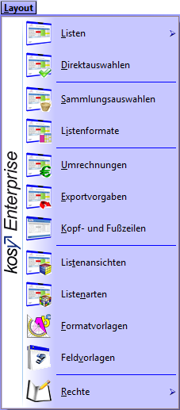

0 Allgemein
0.1 Allgemeine Hinweise
Vor oder während Ihrer ersten Sitzung mit Kosy Enterprise sollten Sie sich mit einigen grundlegenden Konzepten des Programms vertraut machen.
Wurde Kosy Enterprise auf ihrem Rechner noch nicht installiert, finden Sie im Abschnitt Installationshinweise Unterstützung bei der Installation.
Diese Einleitung gibt Ihnen zunächst einen kurzen Überblick über den Startvorgang, die Menüstruktur sowie die allgemeinen Eingabe- und Navigationsmöglichkeiten im Programm. Im Abschnitt Funktionen werden die Inhalte der einzelnen Menüpunkte ausführlich erläutert.
Fehlen bei Ihnen manche hier erläuterte Funktionen, so wird dies am ausgeschalteten Expertenmodus liegen (siehe Abschnitt Expertenmodus ein-/ausschalten). Vor allem zu Beginn ist diese Einstellung sehr sinnvoll. Falls Sie jedoch den Expertenmodus gerne einschalten möchten, so finden Sie diese Funktion unter Extras > Expertenmodus einschalten. Der Expertenmodus im Hauptmenü bezieht sich auf die Einstellungen des Hauptmenüs. Ebenso können Sie auf die gleiche Weise hier auch wieder den Expertenmodus ausschalten. Zusätzlich können Sie in jedem Menüpunkt durch einen Rechtsklick auf die Titelleiste den menüpunktspezifischen Expertenmodus ein- bzw. ausschalten.
0.2 Starten des Programms
Starten Sie das Programm im Windows-Startmenü unter Alle Programme > Kosy Enterprise > Kosy Enterprise oder durch einen Doppelklick auf die entsprechende Verknüpfung auf Ihrem Desktop.

Kosy Enterprise Desktop-Verknüpfung
0.3 Anmeldung
Im Anschluss an den Startvorgang werden Sie aufgefordert, sich zu authentifizieren. Dies geschieht über die Eingabe Ihres Benutzerkürzels und eines Passwortes. Falls Sie sich zum ersten Mal in Kosy Enterprise anmelden, lautet das Passwort leer, sofern nicht anders eingestellt. Sie bestätigen Ihre Eingabe durch die Enter -Taste oder die Schaltfläche  .
.
.png "Dialog Benutzer-Anmeldung")
Dialog: Benutzer-Anmeldung
Durch Setzen des Hakens Administrator gelangen Sie in das Administrator-Anmeldefenster. Die Anmeldung als Administrator erfolgt ausschließlich über die Passworteingabe. Beim ersten Programmstart lautet das Passwort leer.
.png "Dialog Administrator-Anmeldung")
Dialog: Administrator-Anmeldung
Durch Setzen des Hakens ActiveDirectory verwenden gelangen Sie in das ActiveDirectory-Anmeldefenster. Die Anmeldung hierbei erfolgt über Ihre Windows-Anmeldung (Netzwerk-kennung).
Hinweis
Die Anmeldung über ActiveDirectory ist nur verwendbar, wenn Computer und Benutzer eine Zugehörigkeit zu einer Domäne besitzen.
.png "Dialog ActiveDirectory-Anmeldung")
Dialog: ActiveDirectory-Anmeldung
Die Vergabe von Benutzerkürzeln steuern Sie unter Verwaltung > Benutzer > Benutzerübersicht in der Spalte Kürzel. Eine Passwortänderung für Mitarbeiter kann durch den Administrator oder Mitarbeiter mit mindestens Schreibzugriff auf diese Funktion an gleicher Stelle über das Schlüsselsymbol erreicht werden. Über die Zugriffsrechte erfahren Sie mehr in Abschnitt Berechtigungskonzept. Durch einen Rechtsklick auf den Benutzernamen in der Startmaske am unteren, linken Bildschirmrand kann weiterhin der jeweils aktuell angemeldete Benutzer sein eigenes Passwort anpassen (siehe Abschnitt Grundeinstellungen). Das Administrator-Passwort kann nur auf diesem Wege unter der Administrator-Anmeldung geändert werden. Mehr zur Verwaltung von Passwörtern erfahren Sie in den Abschnitten Grundeinstellungen, Benutzerübersicht sowie Sicherheit.
0.4 Navigation im Programm
Bei Ihrer Arbeit mit Kosy Enterprise werden Sie feststellen, dass bestimmte Maus- und Tastaturaktionen, Maskenansichten oder Eingabefelder an vielen Stellen im Programm in ähnlicher Form auftreten. In diesem Abschnitt werden Ihnen einige dieser Standards vorgestellt.
Falls Sie in einem der Hauptkapitel des Handbuchs auf Begrifflichkeiten stoßen sollten, die Ihnen unbekannt vorkommen, oder wenn Sie sich bezüglich der Bedeutung einer bestimmten Schaltfläche unsicher sind, so halten Sie zunächst in diesem Abschnitt nach einer entsprechenden Erläuterung Ausschau.
Mausaktionen
In Kosy Enterprise werden insgesamt neun verschiedene Mausaktionen unterstützt. Sofern Sie eine Maus mit Linkshänderbedienung verwenden, beachten Sie bitte, dass Sie bei den Bezeichnungen und Beschreibungen bestimmter Mausaktionen entsprechend umdenken müssen:
| Mausaktion | |
|---|---|
| Linksklick | Drücken und sofortiges Lösen der linken Maustaste (ohne Bewegen des Mauszeigers) |
| Rechtsklick | Drücken und sofortiges Lösen der rechten Maustaste (ohne Bewegen des Mauszeigers) |
| Doppelklick | zweimaliges Drücken einer Maustaste in schneller Folge (im Regelfall ist die linke Maustaste gemeint) |
| Mehrfachklick | mehrmaliges Drücken einer Maustaste in schnellerFolge (im Regelfall ist die linke Maustaste gemeint) |
| Zeigen | Stellen des Mauszeigers an eine bestimmte Stelle auf dem Bildschirm ohne Drücken einer Maustaste |
| Überfahren | Führen des Mauszeigers über einen bestimmten Bereich auf dem Bildschirm ohne Drücken einer Maustaste |
| Ziehen | Drücken der linken Maustaste und Bewegen des Mauszeigers bei gedrückter Maustaste |
| Linksklick & Halten | längeres Drücken der linken Maustaste (ohne Bewegen des Mauszeigers) |
| Scrollen | Drehen des Scrollrades (sofern vorhanden) zum schnellen Auf- und Abbewegen des Inhalts einer Maske |
Mausaktionen
Nicht alle dieser Mausaktionen werden für die Navigation in Kosy Enterprise zwingend benötigt. Der Mehrfachklick etwa kommt nur in den wenigen textverarbeitenden Bestandteilen des Programms zur Anwendung - zum Beispiel in Form eines dreifachen Linksklicks zur Markierung eines gesamten Textabsatzes.
Das Überfahren eines Bildschirmbereichs ist eine Aktion, die meist unbewusst geschieht. Sie bewirkt eine optische Hervorhebung der betroffenen Schaltfläche oder Registerkarte, löst aber ansonsten keine eigenständige Funktion aus.
Tastaturbefehle
Viele Aktionen in Kosy Enterprise können auch ohne Verwendung der Maus, also allein mithilfe der Tastatur durchgeführt werden. In einigen Situationen empfiehlt es sich sogar, auf die Benutzung der Maus ganz zu verzichten — zum Beispiel, wenn Sie eine größere Datenmenge via Tastatur eingeben möchten und den ständigen Wechsel zwischen Tastatur- und Mausbedienung dabei als störend empfinden würden.
Für solche Fälle ist es sinnvoll, sich die gängigsten Tastaturbefehle (auch: Hotkeys, Tastenkombinationen oder Shortcut) in Kosy Enterprise anzueignen. Mit dem Begriff Tastaturbefehl ist hier stets das Drücken einer oder mehrerer Tasten auf der Tastatur gemeint.
Einige Tastenkürzel (wie beispielsweise F1 zum Aufrufen der Hilfefunktion oder Strg+C und Strg+V zum Kopieren und Einfügen) dürften Ihnen bereits aus anderen auf Windows basierenden Programmen bekannt sein. Andere Tastenkombinationen hingegen sind programmspezifisch.
Tastaturbefehle, welche die Funktion einer bestimmten Schaltfläche übernehmen, können häufig durch das Zeigen auf selbige ermittelt werden. Sie werden dann in einem Hinweisfenster gemeinsam mit der jeweiligen Bedeutung der Schaltfläche angezeigt.
 Hinweisfenster: Tastaturbefehle
Hinweisfenster: Tastaturbefehle
Ersetzt ein Tastaturbefehl eine Funktion, die normalerweise über ein Kontextmenü aufgerufen wird, so wird die entsprechende Tastenkombination meist direkt in dem Kontextmenü mit angezeigt. Weitere Tastaturbefehle, die jeweils spezifisch innerhalb eines bestimmten Menüpunktes oder Untermenüpunktes gelten, werden in den entsprechenden Hauptkapiteln des Handbuchs erläutert.
0.5 Meldungen
Wenn Sie bei der Eingabe in einem Feld einen Fehler machen, so wird eine Warnmeldung ausgegeben und Sie können Ihre Eingabe korrigieren.
Kosy Enterprise gibt Ihnen häufig eine Bestätigungsmeldung, wenn ein Vorgang bearbeitet wurde. Des Weiteren werden Hinweise gegeben, die durch Klicken auf den OK-Button bestätigt werden müssen.
0.6 Programm beenden
Kosy Enterprise bietet Ihnen folgende Wege an, um das Programm wieder zu verlassen:
- Linksklick auf die Schaltfläche
 in der Menüleiste,
in der Menüleiste, - Eingabe der Tastenkombination Alt+F4 an jeder beliebigen Stelle im Programm,
- Doppelklick auf das Programmsymbol Kosy in der Titelleiste,
- Rechtsklick auf die Titelleiste und im Kontextmenü die Option Schließen wählen,
- Linksklick auf die Schaltfläche Schließen
 in der Titelleiste.
in der Titelleiste.
0.7 Installationshinweise
Sollte Kosy Enterprise auf Ihrem Rechner noch nicht installiert sein, kann die Installation in wenigen Schritten durchgeführt werden.
Das aktuelle Setup für Kosy Enterprise finden Sie in unserem Downloadbereich unter https://www.hksinformatik.de/downloads/kosy-enterprise/updates (Falls Sie noch keinen Benutzerzugang haben, müssen Sie sich ggf. noch auf unserer Homepage registrieren.)
Die heruntergeladene Datei befindet sich, wenn Sie keine weiteren Einstellungen vorgenommen haben, nun Ihrem Download-Ordner. Starten Sie die Installation durch einen Doppelklick auf die Installationsdatei im Benutzerkonto „Administrator“. Ein Konto „mit Administratorrechten“ reicht häufig nicht.
Das Installationsmenü öffnet sich und Sie werden Schritt für Schritt durch die Installation geleitet.
Weitere Informationen finden Sie im Abschnitt „Serveradministration und -migration“.
1 Verwaltung
Im Menüpunkt Verwaltung werden alle mandanten- sowie mitarbeiterbezogenen Stammdaten hinterlegt. Weiterhin sind hier das Berechtigungskonzept sowie die Typenverwaltung einzurichten. Die Verwaltung ist unterteilt in die Untermenüpunkte Mandanten, Benutzer, Gruppen, Typen sowie Rechte. Zur Anzeige und Bearbeitung der Daten innerhalb dieser Registerkarten greift Kosy Enterprise auf die im Abschnitt Maskenansichten und Standardmaske beschriebene Standardmaske zurück.

Menüpunkt Verwaltung
1.1 Module
Über die Modulauswahl wechseln Sie mit einem Klick z. B. von Kosy kk nach Kosy Enterprise und umgekehrt. Alternativ zum Rechtsklick auf das Hintergrundbild im Startbildschirm (siehe Abschnitt Hintergrundbild), finden Sie die Modulauswahl auch unter Verwaltung > Module.
1.2 Mandanten
Mandantenübersicht
In dieser Maske werden die Mandanten angelegt. Sie erreichen die Funktion aus dem Hauptmenü von Kosy Enterprise über Verwaltung > Mandanten > Mandantenübersicht.
In Kosy Enterprise müssen Daten aus verschiedenen Bereichen (z. B. Verbrauchsabrechnung und Finanzbuchhaltung) nicht mehr in voneinander getrennten Datenbanken aufgebaut werden. Stattdessen kann eine Trennung durch die Einrichtung eines Mandanten für den jeweiligen Bereich erreicht werden. Dies bedeutet, dass Sie durch Starten einer Kosy Enterprise-Instanz Zugriff auf Daten aller Unternehmensbereiche haben.
Hierfür legen Sie über  einen neuen Mandanten an. Ebenso können Sie mit
einen neuen Mandanten an. Ebenso können Sie mit  einen bereits bestehenden Mandanten löschen.
einen bereits bestehenden Mandanten löschen.
Kurzbezeichnung
Die Kurzbezeichnung dient der eindeutigen Identifikation des Mandanten. Aufgrund dessen darf sie nicht mehrfach in Ihrer Kosy Enterprise-Datenbank vorkommen. Wird dennoch versucht, eine Kurzbezeichnung mehrfach zu verwenden, so erfolgt eine Warnmeldung.

Fehlermeldung „Mehrfachnennung einer Kurzbezeichnung“
Titel
In dem Datenfeld Titel ist es möglich, eine Bezeichnung für den Mandanten zu hinterlegen. Dies ist keine zwingende Angabe, dennoch sollte sie getätigt werden, damit Sie fortlaufend im Programm eine sprechende Betitelung Ihres Mandanten erhalten.
Notiz
Die Notiz dient der Beschreibung eines Mandanten. Hier können wichtige Informationen zur näheren Erläuterung des Mandanten hinterlegt werden. Dafür stehen Ihnen 32.000 Zeichen zur Verfügung.
Farbe
Durch einen Klick in das Datenfeld Farbe öffnet sich ein Auswahlfenster mit wählbaren Farben. Somit ist es Ihnen möglich, einem Mandanten eine Farbe für das gesamte Programm zu hinterlegen. Die gewählte Farbe erscheint dann als Hintergrund für den Mandanten (z. B. auf dem Startbildschirm in der Mandantenanzeige).
Mandantenauswahl
Die Mandantenauswahl ermöglicht Ihnen ein schnelles Wechseln zwischen den einzelnen Mandanten. Alternativ zum Rechtsklick auf den Mandanten im Startbildschirm (siehe Kapitel Mandantenauswahl), finden Sie die Mandantenauswahl auch unter Verwaltung > Mandanten > Mandantenauswahl.
1.3 Benutzer
Benutzerübersicht
Die Stammdaten der Benutzer hinterlegen Sie in der Benutzerübersicht. Diese finden Sie unter Verwaltung > Benutzer > Benutzerübersicht.
Hier definiert der Systemadministrator die Benutzer, die berechtigt sind, sich am System anzumelden. Über den Button  können neue Benutzer angelegt, über den Button
können neue Benutzer angelegt, über den Button  können angelegte Benutzer gelöscht werden. Zur Anzeige und Bearbeitung der Daten innerhalb dieser Registerkarte greift Kosy Enterprise auf die im Abschnitt Maskenansichten und Standardmaske beschriebene Standardmaske zurück.
können angelegte Benutzer gelöscht werden. Zur Anzeige und Bearbeitung der Daten innerhalb dieser Registerkarte greift Kosy Enterprise auf die im Abschnitt Maskenansichten und Standardmaske beschriebene Standardmaske zurück.
Hinweis
Bitte beachten Sie, dass Änderungen an direkten Zugriffs-rechten eines Benutzers stets erst nach erneuter Anmeldung wirksam werden.
Der Datensatz eines Benutzers besteht aus Kürzel, Vorname, Nachname, E-Mail-Adresse, Telefon 1, Telefon 2, ActiveDirectory-Benutzer, Notiz, Farbe sowie Zugriff. Im Folgenden wird die Bedeutung der einzelnen Spalten erläutert.
Passwort ändern
Über das Symbol  in der Bearbeitungsleiste ist ein neues Passwort für den ausge-wählten Benutzer vergebbar. Hierzu werden Sie aufgefordert, das neue Passwort ein-zugeben und durch eine Wiederholung zu bestätigen. Weitere Möglichkeiten der Passwort-änderung finden Sie im Abschnitt Anmeldung sowie Grundeinstellungen.
in der Bearbeitungsleiste ist ein neues Passwort für den ausge-wählten Benutzer vergebbar. Hierzu werden Sie aufgefordert, das neue Passwort ein-zugeben und durch eine Wiederholung zu bestätigen. Weitere Möglichkeiten der Passwort-änderung finden Sie im Abschnitt Anmeldung sowie Grundeinstellungen.
Kürzel
Das Kürzel ist die eindeutige Kennung des Benutzers und damit ein Pflichtfeld. Aufgrund dessen darf sie nicht mehrfach in Ihrer Kosy Enterprise-Datenbank vorkommen. Wird dennoch versucht, eine Kurzbezeichnung mehrfach zu verwenden, so erfolgt eine Fehlermeldung.
Das Kürzel dient der Anmeldung des Benutzers. Alternativ zur Anmeldung über sein Kürzel, ist auch eine ActiveDirectory-Anmeldung möglich. Weitere Informationen zur Anmeldung finden Sie im Abschnitt Anmeldung.
Angaben zur Person
Durch die Elemente Vorname, Nachname, E-Mail-Adresse, Telefon 1 sowie Telefon 2 ist der Benutzer näher zu definieren. Diese Elemente sind keine Pflichtfelder, jedoch dienen sie der näheren Beschreibung des Benutzers und sollten daher gepflegt werden.
ActiveDirectory-Benutzer
Wird hier die Netzwerkkennung des entsprechenden Benutzers eingetragen, so besitzt dieser die Möglichkeit, sich über seine Netzwerkkennung bzw. Windows-Anmeldung anzumelden. Eine Anmeldung über das Benutzerkürzel ist dann nicht mehr notwendig. Weitere Informationen zur Anmeldung über ActiveDirectory finden Sie im Abschnitt Anmeldung sowie im Abschnitt Startparameter (beachten Sie in diesem Zusammenhang vor allem die Hinweise zur automatischen Anmeldung).
Notiz
Die Notiz dient der Beschreibung eines Benutzers. Hier können wichtige Informationen zur näheren Erläuterung des Benutzers hinterlegt werden. Dafür stehen Ihnen 32.000 Zeichen zur Verfügung. Alternativ zu der Spalte Notiz können Sie auch einen Doppelklick auf die Leiste Notiz und Bild machen, um dort die Notizen einzutragen. Hier ermöglicht Ihnen Kosy Enterprise auch das Einfügen eines Bildes, wie z. B. ein Foto des jeweiligen Benutzers.
Farbe
Durch einen Klick in das Datenfeld Farbe öffnet sich ein Auswahlfenster mit wählbaren Farben. Somit ist es Ihnen möglich, einem Benutzer eine Farbe für das gesamte Programm zu hinterlegen. Die gewählte Farbe erscheint dann als Hintergrund für den Benutzer (z. B. auf dem Startbildschirm in der Benutzeranzeige).
Zugriff
Über die Spalte Zugriff regulieren Sie die allgemeinen Benutzerzugriffsrechte in Kosy Enterprise. Allgemein kann die Rechtevergabe in Kosy Enterprise nicht nur auf den Funktionen erfolgen, sondern auch auf inhaltlicher bzw. struktureller Ebene. Daher finden Sie in vielen Menüpunkten Rechtevergaben. Für die jeweiligen Rechtevergaben in den einzelnen Menüpunkten, beachten Sie bitte die Beschreibung dieser in den jeweiligen Kapiteln. Eine allgemeine Einführung in das Thema Rechtevergabe finden Sie im Abschnitt Berechtigungskonzept.
1.4 Gruppen
Gruppenübersicht
Die Stammdaten der Gruppen hinterlegen Sie in der Gruppenübersicht. Diese finden Sie unter Verwaltung > Gruppen > Gruppenübersicht.
Hier können Sie Gruppen hinterlegen, um diesen später die entsprechenden Benutzer zuzuweisen (z. B. Rollen oder abteilungsspezifische Gruppen wie Personalabteilung oder Controlling). Über den  Button können neue Gruppen angelegt, über den
Button können neue Gruppen angelegt, über den  Button können angelegte Gruppen gelöscht werden. Zur Anzeige und Bearbeitung der Daten innerhalb dieser
Registerkarte greift Kosy Enterprise auf die im Abschnitt Maskenansichten und Standardmaske beschriebene Standardmaske zurück.
Button können angelegte Gruppen gelöscht werden. Zur Anzeige und Bearbeitung der Daten innerhalb dieser
Registerkarte greift Kosy Enterprise auf die im Abschnitt Maskenansichten und Standardmaske beschriebene Standardmaske zurück.
Ein Datensatz einer Gruppe besteht aus Kurzbezeichnung, Titel, Notiz und Farbe. Im Folgenden wird die Bedeutung der einzelnen Spalten erläutert.
Kurzbezeichnung
Die Kurzbezeichnung ist die eindeutige Kennung der Gruppe und damit ein Pflichtfeld. Aufgrund dessen darf sie nicht mehrfach in Ihrer Kosy Enterprise-Datenbank vorkommen. Wird dennoch versucht, eine Kurzbezeichnung mehrfach zu verwenden, so erfolgt eine Warnmeldung.
Titel
Der Titel spiegelt den Namen der Gruppe wider. Dieses Feld ist kein Pflichtfeld, jedoch dient es der näheren Beschreibung der Gruppe und sollte daher gefüllt werden. Der Titel sollte stets sprechend sein. So könnten Sie Ihre Gruppen nach Abteilungen (z. B. Personalabteilung, Geschäftsführung, Controlling etc.) oder nach Aufgabenbereichen benennen (z. B. Administratoren, Planung etc.).
Notiz
Die Notiz dient der Beschreibung einer Gruppe. Hier können wichtige Informationen zur näheren Erläuterung der Gruppe hinterlegt werden. Dafür stehen Ihnen 32.000 Zeichen zur Verfügung. Alternativ zu der Spalte Notiz können Sie auch einen Doppelklick auf die Leiste Notiz und Bild machen, um dort die Notizen einzutragen. Hier ermöglicht Ihnen Kosy Enterprise auch das Einfügen eines Bildes.
Farbe
Durch einen Klick in das Datenfeld Farbe öffnet sich ein Auswahlfenster mit wählbaren Farben. Somit ist es Ihnen möglich, einer Gruppe eine Farbe für das gesamte Programm zu hinterlegen. Die gewählte Farbe erscheint stets in den Auswahlboxen für die entsprechende Gruppe.
Gruppenzugehörigkeiten
Durch die Gruppenzugehörigkeiten definieren Sie, welcher Benutzer zu welcher Gruppe gehört. Ein Benutzer kann mehreren Gruppen angehören und eine Gruppe kann mehrere Benutzer beinhalten. Sie finden den Menüpunkt Gruppenzugehörigkeiten unter Verwaltung > Gruppen > Gruppenzugehörigkeiten.
Bevor Sie die Benutzer den Gruppen zuordnen, legen Sie über den Button  ein neues Element an. Analog dazu können Sie natürlich auch Gruppenzugehörigkeiten mit dem Button
ein neues Element an. Analog dazu können Sie natürlich auch Gruppenzugehörigkeiten mit dem Button  wieder löschen. Jede Gruppenzugehörigkeit erhält ein Datum, ab wann die gewählten Zuordnungen
Gültigkeit besitzen. Erst ab dem von Ihnen gewählten Datum gehören damit die Benutzer der jeweiligen Gruppe an. Die Gültigkeit ist ein
Pflichtfeld und darf nicht mehrfach verwendet werden. Versuchen Sie ein Datum mehrfach zu verwenden, so ändert das Programm automatisch das Datum auf den nächsten freien Folgetag ab.
wieder löschen. Jede Gruppenzugehörigkeit erhält ein Datum, ab wann die gewählten Zuordnungen
Gültigkeit besitzen. Erst ab dem von Ihnen gewählten Datum gehören damit die Benutzer der jeweiligen Gruppe an. Die Gültigkeit ist ein
Pflichtfeld und darf nicht mehrfach verwendet werden. Versuchen Sie ein Datum mehrfach zu verwenden, so ändert das Programm automatisch das Datum auf den nächsten freien Folgetag ab.
Innerhalb der Gruppenzugehörigkeiten haben Sie vier verschiedene Eingabemasken. Die drei ersten Registerkarten beinhalten alle die gleichen Informationen und dienen lediglich der unterschiedlichen Darstellung Ihrer Gruppenzuordnung. Sie können daher frei wählen, in welcher der drei Ansichten Sie die Zuordnungen am komfortabelsten eintragen können. Sie haben die Wahl zwischen der Matrixansicht, der einfachen Listenansicht, der geteilten Listenansicht sowie der Eingabe über Makros. Diese Ansichten werden im Folgenden vorgestellt. Sie werden diese Ansichten auch in allen Masken zur Rechteeingabe wiederfinden.
Matrixansicht
Die Matrixansicht zeigt Ihnen standardmäßig in den Zeilen die Gruppen und in den Spalten die Benutzer. Die Zuordnung der Benutzer zu den Gruppen treffen Sie in den bis dato leeren Zellen zwischen Zeilen und Spalten. Durch einen Doppelklick in eine Zelle erscheint das Symbol  , welches eine Zuordnung zwischen Gruppe und Benutzer symbolisiert. Im Weiteren wird auch von verknüpfen
gesprochen. Alternativ zu dem Doppelklick können Sie auch die entsprechende Zelle mit einem Linksklick markieren und einen
Rechtsklick tätigen, woraufhin sich ein Kontextmenü öffnet.
Alternativ zum Markieren einer einzelnen Zelle ist es auch möglich,
einen Bereich auszuwählen, indem Sie die linke Maustaste gedrückt halten und den Zeiger über die einzelnen Zellen ziehen. Ebenso können Sie durch einen Linksklick auf Zeilen oder Spalten diese direkt vollständig markieren.
, welches eine Zuordnung zwischen Gruppe und Benutzer symbolisiert. Im Weiteren wird auch von verknüpfen
gesprochen. Alternativ zu dem Doppelklick können Sie auch die entsprechende Zelle mit einem Linksklick markieren und einen
Rechtsklick tätigen, woraufhin sich ein Kontextmenü öffnet.
Alternativ zum Markieren einer einzelnen Zelle ist es auch möglich,
einen Bereich auszuwählen, indem Sie die linke Maustaste gedrückt halten und den Zeiger über die einzelnen Zellen ziehen. Ebenso können Sie durch einen Linksklick auf Zeilen oder Spalten diese direkt vollständig markieren.
Das Kontextmenü beinhaltet alle Funktionen, die Sie in der Matrixansicht ausführen können. Es bezieht sich bei den Eingabefunktionen stets auf den von Ihnen markierten Bereich. Ist somit eine Zeile von Ihnen markiert und Sie wählen den Menüpunkt Auswahlbereich markieren, so wird die gesamte Zeile mit dem Symbol  versehen. Im Folgenden werden die einzelnen Symbole mit Ihrer Funktionsweise kurz erläutert. Alternativ zum Kontextmenü sehen Sie die Tastenkombination, die Sie ebenfalls verwenden können.
versehen. Im Folgenden werden die einzelnen Symbole mit Ihrer Funktionsweise kurz erläutert. Alternativ zum Kontextmenü sehen Sie die Tastenkombination, die Sie ebenfalls verwenden können.
| Symbol | Bezeichnung | Tastenkombination | Funktionsweise |
|---|---|---|---|
| Auswahlbereich markieren | Strg+M | Der markierte Bereich wird verknüpft. | |
| Auswahlbereich demarkieren | Strg+D | Die Verknüpfung des markierten Bereichs wird aufgehoben. | |
| Markierung umkehren | Strg+R | Es findet eine Umkehrung der getroffenen Verknüpfungen statt. Getroffene Verknüpfungen werden aufgehoben, nicht getroffene Verknüpfungen aktiviert. | |
| markierten Bereich ausschneiden | Strg+X | Der markierte Bereich wird ausgeschnitten und in der Zwischenablage gespeichert. | |
| markierten Bereich kopieren | Strg+C | Der markierte Bereich wird kopiert und in der Zwischenablage gespeichert. | |
| Zwischenablage einfügen | Strg+V | Der zuvor ausgeschnittene oder kopierte Bereich wird eingefügt. | |
| Zwischenablage leeren | Strg+Z | Der zuvor ausgeschnittene oder kopierte Bereich wird aus der Zwischenablage entfernt. | |
| Suchen | Strg+F | Ermöglicht Ihnen die Suche nach Benutzern oder Gruppen innerhalb der Matrixansicht. | |
| Strg+P | Ermöglicht Ihnen, die Matrix zu drucken. | ||
| Import | Ermöglicht Ihnen, eine Matrix zu importieren. | ||
| Export | Ermöglicht Ihnen, die Matrix zu exportieren. | ||
| Änderungen übernehmen | Bestätigt die Übernahme Ihrer getätigten Änderungen. | ||
| Änderungen verwerfen | Verwirft die von Ihnen getätigten Änderungen. | ||
| kleine Symbole/große Symbole | Vergrößert bzw. verkleinert die Darstellung. | ||
| Matrix kippen | Spalten werden zu Zeilen und umgekehrt. |
Einfache Listenansicht
In der einfachen Listenansicht ordnet man dem in der Auswahlbox gewählten Benutzer die aufgelisteten Gruppen durch Markieren dieser zu.
Alternativ können Sie die Dimensionen vertauschen  , so dass die Gruppe statt des Benutzers in der Auswahlbox erscheint. Über die Symbole in der
Bearbeitungsleiste haben Sie die Möglichkeit, dem Benutzer über die Weltkugel
, so dass die Gruppe statt des Benutzers in der Auswahlbox erscheint. Über die Symbole in der
Bearbeitungsleiste haben Sie die Möglichkeit, dem Benutzer über die Weltkugel  alle Gruppen zuzuordnen bzw. über die negierte Weltkugel
alle Gruppen zuzuordnen bzw. über die negierte Weltkugel  alle Zuordnungen aufzuheben, Zuordnungen umzukehren und nach Gruppen zu suchen. Haben Sie die Dimensionen vertauscht, so gelten die Symbole in der Zuordnung analog für die Benutzer. Alternativ können Sie per Rechtsklick das Kontextmenü
mit den entsprechenden Funktionen aufrufen.
alle Zuordnungen aufzuheben, Zuordnungen umzukehren und nach Gruppen zu suchen. Haben Sie die Dimensionen vertauscht, so gelten die Symbole in der Zuordnung analog für die Benutzer. Alternativ können Sie per Rechtsklick das Kontextmenü
mit den entsprechenden Funktionen aufrufen.
Natürlich können Sie auch hier wieder über Doppelklick auf die Leiste im unteren Bildschirmrand das Feld zur Notizeingabe einblenden. Hier könnten Sie bspw. Ihre Begründung zur Gruppenzugehörigkeit notieren.
Geteilte Listenansicht
Die geteilte Listenansicht besteht aus dem Benutzer in der Auswahlbox und zwei Ansichten der Gruppen. In der linken Fensterhälfte
befinden sich alle Gruppen, die keine Zuordnung zum Benutzer besitzen.
In der rechten Fensterhälfte befinden sich alle Gruppen, in denen der
Benutzer bereits Mitglied ist. Markieren Sie auf der linken Seite eine oder mehrere Gruppen, so können Sie diese Auswahl mit dem Pfeil nach rechts  in die rechte Fensterhälfte verschieben.
Somit haben Sie dem Benutzer die entsprechenden Gruppen zugeordnet.
Durch das weitere Symbol mit dem Pfeil nach rechts
in die rechte Fensterhälfte verschieben.
Somit haben Sie dem Benutzer die entsprechenden Gruppen zugeordnet.
Durch das weitere Symbol mit dem Pfeil nach rechts  haben Sie die Möglichkeit, alle Gruppen der linken Fensterhälfte direkt nach rechts zu verschieben. Analog können Sie natürlich auch Zugehörigkeiten wieder auflösen, indem Sie bestimmte Gruppen mit dem Pfeil nach links wieder in die linke Hälfte zurückschieben.
haben Sie die Möglichkeit, alle Gruppen der linken Fensterhälfte direkt nach rechts zu verschieben. Analog können Sie natürlich auch Zugehörigkeiten wieder auflösen, indem Sie bestimmte Gruppen mit dem Pfeil nach links wieder in die linke Hälfte zurückschieben.
Nach Ihrer getroffenen Zuordnung speichern Sie Ihre Wahl über  oder verwerfen diese über
oder verwerfen diese über  . Auch hier ist ein Wechsel der Dimensionen möglich, damit die Gruppe über die Auswahlbox anwählbar ist.
. Auch hier ist ein Wechsel der Dimensionen möglich, damit die Gruppe über die Auswahlbox anwählbar ist.
Makros
Über Makros haben Sie die Möglichkeit, durch reguläre Ausdrücke
Zuordnungen durchzuführen. Legen Sie hierfür ein neues Makro über den Button  an. Die Kurzbezeichnung dient hier wieder der eindeutigen Identifizierung des Datensatzes. Der Titel
ist frei wählbar, sollte jedoch sprechend sein. In dem Feld
Benutzer-Auswahl können Sie nun über einen regulären Ausdruck mehrere Benutzer ansprechen, die Sie dann einer Gruppe, ebenfalls definiert durch einen regulären Ausdruck, zuordnen
(Gruppen-Auswahl). Natürlich ist auch hier eine Umkehrung möglich,
so dass Sie Gruppen Benutzern zuordnen. Dies können Sie im Feld
Richtung einstellen. Im Feld Art haben Sie die Möglichkeit, pro Makro einzustellen, ob die Benutzer zugeordnet werden oder bereits vorhandene Zuordnungen gelöscht werden.
an. Die Kurzbezeichnung dient hier wieder der eindeutigen Identifizierung des Datensatzes. Der Titel
ist frei wählbar, sollte jedoch sprechend sein. In dem Feld
Benutzer-Auswahl können Sie nun über einen regulären Ausdruck mehrere Benutzer ansprechen, die Sie dann einer Gruppe, ebenfalls definiert durch einen regulären Ausdruck, zuordnen
(Gruppen-Auswahl). Natürlich ist auch hier eine Umkehrung möglich,
so dass Sie Gruppen Benutzern zuordnen. Dies können Sie im Feld
Richtung einstellen. Im Feld Art haben Sie die Möglichkeit, pro Makro einzustellen, ob die Benutzer zugeordnet werden oder bereits vorhandene Zuordnungen gelöscht werden.
Nach Eingabe des Makros, führen Sie bitte diesen über die Startflagge  aus. Alternativ können Sie auch einen
Klick auf den Haken neben der Flagge machen. Es öffnet sich ein Kontextmenü mit weiteren Möglichkeiten. Sind mehrere Makros vorhanden,
so können Sie diese alle gleichzeitig ausführen. Nun können Sie das Ergebnis in der Matrixansicht überprüfen.
aus. Alternativ können Sie auch einen
Klick auf den Haken neben der Flagge machen. Es öffnet sich ein Kontextmenü mit weiteren Möglichkeiten. Sind mehrere Makros vorhanden,
so können Sie diese alle gleichzeitig ausführen. Nun können Sie das Ergebnis in der Matrixansicht überprüfen.
1.5 Typen
Kosy Enterprise kann vier Dimensionen darstellen, daher gibt es auch vier verschiedene Arten von Typen. Es werden Planungs-, Konto-, Zeit- und Segmenttypen unterschieden. Auch Dateien besitzen Typen, die sogenannten Dateitypen.
Allgemein kann man einen Typ als ein Präfix definieren, das der näheren Erläuterung des jeweiligen Elements dient. Somit kann bspw. eine Kostenstelle durch KST definiert werden und ein Kostenträger durch KTR. Kosy Enterprise besitzt bereits diverse vordefinierte Typen. Die Eingabe oder Änderung von Typen in den einzelnen Menüpunkten wird im folgenden Kapitel exemplarisch an den Planungstypen erläutert.
Planungstypen
Sie finden den Menüpunkt Planungstypen unter Verwaltung > Typen > Planungsypen. Hier legen Sie mögliche Präfixe für die Planungseinheiten an. über die Standard-Bearbeitungsleiste können Sie neue Planungstypen anlegen, vorhandene Planungstypen löschen, bearbeiten oder kopieren. Die Bedeutung der einzelnen Spalten wird nun kurz dargelegt.
Kurzbezeichnung
Die Kurzbezeichnung dient der eindeutigen Identifikation des Planungstyps. Aufgrund dessen darf sie nicht mehrfach in Ihrer Planungstypen-Liste vorkommen. Die Kurzbezeichnung ist später in der Planungsstruktur als Präfix für einzelne Planungseinheiten nutzbar.
Titel
In dem Datenfeld Titel ist es möglich, eine Bezeichnung für den Planungstyp zu hinterlegen. Dies ist keine zwingende Angabe, dennoch sollte sie getätigt werden, damit Sie fortlaufend im Programm eine sprechende Betitelung erhalten.
Einheit
Aber das Feld Einheit können Sie einem Planungstyp standardmäßig eine Einheit mitgeben (z. B. €). Diese wird dann später in der Ausgabe angezeigt. Sind bereits Einheiten in der Übersicht vorhanden, so zeigt Ihnen das Programm diese in der Auswahlbox an. Fehlt die gewünschte Einheit, so können Sie diese einfach in das Feld Einheit hineinschreiben.
Bitte beachten Sie, dass die Einheitenvergabe in der Ausgabe stets vom führenden Element abhängig ist. Um Informationen für das führende Element zu erhalten, halten Sie die linke Maustaste in der Ausgabe auf der gewünschten Zeile, Spalte oder Zelle gedrükt. Es öffnet sich ein Fenster mit den gewünschten Informationen.
Dezimalstellen
Das Feld Dezimalstellen definiert pro Planungstyp, mit wie vielen Dezimalstellen dieser in der Ausgabe später angezeigt werden soll. Treffen Sie hierfür die gewünschte Einstellung für die Auswahlbox.
Notiz
Die Notiz dient der Beschreibung eines Planungstypen. Hier können wichtige Informationen zur näheren Erläuterung hinterlegt werden. Dafür stehen Ihnen 32.000 Zeichen zur Verfügung.
Farbe
Durch einen Klick in das Datenfeld Farbe öffnet sich ein Auswahlfenster mit wählbaren Farben. Somit ist es Ihnen möglich, einem Planungstyp eine Farbe für das gesamte Programm zu hinterlegen. Die gewählte Farbe erscheint immer dann, wenn der entsprechende Planungstyp angesprochen wird (z. B. in der Planungsstruktur und in der Datenein- bzw. -ausgabe).
Kontotypen
Sie finden den Menüpunkt Kontotypen unter Verwaltung > Typen> Kontotypen. Hier legen Sie mögliche Präfixe für die Konten an. über die Standard-Bearbeitungsleiste können Sie neue Kontotypen anlegen, vorhandene Kontotypen löschen, bearbeiten oder kopieren. Für eine Erläuterung der einzelnen Spalten beachten Sie bitte das Abschnitt Planungstypen.
Zeittypen
Sie finden den Menüpunkt Zeittypen unter Verwaltung > Typen> Zeittypen. Hier legen Sie mögliche Präfixe für die Zeiteinheiten an. über die Standard-Bearbeitungsleiste können Sie neue Zeittypen anlegen, vorhandene Zeittypen löschen, bearbeiten oder kopieren. Für eine Erläuterung der einzelnen Spalten beachten Sie bitte das Abschnitt Planungstypen.
Segmenttypen
Sie finden den Menüpunkt Segmenttypen unter Verwaltung > Typen> Segmenttypen. Hier legen Sie mögliche Präfixe für die Segmente an. über die Standard-Bearbeitungsleiste können Sie neue Segmenttypen anlegen, vorhandene Segmenttypen löschen, bearbeiten oder kopieren. Für eine Erläuterung der einzelnen Spalten beachten Sie bitte das Abschnitt Planungstypen.
Dateitypen
Sie finden den Menüpunkt Dateitypen unter Verwaltung > Typen> Dateitypen. Hier legen Sie mögliche Präfixe für die Datei an. über die Standard-Bearbeitungsleiste können Sie neue Dateitypen anlegen, vorhandene Dateitypen löschen, bearbeiten oder kopieren. Für eine Erläuterung der einzelnen Spalten beachten Sie bitte das Abschnitt Planungstypen.
1.6 Rechte
Eine Rechtevergabe für die Benutzer oder Gruppen auf einzelnen Menüpunkten führen Sie in den Menüpunkten Verwaltung > Rechte durch. Weitere Informationen zur Vergabe von Rechten finden Sie im Abschnitt Berechtigungskonzept.
Rechte auf Module
Eine Rechtevergabe für die Benutzer oder Gruppen auf einzelne Module führen Sie im Menüpunkt Verwaltung > Rechte > Rechte auf Module durch. Weitere Informationen zur Vergabe von Rechten finden Sie im Abschnitt Berechtigungskonzept.
Rechte auf Funktionen
Eine Rechtevergabe für die Benutzer oder Gruppen auf einzelne Funktionen führen Sie im Menüpunkt Verwaltung > Rechte > Rechte auf Funktionen durch. Weitere Informationen zur Vergabe von Rechten finden Sie im Abschnitt Berechtigungskonzept.
Rechte auf Mandanten
Eine Rechtevergabe für die Benutzer oder Gruppen auf einzelne Mandanten führen Sie im Menüpunkt Verwaltung > Rechte > Rechte auf Mandanten durch. Weitere Informationen zur Vergabe von Rechten finden Sie im Abschnitt Berechtigungskonzept.
Rechte auf Planungstypen
Eine Rechtevergabe für die Benutzer oder Gruppen auf einzelne Planungstypen führen Sie im Menüpunkt Verwaltung > Rechte > Rechte auf Planungstypen durch. Weitere Informationen zur Vergabe von Rechten finden Sie im Abschnitt Berechtigungskonzept.
Rechte auf Kontotypen
Eine Rechtevergabe für die Benutzer oder Gruppen auf einzelne Kontotypen führen Sie im Menüpunkt Verwaltung > Rechte > Rechte auf Kontotypen durch. Weitere Informationen zur Vergabe von Rechten finden Sie im Abschnitt Berechtigungskonzept.
Rechte auf Zeittypen
Eine Rechtevergabe für die Benutzer oder Gruppen auf einzelne Zeittypen führen Sie im Menüpunkt Verwaltung > Rechte > Rechte auf Zeittypen durch. Weitere Informationen zur Vergabe von Rechten finden Sie im Abschnitt Berechtigungskonzept.
Rechte auf Segmenttypen
Eine Rechtevergabe für die Benutzer oder Gruppen auf einzelne Segmenttypen führen Sie im Menüpunkt Verwaltung > Rechte > Rechte auf Segmenttypen durch. Weitere Informationen zur Vergabe von Rechten finden Sie im Abschnitt Berechtigungskonzept.
Rechte auf Dateitypen
Eine Rechtevergabe für die Benutzer oder Gruppen auf einzelne Dateitypen führen Sie im Menüpunkt Verwaltung > Rechte > Rechte auf Dateitypen durch. Weitere Informationen zur Vergabe von Rechten finden Sie im Abschnitt Berechtigungskonzept.
2 Dimensionen
Im Menüpunkt Dimensionen werden alle dimensionsbezogenen Stammdaten sowie Strukturen und Sammlungen hinterlegt. Weiterhin finden Sie hier eine Übersicht der Buchungsfelder sowie der menüpunktspezifischen Rechtevergabe. Der Menüpunkt Dimensionen ist unterteilt in die Untermenüpunkte Planungseinheiten, Konten, Zeit, Segmente sowie Buchungsfelder. Zur Anzeige und Bearbeitung der Daten innerhalb dieser Registerkarten greift Kosy Enterprise auf die im Abschnitt Maskenansichten und Standardmaske beschriebene Standardmaske zurück.
Menüpunkt Dimensionen
2.1 Planungseinheiten
Sie erreichen die Funktion über Dimensionen > Planungseinheiten. In diesem Funktionsblock können die Planungseinheiten individuellen Bedürfnissen entsprechend aufgebaut werden.
Hier definiert der Benutzer unter anderem:
- welche Planungseinheiten er abbilden möchte,
- wie diese miteinander verknüpft sind, z. B. ob Summen zu bilden sind,
- in welcher Reihenfolge die Planungseinheiten in den Eingabemasken und in den Listenbildern angeordnet werden sollen,
- wer welche Rechte auf die Planungseinheiten besitzt.
Je nach angestrebtem Modell können Planungseinheiten zum Beispiel Kostenstellen, Sonderkunden und Tarife, Aufträge oder Mitarbeiter sein. Auch beliebige andere Elemente können als Planungseinheiten dargestellt werden. Zu den Planungseinheiten gehören nicht nur die Eingabeelemente, sondern auch alle Summenpositionen.
Der Menüpunkt Planungseinheiten unterteilt sich in die Untermenüpunkte Planungsstrukturen, Planungssammlungen, Planungseinheiten (Stammsätze), Planungsfelder sowie die verschiedenen menüpunktspezifischen Rechtevergaben. Der Aufbau der einzelnen Menüpunkte und deren Handhabung werden in den folgenden Unterkapiteln erläutert.
Planungsstrukturen
Sie gelangen in den Menüpunkt Planungsstrukturen über das Hauptmenü Dimensionen > Planungseinheiten > Planungsstrukturen. Hier haben Sie die Möglichkeit, Planungseinheiten in Strukturbäumen darzustellen. Alle Planungseinheiten sind in Strukturbäumen organisiert. Diese repräsentieren zum Beispiel den Kostenstellenplan eines Unternehmens.
Der Untermenüpunkt Planungsstrukturen unterteilt sich in die Registerkarten Übersicht, Planungsstruktur, Benutzerrechte sowie Gruppenrechte. Zur effektiven Erstellung Ihrer individuellen Planungsstrukturen, folgen Sie bitte den Registerkarten von oben nach unten. Mit der Tastenkombination Alt +Doppelklick auf eine Planungsstruktur gelangen Sie in die Struktur. Diese Tastenkombination können Sie in jeder Übersichtsmaske von Kosy Enterprise verwenden, um in die nächste Registerkarte zu gelangen.
Übersicht
In der Übersicht finden Sie eine Auflistung aller Planungsstrukturen des ausgewählten Mandanten. Über den Button  können neue Planungsstrukturen angelegt, über den Button
können neue Planungsstrukturen angelegt, über den Button  können angelegte Planungsstrukturen gelöscht werden. Zur Anzeige und Bearbeitung der Daten innerhalb dieser Registerkarte greift Kosy Enterprise auf die im Abschnitt Maskenansichten und Standardmaske beschriebene Standardmaske zurück.
Ein Datensatz einer Planungsstruktur besteht aus Kurzbezeichnung, Titel, Notiz und Farbe. Im Folgenden wird die Bedeutung der einzelnen Spalten erläutert.
können angelegte Planungsstrukturen gelöscht werden. Zur Anzeige und Bearbeitung der Daten innerhalb dieser Registerkarte greift Kosy Enterprise auf die im Abschnitt Maskenansichten und Standardmaske beschriebene Standardmaske zurück.
Ein Datensatz einer Planungsstruktur besteht aus Kurzbezeichnung, Titel, Notiz und Farbe. Im Folgenden wird die Bedeutung der einzelnen Spalten erläutert.
Kurzbezeichnung
Die Kurzbezeichnung dient der eindeutigen Identifikation der Planungsstruktur. Aufgrund dessen darf sie nicht mehrfach in der Übersicht erscheinen.
Titel
In dem Datenfeld Titel ist es möglich, eine Bezeichnung für die Planungsstruktur zu hinterlegen (z. B. Kostenstellenplan). Dies ist keine zwingende Angabe, dennoch sollte sie getätigt werden, damit Sie fortlaufend im Programm eine sprechende Betitelung erhalten.
Notiz und Farbe
Die Notiz dient der Beschreibung einer Planungsstruktur. Hier können wichtige Informationen zur näheren Erläuterung hinterlegt werden. Dafür stehen Ihnen 32.000 Zeichen zur Verfügung.
Durch einen Klick in das Datenfeld Farbe öffnet sich ein Auswahlfenster mit wählbaren Farben. Somit ist es Ihnen möglich, einer Planungsstruktur eine Farbe für das gesamte Programm zu hinterlegen.
Planungsstruktur
Haben Sie in der Übersicht eine Planungsstruktur angelegt und markiert, wechseln Sie in die Registerkarte Planungsstruktur. In der Titelleiste erkennen Sie, in welcher Struktur Sie sich befinden.
Bei einer neuen Planungsstruktur sind noch keine Planungseinheiten vorhanden. Sie haben hier die Möglichkeit, über das Symbol  neue Planungseinheiten per Hand anzulegen, über
neue Planungseinheiten per Hand anzulegen, über  Planungseinheiten zu generieren oder über Planungseinheiten zu importieren. Klicken Sie auf das entsprechende Symbol und folgen Sie dem automatisch öffnenden Assistenten.
Planungseinheiten zu generieren oder über Planungseinheiten zu importieren. Klicken Sie auf das entsprechende Symbol und folgen Sie dem automatisch öffnenden Assistenten.
Bearbeitungsleiste
| Symbol | Bezeichnung | Tastenkombination | Funktionsweise |
|---|---|---|---|
| neue Planungseinheit anlegen | Einfg | Es wird eine neue Planungseinheit angelegt. | |
| Planungseinheit(en) löschen | Entf | Es wird/werden die markierte(n) Planungseinheit(en) gelöscht. | |
| Rechenregel anlegen | Strg+R | Es wird eine Rechenregel für das markierte Element angelegt. | |
| Planungsstruktur auf- und zuklappen | Die Struktur kann vollständig oder teilweise auf- und zugeklappt werden. | ||
| Planungsstruktur pflegen | Die Planungsstruktur kann sortiert, generiert oder strukturiert werden. | ||
| Planungsstruktur durchsuchen | Strg+F | In der Struktur wird nach einer Planungseinheit gesucht. | |
| Planungsstruktur aktualisieren | F5 | Die Planungsstruktur wird aktualisiert. | |
| Planungsstruktur aus einer Datei importieren | Die Planungsstruktur wird importiert. | ||
| Planungsstruktur in eine Datei exportieren | Die Planungsstruktur wird exportiert. | ||
| Planungsstruktur drucken | Die Planungsstruktur wird gedruckt. |
Strukturbaum
")
Exemplarische Darstellung einer Planungsstruktur
Alle Planungseinheiten sind in Strukturbäumen organisiert. Diese repräsentieren zum Beispiel den Kostenstellenplan eines Unternehmens (s. Grafik). Strukturbäume werden auch als Tabellen bezeichnet, sie bilden die direkte Grundlage für das Erscheinungsbild der Auswertungslisten. Die innerhalb eines Strukturbaumes dargestellte Hierarchie repräsentiert Rechenregeln, die die Zwischensummen der Berichte bilden.
Die Strukturbäume können jederzeit an die Erfordernisse des Unternehmens und der einzelnen Unternehmensbereiche angepasst werden. Seitens Kosy Enterprise gibt es keine Begrenzung bei der Anzahl der Tabellen. Die Handhabung des Strukturbaumes orientiert sich an den aus dem Windows Explorer bekannten Methoden. Halten Sie eine Planungseinheit mit der linken Maustaste „fest“ und ziehen Sie sie auf eine andere Planungseinheit. Erscheint eine blaue Umrahmung, so wird das Element in die Gruppe des umrahmten Elements verschoben (verdichtet). Möchten Sie ein Element lediglich in der Struktur verschieben, so wählen Sie mit dem Mauszeiger den Zwischenraum zweier Elemente. Es erscheint eine blaue Linie, die Ihnen symbolisiert an welcher Stelle Ihre Planungseinheit stehen wird. Lassen Sie die linke Maustaste los, so wird das Element verschoben.
Durch einen Rechtsklick auf eine Planungseinheit haben Sie die Möglichkeit, ein Kontextmenü zu öffnen, welches Ihnen eine weitere Bearbeitung der Planungseinheiten ermöglicht. Sie finden dort die Symbole aus der Bearbeitungsleiste wieder.
Sie haben die Möglichkeit, sich pro Planungseinheit Ihre Zugriffsberechtigung anzeigen zu lassen. Dafür machen Sie bitte einen Rechtsklick auf die Titelleiste der Planungsstruktur. Es erscheint ein Kontextmenü, in welchem Sie sich z. B. Zugriff, Rechenregeln oder auch die Zahl der Unterelemente pro Ordner anzeigen lassen können. Wählen Sie z. B. Navigation, um die Auswahl Ihrer Navigationseinstellungen über die Navigationsleiste zu erkennen.
")
Kontextmenü Planungsstruktur Titelleiste
Navigationsleiste
Rechts neben Ihrem Strukturbaum finden Sie eine Navigationsleiste. Durch einen Linksklick auf öffnet sich ein Kontextmenü, in welchem Sie Planungseinheiten nach ihren Eigenschaften auswählen. Durch die Pfeilsymbole können Sie dann zwischen den ausgewählten Planungseinheiten wechseln. Um Ihre Auswahl sichtbar zu machen, wählen Sie bitte im Kontextmenü der Titelleiste den Menüpunkt Navigation (siehe obige Abbildung: "Kontextmenü Planungsstruktur Titelleiste").
Detailansicht
Haben Sie die Detailansicht gewählt, so erscheint diese in einem neuen Fenster rechts neben dem Strukturbaum. Die Detailansicht beinhaltet vier Registerkarten, wovon sich die Registerkarten Allgemein und Struktur auf die jeweilig markierte Planungseinheit beziehen. Die Registerkarte Rechenregelgruppen beinhaltet eine Übersicht aller Rechenregelgruppen der Planungsstruktur sowie analog die Registerkarte Rechenregeln alle Rechenregeln der angewählten Rechenregelgruppe enthält.
Allgemein
In der Registerkarte Allgemein definieren Sie den Planungstyp und die Kurzbezeichnung der markierten Planungseinheit. Die Kombination aus beiden ist das eindeutige Kennzeichen der Planungseinheit, dennoch darf die Planungseinheit mehrfach in der Struktur auftauchen. Hierbei gibt es zwei Möglichkeiten:
- Sie kopieren eine bestehende Planungseinheit (möglich auch über Strg+C, Strg+V) und entscheiden sich für die Option denselben Stammsatz zu verwenden. Damit entsteht eine 1:1 Kopie der gewählten Planungseinheit. Sie wird später mehrfach im Bericht auftauchen. Dies könnte sinnvoll sein, wenn Sie in der Ausgabe auf einem Blick zwei unterschiedliche Auswertungen sehen möchten.
- Kopieren Sie wie oben beschrieben eine Planungseinheit in eine andere Verdichtung und setzen Sie für die Verdichtung den Haken als zusätzliche Buchungsreferenz verwenden. Hiermit teilen Sie die Planungseinheit abhängig von ihrer Verdichtung auf. Eine nähere Beschreibung finden Sie im unten stehenden Beispiel.
Zusätzlich haben Sie hier die Möglichkeit, der Planungseinheit einen Titel sowie einen Alternativtitel zu hinterlegen. Vorbereitend für die Ausgabe, können Sie noch zusätzlich eine Einheit hinterlegen sowie definieren, wie viele Nachkommastellen in der Ausgabe angezeigt werden sollen. Natürlich sind auch hier wieder eine Farbwahl sowie eine Beschreibung der Planungseinheit durch Notiz und Bild möglich.
Bei Wörtertrennung besteht die Möglichkeit, diese per Bindestrich zu teilen und einen Zeilenumbruch einzufügen. Die Trennung können Sie beim Titel durch Benutzung des Bindestrichs und der Tilde erwirken. Dadurch wird in der Ausgabe bei Anpassung der Spalte automatisch an der von Ihnen gewünschten Stelle, falls nötig, ein Zeilenumbruch inklusive Bindestrich eingefügt.
Struktur
In der Registerkarte Struktur geben Sie der gewählten Planungseinheit weitere Eigen-schaften.
Ist der Haken bei Planungseinheit nach oben schichten gesetzt, so wird der Wert der Planungseinheit in die Summe der Verdichtung aufgenommen.
Durch die Option Eingabewerte berücksichtigen besitzt die Planungseinheit die Fähigkeit Eingabewerte aufzunehmen (z. B. eingelesene Daten aus Ihrem Buchungssystem). Standardmäßig ist dieser Haken bei Elementen der untersten Ebene gesetzt.
Ist der Haken als zusätzliche Buchungsreferenz verwenden gesetzt, so beziehen sich die darunter liegenden Planungseinheiten auf die mit diesem Haken versehende Verdichtung und bekommen dadurch ihre Eindeutigkeit.Ä
Beispiel
Der Kunde 4711 hat in einem Jahr von Tarif 1 in Tarif 2 gewechselt. Der Erlös, der durch den Kunden entstanden ist, soll pro Tarif dargestellt werden. Dafür wird der Kunde 4711 einmal unter den Tarif 1 und einmal unter den Tarif 2 angelegt. Besitzen beide Verdichtungen den Haken als zusätzliche Buchungsreferenz verwenden, so werden die Erlöse des Kunden 4711 aufgeteilt nach Tarif 1 und Tarif 2.
Rechenregelgruppen
In dieser Registerkarte werden Rechenregelgruppen angelegt, welche eine Sammlung an Rechenregeln repräsentieren. Zur Anzeige und Bearbeitung der Daten innerhalb dieser Registerkarte greift Kosy Enterprise auf die im Abschnitt Maskenansichten und Standardmaske beschriebene Standardmaske zurück.
Eine Rechenregelgruppe wird definiert durch eine Position, eine Kurzbezeichnung, einen Titel, einer Anzahl sowie einer Stufe. Die Kurzbezeichnung ist die eindeutige Identifikation der Rechenregelgruppe und darf nur einmal in einer Struktur erscheinen. In dem Feld Titel haben Sie die Möglichkeit, eine Bezeichnung für die angelegte Rechenregelgruppe zu hinterlegen. Falls für die Berechnung eines bestimmten Wertes mehrere Rechenregeln in Frage kommen, wird diejenige aus der Rechenregelgruppe mit der höchsten Stufe angewendet. Die Stufe ermittelt Kosy automatisch dimensionsübergreifend aus den von ihnen angegebenen Positionen. Die Spalte Anzahl spiegelt die Anzahl der vorhandenen Rechenregeln in der Rechenregelgruppe wider. Natürlich haben Sie auch hier wieder die Möglichkeit, eine Notiz je Rechenregelgruppe anzulegen. Sie finden die Eingabemaske am unteren Bildschirmrand.
Rechenregeln
Die Registerkarte Rechenregeln bietet eine Aufstellung aller Rechenregeln der aus-gewählten Rechenregelgruppe. Sie haben hier bspw. die Möglichkeit, Rechenregeln zu löschen oder zu ändern.
Um neue Rechenregeln anzulegen, wählen Sie das Element aus, das Sie berechnen wollen und klicken im oberen Bereich auf das Rechenregelsymbol  . Daraufhin öffnet sich im unteren Bildschirmbereich ein Fenster, in das Sie Ihre Berechnung eingeben können. Sie können einfache Berechnungen wie die Subtraktion oder Addition mehrerer Elemente hinterlegen, aber auch auf komplexere Funktionen zurückgreifen. Eine Übersicht aller Funktionen und Elemente erhalten Sie mit der Tastenkombination Strg+Leertaste.
. Daraufhin öffnet sich im unteren Bildschirmbereich ein Fenster, in das Sie Ihre Berechnung eingeben können. Sie können einfache Berechnungen wie die Subtraktion oder Addition mehrerer Elemente hinterlegen, aber auch auf komplexere Funktionen zurückgreifen. Eine Übersicht aller Funktionen und Elemente erhalten Sie mit der Tastenkombination Strg+Leertaste.
Benutzerrechte und Gruppenrechte
Über die Registerkarten Benutzerrechte und Gruppenrechte gelangen Sie in die Rechtevergabe pro Planungsstruktur. Hier können Sie einzelnen Benutzern oder Gruppen Rechte für die einzelnen Planungsstrukturen erteilen. Weitere Hinweise zur Funktionsweise dieser Ansichten finden Sie in Abschnitt Berechtigungskonzept.
Bitte beachten Sie, dass diese Registerkarten nur vorhanden sind, wenn Sie über den Menüpunkt Dimensionen > Planungseinheiten > Rechte auf Planungsstrukturen eine entsprechende Rechtezuordnung angelegt haben.
Planungssammlungen
Sie gelangen in den Menüpunkt Planungssammlungen über das Hauptmenü Dimensionen > Planungseinheiten > Planungssammlungen.
Hier haben Sie die Möglichkeit, Planungseinheiten in Sammlungen zu gruppieren. Die Sammlungen können in den Rechenregeln, Layouts sowie in der Ausgabe explizit angesprochen werden, wodurch z. B. eine sammlungsspezifische Formatierung oder eine Filterung ermöglicht wird.
Beispiel
Wenn Sie in der Ausgabe eine Auswertung haben möchten, welche lediglich Ihre Geschäftsbereiche anzeigt, so erstellen Sie sich eine Sammlung, in welcher ausschließlich die Planungseinheiten Geschäftsbereiche vorhanden sind.
Der Untermenüpunkt Planungssammlungen unterteilt sich in die Registerkarten Übersicht, Planungssammlungen, Benutzerrechte sowie Gruppenrechte. Zur effektiven Erstellung Ihrer individuellen Planungssammlungen, folgen Sie bitte den Registerkarten von oben nach unten.
Übersicht
In der Übersicht finden Sie eine Auflistung aller Planungssammlungen des ausgewählten Mandanten. Über den Button  können neue Planungssammlungen angelegt, über den Button
können neue Planungssammlungen angelegt, über den Button  können angelegte Planungssammlungen gelöscht werden. Zur Anzeige und Bearbeitung der Daten innerhalb dieser Registerkarte greift Kosy Enterprise auf die im Abschnitt Maskenansichten und Standardmaske beschriebene Standardmaske zurück.
können angelegte Planungssammlungen gelöscht werden. Zur Anzeige und Bearbeitung der Daten innerhalb dieser Registerkarte greift Kosy Enterprise auf die im Abschnitt Maskenansichten und Standardmaske beschriebene Standardmaske zurück.
Ein Datensatz einer Planungssammlung besteht aus Kurzbezeichnung, Titel, Notiz und Farbe. Im Folgenden wird die Bedeutung der einzelnen Spalten erläutert.
Kurzbezeichnung
Die Kurzbezeichnung dient der eindeutigen Identifikation der Planungssammlung. Aufgrund dessen darf sie nicht mehrfach in der Übersicht erscheinen.
Titel
In dem Datenfeld Titel ist es möglich, eine Bezeichnung für die Planungssammlung zu hinterlegen (z. B. nur Geschäftsbereiche). Dies ist keine zwingende Angabe, dennoch sollte sie getätigt werden, damit Sie fortlaufend im Programm eine sprechende Betitelung erhalten.
Notiz und Farbe
Die Notiz dient der Beschreibung einer Planungssammlung. Hier können wichtige Infor-mationen zur näheren Erläuterung hinterlegt werden. Dafür stehen Ihnen 32.000 Zeichen zur Verfügung.
Durch einen Klick in das Datenfeld Farbe öffnet sich ein Auswahlfenster mit wählbaren Farben. Somit ist es Ihnen möglich, einer Planungssammlung eine Farbe für das gesamte Programm zu hinterlegen.
Planungssammlung
Haben Sie in der Übersicht eine Planungssammlung angelegt und markiert, wechseln Sie in die Registerkarte Planungssammlung. In der Titelleiste erkennen Sie, in welcher Sammlung Sie sich befinden.
Über den Button  können neue Sammler angelegt werden. Hier haben Sie die Möglichkeit, durch einen Rechtsklick in die Titelleiste der Sammler die Detailansicht ein- oder auszuschalten. Im Folgenden werden kurz die Eingabemöglichkeiten in der Detailansicht erläutert.
können neue Sammler angelegt werden. Hier haben Sie die Möglichkeit, durch einen Rechtsklick in die Titelleiste der Sammler die Detailansicht ein- oder auszuschalten. Im Folgenden werden kurz die Eingabemöglichkeiten in der Detailansicht erläutert.
Registerkarte Allgemein
Kurzbezeichnung
Die Kurzbezeichnung dient der eindeutigen Identifikation des Sammlers. Aufgrund dessen darf sie nicht mehrfach in der Übersicht erscheinen.
Titel
In dem Datenfeld Titel ist es möglich, eine Bezeichnung für den Sammler zu hinterlegen. Dies ist keine zwingende Angabe, dennoch sollte sie getätigt werden, damit Sie fortlaufend im Programm eine sprechende Betitelung erhalten.
Auswahl
In dem Feld Auswahl können Sie über die Eingabe einer bestimmten Planungseinheit oder eines regulären Ausdrucks die gewünschten Planungseinheiten anwählen. Durch die Betätigung der Startflagge  werden diese dem Sammler zugeordnet.
werden diese dem Sammler zugeordnet.
Planungsstruktur
Über die Auswahlbox können Sie im Feld Planungsstruktur die Auswahl aller Planungseinheiten einschränken. Wählen Sie hier bspw. fix eine Planungsstruktur, so wird unabhängig von der Datei die Sammlung auf diese Elemente beschränkt. Möchten Sie einen dynamischen Sammler, so sollten Sie den Menüpunkt „automatisch“ auswählen. Wählen Sie den Menüpunkt „keine Einschränkung“, so werden weitere Einschränkungen über Strukturelemente oder Ebenenvergleich und Ebene nicht berücksichtigt.
Strukturelemente
In der Auswahlbox Strukturelemente haben Sie die Möglichkeit, eine strukturbasierte Auswahl der Planungseinheiten zu treffen. Durch die Auswahl „nur Verdichtungen“ werden Ihnen pro Planungsstruktur nur Ihre Verdichtungselemente angezeigt. Alternativ können Sie sich über die Auswahl „nur unterste Ebene“ Ihre unterste Ebene sowie über „nur Strukturelemente“ alle Planungseinheiten in der gewählten Struktur anzeigen lassen.
Ebenenvergleich und Ebene
Über die Schaltflächen Ebenenvergleich sowie Ebene entscheiden Sie, welche Ebenen Sie selektieren möchten. Hierzu wählen Sie bitte in der Auswahlbox Ebene eine Ebene aus und wählen dann im Ebenenvergleich aus, ob Sie bspw. genau diese Ebene oder alle Ebenen oberhalb dieser Ebene sehen möchten.
Beispiel
Auswahl: Ebene 3, Ebenenvergleich oberhalb oder genau.
Resultat: Es werden die Hauptebene und die Ebenen 2 und 3 angezeigt.
Operation
Durch die Operation einschließen oder ausschließen können Sie definieren, ob nur die von Ihnen gewählten Elemente angezeigt (also eingeschlossen) werden oder alle Planungseinheiten außer die von Ihnen gewählten Planungseinheiten angezeigt werden sollen (Ihre Auswahl wird somit ausgeschlossen). Dabei gilt die Regel einschließen stärker als die Regel ausschließen. Diese Regelung ist auch unabhängig von der Reihenfolge der Sammler, so dass ein Element, welches durch einen Sammler ausgeschlossen wird, auch nicht wieder eingeschlossen werden kann.
Aktiv
Setzen Sie den Haken aktiv, damit Ihr Auswahlvorgang aktiviert wird. Möchten Sie, dass Ihre Auswahl deaktiviert, aber nicht gelöscht wird, so entfernen Sie den Haken. Der Vorgang wird nicht mehr berücksichtigt.
Registerkarte Direktauswahl
Alternativ zu den bisher erläuterten Auswahlkriterien, können Sie Ihre Auswahl auch über eine Direktauswahl treffen. Hierzu wählen Sie den Reiter Direktauswahl und markieren Sie in der geteilten Listenansicht die gewünschten Planungseinheiten. Klicken Sie dann auf die Schaltfläche  , um Ihre Auswahl in das rechte Fenster zu übertragen. Möchten Sie alle Planungseinheiten in Ihre Auswahl übernehmen, so wählen Sie die Schaltfläche
, um Ihre Auswahl in das rechte Fenster zu übertragen. Möchten Sie alle Planungseinheiten in Ihre Auswahl übernehmen, so wählen Sie die Schaltfläche  . Möchten Sie bestimmte Planungseinheiten aus Ihrer Auswahl entfernen, so benutzen Sie bitte die Pfeile in die entgegengesetzte Richtung auf analoge Weise.
. Möchten Sie bestimmte Planungseinheiten aus Ihrer Auswahl entfernen, so benutzen Sie bitte die Pfeile in die entgegengesetzte Richtung auf analoge Weise.
Alternativ können Sie auch in der einfachen Listenansicht die gewünschten Planungseinheiten durch Linksklick markieren. Auch diese stellen dann Ihre Auswahl dar. Die Direktauswahl steht Ihnen bis maximal 10.000 Planungseinheiten zur Verfügung.
Hinweis
Möchten Sie mehrere Elemente markieren, so halten Sie die Strg -Taste gedrückt und markieren dann mit einem Linksklick die gewählten Elemente. Alternativ tätigen Sie einen Rechtsklick in das Fenster und wählen den Menüpunkt vereinfachte Mehrfachauswahl. Nun können Sie die gewünschten Planungseinheiten mit Linksklick markieren. Die Betätigung der Strg -Taste entfällt.
Registerkarte Benutzerrechte/Gruppenrechte
Über die Registerkarten in der Detailansicht* Benutzerrechte und *Gruppenrechte** gelangen Sie in die Rechtevergabe pro Planungssammlung. Hier können Sie einzelnen Benutzern oder Gruppen Rechte für die einzelnen Planungssammlungen erteilen. Weitere Hinweise zur Funktionsweise dieser Ansichten finden Sie in Abschnitt Berechtigungskonzept.
Bitte beachten Sie, dass diese Registerkarten nur vorhanden sind, wenn Sie über den Menüpunkt Dimensionen > Planungseinheiten > Rechte auf Planungssammlungen eine entsprechende Rechtezuordnung angelegt haben.
Planungseinheiten (Stammsätze)
Diese Tabelle, zu erreichen über die Funktion Dimensionen > Planungseinheiten > Planungseinheiten (Stammsätze), enthält alle in der aktuellen Datenbank existierenden Bezeichner und Titel der Planungseinheiten.
Durch das Umbenennen von Elementen in dieser Tabelle werden diese in allen existierenden Strukturbäumen der jeweiligen Datenbank sowie in den Rechenregeln umbenannt. Sie haben hier die Möglichkeit, Planungstyp, Kurzbezeichnung, Titel, Alternativtitel, Einheit, Dezimalstellen sowie Notiz, Farbe und Bild nachträglich zu ändern oder für neue Elemente neu zu definieren.
Planungsfelder
In dem Menüpunkt Dimensionen > Planungseinheiten > Planungsfelder definiert der Benutzer Planungsfelder für weitere Detailinformationen zu einer Planungseinheit. So können Sie bspw. nähere Informationen zu einer Planungseinheit als Text eingeben, um in Kosy Enterprise eine detailliertere Darstellung Ihrer Daten zu erreichen.
Bei der ersten Benutzung sind noch keine Planungsfelder vorhanden. Über den Button  können neue Planungsfelder angelegt, über den Button
können neue Planungsfelder angelegt, über den Button  können angelegte Planungsfelder gelöscht werden. Zur Anzeige und Bearbeitung der Daten innerhalb dieser Registerkarte greift Kosy Enterprise auf die im Abschnitt Maskenansichten und Standardmaske beschriebene Standardmaske zurück.
können angelegte Planungsfelder gelöscht werden. Zur Anzeige und Bearbeitung der Daten innerhalb dieser Registerkarte greift Kosy Enterprise auf die im Abschnitt Maskenansichten und Standardmaske beschriebene Standardmaske zurück.
Ein Datensatz eines Planungsfeldes besteht aus Kurzbezeichnung, Titel, Feldinhalt, Verwendung, Kommando, Notiz und Farbe. Im Folgenden wird die Bedeutung der einzelnen Spalten erläutert.
Kurzbezeichnung
Die Kurzbezeichnung dient der eindeutigen Identifikation des Planungsfeldes. Aufgrund dessen darf sie nicht mehrfach in der Übersicht erscheinen. Die Kurzbezeichnung wird automatisch numerisch erzeugt. Sie können dies durchaus so beibehalten.
Titel
Der Titel des Planungsfeldes stellt später die Überschrift für die entsprechende Information des Planungselementes dar und sollte daher sprechend sein (z. B. Kostenstellenverantwortlicher, Anlagedatum).
Feldinhalt
Über die Auswahlbox im Feld Feldinhalt können Sie definieren, welches Format Sie dem Planungsfeld hinterlegen möchten. Möchten Sie bspw. einen Kostenstellenverantwortlichen übernehmen, so wählen Sie den Feldinhalt Text, analog wählen Sie bei einem Anlagedatum den Feldinhalt Datum. Es besteht auch die Möglichkeit, OLE-Objekte (zum Beispiel Office-Dokumente) zu verwenden.
Feldvorlage
Über die Auswahlbox Feldvorlage können Sie mittels einer erstellen Feldvorlage (siehe Abschnitt Feldvorlagen) eine Formatierung für das Feld hinterlegen. Steht diese Einstellung auf < individuell >, wird eine vordefinierte Standardformatierung verwendet, die Sie nicht anpassen können.
Verwendung
Über die Verwendung legen Sie fest, ob Ihr Planungsfeld global (mandantenweit) oder individuell (pro Datei) genutzt werden kann. Standardmäßig ist hier die Auswahl „global (mandantenweit)“ getroffen.
Wählen Sie „global (mandantenweit)“, so dient dieses Feld (Beispiel: Kostenstellenverantwortlicher) dazu, zu einer bestimmten Planungseinheit über alle Dateien des Mandanten Mehrinformationen zu gewinnen. Über einen Rechtsklick und Planungseinheit bearbeiten gelangen Sie in der Ausgabe zu dieser Information.
Wählen Sie „individuell (pro Datei)“, so dient dieses Feld (Beispiel: Kostenstellenverantwortlicher) dazu, zu einer bestimmten Planungseinheit in einer Datei Mehrinformationen zu gewinnen. Über einen Rechtsklick und Planungseinheit bearbeiten gelangen Sie in der Ausgabe zu dieser Information.
Individuelle Planungsfelder können nur innerhalb der Ausgabe bearbeitet werden, um eine Planungseinheit näher zu erläutern.
Globale Planungsfelder können, wie Individuelle Planungsfelder, innerhalb der Ausgabe bearbeitet werden. Zusätzlich dazu können diese auch im Menüpunkt 2.1.1.2 Planungsstruktur für jedes Strukturelement oder 2.1.3 Planungseinheiten (Stammsätze) für jeden Stammsatz bearbeitet werden.
Kommando
Verwenden Sie das Kommandofeld, um Befehle für bestimmte Planungsfelder zu hinter-legen. Ein hier angegebener Befehl führt dazu, dass dieser bei einem Doppelklick in den Stammsätzen der Planungseinheiten ausgeführt wird.
Hinweis
Diese Funktion ist sehr praktisch bei der Verwendung von Archivsystemen, um mit einem Doppelklick den ent-sprechenden Beleg aufzurufen.
Bei einem Kommando ist es möglich, einen Platzhalter zu hinterlegen (bspw. den Kostenstellenverantwortlichen), um das Kommando dynamisch an den Feldinhalt anzupassen.
Hierbei muss stets folgende Notation eingehalten werden:
Beispiel
Sie besitzen ein Archivsystem, in welchem über die Kostenstellenbezeichnung eine dazugehörige Erklärung als Dokument aufgerufen werden kann. Ihr Planungsfeld Erklärung besitzt die Kurzbezeichnung „003“.
Um nun dafür zu sorgen, dass Sie in der Ausgabe bei einem Doppelklick auf die Belegnummer den Beleg öffnen können, müssen Sie ein Kommando mit dem Verweis zum Archivsystem erstellen.
Angenommen Ihr Archivsystem wird über eine Anwendung aufgerufen, die auf ihrem Computer installiert ist, so wäre folgendes Kommando notwendig:
"C:\Programme\EASYWARE\Bin32\EZCBDF32.EXE /QRY:< Dimensionsfeld.003>"
In den folgenden Screenshots wird das Kommando im Menüpunkt 2.1.4 Planungsfelder sowie das Resultat im Menüpunkt 2.1.1.2 Planungsstruktur gezeigt.
")
Kommando in der Übersicht der Planungsfeldern
")
Ausgeführtes Kommando in der Planungsstruktur
Notiz und Bild
Die Notiz dient der Beschreibung eines Planungsfeldes. Hier können wichtige Informationen zur näheren Erläuterung hinterlegt werden. Dafür stehen Ihnen 32.000 Zeichen zur Verfügung. Im unteren Bildschirmrand können Sie per Doppelklick das Feld Notiz und Bild öffnen. Alternativ zur Eingabe über die Spalte Notiz können Sie auch hier die Notiz hinterlegen. Es wird das gleiche Feld angesprochen. Hier haben Sie noch die Möglichkeit, für das Planungsfeld ein Bild zu hinterlegen.
Farbe
Durch einen Klick in das Datenfeld Farbe öffnet sich ein Auswahlfenster mit wählbaren Farben. Somit ist es Ihnen möglich, einem Planungsfeld eine Farbe für das gesamte Programm zu hinterlegen.
Rechte auf Planungsstrukturen
Eine Rechtevergabe für die Benutzer oder Gruppen auf einzelne Planungsstrukturen führen Sie im Menüpunkt Dimensionen > Planungseinheiten > Rechte auf Planungsstrukturen durch. Weitere Informationen zur Vergabe von Rechten finden Sie im Abschnitt Berechtigungskonzept.
Rechte auf Planungssammlungen
Eine Rechtevergabe für die Benutzer oder Gruppen auf einzelne Planungssammlungen führen Sie im Menüpunkt Dimensionen > Planungseinheiten > Rechte auf Planungssammlungen durch. Weitere Informationen zur Vergabe von Rechten finden Sie im Abschnitt Berechtigungskonzept.
Rechte auf Planungseinheiten (Stammsätze)
Eine Rechtevergabe für die Benutzer oder Gruppen auf einzelne Planungseinheiten (Stammsätze) führen Sie im Menüpunkt Dimensionen > Planungseinheiten > Rechte auf Planungseinheiten (Stammsätze) durch. Weitere Informationen zur Vergabe von Rechten finden Sie im Abschnitt Berechtigungskonzept.
Rechte auf Planungsfelder
Eine Rechtevergabe für die Benutzer oder Gruppen auf einzelne Planungsfelder führen Sie im Menüpunkt Dimensionen > Planungseinheiten > Rechte auf Planungsfelder durch. Weitere Informationen zur Vergabe von Rechten finden Sie im Abschnitt Berechtigungskonzept.
2.2 Konten
Sie erreichen die Funktion über Dimensionen > Konten. In diesem Funktionsblock können die Konten individuellen Bedürfnissen entsprechend aufgebaut werden.
Hier definiert der Benutzer unter anderem
-
welche Konten er abbilden möchte,
-
wie diese miteinander verknüpft sind, z. B. ob Summen zu bilden sind,
-
in welcher Reihenfolge die Konten in den Eingabemasken und in den Listenbildern angeordnet werden sollen,
-
wer welche Rechte auf die Konten besitzt.
Je nach angestrebtem Modell können Konten zum Beispiel die GuV- und Bilanzkonten, die Kostenarten der Auftragsabrechnung, die Erlösarten und Mengenelemente der Verbrauchsabrechnung oder auch die Lohnarten der Mitarbeiter sein. Auch beliebige andere Elemente können als Konten dargestellt werden.
Der Menüpunkt Konten unterteilt sich in die Untermenüpunkte Kontostrukturen, Kontosammlungen, Konten (Stammsätze), Kontofelder sowie die verschiedenen menüpunktspezifischen Rechtevergaben. Der Aufbau der einzelnen Menüpunkte und deren Handhabung sind analog zum Menüpunkt Planungseinheiten aufgebaut, daher werden diese in den folgenden Kapiteln nur kurz erläutert. Eine ausführliche Beschreibung finden Sie im Abschnitt Planungseinheiten.
Kontostrukturen
In dem Menüpunkt Kontostrukturen, den Sie unter Dimensionen > Konten > Kontostrukturen finden, werden Konten in Strukturbäumen dargestellt. Diese repräsentieren zum Beispiel die GuV eines Unternehmens. Die innerhalb eines Strukturbaumes dargestellte Hierarchie repräsentiert Rechenregeln, die die Zwischensummen der Berichte bilden.
Seitens Kosy Enterprise gibt es keine Begrenzung bei der Anzahl der Strukturen. Dies ermöglicht Auswertungen, die auf jeden Unternehmensbereich bis hin zur einzelnen Abteilung zugeschnitten sind. Hierdurch ist es möglich, verschiedene Abrechnungsformen zu hinterlegen, z. B. GuV, Erfolgsrechnung, Betriebsabrechnung, Deckungsbeitragsrechnung und betriebswirtschaftliche Kennzahlen.
Der Untermenüpunkt Kontostrukturen unterteilt sich in die Registerkarten Übersicht, Kontostruktur, Benutzerrechte sowie Gruppenrechte. Zur effektiven Erstellung Ihrer individuellen Kontostrukturen, folgen Sie bitte den Registerkarten von oben nach unten.
Mit der Tastenkombination Alt +Doppelklick auf eine Kontostruktur gelangen Sie in die Struktur. Diese Tastenkombination können Sie in jeder Übersichtsmaske von Kosy Enterprise verwenden, um in die nächste Registerkarte zu gelangen.
Übersicht
In der Übersicht finden Sie eine Auflistung aller Kontostrukturen
des ausgewählten Mandanten. Über den Button
 können neue Kontostrukturen angelegt,
über den Button
können neue Kontostrukturen angelegt,
über den Button  können angelegte Kontostrukturen gelöscht werden. Zur Anzeige und Bearbeitung der Daten innerhalb dieser
Registerkarte greift Kosy Enterprise auf die im Abschnitt Maskenansichten und Standardmaske beschriebene Standardmaske zurück.
können angelegte Kontostrukturen gelöscht werden. Zur Anzeige und Bearbeitung der Daten innerhalb dieser
Registerkarte greift Kosy Enterprise auf die im Abschnitt Maskenansichten und Standardmaske beschriebene Standardmaske zurück.
Ein Datensatz einer Kontostruktur besteht aus Kurzbezeichnung, Titel, Notiz und Farbe. Eine ausführliche Beschreibung der einzelnen Felder finden Sie im Abschnitt Planungsstrukturen.
Kontostruktur
Haben Sie in der Übersicht eine Kontostruktur angelegt und markiert, wechseln Sie in die Registerkarte Kontostruktur. In der Menüleiste erkennen Sie, in welcher Struktur Sie sich befinden.
Bei einer neuen Kontostruktur sind noch keine Konten vorhanden.
Sie haben hier die Möglichkeit, über das Symbol
 neue Konten per Hand anzulegen, über
neue Konten per Hand anzulegen, über
 Konten zu generieren oder über Konten zu importieren. Klicken Sie auf das entsprechende Symbol und folgen Sie dem automatisch öffnenden
Assistenten.
Konten zu generieren oder über Konten zu importieren. Klicken Sie auf das entsprechende Symbol und folgen Sie dem automatisch öffnenden
Assistenten.
Bearbeitungsleiste
Die Bearbeitungsleiste des Menüpunktes Kontostruktur entspricht der Bearbeitungsleiste der Planungsstrukturen. Eine Erläuterung dieser finden Sie im Abschnitt Planungsstruktur.
Strukturbaum
Exemplarische Darstellung einer Kontostruktur
Alle Konten sind in Strukturbäumen organisiert. Diese repräsentieren zum Beispiel die GuV eines Unternehmens (s. Grafik).
Die Handhabung des Strukturbaumes orientiert sich an den aus dem Windows Explorer bekannten Methoden. Halten Sie ein Konto mit der linken Maustaste „fest" und ziehen Sie dieses auf ein anderes Konto. Erscheint eine blaue Umrahmung, so wird das Element in die Gruppe des umrahmten Elements verschoben (verdichtet). Möchten Sie ein Element lediglich in der Struktur verschieben, so wählen Sie mit dem Mauszeiger den Zwischenraum zweier Elemente. Es erscheint eine blaue Linie, die Ihnen symbolisiert, an welcher Stelle Ihr Konto stehen wird. Lassen Sie die linke Maustaste los, so wird das Element verschoben.
Durch einen Rechtsklick auf ein Konto haben Sie die Möglichkeit, ein Kontextmenü zu öffnen, welches Ihnen eine weitere Bearbeitung der Konten ermöglicht. Sie finden dort die Symbole aus der Bearbeitungsleiste wieder.
Sie haben die Möglichkeit, sich pro Konto Ihre Zugriffsberechtigung anzeigen zu lassen. Dafür machen Sie bitte einen Rechtsklick auf die Titelleiste der Kontostruktur. Es erscheint ein Kontextmenü, in welchem Sie sich z. B. Zugriff, Rechenregeln oder auch die Zahl der Unterelemente pro Ordner anzeigen lassen können. Wählen Sie z. B. Navigation, um die Auswahl Ihrer Navigationseinstellungen über die Navigationsleiste zu erkennen.
Navigationsleiste
Rechts neben Ihrem Strukturbaum finden Sie eine Navigationsleiste. Durch einen Linksklick auf öffnet sich ein Kontextmenü, in welchem Sie Konten nach ihren Eigenschaften auswählen. Durch die Pfeilsymbole können Sie dann zwischen den ausgewählten Konten wechseln. Um Ihre Auswahl sichtbar zu machen, wählen Sie bitte im Kontextmenü der Titelleiste den Menüpunkt Navigation.
Detailansicht
Haben Sie die Detailansicht gewählt, so erscheint diese in einem neuen Fenster rechts neben dem Strukturbaum. Die Detailansicht beinhaltet vier Registerkarten, wovon sich die Registerkarten Allgemein und Struktur auf das jeweilig markierte Konto beziehen. Die Registerkarte Rechenregelgruppen beinhaltet eine Übersicht aller Rechenregelgruppen der Kontostruktur sowie analog die Registerkarte Rechenregeln alle Rechenregeln der angewählten Rechenregelgruppe enthält. Eine Erläuterung der einzelnen Registerkarten finden Sie im Abschnitt Planungsstruktur.
Benutzerrechte und Gruppenrechte
Über die Registerkarten Benutzerrechte und Gruppenrechte gelangen Sie in die Rechtevergabe pro Kontostruktur. Hier können Sie einzelnen Benutzern oder Gruppen Rechte für die einzelnen Kontostrukturen erteilen. Weitere Hinweise zur Funktionsweise dieser Ansichten finden Sie in Abschnitt Berechtigungskonzept.
Bitte beachten Sie, dass diese Registerkarten nur vorhanden sind, wenn Sie über den Menüpunkt Dimensionen > Konten >Rechte auf Kontostrukturen eine entsprechende Rechtezuordnung angelegt haben.
Kontosammlungen
Sie gelangen in den Menüpunkt Kontosammlungen über Dimensionen > Konten > Kontosammlungen.
Hier haben Sie die Möglichkeit, Konten in Sammlungen zu gruppieren. Die Sammlungen können später in den Rechenregeln, Layouts sowie in der Ausgabe explizit angesprochen werden, wodurch z. B. eine sammlungsspezifische Formatierung oder eine Filterung ermöglicht wird.
Der Untermenüpunkt Kontosammlungen unterteilt sich in die Registerkarten Übersicht, Kontosammlungen, Benutzerrechte sowie Gruppenrechte. Zur effektiven Erstellung Ihrer individuellen Kontosammlungen folgen Sie bitte den Registerkarten von oben nach unten.
Übersicht
In der Übersicht finden Sie eine Auflistung aller Kontosammlungen
des ausgewählten Mandanten. Über den Button
 können neue Kontosammlungen angelegt,
über den Button
können neue Kontosammlungen angelegt,
über den Button  können angelegte Kontosammlungen gelöscht werden. Zur Anzeige und Bearbeitung der Daten innerhalb dieser
Registerkarte greift Kosy Enterprise auf die im Abschnitt Maskenansichten und Standardmaske beschriebene Standardmaske zurück.
können angelegte Kontosammlungen gelöscht werden. Zur Anzeige und Bearbeitung der Daten innerhalb dieser
Registerkarte greift Kosy Enterprise auf die im Abschnitt Maskenansichten und Standardmaske beschriebene Standardmaske zurück.
Ein Datensatz einer Kontosammlung besteht aus Kurzbezeichnung, Titel, Notiz und Farbe. Eine ausführliche Beschreibung der einzelnen Felder finden Sie im Abschnitt Planungssammlungen.
Kontosammlung
Haben Sie in der Übersicht eine Kontosammlung angelegt und markiert, wechseln Sie in die Registerkarte Kontosammlung. In der Titelleiste erkennen Sie, in welcher Sammlung Sie sich befinden.
Über den Button  können neue Sammler angelegt werden.
Hier haben Sie die Wahl durch einen Rechtsklick in die Titelleiste der Sammler die Detailansicht ein- oder auszuschalten. Eine Erläuterung der Eingabemöglichkeiten finden Sie im Abschnitt Planungssammlung.
können neue Sammler angelegt werden.
Hier haben Sie die Wahl durch einen Rechtsklick in die Titelleiste der Sammler die Detailansicht ein- oder auszuschalten. Eine Erläuterung der Eingabemöglichkeiten finden Sie im Abschnitt Planungssammlung.
Konten (Stammsätze)
Diese Tabelle, zu erreichen über die Funktion Dimensionen > Konten > Konten (Stammsätze), enthält alle in der aktuellen Datenbank existierenden Bezeichner und Titel der Konten.
Durch das Umbenennen von Elementen in dieser Tabelle werden diese in Abschnitt Berechtigungskonzept allen existierenden Strukturbäumen der jeweiligen Datenbank sowie in den Rechenregeln umbenannt. Sie haben hier die Möglichkeit, Kontotyp, Kurzbezeichnung, Titel, Alternativtitel, Einheit, Dezimalstellen sowie Notiz, Farbe und Bild nachträglich zu ändern oder für neue Elemente neu zu definieren.
Kontofelder
In dem Menüpunkt Dimensionen > Konten > Kontofelder definiert der Benutzer Kontofelder für weitere Detailinformationen zu einem Konto. So können Sie bspw. nähere Informationen zu einem Konto als Text eingeben, um in Kosy Enterprise eine detailliertere Darstellung Ihrer Daten zu erreichen.
Ein Datensatz eines Kontofeldes besteht aus Kurzbezeichnung, Titel, Feldinhalt, Feldvorlage, Verwendung, Kommando, Notiz und Farbe. Eine ausführliche Beschreibung der einzelnen Felder finden Sie im Abschnitt Planungsfelder.
Rechte auf Kontostrukturen
Eine Rechtevergabe für die Benutzer oder Gruppen auf einzelne Kontostrukturen führen Sie im Menüpunkt Dimensionen > Konten > Rechte auf Kontostrukturen durch. Weitere Informationen zur Vergabe von Rechten finden Sie im Abschnitt Berechtigungskonzept.
Rechte auf Kontosammlungen
Eine Rechtevergabe für die Benutzer oder Gruppen auf einzelne Kontosammlungen führen Sie im Menüpunkt Dimensionen > Konten > Rechte auf Kontosammlungen durch. Weitere Informationen zur Vergabe von Rechten finden Sie im Abschnitt Berechtigungskonzept.
Rechte auf Konten (Stammsätze)
Eine Rechtevergabe für die Benutzer oder Gruppen auf einzelne Konten (Stammsätze) führen Sie im Menüpunkt Dimensionen > Konten >Rechte auf Konten (Stammsätze) durch. Weitere Informationen zur Vergabe von Rechten finden Sie im Abschnitt Berechtigungskonzept.
Rechte auf Kontofelder
Eine Rechtevergabe für die Benutzer oder Gruppen auf einzelne Kontofelder führen Sie im Menüpunkt Dimensionen > Konto >Rechte auf Kontofelder durch. Weitere Informationen zur Vergabe von Rechten finden Sie im Abschnitt Berechtigungskonzept.
2.3 Zeit
Die Zeitdimension stellt neben den Planungseinheiten und den Konten die dritte Dimension einer Datei dar. Sie erreichen die Funktion über Dimensionen > Zeit. In der Zeitdimension definieren Sie Ihren Betrachtungszeitraum, z. B. zwölf Monate oder fünf Jahre. Sie können sich aber auch Zeitdimension aufbauen, die Elemente anderer Zeitdimension enthalten und diese gegenüberstellen (z. B. Soll-/Ist-Vergleich).
Es können beliebig viele Zeitstrukturen nach Ihren individuellen Bedürfnissen aufgebaut werden.
Der Menüpunkt Zeit unterteilt sich in die Untermenüpunkte Zeitstrukturen, Zeitsammlungen, Zeiteinheiten (Stammsätze), Zeitfelder sowie die verschiedenen menüpunktspezifischen Rechtevergaben. Der Aufbau der einzelnen Menüpunkte und deren Handhabung sind analog zum Menüpunkt Planungseinheiten aufgebaut, daher werden diese in den folgenden Kapiteln nur kurz erläutert. Eine ausführliche Beschreibung finden Sie im Abschnitt Planungseinheiten.
Zeitstrukturen
In dem Menüpunkt Zeitstrukturen, befindlich unter Dimensionen > Zeit > Zeitstrukturen, werden Zeiteinheiten in Strukturbäumen dargestellt. Diese repräsentieren zum Beispiel das Geschäftsjahr. Die innerhalb eines Strukturbaumes dargestellte Hierarchie repräsentiert Rechenregeln, die die Zwischensummen der Berichte bilden.
Seitens Kosy Enterprise gibt es keine Begrenzung bei der Anzahl der Strukturen.
Der Untermenüpunkt Zeitstrukturen unterteilt sich in die Registerkarten Übersicht, Zeitstruktur, Benutzerrechte sowie Gruppenrechte. Zur effektiven Erstellung Ihrer individuellen Zeitstrukturen folgen Sie bitte den Registerkarten von oben nach unten.
Mit der Tastenkombination Alt +Doppelklick auf eine Zeitstruktur gelangen Sie in die Struktur. Diese Tastenkombination können Sie in jeder Übersichtsmaske von Kosy Enterprise verwenden, um in die nächste Registerkarte zu gelangen.
Übersicht
In der Übersicht finden Sie eine Auflistung aller Zeitstrukturen des ausgewählten Mandanten. Über den Button
 können neue Zeitstrukturen angelegt,
über den Button
können neue Zeitstrukturen angelegt,
über den Button  können angelegte Zeitstrukturen gelöscht werden. Zur Anzeige und Bearbeitung der Daten innerhalb dieser
Registerkarte greift Kosy Enterprise auf die im Abschnitt Maskenansichten und Standardmaske beschriebene Standardmaske zurück.
können angelegte Zeitstrukturen gelöscht werden. Zur Anzeige und Bearbeitung der Daten innerhalb dieser
Registerkarte greift Kosy Enterprise auf die im Abschnitt Maskenansichten und Standardmaske beschriebene Standardmaske zurück.
Ein Datensatz einer Zeitstruktur besteht aus Kurzbezeichnung, Titel, Notiz und Farbe. Eine ausführliche Beschreibung der einzelnen Felder finden Sie im Abschnitt Planungsstrukturen.
Zeitstruktur
Haben Sie in der Übersicht eine Zeitstruktur angelegt und markiert, wechseln Sie in die Registerkarte Zeitstruktur. In der Menüleiste erkennen Sie, in welcher Struktur Sie sich befinden.
Bei einer neuen Zeitstruktur sind noch keine Zeiteinheiten
vorhanden. Sie haben hier die Möglichkeit, über das Symbol
 neue Zeiteinheiten per Hand anzulegen,
über
neue Zeiteinheiten per Hand anzulegen,
über  Zeiteinheiten zu generieren oder über
Zeiteinheiten zu importieren. Klicken
Sie auf das entsprechende Symbol und folgen Sie dem automatisch
öffnenden Assistenten.
Zeiteinheiten zu generieren oder über
Zeiteinheiten zu importieren. Klicken
Sie auf das entsprechende Symbol und folgen Sie dem automatisch
öffnenden Assistenten.
Bearbeitungsleiste
Die Bearbeitungsleiste des Menüpunktes Zeitstruktur entspricht der Bearbeitungsleiste der Planungsstrukturen. Eine Erläuterung dieser finden Sie im Abschnitt Planungsstruktur.
Strukturbaum
Exemplarische Darstellung einer Zeitstruktur
Alle Zeiteinheiten sind in Strukturbäumen organisiert. Diese repräsentieren zum Beispiel ein Geschäftsjahr (s. Grafik). Strukturbäume werden auch als Tabellen bezeichnet, sie bilden die direkte Grundlage für das Erscheinungsbild der Auswertungslisten. Die innerhalb eines Strukturbaumes dargestellte Hierarchie repräsentiert Rechenregeln, die die Zwischensummen der Berichte bilden.
Die Handhabung des Strukturbaumes orientiert sich an den aus dem Windows Explorer bekannten Methoden. Halten Sie eine Zeiteinheit mit der linken Maustaste „fest" und ziehen Sie sie auf eine andere Zeiteinheit. Erscheint eine blaue Umrahmung, so wird das Element in die Gruppe des umrahmten Elements verschoben (verdichtet). Möchten Sie ein Element lediglich in der Struktur verschieben, so wählen Sie mit dem Mauszeiger den Zwischenraum zweier Elemente. Es erscheint eine blaue Linie, die Ihnen symbolisiert, an welcher Stelle Ihre Zeiteinheit stehen wird. Lassen Sie die linke Maustaste los, so wird das Element verschoben.
Durch einen Rechtsklick auf eine Zeiteinheit haben Sie die Möglichkeit, ein Kontextmenü zu öffnen, welches Ihnen eine weitere Bearbeitung der Zeiteinheit ermöglicht. Sie finden dort die Symbole aus der Bearbeitungsleiste wieder.
Sie haben die Möglichkeit, sich pro Zeiteinheit Ihre Zugriffsberechtigung anzeigen zu lassen. Dafür machen Sie bitte einen Rechtsklick auf die Titelleiste der Zeitstruktur. Es erscheint ein Kontextmenü, in welchem Sie sich z. B. Zugriff, Rechenregeln oder auch die Zahl der Unterelemente pro Verdichtung anzeigen können. Wählen Sie z. B. Navigation, um die Auswahl Ihrer Navigationseinstellungen über die Navigationsleiste zu erkennen.
Navigationsleiste
Rechts neben Ihrem Strukturbaum finden Sie eine Navigationsleiste. Durch einen Linksklick auf öffnet sich ein Kontextmenü, in welchem Sie Zeiteinheiten nach ihren Eigenschaften auswählen. Durch die Pfeilsymbole können Sie dann zwischen den ausgewählten Zeiteinheiten wechseln. Um Ihre Auswahl sichtbar zu machen, wählen Sie bitte im Kontextmenü der Titelleiste den Menüpunkt Navigation.
Detailansicht
Haben Sie die Detailansicht gewählt, so erscheint diese in einem neuen Fenster rechts neben dem Strukturbaum. Die Detailansicht beinhaltet vier Registerkarten, wovon sich die Registerkarten Allgemein und Struktur auf die jeweilig markierte Zeiteinheit beziehen. Die Registerkarte Rechenregelgruppen beinhaltet eine Übersicht aller Rechenregelgruppen der Zeitstruktur sowie analog die Registerkarte Rechenregeln alle Rechenregeln der angewählten Rechenregelgruppe enthält. Eine Erläuterung der einzelnen Registerkarten finden Sie im Abschnitt Planungsstruktur.
Benutzerrechte und Gruppenrechte
Über die Registerkarten Benutzerrechte und Gruppenrechte gelangen Sie in die Rechtevergabe pro Zeitstruktur. Hier können Sie einzelnen Benutzern oder Gruppen Rechte für die einzelnen Zeitstrukturen erteilen. Weitere Hinweise zur Funktionsweise dieser Ansichten finden Sie in Abschnitt Berechtigungskonzept.
Bitte beachten Sie, dass diese Registerkarten nur vorhanden sind, wenn Sie über den Menüpunkt Dimensionen > Zeit > Rechte auf Zeitstrukturen eine entsprechende Rechtezuordnung angelegt haben.
Zeitsammlungen
Sie gelangen in den Menüpunkt Zeitsammlungen über Dimensionen > Zeit > Zeitsammlungen.
Hier haben Sie die Möglichkeit, Zeiteinheiten in Sammlungen zu gruppieren. Die Sammlungen können später in den Rechenregeln, Layouts sowie in der Ausgabe explizit angesprochen werden, wodurch z. B. eine sammlungsspezifische Formatierung oder eine Filterung ermöglicht wird.
Der Untermenüpunkt Zeitsammlungen unterteilt sich in die Registerkarten Übersicht, Zeitsammlungen, Benutzerrechte sowie Gruppenrechte. Zur effektiven Erstellung Ihrer individuellen Zeitsammlungen folgen Sie bitte den Registerkarten von oben nach unten.
Übersicht
In der Übersicht finden Sie eine Auflistung aller Zeitsammlungen des ausgewählten Mandanten. Über den Button
 können neue Zeitsammlungen angelegt,
über den Button
können neue Zeitsammlungen angelegt,
über den Button  können angelegte Zeitsammlungen gelöscht werden. Zur Anzeige und Bearbeitung der Daten innerhalb dieser
Registerkarte greift Kosy Enterprise auf die im Abschnitt Maskenansichten und Standardmaske beschriebene Standardmaske zurück.
können angelegte Zeitsammlungen gelöscht werden. Zur Anzeige und Bearbeitung der Daten innerhalb dieser
Registerkarte greift Kosy Enterprise auf die im Abschnitt Maskenansichten und Standardmaske beschriebene Standardmaske zurück.
Ein Datensatz einer Zeitsammlung besteht aus Kurzbezeichnung, Titel, Notiz und Farbe. Eine ausführliche Beschreibung der einzelnen Felder finden Sie im Abschnitt Planungssammlungen.
Zeitsammlung
Haben Sie in der Übersicht eine Zeitsammlung angelegt und markiert, wechseln Sie in die Registerkarte Zeitsammlung. In der Titelleiste erkennen Sie, in welcher Sammlung Sie sich befinden.
Über den Button  können neue Sammler angelegt werden.
Hier haben Sie die Möglichkeit, durch einen Rechtsklick in die Titelleiste der Sammler die Detailansicht ein- oder auszuschalten. Eine Erläuterung der Eingabemöglichkeiten finden Sie im Abschnitt Feldvorlagen.
können neue Sammler angelegt werden.
Hier haben Sie die Möglichkeit, durch einen Rechtsklick in die Titelleiste der Sammler die Detailansicht ein- oder auszuschalten. Eine Erläuterung der Eingabemöglichkeiten finden Sie im Abschnitt Feldvorlagen.
Zeiteinheiten (Stammsätze)
Diese Tabelle, zu erreichen über die Funktion Dimensionen > Zeit > Zeiteinheiten (Stammsätze), enthält alle in der aktuellen Datenbank existierenden Bezeichner und Titel der Zeiteinheiten.
Durch das Umbenennen von Elementen in dieser Tabelle werden diese in allen existierenden Strukturbäumen der jeweiligen Datenbank sowie in den Rechenregeln umbenannt. Sie haben hier die Möglichkeit, Zeittyp, Kurzbezeichnung, Titel, Alternativtitel, Einheit, Dezimalstellen sowie Notiz, Farbe und Bild nachträglich zu ändern oder für neue Elemente neu zu definieren.
Zeitfelder
In dem Menüpunkt Dimensionen > Zeit > Zeitfelder definiert der Benutzer Zeitfelder für weitere Detailinformationen zu einer Zeiteinheit. So können Sie bspw. nähere Informationen zu einer Zeiteinheit als Text eingeben, um in Kosy Enterprise eine detailliertere Darstellung Ihrer Daten zu erreichen.
Ein Datensatz eines Zeitfeldes besteht aus Kurzbezeichnung, Titel, Feldinhalt, Feldvorlage Verwendung, Kommando, Notiz und Farbe. Eine ausführliche Beschreibung der einzelnen Felder finden Sie im Abschnitt Planungsfelder.
Rechte auf Zeitstrukturen
Eine Rechtevergabe für die Benutzer oder Gruppen auf einzelne Zeitstrukturen führen Sie im Menüpunkt Dimensionen > Zeit > Rechte auf Zeitstrukturen durch. Weitere Informationen zur Vergabe von Rechten finden Sie im Abschnitt Berechtigungskonzept.
Rechte auf Zeitsammlungen
Eine Rechtevergabe für die Benutzer oder Gruppen auf einzelne Zeitsammlungen führen Sie im Menüpunkt Dimensionen > Zeit > Rechte auf Zeitsammlungen durch. Weitere Informationen zur Vergabe von Rechten finden Sie im Abschnitt Berechtigungskonzept.
Rechte auf Zeiteinheiten (Stammsätze)
Eine Rechtevergabe für die Benutzer oder Gruppen auf einzelne Zeiteinheiten (Stammsätze) führen Sie im Menüpunkt Dimensionen > Zeit > Rechte auf Zeiteinheiten (Stammsätze) durch. Weitere Informationen zur Vergabe von Rechten finden Sie im Abschnitt Berechtigungskonzept.
Rechte auf Zeitfelder
Eine Rechtevergabe für die Benutzer oder Gruppen auf einzelne Zeitfelder führen Sie im Menüpunkt Dimensionen > Zeit > Rechte auf Zeitfelder durch. Weitere Informationen zur Vergabe von Rechten finden Sie im Abschnitt Berechtigungskonzept.
2.4 Segmente
Die Segmentdimension stellt neben den Planungseinheiten, Konten und den Zeiteinheiten die vierte Dimension einer Datei dar. Sie erreichen die Funktion über Dimensionen > Segmente. In der Segmentdimension können Sie bspw. eine Mehrjahresansicht oder Abweichungsanalysen (Soll/Ist- oder Ist/Ist-Vergleiche) erstellen.
Es können beliebig viele Segmentdimensionen nach Ihren individuellen Bedürfnissen aufgebaut werden. Die Segmentdimension ist nur im Expertenmodus sichtbar.
Der Menüpunkt Segment unterteilt sich in die Untermenüpunkte Segmentstrukturen, Segmentsammlungen, Segmente (Stammsätze), Segmentfelder sowie die verschiedenen menüpunktspezifischen Rechtevergaben. Der Aufbau der einzelnen Menüpunkte und deren Handhabung sind analog zum Menüpunkt Planungseinheiten aufgebaut, daher werden diese in den folgenden Kapiteln nur kurz erläutert. Eine ausführliche Beschreibung finden Sie im Abschnitt Planungseinheiten.
Segmentstrukturen
In dem Menüpunkt Segmentstrukturen, zu erreichen über Dimensionen > Segmente > Segmentstrukturen, werden Segmente in Strukturbäumen dargestellt. Die innerhalb eines Strukturbaumes dargestellte Hierarchie repräsentiert Rechenregeln, die die Zwischensummen der Berichte bilden.
Seitens Kosy Enterprise gibt es keine Begrenzung bei der Anzahl der Strukturen.
Der Untermenüpunkt Segmentstrukturen unterteilt sich in die Registerkarten Übersicht, Segmentstruktur, Benutzerrechte sowie Gruppenrechte. Zur effektiven Erstellung Ihrer individuellen Segmentstrukturen, folgen Sie bitte den Registerkarten von oben nach unten.
Mit der Tastenkombination Alt +Doppelklick auf eine Segmentstruktur gelangen Sie in die Struktur. Diese Tastenkombination können Sie in jeder Übersichtsmaske von Kosy Enterprise verwenden, um in die nächste Registerkarte zu gelangen.
Übersicht
In der Übersicht finden Sie eine Auflistung aller Segmentstrukturen
des ausgewählten Mandanten. Über den Button
 können neue Segmentstrukturen angelegt,
über den Button
können neue Segmentstrukturen angelegt,
über den Button  können angelegte Segmentstrukturen gelöscht werden. Zur Anzeige und Bearbeitung der Daten innerhalb dieser
Registerkarte greift Kosy Enterprise auf die im Abschnitt Maskenansichten und Standardmaske beschriebene Standardmaske zurück.
können angelegte Segmentstrukturen gelöscht werden. Zur Anzeige und Bearbeitung der Daten innerhalb dieser
Registerkarte greift Kosy Enterprise auf die im Abschnitt Maskenansichten und Standardmaske beschriebene Standardmaske zurück.
Ein Datensatz einer Segmentstruktur besteht aus Kurzbezeichnung, Titel, Notiz und Farbe. Eine ausführliche Beschreibung der einzelnen Felder finden Sie im Abschnitt Planungsstrukturen.
Segmentstruktur
Haben Sie in der Übersicht eine Segmentstruktur angelegt und markiert, wechseln Sie in die Registerkarte Segmentstruktur. In der Menüleiste erkennen Sie, in welcher Struktur Sie sich befinden.
Bei einer neuen Segmentstruktur sind noch keine Segmente
vorhanden. Sie haben hier die Möglichkeit, über das Symbol
 neue Segmente per Hand anzulegen, über
neue Segmente per Hand anzulegen, über
 Segmente zu generieren oder über Segmente zu importieren. Klicken Sie auf das entsprechende Symbol und folgen Sie dem automatisch öffnenden
Assistenten.
Segmente zu generieren oder über Segmente zu importieren. Klicken Sie auf das entsprechende Symbol und folgen Sie dem automatisch öffnenden
Assistenten.
Bearbeitungsleiste
Die Bearbeitungsleiste des Menüpunktes Segmentstruktur entspricht der Bearbeitungsleiste der Planungsstrukturen. Eine Erläuterung dieser finden Sie im Abschnitt Planungsstruktur.
Strukturbaum
Exemplarische Darstellung einer Segmentstruktur
Alle Segmente sind in Strukturbäumen organisiert. Diese repräsentieren zum Beispiel einen Ist/Ist-Vergleich (s. Grafik).
Die Handhabung des Strukturbaumes orientiert sich an den aus dem Windows Explorer bekannten Methoden. Halten Sie ein Segment mit der linken Maustaste „fest" und ziehen Sie dieses auf ein anderes Segment. Erscheint eine blaue Umrahmung, so wird das Element in die Gruppe des umrahmten Elements verschoben (verdichtet). Möchten Sie ein Element lediglich in der Struktur verschieben, so wählen Sie mit dem Mauszeiger den Zwischenraum zweier Elemente. Es erscheint eine blaue Linie, die Ihnen symbolisiert, an welcher Stelle Ihr Segment stehen wird. Lassen Sie die linke Maustaste los, so wird das Element verschoben.
Durch einen Rechtsklick auf ein Segment haben Sie die Möglichkeit, ein Kontextmenü zu öffnen, welches Ihnen eine weitere Bearbeitung des Segmentes ermöglicht. Sie finden dort die Symbole aus der Bearbeitungsleiste wieder.
Sie haben die Möglichkeit, sich pro Segment Ihre Zugriffsberechtigung anzeigen zu lassen. Dafür machen Sie bitte einen Rechtsklick auf die Titelleiste der Segmentstruktur. Es erscheint ein Kontextmenü, in welchem Sie sich z. B. Zugriff, Rechenregeln oder auch die Zahl der Unterelemente pro Ordner anzeigen lassen können. Wählen Sie z. B. Navigation, um die Auswahl Ihrer Navigationseinstellungen über die Navigationsleiste zu erkennen.
Navigationsleiste
Rechts neben Ihrem Strukturbaum finden Sie eine Navigationsleiste. Durch einen Linksklick auf öffnet sich ein Kontextmenü, in welchem Sie Segmente nach ihren Eigenschaften auswählen. Durch die Pfeilsymbole können Sie dann zwischen den ausgewählten Segmenten wechseln. Um Ihre Auswahl sichtbar zu machen, wählen Sie bitte im Kontextmenü der Titelleiste den Menüpunkt Navigation.
Detailansicht
Haben Sie die Detailansicht gewählt, so erscheint diese in einem neuen Fenster rechts neben dem Strukturbaum. Die Detailansicht beinhaltet vier Registerkarten, wovon sich die Registerkarten Allgemein und Struktur auf das jeweilig markierte Segment beziehen. Die Registerkarte Rechenregelgruppen beinhaltet eine Übersicht aller Rechenregelgruppen der Segmentstruktur sowie analog die Registerkarte Rechenregeln alle Rechenregeln der angewählten Rechenregelgruppe enthält. Eine Erläuterung der einzelnen Registerkarten finden Sie im Abschnitt Planungsstruktur im Abschnitt Detailansicht.
Benutzerrechte und Gruppenrechte
Über die Registerkarten Benutzerrechte und Gruppenrechte gelangen Sie in die Rechtevergabe pro Segmentstruktur. Hier können Sie einzelnen Benutzern oder Gruppen Rechte für die einzelnen Segmentstrukturen erteilen. Weitere Hinweise zur Funktionsweise dieser Ansichten finden Sie in Abschnitt Berechtigungskonzept.
Bitte beachten Sie, dass diese Registerkarten nur vorhanden sind, wenn Sie über den Menüpunkt Dimensionen > Segmente > Rechte auf Segmentstrukturen eine entsprechende Rechtezuordnung angelegt haben.
Segmentsammlungen
Sie gelangen in den Menüpunkt Segmentsammlungen über das Hauptmenü Dimensionen > Segmente > Segmentsammlungen.
Hier haben Sie die Möglichkeit, Segmente in Sammlungen zu gruppieren. Die Sammlungen können später in den Rechenregeln, Layouts sowie in der Ausgabe explizit angesprochen werden, wodurch z. B. eine sammlungsspezifische Formatierung oder eine Filterung ermöglicht wird.
Der Untermenüpunkt Segmentsammlungen unterteilt sich in die Registerkarten Übersicht, Segmentsammlungen, Benutzerrechte sowie Gruppenrechte. Zur effektiven Erstellung Ihrer individuellen Segmentsammlungen folgen Sie bitte den Registerkarten von oben nach unten.
Übersicht
In der Übersicht finden Sie eine Auflistung aller Segmentsammlungen
des ausgewählten Mandanten. Über den Button
 können neue Segmentsammlungen angelegt,
über den Button
können neue Segmentsammlungen angelegt,
über den Button  können angelegte Segmentsammlungen gelöscht werden. Zur Anzeige und Bearbeitung der Daten innerhalb dieser
Registerkarte greift Kosy Enterprise auf die im Abschnitt Maskenansichten und Standardmaske beschriebene Standardmaske zurück.
können angelegte Segmentsammlungen gelöscht werden. Zur Anzeige und Bearbeitung der Daten innerhalb dieser
Registerkarte greift Kosy Enterprise auf die im Abschnitt Maskenansichten und Standardmaske beschriebene Standardmaske zurück.
Ein Datensatz einer Segmentsammlung besteht aus Kurzbezeichnung, Titel, Notiz und Farbe. Eine ausführliche Beschreibung der einzelnen Felder finden Sie im Abschnitt Planungssammlungen.
Segmentsammlung
Haben Sie in der Übersicht eine Segmentsammlung angelegt und markiert, wechseln Sie in die Registerkarte Segmentsammlung. In der Titelleiste erkennen Sie, in welcher Sammlung Sie sich befinden.
Über den Button  können neue Sammler angelegt werden.
Hier haben Sie die Wahl durch einen Rechtsklick in die Titelleiste der Sammler die Detailansicht ein- oder auszuschalten. Eine Erläuterung der Eingabemöglichkeiten finden Sie im Abschnitt Planungssammlung.
können neue Sammler angelegt werden.
Hier haben Sie die Wahl durch einen Rechtsklick in die Titelleiste der Sammler die Detailansicht ein- oder auszuschalten. Eine Erläuterung der Eingabemöglichkeiten finden Sie im Abschnitt Planungssammlung.
Segmente (Stammsätze)
Diese Tabelle, zu erreichen über die Funktion Dimensionen > Segmente > Segmente (Stammsätze), enthält alle in der aktuellen Datenbank existierenden Bezeichner und Titel der Segmente.
Durch das Umbenennen von Elementen in dieser Tabelle werden diese in allen existierenden Strukturbäumen der jeweiligen Datenbank sowie in den Rechenregeln umbenannt. Sie haben hier die Möglichkeit, Segmenttyp, Kurzbezeichnung, Titel, Alternativtitel, Einheit, Dezimalstellen sowie Notiz, Farbe und Bild nachträglich zu ändern oder für neue Elemente neu zu definieren.
Segmentfelder
In dem Menüpunkt Dimensionen > Segmente > Segmentfelder definiert der Benutzer Segmentfelder für weitere Detailinformationen zu einem Segment. So können Sie bspw. nähere Informationen zu einem Segment als Text eingeben, um in Kosy Enterprise eine detailliertere Darstellung Ihrer Daten zu erreichen.
Ein Datensatz eines Segmentfeldes besteht aus Kurzbezeichnung, Titel, Feldinhalt, Feldvorlage, Verwendung, Kommando, Notiz und Farbe. Eine ausführliche Beschreibung der einzelnen Felder finden Sie im Abschnitt Planungsfelder.
Rechte auf Segmentstrukturen
Eine Rechtevergabe für die Benutzer oder Gruppen auf einzelne Segmentstrukturen führen Sie im Menüpunkt Dimensionen > Segmente > Rechte auf Segmentstrukturen durch. Weitere Informationen zur Vergabe von Rechten finden Sie im Abschnitt Berechtigungskonzept.
Rechte auf Segmentsammlungen
Eine Rechtevergabe für die Benutzer oder Gruppen auf einzelne Segmentsammlungen führen Sie im Menüpunkt Dimensionen > Segmente > Rechte auf Segmentsammlungen durch. Weitere Informationen zur Vergabe von Rechten finden Sie im Abschnitt Berechtigungskonzept.
Rechte auf Segmente (Stammsätze)
Eine Rechtevergabe für die Benutzer oder Gruppen auf einzelne Segmente (Stammsätze) führen Sie im Menüpunkt Dimensionen > Segmente > Rechte auf Segmente (Stammsätze) durch. Weitere Informationen zur Vergabe von Rechten finden Sie im Abschnitt Berechtigungskonzept.
Rechte auf Segmentfelder
Eine Rechtevergabe für die Benutzer oder Gruppen auf einzelne Planungsfelder führen Sie im Menüpunkt Dimensionen > Segmente > Rechte auf Segmentfelder durch. Weitere Informationen zur Vergabe von Rechten finden Sie im Abschnitt Berechtigungskonzept
2.5 Buchungsfelder
In dem Menüpunkt Dimensionen > Buchungsfelder definiert der Benutzer Buchungsfelder für eine spezifizierte Anzeige eines Einzelbuchungssatzes in der Eingabe und Ausgabe. So können Sie bspw. Buchungstexte oder Buchungsdaten aus Ihrem Basissystem übernehmen, um in der Ausgabe von Kosy Enterprise eine detaillierte Darstellung Ihrer Daten zu erreichen.
Der Menüpunkt Buchungsfelder unterteilt sich in die Untermenüpunkte Übersicht der Buchungsfelder sowie Rechte auf Buchungsfelder. Der Aufbau der einzelnen Menüpunkte und deren Handhabung werden in den folgenden Kapiteln erläutert.
Übersicht der Buchungsfelder
Sie erreichen die Funktion Übersicht der Buchungsfelder über Dimensionen > Buchungsfelder > Übersicht der Buchungsfelder. Hier definieren Sie neue Felder für Ihre individuellen Einzelbuchungssätze und besitzen gleichzeitig eine Übersicht aller bisher angelegten Buchungsfelder.
Bei der ersten Benutzung sind noch keine Buchungsfelder vorhanden. Über den Button  können neue Buchungsfelder angelegt,
über den Button
können neue Buchungsfelder angelegt,
über den Button  können angelegte Buchungsfelder gelöscht werden. Zur Anzeige und Bearbeitung der Daten innerhalb dieser
Registerkarte greift Kosy Enterprise auf die im Abschnitt Maskenansichten und Standardmaske beschriebene Standardmaske zurück.
können angelegte Buchungsfelder gelöscht werden. Zur Anzeige und Bearbeitung der Daten innerhalb dieser
Registerkarte greift Kosy Enterprise auf die im Abschnitt Maskenansichten und Standardmaske beschriebene Standardmaske zurück.
Ein Datensatz eines Buchungsfeldes besteht aus Kurzbezeichnung, Titel, Feldinhalt, Verwendung, Kommando, Notiz und Farbe. Im Folgenden wird die Bedeutung der einzelnen Spalten erläutert.
Kurzbezeichnung
Die Kurzbezeichnung dient der eindeutigen Identifikation des Buchungsfeldes. Aufgrund dessen darf sie nicht mehrfach in der Übersicht erscheinen. Die Kurzbezeichnung wird automatisch numerisch erzeugt. Sie können dies durchaus so beibehalten.
Titel
Der Titel des Buchungsfeldes stellt später die Überschrift für die entsprechende Information des Einzelbuchungssatzes dar und sollte daher sprechend sein (z. B. Buchungstext, Belegnummer).
Feldinhalt
Über die Auswahlbox im Feld Feldinhalt können Sie definieren, welches Format Sie dem Buchungsfeld hinterlegen möchten. Möchten Sie bspw. den Buchungstext übernehmen, so wählen Sie den Feldinhalt Text, analog wählen Sie bei Buchungsdatum den Feldinhalt Datum.
Feldvorlage
Über die Auswahlbox Feldvorlage können Sie mittels einer erstellen Feldvorlage (s. 7.11 Feldvorlagen) eine Formatierung für das Feld hinterlegen. Steht diese Einstellung auf < individuell >, wird eine vordefinierte Standardformatierung verwendet, die Sie nicht anpassen können.
Verwendung
Über die Verwendung legen Sie fest, ob Ihr Buchungsfeld nur für Einzelbuchungssätze, nur für Zellinformationen oder für beides genutzt werden kann. Standardmäßig ist hier die Auswahl „ohne Einschränkung" getroffen. Dies kann auch so beibehalten werden.
Wählen Sie „nur Einzelbuchungssätze", so dient dieses Feld (Beispiel: Belegnummer) dazu, zu einem bestimmten Datensatz Mehrinformationen zu gewinnen. Über einen Doppelklick in der Ausgabe gelangen Sie zu dieser Information.
Die Zellinformationen können innerhalb der Ausgabe bestimmten Werten zugewiesen werden, um beispielsweise einen Planwert näher zu erläutern. Sie fungieren somit als eine Art Kommentar und können auch später beim Excel-Export mit ausgegeben werden. Dies ist bei Einzelbuchungssätzen nicht möglich.
Kommando
Verwenden Sie das Kommandofeld, um Befehle für bestimmte Buchungsfelder zu hinterlegen. Ein hier angegebener Befehl führt dazu, dass dieser bei einem Doppelklick auf einen Einzelbuchungssatz in der Ausgabe ausgeführt wird.
Hinweis
Diese Funktion ist sehr praktisch bei der Verwendung von Archivsystemen, um mit einem Doppelklick den entsprechenden Beleg aufzurufen.
Bei einem Kommando ist es möglich, einen Platzhalter zu hinterlegen (bspw. die Belegnummer), um das Kommando dynamisch an den Feldinhalt anzupassen.
Hierbei muss stets folgende Notation eingehalten werden:
Beispiel
Sie besitzen ein Archivsystem, in welchem über die Belegnummer der dazugehörige Beleg als Dokument aufgerufen werden kann. Ihr Buchungsfeld Belegnummer besitzt die Kurzbezeichnung „003“.
Um nun dafür zu sorgen, dass Sie in der Ausgabe bei einem Doppelklick auf die Belegnummer den Beleg öffnen können, müssen Sie ein Kommando mit dem Verweis zum Archivsystem erstellen.
Angenommen Ihr Archivsystem wird über eine Anwendung aufgerufen, die auf ihrem Computer installiert ist, so wäre folgendes Kommando notwendig:
"C:\Programme\EASYWARE\Bin32\EZCBDF32.EXE /QRY: Buchungsfeld.003>"
In den folgenden Screenshots wird das Kommando im Menüpunkt 2.5.1 Übersicht der Buchungsfelder sowie das Resultat im Menüpunkt 6.1 Ergebnisse gezeigt.
")
Kommando in der Übersicht der Buchungsfelder
")
Ausgeführtes Kommando in der Ausgabe
Notiz und Bild
Die Notiz dient der Beschreibung eines Buchungsfeldes. Hier können wichtige Informationen zur näheren Erläuterung hinterlegt werden. Dafür stehen Ihnen 32.000 Zeichen zur Verfügung. Im unteren Bildschirmrand können Sie per Doppelklick das Feld Notiz und Bild öffnen. Alternativ zur Eingabe über die Spalte Notiz können Sie auch hier die Notiz hinterlegen. Es wird das gleiche Feld angesprochen. Hier haben Sie noch die Möglichkeit, für das Buchungsfeld ein Bild zu hinterlegen.
Farbe
Durch einen Klick in das Datenfeld Farbe öffnet sich ein Auswahlfenster mit wählbaren Farben. Somit ist es Ihnen möglich, einem Buchungsfeld eine Farbe für das gesamte Programm zu hinterlegen.
Rechte auf Buchungsfelder
Eine Rechtevergabe für die Benutzer oder Gruppen auf einzelne Buchungsfelder führen Sie im Menüpunkt Dimensionen > Buchungsfelder > Rechte auf Buchungsfelder durch. Weitere Informationen zur Vergabe von Rechten finden Sie im Abschnitt Berechtigungskonzept.
3 Dateien
In dem Funktionsblock Dateien können Sie Dateien durch Festlegung der Dateibasisdaten aufbauen, Dateien löschen und ein Inhaltsverzeichnis der existierenden Dateien ausgeben. Sie definieren hier, aus welcher Planungs-, Konten-, Zeit- sowie Segmentstruktur eine jeweilige Datei bestehen soll. Die derzeit ausgewählte Datei finden Sie stets am unteren, rechten Bildschirmrand. Eine kurze Erläuterung dieser Anzeige finden Sie im Abschnitt Dateiauswahl.
Der Menüpunkt Dateien ist unterteilt in die Untermenüpunkte Übersicht der Dateien, Dateisammlungen, Dateistrukturen, Dateiattribute, die verschiedenen menüpunktspezifischen Rechtevergaben, sowie Dimensionszuordnungen. Zur Anzeige und Bearbeitung der Daten innerhalb dieser Registerkarten greift Kosy Enterprise auf die im Abschnitt Maskenansichten und Standardmaske beschriebene Standardmaske zurück.
Menüpunkt Dateien
3.1 Übersicht der Dateien
Eine Übersicht der Dateien finden Sie im Menüpunkt Dateien > Übersicht der Dateien. Hier können Sie sich einen Überblick über alle Dateien für den gewählten Mandanten verschaffen, Dateien löschen, ändern sowie erstellen.
Über den Button  können neue Dateien angelegt, über den Button
können neue Dateien angelegt, über den Button  können angelegte Dateien gelöscht werden. Möchten Sie eine Datei berechnen lassen, so wählen Sie das Symbol
können angelegte Dateien gelöscht werden. Möchten Sie eine Datei berechnen lassen, so wählen Sie das Symbol  . Zur Anzeige und Bearbeitung der Daten innerhalb dieser Registerkarte greift Kosy Enterprise auf die im Abschnitt Maskenansichten und Standardmaske beschriebene Standardmaske zurück.
. Zur Anzeige und Bearbeitung der Daten innerhalb dieser Registerkarte greift Kosy Enterprise auf die im Abschnitt Maskenansichten und Standardmaske beschriebene Standardmaske zurück.
Ein Datensatz einer Datei besteht aus Dateityp, Kurzbezeichnung, Titel, Alternativtitel, Berechnungsart, Planungsstruktur, Kontostruktur, Zeitstruktur, Segmentstruktur, Buchungsfelder, Notiz und Farbe. Im Folgenden wird die Bedeutung der einzelnen Spalten erläutert.
Dateityp und Kurzbezeichnung
Der Dateityp in Kombination mit der Kurzbezeichnung stellt das eindeutige Kennzeichen der Datei dar. Dieses darf somit nur einmal in Ihrer Dateiübersicht vorhanden sein. Den Dateityp können Sie über eine Auswahlbox wählen. Die hier vorhandene Auswahl ist über Verwaltung > Typen > Dateitypen veränderbar. Eine Erläuterung dieser Funktion finden Sie im Abschnitt Dateitypen. Die Kurzbezeichnung ist über die Tastatureingabe frei wählbar.
Titel und Alternativtitel
In dem Datenfeld Titel ist es möglich, eine Bezeichnung für die Datei zu hinterlegen (z. B. Istwerte GuV 2011). Dafür stehen Ihnen 128 Zeichen zur Verfügung. Dies ist keine zwingende Angabe, dennoch sollte sie getätigt werden, damit Sie fortlaufend im Programm eine sprechende Betitelung erhalten. Möchten Sie noch einen Alternativtitel anlegen, so hinterlegen Sie diesen in der Spalte Alternativtitel.
Strukturen
Über die Auswahlboxen der Planungs-, Konto-, Zeit- und Segmentstruktur wählen Sie die Strukturen aus, aus welcher die Datei bestehen soll. Für jede Struktur muss eine Angabe getätigt werden. Die Strukturen haben Sie zuvor in dem Menüpunkt Dimensionen definiert.
Buchungsfelder
Tätigen Sie einen Doppelklick in das Feld Buchungsfeld. Es öffnet sich die Detailansicht zur Auswahl der gewünschten Buchungsfelder.
In der einfachen Listenansicht ordnet man der Datei die jeweiligen Buchungsfelder durch Markieren dieser zu. Über die Symbole in der Bearbeitungsleiste haben Sie die Möglichkeit, der Datei über die Weltkugel  alle Buchungsfelder zuzuordnen bzw. über die negierte Weltkugel
alle Buchungsfelder zuzuordnen bzw. über die negierte Weltkugel  alle Zuordnungen aufzuheben, Zuordnungen umzukehren und nach Funktionen zu suchen.
alle Zuordnungen aufzuheben, Zuordnungen umzukehren und nach Funktionen zu suchen.
In der geteilten Listenansicht markieren Sie die gewünschten Buchungsfelder. Klicken Sie dann auf die Schaltfläche  , um Ihre Auswahl in das rechte Fenster zu übertragen. Möchten Sie alle Buchungsfelder in Ihre Auswahl übernehmen, so wählen Sie die Schaltfläche
, um Ihre Auswahl in das rechte Fenster zu übertragen. Möchten Sie alle Buchungsfelder in Ihre Auswahl übernehmen, so wählen Sie die Schaltfläche  . Möchten Sie bestimmte Buchungsfelder aus Ihrer Auswahl entfernen, so benutzen Sie bitte die Pfeile in die entgegengesetzte Richtung auf analoge Weise.
. Möchten Sie bestimmte Buchungsfelder aus Ihrer Auswahl entfernen, so benutzen Sie bitte die Pfeile in die entgegengesetzte Richtung auf analoge Weise.
Dimensionsfelder
Dimensionsfelder können Sie über die Detailansicht und den Assistenten auswählen. In der Detailansicht wechseln Sie auf die Registerkarte Dimensionsfelder. Sie haben in der Detailansicht die Unterscheidung nach Planungsfeldern, Kontofeldern, Zeitfeldern und Segmentfeldern.
In der einfachen Listenansicht ordnen Sie der Datei die jeweiligen Dimensionsfelder durch Markieren dieser zu. Über die Symbole in der Bearbeitungsleiste haben Sie die Möglichkeit, der Datei über die Weltkugel  alle Dimensionsfelder der Dimension zuzuordnen bzw. über die negierte Weltkugel
alle Dimensionsfelder der Dimension zuzuordnen bzw. über die negierte Weltkugel  alle Zuordnungen aufzuheben, Zuordnungen umzukehren und nach Funktionen zu suchen.
alle Zuordnungen aufzuheben, Zuordnungen umzukehren und nach Funktionen zu suchen.
In der geteilten Listenansicht markieren Sie die gewünschten Dimensionsfelder. Klicken Sie dann auf die Schaltfläche  , um Ihre Auswahl in das rechte Fenster zu übertragen. Möchten Sie alle Dimensionsfelder der Dimension in Ihre Auswahl übernehmen, so wählen Sie die Schaltfläche
, um Ihre Auswahl in das rechte Fenster zu übertragen. Möchten Sie alle Dimensionsfelder der Dimension in Ihre Auswahl übernehmen, so wählen Sie die Schaltfläche  . Möchten Sie bestimmte Buchungsfelder aus Ihrer Auswahl entfernen, so benutzen Sie die Pfeile in die entgegengesetzte Richtung auf analoge Weise.
. Möchten Sie bestimmte Buchungsfelder aus Ihrer Auswahl entfernen, so benutzen Sie die Pfeile in die entgegengesetzte Richtung auf analoge Weise.
Dimensionsfeldverknüpfungen
Dimensionsfelder können Sie über die Detailansicht und den Assistenten verknüpfen. In der Detailansicht wechseln Sie auf die Registerkarte Dimensionsfelder. Sie haben in der Detailansicht die Unterscheidung nach Planungsfeldern, Kontofeldern, Zeitfeldern und Segmentfeldern. Um ein Dimensionsfeld zu verknüpfen, muss das Dimensionsfeld individuell (pro Datei) sein.
Die Dimensionsfeldverknüpfungen bestehen aus Dimensionsfeld und Quelldatei.
Bei Dimensionsfeld werden die ausgewählten Dimensionsfelder der Datei, die individuell (pro Datei) sind, angezeigt. Zu jedem dieser Dimensionsfelder können Sie im Feld Quelldatei eine Datei auswählen, mit welcher dieses Dimensionsfeld verknüpft werden soll. Dadurch können Sie individuelle Dimensionsfeldinformationen einer Datei mit denen einer anderen verknüpfen. Die Änderungen an diesen Dimensionsfeldern werden in allen verknüpften Dateien übernommen.
Berechnungsart
Die Berechnungsart definiert, ob eine Datei klassisch (alle Zellen werden berechnet) oder intelligent (es wird überprüft, wo eine Berechnung notwendig ist und nur diese Elemente werden berechnet) berechnet wird. Stellen Sie automatisch ein, damit Kosy Enterprise den für Ihre Datei schnellsten Weg findet.
Notiz und Bild
Die Notiz dient der Beschreibung einer Datei. Hier können wichtige Informationen zur näheren Erläuterung hinterlegt werden. Dafür stehen Ihnen 32.000 Zeichen zur Verfügung. Im unteren Bildschirmrand können Sie per Doppelklick das Feld Notiz und Bild öffnen. Alternativ zur Eingabe über die Spalte Notiz können Sie auch hier die Notiz hinterlegen. Es wird das gleiche Feld angesprochen. Hier haben Sie noch die Möglichkeit, ein Bild für die Datei zu hinterlegen.
Farbe
Durch einen Klick in das Datenfeld Farbe öffnet sich ein Auswahlfenster mit wählbaren Farben. Somit ist es Ihnen möglich, einer Datei eine Farbe für das gesamte Programm zu hinterlegen.
3.2 Dateisammlungen
Sie gelangen in den Menüpunkt Dateisammlungen über das Hauptmenü Dateien > Dateisammlungen. Hier haben Sie die Möglichkeit, Dateien in Sammlungen zu gruppieren. Darüber lassen sich z. B. später Berechtigungen für die Benutzer definieren.
Der Untermenüpunkt Dateisammlungen unterteilt sich in die Registerkarten Übersicht, Dateisammlungen, Benutzerrechte sowie Gruppenrechte. Zur effektiven Erstellung Ihrer individuellen Dateisammlungen, folgen Sie bitte den Registerkarten von oben nach unten.
Mit der Tastenkombination Alt+Doppelklick auf eine Dateisammlung gelangen Sie in die Struktur. Diese Tastenkombination können Sie in jeder Übersichtsmaske von Kosy Enterprise verwenden, um in die nächste Registerkarte zu gelangen.
Übersicht
In der Übersicht finden Sie eine Auflistung aller Dateisammlungen des ausgewählten Mandanten. Über den Button  können neue Dateisammlungen angelegt, über den Button
können neue Dateisammlungen angelegt, über den Button  können angelegte Dateisammlungen gelöscht werden. Zur Anzeige und Bearbeitung der Daten innerhalb dieser Registerkarte greift Kosy Enterprise auf die im Abschnitt Maskenansichten und Standardmaske beschriebene Standardmaske zurück.
können angelegte Dateisammlungen gelöscht werden. Zur Anzeige und Bearbeitung der Daten innerhalb dieser Registerkarte greift Kosy Enterprise auf die im Abschnitt Maskenansichten und Standardmaske beschriebene Standardmaske zurück.
Ein Datensatz einer Dateisammlung besteht aus Kurzbezeichnung, Titel, Notiz und Farbe. Im Folgenden wird die Bedeutung der einzelnen Spalten erläutert.
Kurzbezeichnung
Die Kurzbezeichnung dient der eindeutigen Identifikation der Dateisammlung. Aufgrund dessen darf sie nicht mehrfach in der Übersicht erscheinen.
Titel
In dem Datenfeld Titel ist es möglich, eine Bezeichnung für die Dateisammlung zu hinterlegen. Dies ist keine zwingende Angabe, dennoch sollte sie getätigt werden, damit Sie fortlaufend im Programm eine sprechende Betitelung erhalten.
Notiz und Farbe
Die Notiz dient der Beschreibung einer Dateisammlung. Hier können wichtige Informationen zur näheren Erläuterung hinterlegt werden. Dafür stehen Ihnen 32.000 Zeichen zur Verfügung.
Durch einen Klick in das Datenfeld Farbe öffnet sich ein Auswahlfenster mit wählbaren Farben. Somit ist es Ihnen möglich, einer Dateisammlung eine Farbe für das gesamte Programm zu hinterlegen.
Dateisammlung
Haben Sie in der Übersicht eine Dateisammlung angelegt und markiert, wechseln Sie in die Registerkarte Dateisammlung. In der Titelleiste erkennen Sie, in welcher Sammlung Sie sich befinden.
Über den Button  können neue Sammler angelegt werden. Hier haben Sie die Wahl durch einen Rechtsklick in die Titelleiste der Sammler die Detailansicht ein- oder auszuschalten. Eine Erläuterung der Eingabemöglichkeiten finden Sie im Abschnitt Planungssammlung.
können neue Sammler angelegt werden. Hier haben Sie die Wahl durch einen Rechtsklick in die Titelleiste der Sammler die Detailansicht ein- oder auszuschalten. Eine Erläuterung der Eingabemöglichkeiten finden Sie im Abschnitt Planungssammlung.
3.3 Dateistrukturen
Sie gelangen in den Menüpunkt Dateistrukturen über das Hauptmenü Dateien > Dateistrukturen.
Hier haben Sie die Möglichkeit, mehrere Dateien in Strukturbäumen darzustellen. Dies ermöglicht eine Verknüpfung mehrerer Dateien, somit sind bspw. Ist/Ist-Vergleiche einfach erstellbar.
Der Untermenüpunkt Dateistrukturen unterteilt sich in die Registerkarten Übersicht, Dateistruktur, Optionen, Zuordnungen, Benutzerrechte sowie Gruppenrechte. Zur effektiven Erstellung Ihrer individuellen Dateistrukturen folgen Sie bitte den Registerkarten von oben nach unten.
Mit der Tastenkombination Alt +Doppelklick auf eine Dateistruktur gelangen Sie in die Struktur. Diese Tastenkombination können Sie in jeder Übersichtsmaske von Kosy Enterprise verwenden, um in die nächste Registerkarte zu gelangen.
Übersicht
In der Übersicht finden Sie eine Auflistung aller Dateistrukturen des ausgewählten Mandanten. Über den Button  können neue Dateistrukturen angelegt, über den Button
können neue Dateistrukturen angelegt, über den Button  können angelegte Dateistrukturen gelöscht werden. Zur Anzeige und Bearbeitung der Daten innerhalb dieser Registerkarte greift Kosy Enterprise auf die im Abschnitt Maskenansichten und Standardmaske beschriebene Standardmaske zurück.
können angelegte Dateistrukturen gelöscht werden. Zur Anzeige und Bearbeitung der Daten innerhalb dieser Registerkarte greift Kosy Enterprise auf die im Abschnitt Maskenansichten und Standardmaske beschriebene Standardmaske zurück.
Ein Datensatz einer Dateistruktur besteht aus Kurzbezeichnung, Titel, Notiz und Farbe. Eine ausführliche Beschreibung der einzelnen Felder finden Sie im Abschnitt Planungsstrukturen.
Dateistruktur
Haben Sie in der Übersicht eine Dateistruktur angelegt und markiert, wechseln Sie in die Registerkarte Dateistruktur. In der Menüleiste erkennen Sie, in welcher Struktur Sie sich befinden.
Bei einer neuen Dateistruktur sind noch keine Verbindungen vorhanden. Sie haben hier die Möglichkeit, über das Symbol  neue Verbindungen per Hand anzulegen oder über Verbindungen zu importieren. Klicken Sie auf das entsprechende Symbol und folgen Sie dem automatisch öffnenden Assistenten.
neue Verbindungen per Hand anzulegen oder über Verbindungen zu importieren. Klicken Sie auf das entsprechende Symbol und folgen Sie dem automatisch öffnenden Assistenten.
Bearbeitungsleiste
| Symbol | Bezeichnung | Tastenkombination | Funktionsweise |
|---|---|---|---|
| neue Verbindung anlegen | Einfg | Es wird eine neue Verbindung angelegt. | |
| Verbindung(en) löschen | Entf | Es wird/werden die markierte(n) Verbindung(en) gelöscht. | |
| Dateistruktur auf- und zuklappen | Die Struktur kann vollständig oder teilweise auf- und zugeklappt werden. | ||
| Dateistruktur durchsuchen | Strg+F | In der Struktur wird nach einer Datei gesucht. | |
| Dateistruktur aktualisieren | F5 | Die Dateistruktur wird aktualisiert. | |
| Verbindungen ausführen | Die Verbindung(en) werden ausgeführt. | ||
| Dateistruktur in eine Datei importieren | Die Dateistruktur wird importiert. | ||
| Dateistruktur aus einer Datei exportieren | Die Dateistruktur wird exportiert. | ||
| Dateistruktur drucken | Die Dateistruktur wird gedruckt. |
Bearbeitungsleiste Dateistrukturen
Strukturbaum

Exemplarische Darstellung einer Dateistruktur
Über die Dateistrukturen können Sie Verbindungen zwischen Dateien schaffen. Die obige Abbildung "Exemplarische Darstellung einer Dateistruktur" zeigt exemplarisch eine Mehrjahresübersicht. Hier wird die Mehrjahresdatei mit den Ist-Dateien der Jahre 2009-2011 verbunden, womit sie die Werte der Ist-Dateien erhält. Somit definieren Sie die Mehrjahresdatei als Zieldatei und die Ist-Dateien als Quelldateien.
Die Strukturbäume können jederzeit an die Erfordernisse angepasst werden. Seitens Kosy Enterprise gibt es keine Begrenzung bei der Anzahl der Tabellen. Die Handhabung des Strukturbaumes orientiert sich an den aus dem Windows Explorer bekannten Methoden. Halten Sie eine Datei mit der linken Maustaste „fest" und ziehen Sie sie auf eine andere Datei. Erscheint eine blaue Umrahmung, so wird das Element in die Gruppe des umrahmten Elements verschoben (verdichtet). Möchten Sie ein Element lediglich in der Struktur verschieben, so wählen Sie mit dem Mauszeiger den Zwischenraum zweier Elemente. Es erscheint eine blaue Linie, die Ihnen symbolisiert, an welcher Stelle Ihre Datei stehen wird. Lassen Sie die linke Maustaste los, so wird das Element verschoben.
Durch einen Rechtsklick auf eine Datei haben Sie die Möglichkeit, ein Kontextmenü zu öffnen, welches Ihnen eine weitere Bearbeitung der Dateien ermöglicht. Sie finden dort die Symbole aus der Bearbeitungsleiste wieder.
Sie haben die Möglichkeit, sich pro Datei Ihre Zugriffsberechtigung anzeigen zu lassen. Dafür machen Sie bitte einen Rechtsklick auf die Titelleiste der Dateistruktur. Es erscheint ein Kontextmenü, in welchem Sie sich z. B. Zugriff, Rechenregeln oder auch die Zahl der Unterelemente pro Ordner anzeigen lassen können. Wählen Sie z. B. Navigation, um die Auswahl Ihrer Navigationseinstellungen über die Navigationsleiste zu erkennen.
Navigationsleiste
Rechts neben Ihrem Strukturbaum finden Sie eine Navigationsleiste. Durch einen Linksklick auf öffnet sich ein Kontextmenü, in welchem Sie Dateien nach ihren Eigenschaften auswählen. Durch die Pfeilsymbole können Sie dann zwischen den ausgewählten Dateien wechseln. Um Ihre Auswahl sichtbar zu machen, wählen Sie bitte im Kontextmenü der Titelleiste den Menüpunkt Navigation.
Detailansicht
Haben Sie die Detailansicht gewählt, so erscheint diese in einem neuen Fenster rechts neben dem Strukturbaum. Die Detailansicht beinhaltet zwei Registerkarten, welche sich auf die jeweilig markierte Datei beziehen.
Allgemein
In der Registerkarte Allgemein erscheinen die Informationen aus der Übersicht der Dateien. Sie erkennen hier den Dateityp und die Kurzbezeichnung der markierten Datei. Zusätzlich finden Sie hier den Titel sowie den Alternativtitel wieder. Ebenso erkennen Sie hier noch mal die Dimensionen der Datei. Natürlich sind auch hier wieder eine Farbwahl sowie eine Beschreibung der Datei durch Notiz und Bild möglich. Bei Bedarf können Sie hier alle Felder der Datei verändern.
In der zweiten Registerkarte Buchungsfelder haben Sie eine Übersicht der Buchungsfelder, die Sie für die Datei definiert haben. Diese Ansicht dient der Übersicht und kann bei Bedarf hier geändert werden. Bitte beachten Sie jedoch dabei, dass dies Grundeinstellungen der Datei sind und die Einstellungen keinen Einfluss auf die Dateistruktur haben. Eine Beschreibung der Bedienungsweise finden Sie im Abschnitt Übersicht der Dateien.
In der dritten Registerkarte Dimensionsfelder erlaubt eine tabellarische Übersicht der bestehenden Dimensionsfelder, die Sie für die Datei definiert haben. Beachten Sie, dass dies Grundeinstellungen der Datei sind und die Einstellungen keinen Einfluss auf die Dateistruktur haben. Eine Beschreibung der Bedienungsweise finden Sie im Abschnitt Übersicht der Dateien.
In der vierten Registerkarte Dimensionsfeldverknüpfungen haben Sie eine tabellarische Übersicht der Dimensionsfeldverknüpfungen, die Sie für die Datei definiert haben. Beachten Sie dabei, dass dies Grundeinstellungen der Datei sind und die Einstellungen keinen Einfluss auf die Dateistruktur haben. Eine Beschreibung der Bedienungsweise finden Sie im Abschnitt Übersicht der Dateien.
Struktur
In der Registerkarte Struktur geben Sie der gewählten Datei weitere Eigenschaften.
Ist der Haken bei Verbindung nach oben schichten gesetzt, so wird der Wert der Datei in die Summe der Verdichtung aufgenommen.
Durch die Option Eingabewerte berücksichtigen bestimmen Sie, ob bei der Verbindung auch Eingabewerte der eigenen Datei übernommen werden sollen oder lediglich verknüpfte Daten aus anderen Dateien.
Zusätzlich wird noch die Information der letzten Ausführung der Verbindungen angezeigt (ausgelöst durch Drücken der Startflagge  ).
).
Optionen
Haben Sie die Verbindungen erstellt, wechseln Sie in die Registerkarte Optionen. Hierzu wählen Sie bitte in der Dateistruktur die erste Quelldatei aus und folgen dem Assistenten. Sie haben hier auch die Möglichkeit, Umlageschlüssel zu kopieren. Haben Sie alle Einstellungen getroffen, wechseln Sie zunächst in die Registerkarte Zuordnungen. Später wiederholen Sie bitte den Vorgang für die weiteren Quelldateien.
Hinweis
Achten Sie bei der Wahl Ihrer Optionen vor allem auf die Zuordnung der Elemente. Erst durch die Wahl „individuelle Zuordnung" können Sie in der Registerkarte Zuordnungen eine Auswahl treffen. Wählen Sie eine der anderen Optionen, werden die Zuordnungen automatisch getroffen.
Erklärung „erweiterte Vererbung":
Dazu sei zunächst gesagt, dass die „Vererbung" nur interessant ist, wenn man auf einen Knoten kopiert, d.h. in den Zuordnungen der Dateiverbindung ein Knotenelement als Ziel wählt. In diesem Fall wird der Wert auf die Unterelemente dieses Knotens kopiert. Auf diese Weise können Sie z.B. den gleichen Preis durch eine Zuordnung auf alle Verträge eines Tarifs schreiben.
Die Voraussetzung für diese Funktion war bisher lediglich, dass auf den Elementen der untersten Ebene unter dem Zielknoten in der Struktur die Option „Eingabewerte berücksichtigen" aktiviert war. Dies ist bei Elementen der untersten Ebene üblicherweise der Fall. Eventuell vorhandene Zwischenknoten unter dem Zielknoten hingegen durften diese Eigenschaft nicht haben, wenn sie den Wert an ihre Unterelemente weitergeben sollten. Andernfalls haben sie den Wert „selbst behalten". Das war meist unproblematisch, da Knoten diese Eigenschaft üblicherweise nicht besitzen.
Um diese starre Funktionsweise flexibler zu gestalten, wurde die „erweiterte Vererbung" eingeführt. Um weiterhin auch die bisherige Funktionsweise nutzen zu können, steht die „einfache Vererbung" zur Verfügung. Somit müssen bestehende Modelle nicht verändert werden.
Sobald Sie die „erweiterte Vererbung" nutzen, hat die Einstellung „Vererbung" in den Makros der Zuordnungen einen Einfluss darauf, wie der kopierte Wert ermittelt wird und wie er von den Zielknoten zu ihren Unterelementen weitergegeben (und entsprechend als Zuordnungen visualisiert) wird. Die Art der Ermittlung des Wertes ist nur relevant, wenn ein verdichtetes Quellelement zugeordnet wird. Die Unterelemente dieses Elements (bzw. das Element selbst, wenn es kein Knoten ist) werden im Folgenden kurz als „Quellelemente" bezeichnet.
Die möglichen Einstellungen sind...
-
nur Eingabeelemente: Die Werte der Quellelemente mit der Option „Eingabewerte berücksichtigen" werden in Summe auf die Zielelemente mit dieser Option kopiert. Besonderheit: Wenn ein Knoten diese Option gesetzt hat, werden dessen Unterelemente nicht mehr berücksichtigt. Dies gilt in Quelle und Ziel gleichermaßen. Für die Zielelemente entspricht das Verhalten somit der „einfachen Vererbung".
-
nur aus Eingabeelementen: Das Verhalten in der Quelle ist wie bei „nur Eingabeelemente", im Ziel erhalten unabhängig von den Optionen der Strukturelemente alle Blätter den Wert.
-
nur in Eingabeelemente: Die Werte der Quellelemente der untersten Ebene werden in Summe auf die gleichen Zielelemente wie bei „nur Eingabeelemente" kopiert.
-
alle Elemente: Die Werte der Quellelemente der untersten Ebene werden in Summe auf alle Blätter im Ziel kopiert.
-
direkt: Sämtliche Sonderfunktionen sind deaktiviert und es werden nur die tatsächlich zugeordneten Elemente beim Kopieren berücksichtigt.
Zuordnungen
Nach der Eingabe der Optionen treffen Sie in der Registerkarte Zuordnungen Ihre individuellen Zuordnungen für die von Ihnen gewählten Strukturen. Exemplarisch wird hier die Zuordnung der Zeitachsenelemente für die Mehrjahresübersicht dargestellt.
")
Individuelle Zuordnung der Zeitachse
Strukturansicht
In der Strukturansicht werden im linken Strukturbaum alle Elemente der Quelldatei angeboten. Im rechten Strukturbaum finden sich alle Elemente der Zieldatei. Bereits verknüpfte Elemente werden durch einen grünen Pfeil und ihrem jeweils verknüpften Gegenüber gekennzeichnet.
Zur Verknüpfung einzelner Elemente ziehen Sie diese mit Hilfe der linken Maustaste vom linken in den rechten Strukturbaum und lassen Sie auf dem gewünschten Zielelement fallen. Möchten Sie eine Verknüpfung wieder aufheben, so löschen Sie in der Registerkarte Makros die entsprechende Verknüpfung. Um bei einer Verknüpfung bestimmte Elemente auszuschließen, ziehen Sie die Verbindung mit der linken Maustaste vom rechten Strukturbaum auf die auszuschließenden Elemente im linken Strukturbaum. Anschließend wird diese Verknüpfung mit rotem Pfeil und durchgestrichen dargestellt.
Beispiel
Möchten Sie von 200 Elementen, die alle unter der gleichen Verbindung liegen, 198 Elemente verknüpfen, so ziehen Sie die Verbindung mit der linken Maustaste vom linken Strukturbaum auf das Pendant im rechten Strukturbaum. Damit sind alle 200 Elemente markiert. Wählen Sie nun die Elemente, die Sie nicht verknüpfen wollen (ausschließen möchten) und ziehen diese vom rechten Strukturbaum in den linken. Sie werden ausgeschlossen.
Alternativ haben Sie die Möglichkeit, eine automatische Zuordnung über den Schalthebel  in der Bearbeitungsleiste durchzuführen.
in der Bearbeitungsleiste durchzuführen.
Schaltflächen
| Symbole | Bezeichnung | Funktionsweise |
|---|---|---|
| automatisch zuordnen (1 zu 1) | Automatische Zuordnung auf gleiche Elemente (1 zu 1){:.img-tblcell}. Auswahlmöglichkeit in Eingabeelemente, aus Eingabeelemente oder alle Elemente. Sie haben hier die Wahl zwischen beliebiger und genauer Strukturposition. Wählen Sie die beliebige Strukturposition, wird die Zuordnung aufgrund der Kurzbezeichnung des Elementes gewählt. Wählen Sie hingegen die genaue Strukturposition, so beachtet die automatische Zuordnung auch den Strukturzusammenhang im Baum. | |
| manuell zuordnen | Manuelle Zuordnung des markierten Quellelements auf das markierte Zielelement. Möglichkeit des Ausschlusses. | |
| alle Zuordnungen aufheben | Alle bisher getroffenen Zuordnungen werden gelöscht. | |
| Fortschreibungsart auswählen | Auswahlmöglichkeit, ob auf weitere Elemente fortgeschrieben werden soll. Bsp.: Der Wert des Januars soll in alle weiteren Monate fortgeschrieben werden |
|
| Darstellung der Zuordnungen auswählen | Möglichkeit einer anderen Darstellungsauswahl der Verknüpfungen. | |
| Zuordnungsfilter auswählen | Filtersetzung für die Anzeige der Elemente. | |
| Synchronisation ändern | Bei Markierung des Quellelementes wird das Element mit dem gleichen Bezeichner in der Zielstruktur ebenfalls markiert. Analog werden der Klappzustand sowie der Fokus angezeigt. | |
| Synchronisation ändern | Bei Markierung des Zielelementes wird das Element mit dem gleichen Bezeichner in der Quellstruktur ebenfalls markiert. Analog werden der Klappzustand sowie der Fokus angezeigt. | |
| Synchronisation ändern | Bei Markierung des Quellelementes oder des Zielelementes wird das jeweilige Gegenstück ebenfalls markiert. Analog werden der Klappzustand sowie der Fokus angezeigt. | |
| Synchronisation ändern | Ist dieses Symbol angezeigt, so findet keine Synchronisation statt. |
Bearbeitungsleiste Zuordnungen Dateistruktur
Makros
Über Makros haben Sie die Möglichkeit, durch reguläre Ausdrücke Zuordnungen durchzuführen. Legen Sie hierfür ein neues Makro über den Button  an. Die Kurzbezeichnung dient hier wieder der eindeutigen Markierung des Datensatzes. Der Titel ist frei wählbar, sollte jedoch sprechend sein. In dem Feld Quell-Auswahl können Sie nun über einen regulären Ausdruck mehrere Elemente ansprechen, die Sie dann den Zielelementen, ebenfalls definiert durch einen regulären Ausdruck, zuordnen (Ziel-Auswahl). Natürlich ist auch hier eine Umkehrung möglich, so dass Sie Zielelemente den Quellelementen zuordnen. Dies können Sie im Feld Richtung einstellen. Über die Spalte Eingabeelemente können Sie Einschränkungen treffen, so dass bspw. nur in Eingabeelemente kopiert wird. Das Feld Operation ermöglicht Ihnen zu entscheiden, ob das Makro und damit Ihre Auswahl einschließend oder ausschließend wirken sollen. Natürlich haben Sie auch hier die Möglichkeit, eine Notiz und eine Farbe zu hinterlegen. Ebenso erkennen Sie die Anzahl der angesprochenen Elemente in der Spalte Anzahl.
an. Die Kurzbezeichnung dient hier wieder der eindeutigen Markierung des Datensatzes. Der Titel ist frei wählbar, sollte jedoch sprechend sein. In dem Feld Quell-Auswahl können Sie nun über einen regulären Ausdruck mehrere Elemente ansprechen, die Sie dann den Zielelementen, ebenfalls definiert durch einen regulären Ausdruck, zuordnen (Ziel-Auswahl). Natürlich ist auch hier eine Umkehrung möglich, so dass Sie Zielelemente den Quellelementen zuordnen. Dies können Sie im Feld Richtung einstellen. Über die Spalte Eingabeelemente können Sie Einschränkungen treffen, so dass bspw. nur in Eingabeelemente kopiert wird. Das Feld Operation ermöglicht Ihnen zu entscheiden, ob das Makro und damit Ihre Auswahl einschließend oder ausschließend wirken sollen. Natürlich haben Sie auch hier die Möglichkeit, eine Notiz und eine Farbe zu hinterlegen. Ebenso erkennen Sie die Anzahl der angesprochenen Elemente in der Spalte Anzahl.
Hinweis
Sie finden in der Spalte Anzahl drei Zahlen. Die erste spiegelt die Anzahl der Quellelemente wider, die zweite zeigt Ihnen analog die Anzahl der Zielelemente. Die Zahl in den eckigen Klammern gibt Ihnen die Anzahl der Verbindungen wider.
Über den Haken aktiv können Sie das Makro aktivieren bzw. deaktivieren.
")
Exemplarische Darstellung eines Makros
Hinweis
Sie finden alle manuellen Aktionen auch hier als Makros.
Benutzer- und Gruppenrechte
Über die Registerkarten Benutzerrechte und Gruppenrechte gelangen Sie in die Rechtevergabe pro Dateistruktur. Hier können Sie einzelnen Benutzern oder Gruppen Rechte für die einzelnen Dateistrukturen erteilen. Weitere Hinweise zur Funktionsweise dieser Ansichten finden Sie in Abschnitt Berechtigungskonzept.
Bitte beachten Sie, dass diese Registerkarten nur vorhanden sind, wenn Sie über den Menüpunkt Dateien > Rechte auf Dateistrukturen eine entsprechende Rechtezuordnung angelegt haben.
Anwendungsfall
Sie haben die Gewinn- und Verlustrechnung mehrere Jahre in Kosy integriert und abgestimmt. Nun möchten Sie die Werte der Jahre in einer Datei zusammenführen, um einen Verlauf über die Jahre darzustellen.
")
Anwendungsfall GuV-Dateien
Aus den drei Grunddateien der Gewinn- und Verlustrechnung wird über die Dateistrukturen die Mehrjahresdatei gefüllt. Dazu wechseln Sie in den Menüpunkt Dateistrukturen.
In der nun erscheinenden Maske müssen Sie, falls noch nicht vorhanden, in der Übersicht einen Vorgang für das Füllen der Mehrjahresdatei anlegen. Anschließend wechseln Sie in der Registerkarte am linken Bildschirmrand in den Punkt Dateistruktur. Es sind noch keine Verbindungen vorhanden. Sie müssen also eine Verbindung hinzufügen. Im anschließend erscheinenden Fenster wählen Sie die Dateien aus, welche Sie zusammenführen möchten. Diese werden in der Hauptebene hintereinander angelegt. Um die Werte in die Mehrjahresbetrachtung zu übertragen, müssen die Dateien der Gewinn- und Verlustrechnung der Mehrjahresdatei untergeordnet werden. Dies lässt sich einfach per Drag & Drop bewerkstelligen. Sie können auf diese Weise mehrere Elemente gleichzeitig verschieben. Daneben besteht auch die Möglichkeit, über die aus Windows bekannten Tastenkürzel für kopieren (STRG+C) und einfügen (STRG+V) das Vorhaben zu bewerkstelligen. Anschließend sollte Ihre Ansicht analog zum nachfolgenden Screenshot aussehen.

Anwendungsfall Dateistruktur Mehrjahresübersicht
Nun wechseln Sie auf die Registerkarten Optionen. Unter dieser können Sie unterschiedliche Einstellungen zu der einzelnen Verknüpfung einer Quelldatei zur Zieldatei einstellen. Falls Sie nicht auf die Registerkarten Optionen wechseln können, haben Sie vermutlich noch die Zieldatei im Fokus. Ändern Sie also den Fokus auf eine der Quelldateien.
Bei den Optionen lassen Sie alle Einstellungen, bis auf die Zuordnung der Elemente, auf den Standardeinstellungen. Bei der Zuordnung der Elemente haben Sie drei Auswahlmöglichkeiten, welche Sie individuell pro Dimension einstellen können.
„Alle Buchungssätze" bedeutet, dass alle Buchungssätze der Quelldatei innerhalb der zugewiesenen Dimension in die Zieldatei übertragen werden. Diese Einstellung ist dann sinnvoll, wenn Sie unterschiedliche Strukturen haben und sicherstellen möchten, dass alle Elemente der Quelldatei in der Zieldatei wieder vorhanden sind. Bei dieser Einstellung kann es beim Berechnen der Zieldatei zu einer Warnung kommen, dass es noch fehlende Elemente gibt.
Bei der Einstellung „1 zu 1" werden nur Elemente aus der Quelldatei zugewiesen die in beiden Strukturen vorhanden sind.
Mithilfe der „individuellen Zuordnung" können Sie selbst entscheiden, welche Elemente der Quelldatei Elementen in der Zieldatei zugeordnet werden sollen.
Aufgrund identischer Strukturen können Sie bei der Planungs-, Konto- sowie Segmentstruktur sich zwischen „1 zu 1" und „alle Buchungssätze" entscheiden. Die Zeitstruktur muss individuell zugewiesen werden. Nachdem diese Einstellungen getroffen wurden, wechseln Sie auf die Registerkarten Zuordnungen.
In den Zuordnungen weisen Sie, wie oben erwähnt, die Elemente der Quelldatei der Zieldatei zu. Dabei müssen Sie darauf achten, dass diese Informationen bezogen auf die eine Quelldatei sind, welche Sie in dem Register Dateistrukturen im Fokus haben. Falls Sie sich nicht mehr sicher sind, welche Datei Sie ausgewählt haben, können Sie diese im oberen Bildschirmbereich überprüfen.
")
Anwendungsfall Zuordnungen
Sobald Sie jeden Vorgang innerhalb der Dateistruktur durchgegangen sind, können Sie sich die Werte in der Zieldatei anschauen.
3.4 Dateiattribute
In der Funktion Dateiattribute, befindlich unter Dateien > Dateiattribute, finden Sie eine Auflistung aller Dateiattribute des ausgewählten Mandanten. Über den Button  können neue Dateiattribute angelegt, über den Button
können neue Dateiattribute angelegt, über den Button  können angelegte Dateiattribute gelöscht werden. Zur Anzeige und Bearbeitung der Daten innerhalb dieser Registerkarte greift Kosy Enterprise auf die im Abschnitt Maskenansichten und Standardmaske beschriebene Standardmaske zurück.
können angelegte Dateiattribute gelöscht werden. Zur Anzeige und Bearbeitung der Daten innerhalb dieser Registerkarte greift Kosy Enterprise auf die im Abschnitt Maskenansichten und Standardmaske beschriebene Standardmaske zurück.
Ein Dateiattribut dient der weiteren Unterscheidung von Dateien. Fügen Sie hier ein neues Attribut hinzu, so entsteht in der Funktion Dateien > Übersicht der Dateien eine neue Eingabespalte.
Beispiel
Legen Sie bspw. ein Dateiattribut mit der Kurzbezeichnung „J" und dem Titel „Jahr" an, so können Sie in der Übersicht der Dateien für Ihren Ist/Ist-Vergleich ein Jahr eingeben, um dann durch einen Platzhalter (hier: <Datei.J>) in einem Strukturelementtitel darauf zurückzugreifen. Dadurch werden Ihre Titel dynamisch.
Ein Datensatz eines Dateiattributes ist gekennzeichnet durch eine eindeutige Kurzbezeichnung sowie einem sprechenden Titel. Hierbei ist zu beachten, dass reservierte Platzhalter bestehen, die nicht als Kurzbezeichnung verwendet werden dürfen.
Reservierte Platzhalter sind:
-
Kürzel
-
Kurzbezeichnung
-
Name
-
Titel
-
Alternativtitel
-
Stand
Beispiel
Würden Sie ein Dateiattribut mit der Kurzbezeichnung „Titel" hinterlegen und darauf verweisen möchten, so würde sich Ihr Verweis dennoch auf den eigentlichen Titel der Datei und nicht auf Ihr Dateiattribut beziehen.
Durch die Spalten Pflicht und eindeutig können Sie definieren, ob ein Dateiattribut ein Pflichtfeld ist und ob es eindeutig sein muss. Natürlich können Sie auch hier wieder eine Notiz, ein Bild und eine Farbe für den Datensatz hinterlegen.
3.5 Rechte auf Dateien
Eine Rechtevergabe für die Benutzer oder Gruppen auf einzelne Dateien führen Sie im Menüpunkt Dateien > Rechte auf Dateien durch. Weitere Informationen zur Vergabe von Rechten finden Sie im Abschnitt Berechtigungskonzept.
3.6 Rechte auf Dateisammlungen
Eine Rechtevergabe für die Benutzer oder Gruppen auf einzelne Dateisammlungen führen Sie im Menüpunkt Dateien > Rechte auf Dateisammlungen durch. Weitere Informationen zur Vergabe von Rechten finden Sie im Abschnitt Berechtigungskonzept.
3.7 Rechte auf Dateistrukturen
Eine Rechtevergabe für die Benutzer oder Gruppen auf einzelne Dateistrukturen führen Sie im Menüpunkt Dateien > Rechte auf Dateistrukturen durch. Weitere Informationen zur Vergabe von Rechten finden Sie im Abschnitt Berechtigungskonzept.
3.8 Rechte auf Dateiattribute
Eine Rechtevergabe für die Benutzer oder Gruppen auf einzelne Dateiattribute führen Sie im Menüpunkt Dateien > Rechte auf Dateiattribute durch. Weitere Informationen zur Vergabe von Rechten finden Sie im Abschnitt Berechtigungskonzept.
3.9 Dimensionszuordnungen
Über den Menüpunkt Dateien > Dimensionszuordnungen können gültige Kombinationen von Strukturelementen verschiedener Dimensionen festgelegt werden. Sind beispielsweise bestimmte Konten nur für bestimmte Planungselemente überhaupt vorhanden, legen Sie diese Zuordnung hier fest. Alle übrigen Kombinationen der betroffenen Elemente sind dann für die aktuelle Datei nicht mehr verfügbar. Da die Zuordnungen wie Rechte getroffen werden, können Sie für verschiedene Benutzer/-gruppen unterschiedliche Zuordnungen vornehmen. Die in den Dimensionszuordnungen hinterlegten Zugriffsbeschränkungen können durch kein anderes Recht aufgehoben werden.
Wünschen Sie für ein Element keine Einschränkung, sollte (im Gegensatz zu Rechtevergaben in anderen Programmpunkten) nicht „Vollzugriff" vergeben werden, sondern gar keine Zuordnung. In der Matrixansicht wäre das gleichbedeutend damit, die entsprechende Zeile und Spalte leer zu lassen. Für jedes Element ohne eine einzige Berechtigung wird nämlich nicht (auf keinen Zugriff) eingeschränkt, sondern die „bis dahin" geltende Berechtigung unverändert gelassen. Für das „globale" Einschränken von Strukturelementen kann (und sollte) weiterhin die Berechtigungsfunktion innerhalb der Struktur verwendet werden.
Rechte auf Planungseinheit-Konto-Kombinationen
Über den Menüpunkt Dateien > Dimensionszuordnungen > Rechte auf Planungseinheit-Konto-Kombinationen können gültige Kombinationen von Strukturelementen der Dimensionen Planungseinheit und Konto festgelegt werden (siehe Abschnitt Dimensionszuordnungen)
Rechte auf Planungseinheit-Zeiteinheit-Kombinationen
Über den Menüpunkt Dateien > Dimensionszuordnungen > Rechte auf Planungseinheit- Zeiteinheit-Kombinationen können gültige Kombinationen von Strukturelementen der Dimensionen Planungseinheit und Zeiteinheit festgelegt werden (siehe Abschnitt Dimensionszuordnungen).
Rechte auf Planungseinheit-Segment-Kombinationen
Über den Menüpunkt Dateien > Dimensionszuordnungen > Rechte auf Planungseinheit-Segment-Kombinationen können gültige Kombinationen von Strukturelementen der Dimensionen Planungseinheit und Segment festgelegt werden (siehe Abschnitt Dimensionszuordnungen).
Rechte auf Konto-Zeiteinheit-Kombinationen
Über den Menüpunkt Dateien > Dimensionszuordnungen > Rechte auf Konto-Zeiteinheit-Kombinationen können gültige Kombinationen von Strukturelementen der Dimensionen Konto und Zeiteinheit festgelegt werden (siehe Abschnitt Dimensionszuordnungen).
Rechte auf Konto-Segment-Kombinationen
Über den Menüpunkt Dateien > Dimensionszuordnungen > Rechte auf Konto-Segment-Kombinationen können gültige Kombinationen von Strukturelementen der Dimensionen Konto und Segment festgelegt werden (siehe Abschnitt Dimensionszuordnungen).
Rechte auf Zeiteinheit-Segment-Kombinationen
Über den Menüpunkt Dateien > Dimensionszuordnungen > Rechte auf Zeiteinheit-Segment-Kombinationen können gültige Kombinationen von Strukturelementen der Dimensionen Zeiteinheit und Segment festgelegt werden (siehe Abschnitt Dimensionszuordnungen).
4 Eingabe
In dem Funktionsblock Eingabe können Sie Daten über die in den Untermenüpunkten vorhandenen Masken manuell in Ihre gewählte Datei einpflegen. Die derzeit ausgewählte Datei finden Sie stets am unteren, rechten Bildschirmrand.
Der Menüpunkt Eingabe ist unterteilt in die Untermenüpunkte Dateneingabe, Korrekturen, Standards, ggf. Planung, Schnellansichten sowie die verschiedenen menüpunktspezifischen Rechtevergaben. Zur Anzeige und Bearbeitung der Daten innerhalb dieser Registerkarten greift Kosy Enterprise auf die im Abschnitt Maskenansichten und Standardmaske beschriebene Standardmaske zurück.
Menüpunkt Eingabe
4.1 Dateneingabe
Mit der Funktion Eingabe > Dateneingabe können individuelle Daten für Ihre Dimensionskombinationen manuell eingeben werden. Diese Daten können eingelesene Daten ersetzen oder auch ergänzen. Wichtig ist in diesem Zusammenhang, dass Sie ausschließlich auf Eingabeelementen Werte hinterlegen.
Übersicht
In der Übersicht finden Sie eine Auflistung aller in der Eingabe angelegten Listen der ausgewählten Datei. Über den Button  können neue Listen angelegt, über den Button
können neue Listen angelegt, über den Button  können angelegte Listen gelöscht werden. Beim Anlegen einer neuen Liste ist zu beachten, dass eine Listenansicht gewählt wird. Erst dann haben Sie die Möglichkeit, in die Registerkarte Liste zu wechseln. Zur Anzeige und Bearbeitung der Daten innerhalb dieser Registerkarte greift Kosy Enterprise auf die im Abschnitt Maskenansichten und Standardmaske beschriebene Standardmaske zurück.
können angelegte Listen gelöscht werden. Beim Anlegen einer neuen Liste ist zu beachten, dass eine Listenansicht gewählt wird. Erst dann haben Sie die Möglichkeit, in die Registerkarte Liste zu wechseln. Zur Anzeige und Bearbeitung der Daten innerhalb dieser Registerkarte greift Kosy Enterprise auf die im Abschnitt Maskenansichten und Standardmaske beschriebene Standardmaske zurück.
Ein Datensatz einer Liste besteht aus Kurzbezeichnung, Titel, Ergebnisart, Listenansicht, Kopf- und Fußzeile, Listenformat, Sammlungsauswahl, Direktauswahl, Verwendung, Notiz und Farbe. Eine nähere Erläuterung der Spalten finden Sie im Abschnitt Ergebnisse.
Liste
Haben Sie in der Übersicht einen Datensatz angelegt, so wechseln Sie in die Registerkarte Liste. Nun können Sie auf Ihre gewünschten Elemente eine manuelle Dateneingabe vornehmen. Dazu markieren Sie einfach durch einen Linksklick die gewünschte Zelle und geben mit der Tastatur den entsprechenden Wert ein. Eine nähere Erläuterung zur Formatierung der Liste sowie deren Handhabung, finden Sie im Abschnitt Ergebnisse.
4.2 Korrekturen
Die Funktion Korrekturen erreichen Sie über [4.2] Eingabe > Korrekturen. Hier erhalten Sie zum einen eine Auflistung aller getätigten manuellen Eingaben für die ausgewählte Datei. Zum anderen ist es Ihnen möglich, über den Button  neue manuelle Eingaben anzulegen oder über den Button
neue manuelle Eingaben anzulegen oder über den Button  vorhandene manuelle Eingaben zu löschen.
vorhandene manuelle Eingaben zu löschen.
Ein Datensatz einer Korrektur besteht aus Art, Planungseinheit, Konto, Zeiteinheit, Segment, Wert sowie den Informationsfeldern letzte Änderung und geändert durch. Diese werden nun kurz erläutert. Außerdem werden hier noch die Buchungsfelder angezeigt, die an der Datei hinterlegt sind. Diese können sich also von Datei zu Datei unterscheiden.
Hinweis
Beachten Sie bitte, dass alle Felder mit Ausnahme der Informations- und Buchungsfelder Pflichtfelder sind und ausgefüllt werden müssen.
Hinweis
Sie finden Ihre Eingaben und Korrekturen nicht nur in diesem Menüpunkt, sondern natürlich auch in der Ein- oder Ausgabe in der Buchungsanzeige.
Art
Legen Sie einen neuen Datensatz an, so haben Sie die Wahl zwischen manuellen sowie temporären Eingaben und Korrekturen. Geben Sie Werte direkt in der Ein- oder Ausgabe ein, so wird Kosy Enterprise Ihre Eingaben als Eingaben definieren. Ändern Sie bereits bestehende Daten in der Ein- oder Ausgabe, so deklariert Kosy Enterprise diese als Korrekturen. Diese Einstellung können Sie jedoch manuell auch ändern.
Hinweis
Wählen Sie eine temporäre Eingabe oder Korrektur, so werden diese beim nächsten Einlesevorgang gelöscht. Manuelle Eingaben oder Korrekturen bleiben hingegen bestehen.
Hinweis
Legen Sie eine Korrektur über den Assistenten an, so haben Sie die Möglichkeit, eine Umbuchung zu generieren. Hierbei können Sie bspw. eine Buchung von einer Kostenstelle auf eine andere Kostenstelle durchführen. Es entstehen jeweils zwei Buchungssätze, die zusammenhängend sind. Dies hat zur Konsequenz, dass bei der Änderung eines Datensatzes der verbundene Datensatz auf gleiche Weise geändert wird.
Planungseinheit, Konto, Zeiteinheit und Segment
Hinterlegen Sie je Buchungssatz eine Planungseinheit, ein Konto, eine Zeiteinheit sowie ein Segment. Im Folgenden wird kurz erläutert, wie Sie eine Planungseinheit auswählen. Die Auswahl der anderen Elemente läuft dazu analog ab.
Um eine Planungseinheit auszuwählen, führen Sie einen Klick mit der linken Maustaste auf das Feld Planungseinheit aus. In dem Feld erscheint eine kleine Lupe  . Hierüber können Sie Planungseinheiten über einen Assistenten suchen. Alternativ klicken Sie ein zweites Mal mit der linken Maustaste in das Feld. Es öffnet sich ein Auswahlfenster mit dem Strukturbaum der Planungseinheiten. Hier können Sie Ihre gewünschte Planungseinheit finden und durch einen einfachen Linksklick auswählen. Das Auswahlfenster schließt sich und die Planungseinheit ist gewählt.
. Hierüber können Sie Planungseinheiten über einen Assistenten suchen. Alternativ klicken Sie ein zweites Mal mit der linken Maustaste in das Feld. Es öffnet sich ein Auswahlfenster mit dem Strukturbaum der Planungseinheiten. Hier können Sie Ihre gewünschte Planungseinheit finden und durch einen einfachen Linksklick auswählen. Das Auswahlfenster schließt sich und die Planungseinheit ist gewählt.
Ein kleines Kontextmenü zur Definition der Anzeige des Strukturbaumes finden Sie über einen Rechtsklick in das Datenfeld der Planungseinheit.
Wert
In die Spalte Wert geben Sie Ihren gewünschten Wert ein. Sie haben die Möglichkeit, positive als auch negative Werte zu hinterlegen.
Letzte Änderung und geändert durch
Die Informationsfelder letzte Änderung sowie geändert durch, ermöglichen die Wahrung der Transparenz über manuelle Eingaben. Hier erkennen Sie, wann eine Eingabe oder Korrektur entstanden ist oder verändert wurde und von welchem Benutzer dies durchgeführt wurde.
4.3 Standards
Mit der Funktion Eingabe > Standards können Sie Standarddaten für bestimmte Planungseinheiten, Konten, Zeiteinheiten sowie Segmente festlegen. Standarddaten sind Werte, die einmalig eingegeben und über eine Zuordnung beliebigen Dimensionselementen weitergegeben werden. Dies können zum Beispiel verschiedene Verrechnungssätze, Preise oder auch andere Konstanten sein. Zahleneingaben können auch mit Minus oder Komma begonnen werden.
Übersicht
In der Registerkarte Übersicht sind die bereits eingegebenen Standards aufgelistet. Sind Sie zum ersten Mal in dieser Maske, so sind noch keine Standards angelegt. Sie haben die Möglichkeit, über das Symbol  neue Standards per Hand anzulegen oder über Standards zu importieren. Zur Anzeige und Bearbeitung der Daten innerhalb dieser Registerkarte greift Kosy Enterprise auf die im Abschnitt Maskenansichten und Standardmaske beschriebene Standardmaske zurück.
neue Standards per Hand anzulegen oder über Standards zu importieren. Zur Anzeige und Bearbeitung der Daten innerhalb dieser Registerkarte greift Kosy Enterprise auf die im Abschnitt Maskenansichten und Standardmaske beschriebene Standardmaske zurück.
Ein Standard besteht aus einer eindeutigen Kurzbezeichnung und sollte aus einem sprechenden Titel bestehen. Durch die Option aktiv können Sie einen Standard aktivieren bzw. deaktivieren. Natürlich ist es auch hier möglich, eine Notiz, ein Bild sowie eine Farbe für den Standard zu hinterlegen.
Standard
Die Registerkarte Standard unterteilt sich in die Registerkarten Auswahl und Eingabe.
In der Auswahl treffen Sie die Zuordnungen der Dimensionselemente für den jeweiligen Standard. Hierzu markieren Sie die gewünschten Elemente in den Strukturen. Dazu führen Sie einen Linksklick auf den Punkt vor dem gewünschten Element aus. Der erscheinende, grüne Haken zeigt Ihnen, dass das Element markiert wurde. Alternativ betätigen Sie die Taste 1 , das markierte Element wird markiert oder Sie öffnen durch einen Rechtsklick das Kontextmenü. Bei einer Mehrfachmarkierung (gekennzeichnet durch jeweils einen Stern vor den entsprechenden Elementen), werden alle markierten Elemente ausgewählt.
| Symbol | Bezeichnung | Tastenkombination | Funktionsweise |
|---|---|---|---|
| Element X auswählen/ nicht auswählen | 1 , 2 , 3 oder 4 | Gewählte(s) Element(e) wird/werden ausgewählt bzw. nicht ausgewählt. | |
| Direktauswahl | Strg+1-4 | Aktivierung der Direktauswahl und Definition der Auswahlart, die durch einen Linksklick erzeugt wird. | |
| Markierung | Markierung der Struktur, Ebene oder Unterelemente. | ||
| Element kopieren | Kopiert markierte Elemente in die Zwischenablage | ||
| / |
große/kleine Schriften | Strg+L | Vergrößert bzw. verkleinert die Darstellung. |
| Anzeige | Definition der Darstellung der Struktur (z. B. Alternativtitel einblenden). | ||
| Einstellungen | Aktivierung der Mehrfachauswahl/Aktivierung der Auswahl durch Rechtsklick. | ||
| aktualisieren | F5 | Aktualisierung der Ansicht (ebenenweise ausführbar). | |
| Expertenmodus ein-/ausschalten | Aktivierung/Deaktivierung des Expertenmodus. |
Kontextmenü Zuordnung Standards
| Taste | Auswahlart |
|---|---|
| 0 | Auswahl aufheben |
| 1 | auswählen |
| 2 | auswählen und vererben |
| 3 | nicht auswählen |
| 4 | nicht auswählen und vererben |
| Strg+0 | Einstellung: Auswahl aufheben für die Direktauswahl (Bei Auswahl eines Elementes mit Linksklick, wird die vorherige Auswahl aufgehoben.) |
| Strg+1 | Einstellung: Elemente bei der Direktauswahl auswählen |
| Strg+2 | Einstellung: Elemente bei der Direktauswahl auswählen und Auswahl vererben |
| Strg+3 | Einstellung: Elemente bei der Direktauswahl nicht auswählen |
| Strg+4 | Einstellung: Elemente bei der Direktauswahl nicht auswählen und diese Einstellung vererben |
Tastenkombinationen Zuordnung Standards
Möchten Sie alle ausgewählten Strukturelemente markieren, so wählen Sie bitte die Symbole in der Bearbeitungsleiste, welche im Folgenden kurz erläutert werden.
| Symbol | Bezeichnung | Tastenkombination | Funktionsweise |
|---|---|---|---|
| Struktur auf- und zuklappen | F12 / Strg+F12 | Die Struktur kann vollständig oder teilweise auf- und zugeklappt werden. | |
| Alle markierten Elemente auswählen und vererben | 2 | Die markierten Elemente werden ausgewählt und vererben ihre Ausgabe an alle unter ihnen liegenden Elemente. | |
| Alle markierten Elemente auswählen | 1 | Es werden alle markierten Elemente ausgewählt. | |
| Elemente auswählen | Alle Elemente, Unterelemente oder Ebenen auswählen oder nicht auswählen. | ||
| Auswahl der Struktur aufheben | Alle Zuordnungen werden gelöscht. | ||
| Dateistruktur durchsuchen | Strg+F | In der Struktur wird nach einer Planungseinheit gesucht. |
Bearbeitungsleiste Zuordnung Standards
Für eine bessere Übersichtlichkeit können Sie durch einen Doppelklick auf den linken Fensterrand der Struktur diese Struktur aus- und einblenden. Möchten Sie sich nur eine Struktur anzeigen lassen, so benutzen Sie bitte Strg+Doppelklick.
Haben Sie Ihre Auswahl getroffen, so wechseln Sie in die Registerkarte Eingabe und wählen Sie über  eine Ansicht aus. Entscheiden Sie sich entweder für eine vorgefertigte Liste aus der Listenansicht oder wählen Sie selbst, welche Dimension in welcher Ebene eingeblendet wird. Dazu wählen Sie bitte die freien Ansichten. Nun können Sie auf Ihren gewünschten Elementen Standarddaten eingeben. Dazu markieren Sie einfach durch einen Linksklick die gewünschte Zelle und geben mit der Tastatur den entsprechenden Wert ein. Hierbei werden die von Ihnen in der Auswahl gewählten Elemente in einer Sammlung dargestellt, damit sichergestellt wird, dass alle Elemente auch wie gewünscht den gleichen Wert erhalten. Eine exemplarische Darstellung der Eingabe finden Sie in untenstehender Abbildung. Im Folgenden werden kurz die Möglichkeiten in der Eingabe erläutert.
eine Ansicht aus. Entscheiden Sie sich entweder für eine vorgefertigte Liste aus der Listenansicht oder wählen Sie selbst, welche Dimension in welcher Ebene eingeblendet wird. Dazu wählen Sie bitte die freien Ansichten. Nun können Sie auf Ihren gewünschten Elementen Standarddaten eingeben. Dazu markieren Sie einfach durch einen Linksklick die gewünschte Zelle und geben mit der Tastatur den entsprechenden Wert ein. Hierbei werden die von Ihnen in der Auswahl gewählten Elemente in einer Sammlung dargestellt, damit sichergestellt wird, dass alle Elemente auch wie gewünscht den gleichen Wert erhalten. Eine exemplarische Darstellung der Eingabe finden Sie in untenstehender Abbildung. Im Folgenden werden kurz die Möglichkeiten in der Eingabe erläutert.

Exemplarische Darstellung der Eingabe von Standards
Möglichkeiten in der Eingabe von Standards
Die Eingabe unterteilt sich zunächst in drei Bereiche: Bearbeitungsleiste, Ansicht und Navigationsleiste.
Bearbeitungsleiste
Über die Bearbeitungsleiste haben Sie die Möglichkeit, eine Ansicht zu wählen, die Dualanzeige ein-/auszublenden, den Expertenmodus ein-/auszuschalten, die Ansicht als Kalkulationstabelle zu exportieren, die Ansicht als PDF-Dokument zu exportieren oder die Ansicht zu drucken. Darüber hinaus finden Sie hier die Blattdimension sowie die Stapeldimension Ihrer Ansicht, welche Sie durch einen Doppelklick auf das Wort „Blatt" bzw. „Stapel" ein- oder ausblenden können.
Ansicht auswählen
Über das Symbol  wählen Sie die vordefinierten Listenansichten oder die freien Ansichten, bei welchen Sie eigenständig entscheiden, welche Struktur in welcher Dimension dargestellt werden soll. Nach Anwahl Ihrer ersten Ansicht, können Sie über diesen Menüpunkt Ihre gewählte Ansicht drehen. Dabei wird das von Ihnen markierte Element in die gewünschte Dimension gedreht.
wählen Sie die vordefinierten Listenansichten oder die freien Ansichten, bei welchen Sie eigenständig entscheiden, welche Struktur in welcher Dimension dargestellt werden soll. Nach Anwahl Ihrer ersten Ansicht, können Sie über diesen Menüpunkt Ihre gewählte Ansicht drehen. Dabei wird das von Ihnen markierte Element in die gewünschte Dimension gedreht.
Dualanzeige ein-/ausblenden
Durch einen Linksklick auf  blenden Sie die Dualanzeige ein bzw. aus. Über das Dreieck neben dem Symbol entscheiden Sie, welche Dualanzeige erscheinen soll. Hierbei haben Sie die Wahl zwischen der Buchungsansicht, welche Ihnen die Einzelbelege der angewählten Zelle anzeigt, der Synchronansicht, welche Ihnen eine gleichzeitige Ansicht zweier Würfelansichten wiedergibt, oder der Ad-hoc-Grafik, welche Ihnen Ihre angewählte Zeile grafisch darstellt.
blenden Sie die Dualanzeige ein bzw. aus. Über das Dreieck neben dem Symbol entscheiden Sie, welche Dualanzeige erscheinen soll. Hierbei haben Sie die Wahl zwischen der Buchungsansicht, welche Ihnen die Einzelbelege der angewählten Zelle anzeigt, der Synchronansicht, welche Ihnen eine gleichzeitige Ansicht zweier Würfelansichten wiedergibt, oder der Ad-hoc-Grafik, welche Ihnen Ihre angewählte Zeile grafisch darstellt.
Ansicht als Kalkulationstabelle exportieren
Ihre Liste wird durch einen Linksklick auf  im OpenDocument-, im Microsoft Open XML- oder im CSV-Format exportiert, so dass Sie dort weiterverwendet werden kann. Es erscheint ein Assistent, in welchem Sie auswählen, ob und welche Formatierungen aus Kosy Enterprise übernommen werden.
im OpenDocument-, im Microsoft Open XML- oder im CSV-Format exportiert, so dass Sie dort weiterverwendet werden kann. Es erscheint ein Assistent, in welchem Sie auswählen, ob und welche Formatierungen aus Kosy Enterprise übernommen werden.
Ansicht als PDF-Dokument exportieren
Ihre Liste wird durch einen Linksklick auf  im PDF-Format exportiert, so dass Sie dort weiterverwendet werden kann. Alternativ können Sie den Export über einen Assistenten vornehmen, in welchem Sie auswählen, ob und welche Formatierungen aus Kosy Enterprise übernommen werden.
im PDF-Format exportiert, so dass Sie dort weiterverwendet werden kann. Alternativ können Sie den Export über einen Assistenten vornehmen, in welchem Sie auswählen, ob und welche Formatierungen aus Kosy Enterprise übernommen werden.
Ansicht drucken
Über das Drucksymbol  öffnet sich ein Assistent, der Sie durch die Druckeinstellungen zum erfolgreichen Druck Ihrer Ansicht führt.
öffnet sich ein Assistent, der Sie durch die Druckeinstellungen zum erfolgreichen Druck Ihrer Ansicht führt.
Ansicht
In der Ansicht finden Sie die von Ihnen gewünschte Spalten- und Zeilendarstellung Ihrer Daten. Hier können Sie durch einen Linksklick auf die entsprechende Zelle Ihre Standarddaten über die Tastatur eingeben. Möchten Sie gewisse Spalten ausblenden, so führen Sie bitte einen Doppelklick mit der linken Maustaste auf den Spaltennamen aus. Die Spalte wird zugeklappt, die Werte werden als Punkte dargestellt. Durch einen Rechtsklick auf die Zeilen, Spalten oder Zellen öffnet sich das dementsprechende Menü. Durch einen Rechtsklick auf den Titel der in den Zeilen dargestellten Struktur öffnen Sie das Menü der Spaltenansicht. In diesem können Sie weitere Anzeigeelemente, wie die Anzahl der Unterelemente pro Verdichtung, auswählen. Die einzelnen Kontextmenüs werden in den folgenden Abbildungen und Tabellen erläutert.
| Symbol | Bezeichnung | Tastenkombination | Funktionsweise |
|---|---|---|---|
| Markierung | Markierung der Struktur, Dimension oder Ebene. | ||
| Element kopieren | Kopiert markierte Elemente in die Zwischenablage | ||
| suchen | Strg+F | In den Zeilen wird nach einem Element gesucht. | |
| / |
große/kleine Schriften | Strg+L | Vergrößert bzw. verkleinert die Darstellung. |
| auf- und zuklappen | F12 / Strg+F12 | Die Struktur kann vollständig oder teilweise auf- und zugeklappt werden. | |
| Anzeige | Definition der Darstellung der Zeilen (z. B. Alternativtitel einblenden). | ||
| Zeilenhöhen | Einstellung der Zeilenhöhe pro Zeile oder für alle Zeilen. | ||
| Einstellungen | Aktivierung der Auswahl durch Rechtsklick. | ||
| aktualisieren | F5 | Aktualisierung der Ansicht ebenenweise ausführbar. | |
| Expertenmodus ein-/ausschalten | Aktivierung/Deaktivierung des Expertenmodus. |
Kontextmenü Zeilenmenü
| Symbol | Bezeichnung | Tastenkombination | Funktionsweise |
|---|---|---|---|
| Spaltenelement bearbeiten | Gewähltes Element wird bearbeitet. Dies hat Auswirkungen auf den Stammsatz des Elementes. | ||
| Element kopieren | Kopiert markierte Elemente in die Zwischenablage | ||
| auf- und zuklappen | F12 / Strg+F12 | Die Struktur kann vollständig oder teilweise auf- und zugeklappt werden. | |
| Anzeige | Definition der Darstellung der Spalten (z. B. Alternativtitel einblenden). | ||
| Spaltenbreiten | Einstellung der Spaltenbreite pro Spalte oder für alle Spalten. | ||
| Expertenmodus ein-/ausschalten | Aktivierung/Deaktivierung des Expertenmodus. |
Kontextmenü Spaltenmenü

Kontextmenü Spaltenansicht
Navigationsleiste
Rechts neben Ihrem Strukturbaum finden Sie eine Navigationsleiste. Eine nähere Erläuterung ihrer Funktionsweise finden Sie im Abschnitt Planungsstruktur.
Benutzerrechte und Gruppenrechte
Über die Registerkarten in der Detailansicht Benutzerrechte und Gruppenrechte gelangen Sie in die Rechtevergabe der Standards. Hier können Sie einzelnen Benutzern oder Gruppen Rechte für die einzelnen Standards erteilen. Weitere Hinweise zur Funktionsweise dieser Ansichten finden Sie in Abschnitt Berechtigungskonzept.
Bitte beachten Sie, dass diese Registerkarten nur vorhanden sind, wenn Sie über den Menüpunkt Eingabe > Rechte > Rechte auf Standards eine entsprechende Rechtezuordnung angelegt haben.
4.5 Schnellansichten
Analog zu den Schnellansichten (siehe Schnellansicht des Mandanten) auf dem Startbildschirm von Kosy Enterprise werden unter diesem Menüpunkt die für die aktuell hinterlegte Gruppe bzw. den aktuell hinterlegten Benutzer freigegebenen Standards angezeigt.
4.6 Planung (nur verfügbar im Modul Kosy-dp)
Die Funktion Eingabe > Planung dient der Vergabe und Übersicht von Planungsstatus sowie die Kontrolle von Benachrichtigungen der Planungsstatus über E-Mail-Versand.
Sie finden diese Funktion nur im Modul Kosy-dp.
Ein Planungsstatus sorgt dafür, dass Sie für alle Benutzer parallel eine Planung beginnen und beenden können. Haben Ihre Planer ihre Planung beendet, so ist Ihnen eine nachträgliche Änderung der Eingabe nicht mehr möglich, es sei denn, dass Sie als Planungsleiter einer erneuten Eingabe zustimmen.
Hinweis
Wenn Sie Eingaben in einer Planungsdatei durchführen, müssen Sie zuerst die Planung in Kosy-dp eröffnen und beginnen. Erst nach Eröffnung und Beginn der Planung können Sie in Kosy, unabhängig des Moduls, Eingaben tätigen. Sobald Sie die Planung beendet haben können Sie keine Anpassungen mehr in Kosy durchführen. Diese Einstellung ist unabhängig vom Modul und dient dazu, dass nachträglich keine Eingaben geändert werden können.
Übersicht der Planungsstatus
Eine Planungsstatusvergabe für die einzelnen Benutzer auf Dateien führen Sie im Menüpunkt Eingabe > Planung > Übersicht der Planungsstatus durch.
Der Planungsstatus sollte ausschließlich für die/den Planungsleiter ersichtlich sein. Die Planer selber finden ihren Status in der Ein- bzw. Ausgabe, wo sie ihren eigenen Planungsstatus auch bedingt ändern können.
Bevor Sie die entsprechenden Planungsstatus vergeben können, legen Sie über den Button  ein neues Element an. Jede Planungsstatusvergabe bekommt ein Datum hinterlegt, ab wann die gewählten Zuordnungen Gültigkeit besitzen. Erst ab dem von Ihnen gewählten Datum gelten damit die Planungsstatus. Die Gültigkeit ist ein Pflichtfeld und darf nicht mehrfach verwendet werden. Versuchen Sie ein Datum mehrfach zu verwenden, so ändert das Programm automatisch das Datum auf den nächsten freien Folgetag ab.
ein neues Element an. Jede Planungsstatusvergabe bekommt ein Datum hinterlegt, ab wann die gewählten Zuordnungen Gültigkeit besitzen. Erst ab dem von Ihnen gewählten Datum gelten damit die Planungsstatus. Die Gültigkeit ist ein Pflichtfeld und darf nicht mehrfach verwendet werden. Versuchen Sie ein Datum mehrfach zu verwenden, so ändert das Programm automatisch das Datum auf den nächsten freien Folgetag ab.
Hinweis
Eine leere Gültigkeit/Matrix hat - anders als bei den Rechten - keine Auswirkung.
Innerhalb der Planungsstatusübersicht haben Sie vier verschiedene Eingabemasken. Die drei ersten Registerkarten beinhalten alle die gleichen Informationen und dienen lediglich der unterschiedlichen Darstellung Ihrer Rechtezuordnung. Sie können daher frei wählen, in welcher der drei Ansichten Sie die Zuordnungen am komfortabelsten eintragen können. Sie haben die Wahl zwischen der Matrixansicht, der einfachen Listenansicht, der geteilten Listenansicht sowie der Eingabe über Makros.
Eine Beschreibung der Eingabemasken und deren Bedienung finden Sie im Abschnitt Berechtigungskonzept. Eine Erläuterung der Symbole erhalten Sie im Folgenden.
| Symbol | Bezeichnung | Tastenkombination | Funktionsweise |
|---|---|---|---|
| Planung genehmigt | Strg+G | Der Benutzer/die Benutzer bekommt/en für die markierte Datei den Hinweis in der Datenein- und --ausgabe, dass Ihre abgegebene Planung genehmigt wurde. | |
| Planung abgeschlossen | Strg+S | Der Benutzer/die Benutzer hat/haben für die markierte Datei die Planzahlen abgegeben. | |
| Planung begonnen | Strg+B | Der Benutzer/die Benutzer hat/haben für die markierte Datei mit der Planung begonnen. | |
| Planung eröffnet | Strg+E | Der Benutzer/die Benutzer darf/dürfen ab jetzt Planzahlen in die gewünschte Datei eingeben. | |
| ohne Planung | Strg+O | Der Benutzer/die Benutzer darf/dürfen für diese Datei an der Planung nicht teilnehmen. | |
| markierten Bereich ausschneiden | Strg+X | Der markierte Bereich wird ausgeschnitten und in der Zwischenablage gespeichert. | |
| markierten Bereich kopieren | Strg+C | Der markierte Bereich wird kopiert und in der Zwischenablage gespeichert. | |
| Zwischenablage einfügen | Strg+V | Der zuvor ausgeschnittene oder kopierte Bereich wird eingefügt. | |
| Zwischenablage leeren | Strg+Z | Der zuvor ausgeschnittene oder kopierte Bereich wird aus der Zwischenablage entfernt. | |
| Suchen | Strg+F | Ermöglich Ihnen die Suche nach Benutzern oder Dateien innerhalb der Matrixansicht. | |
| Matrix drucken | Strg+P | Ermöglicht Ihnen den Druck der Matrix. | |
| Import | Ermöglicht Ihnen, eine Matrix zu importieren. | ||
| Export | Ermöglicht Ihnen, die Matrix zu exportieren. | ||
| Änderungen übernehmen | Bestätigt die Übernahme Ihrer getätigten Änderungen. | ||
| Änderungen verwerfen | Verwirft die von Ihnen getätigten Änderungen. | ||
| kleine Symbole/große Symbole | Vergrößert bzw. verkleinert die Darstellung. | ||
| Matrix kippen | Spalten werden zu Zeilen und umgekehrt. |
Symbolerläuterung Matrixansicht
E-Mail-Versand
Den Menüpunkt E-Mail-Versand erreichen Sie über Eingabe > Planung > E-Mail-Versand. Hier besitzen Sie eine Übersicht bereits versendeter Erinnerungs-E-Mails. Diese werden an die Planenden und deren Vorgesetzte versendet, wenn das Planungsdatum (Definieren Sie das Planungsdatum je Datei unter dem Menüpunkt Extras > Einstellungen > Dateieinstellungen) überschritten wurde und die Planzahlen noch nicht abgegeben wurden.
Lösen Sie den E-Mail-Versand über die Startflagge  aus. Kosy Enterprise erstellt Ihnen automatisch die gewünschten Erinnerungs-E-Mails, verschickt diese und listet sie in der Übersicht auf.
aus. Kosy Enterprise erstellt Ihnen automatisch die gewünschten Erinnerungs-E-Mails, verschickt diese und listet sie in der Übersicht auf.
")
Ansicht E-Mail-Versand
Beachten Sie bitte dafür die Einstellungen Ihres E-Mail-Accounts unter Extras > Einstellungen > Systemeinstellungen in der Registerkarte E-Mail sowie die Einstellungen Ihres Kulanzzeitraumes (Zeitraum von Planungsstichtag bis E-Mail-Versand) unter Extras > Einstellungen > Systemeinstellungen in der Registerkarte Planung. Weitere Informationen zu diesen Themen finden Sie im Abschnitt Planung.
Wählen Sie das kleine, schwarze Dreieck neben der Startflagge  , um den Planungsstatus oder Versäumnisse auszuwerten.
, um den Planungsstatus oder Versäumnisse auszuwerten.
Der Planungsstatus zeigt Ihnen pro Datei den Planungsstatus jedes einzelnen Benutzers an. Rot hinterlegt sind die Benutzer, die den Zeitplan überschritten haben.
")
Übersicht der Planungsstatus
Die Auswertung der Versäumnisse generiert einen Bericht, in welchem pro zu planender Datei die Benutzer angezeigt werden, die den Planungsstichtag übertreten haben.
")
Übersicht der Versäumnisse
Hinweis
Die Planungsübersicht sollten Sie ausschließlich für Mitarbeiter freischalten, die Planungsleiter oder Vorgesetzte sind.
4.7 Rechte
Eine Rechtevergabe für die Benutzer oder Gruppen auf einzelne Eingabevarianten führen Sie im Menüpunkt Eingabe > Rechte durch. Weitere Informationen zur Vergabe von Rechten finden Sie im Abschnitt Berechtigungskonzept.
Rechte auf Standards
Eine Rechtevergabe für die Benutzer oder Gruppen auf einzelne Standards führen Sie im Menüpunkt Eingabe > Rechte > Rechte auf Standards durch. Weitere Informationen zur Vergabe von Rechten finden Sie im Abschnitt Berechtigungskonzept.
5 Verteilung
In dem Funktionsblock Verteilung können Sie Verteilungsschlüssel anlegen, die definieren, in welcher Form Werte auf andere Zellen anteilig verteilt werden sollen. Es gibt also „abgebende“ und „empfangende“ Zellen. Da sich bei der Verteilung grundsätzlich nur die Referenzen einer Dimension ändern („Verteilungsdimension“) und die Referenzen auf die übrigen drei Dimensionen fest sind, spricht man stets von der Verteilung „von einem abgebenden Element auf empfangende Elemente“.
Der Menüpunkt Verteilung ist unterteilt in die Untermenüpunkte Verteilungsschlüssel, Szenarien, Saisonverteilung, Primärkostenumlage, Sekundärkostenumlage, Verteilungsübersicht sowie die verschiedenen menüpunktspezifischen Rechtevergaben. Zur Anzeige und Bearbeitung der Daten innerhalb dieser Registerkarten greift Kosy Enterprise auf die im Abschnitt Maskenansichten und Standardmaske beschriebene Standardmaske zurück.
Menüpunkt Verteilung
5.1 Verteilungsschlüssel
Sie gelangen in den Menüpunkt Verteilungsschlüssel über das Hauptmenü Verteilung > Verteilungsschlüssel. Hier haben Sie die Möglichkeit, Verteilungsschlüssel für die Primär- und Sekundärkostenumlage sowie die Saisonverteilung anzulegen.
Der Untermenüpunkt Verteilungsschlüssel unterteilt sich in die Registerkarten Übersicht, Verteilungsschlüssel, Benutzerrechte sowie Gruppenrechte. Zur effektiven Erstellung Ihrer individuellen Verteilungsschlüssel folgen Sie bitte den Registerkarten von oben nach unten.
Mit der Tastenkombination Alt+Doppelklick auf einen Verteilungsschlüssel gelangen Sie in die Verteilungsschlüssel. Diese Tastenkombination können Sie in jeder Übersichtsmaske von Kosy Enterprise verwenden, um in die nächste Registerkarte zu gelangen.
Übersicht
In der Übersicht finden Sie eine Auflistung aller Verteilungsschlüssel der ausgewählten Datei. Über den Button  können neue Verteilungsschlüssel angelegt, über den Button
können neue Verteilungsschlüssel angelegt, über den Button  können angelegte Verteilungsschlüssel gelöscht werden. Zur Anzeige und Bearbeitung der Daten innerhalb dieser Registerkarte greift Kosy Enterprise auf die im Abschnitt Maskenansichten und Standardmaske beschriebene Standardmaske zurück.
können angelegte Verteilungsschlüssel gelöscht werden. Zur Anzeige und Bearbeitung der Daten innerhalb dieser Registerkarte greift Kosy Enterprise auf die im Abschnitt Maskenansichten und Standardmaske beschriebene Standardmaske zurück.
Ein Verteilungsschlüssel besteht aus den Feldern Position, Kurzbezeichnung, Titel, Verteilungsart, Verteilungsdimension, Kostendimension, Darstellung, getrennt, Szenario, Notiz und Farbe. Über die Option aktiv, können Sie einzelne Verteilungsschlüssel aktivieren bzw. deaktivieren. Im Folgenden wird die Bedeutung der einzelnen Spalten erläutert.
Iterationsphase
Die Iterationsphase eines Verteilungsschlüssels gibt die Reihenfolge der Abarbeitung der Verteilungsschlüssel an. Die Iterationsphasen werden chronologisch von 1 bis n durchgeführt. Eine Iterationsphase kann es nur einmal in der Übersicht geben. Eine Iterationsphase kann mehrere Verteilungsschlüssel besitzen.
Kurzbezeichnung
Die Kurzbezeichnung dient der eindeutigen Identifikation des Verteilungsschlüssels. Aufgrund dessen darf sie nicht mehrfach in der Übersicht erscheinen.
Titel
In dem Datenfeld Titel ist es möglich, eine Bezeichnung für den Verteilungsschlüssel zu hinterlegen. Dies ist keine zwingende Angabe, dennoch sollte sie getätigt werden, damit Sie fortlaufend im Programm eine sprechende Betitelung erhalten.
Verteilungsart
Durch die Verteilungsart entscheiden Sie, ob Sie eine Primär- oder Sekundärkostenumlage wählen möchten oder eine Saisonverteilung. Bei Anlage der gleichen Schlüssel führen Primär- und Sekundärkostenumlage zum gleichen Ergebnis, aber zu unterschiedlichen Darstellungen.
Bei der Primärkostenumlage definieren Sie Verteilungsmuster für Ihre Kostenstellen. Hierbei werden z. B. die Gemeinkosten nach Schlüsseln direkt auf die Hauptkostenstellen verteilt. Es erfolgt eine Art Umbuchung, so dass die abgebende Kostenstelle nach Umlage vollständig entlastet ist.
Durch die Sekundärkostenumlage können Sie die Ergebnisse Ihrer Hilfskostenstellen durch eine innerbetriebliche Leistungsverrechnung auf andere Hilfs- und Hauptkostenstellen verteilen. Dabei wird mittels Iterationsverfahren die Verteilung der Kosten auf die Hilfs- und Hauptkostenstellen durchgeführt. Die Ergebnisse der Hilfskostenstellen bleiben bestehen, die Abgabe wird durch einen negativen Betrag meist auf speziellen Verteilungskonten dargestellt.
Bei der Saisonverteilung verteilen Sie die Werte nicht über die Kontendimension, sondern über die Zeitdimension. Somit ist es z. B. möglich, einen Planwert für das gesamte Jahr auf einzelne Monate zu verteilen.
Verteilungsdimension
Die Verteilungsdimension definiert, welche Dimension der Verteilung unterliegen soll. Haben Sie die Kostenstellen bspw. in den Planungseinheiten abgebildet, so wird dies zumeist Ihre Verteilungsdimension sein.
Differenzierung
Die Differenzierung dient zur Unterscheidung mehrerer Verteilungen. Hier definieren Sie, welche Dimension auf eine Schnittmenge überprüft werden soll. Dabei gilt, dass bei mindestens zwei Schlüsseln die ausgewählten Elemente der Verteilungsdimension (abgebende Elemente) identisch sein können, sich diese Schlüssel aber über die gewählten Elemente der Differenzierung (Zusatzauswahl) unterscheiden müssen.
So soll bspw. die Kostenstelle Stromerlöse nur über Erlöskonten auf allgemeine Kostenstellen verteilt werden und die Kostenkonten auf sonstige Kostenstellen. In diesem Fall ist die Differenzierung über die Konten zu machen.
Darstellung
Über das Feld Darstellung entscheiden Sie, ob Sie eine schlüsselgenaue Ansicht oder eine elementgenaue Ansicht erzeugen möchten. Dies bezieht sich nur auf die Sekundärkostenumlage. Durch die schlüsselgenaue Ansicht wird pro Verteilungsschlüssel ein Verteilungskonto erzeugt. Bei der elementgenauen Ansicht wird je abgebender Planungseinheit ein Verteilungskonto erzeugt. Eine Gegenüberstellung beider Ansichten finden Sie in folgenden Grafiken. Dabei stellt die obere Darstellung die schlüsselgenaue und die untere Darstellung die elementgenaue Verteilung dar.

Übersicht Verteilungsansicht
Getrennt
Der Haken im Feld getrennt ist ein darstellungsveränderndes Element. Durch Aktivierung dieser Funktion wird bei der Sekundärkostenumlage ein Verteilungskonto für die abgegebenen Ergebnisse und ein Verteilungskonto für die empfangenden Ergebnisse erzeugt. Bei der Primärkostenumlage ist das Feld zu vernachlässigen.
Szenario
Sind mehrere Szenarien vorhanden, so können Sie hier zwischen diesen wählen. Bei der ersten Benutzung von Kosy Enterprise ist stets das Szenario Standard angelegt. Die Spalte Szenario darf nie leer sein. Weitere Informationen finden Sie im Abschnitt Benutzer- und Gruppenrechte
Über die Registerkarten in der Detailansicht Benutzerrechte und Gruppenrechte gelangen Sie in die Rechtevergabe der Verteilungsschlüssel. Hier können Sie einzelnen Benutzern oder Gruppen Rechte für die einzelnen Dateistrukturen erteilen. Weitere Hinweise zur Funktionsweise dieser Ansichten finden Sie im Abschnitt Benutzer- und Gruppenrechte.
Bitte beachten Sie, dass diese Registerkarten nur vorhanden sind, wenn Sie über den Menüpunkt Verteilung > Rechte > Rechte auf Verteilungsschlüssel eine entsprechende Rechtezuordnung angelegt haben.
Basis
Über die Basis definieren Sie, ob Sie eine manuelle Verteilung (z. B. der Geschäftsbereich Allgemein soll auf die Sparte Strom und auf die Sparte Gas im Verhältnis 90 zu 10 verteilt werden), eine Gleichverteilung (z. B. die Gleichverteilung über 12 Monate = jeder Monat bekommt 1/12 des Gesamtwertes) oder eine Datei als Basis haben möchten. Im letzteren Fall können Sie über die Registerkarten Basis -- Optionen und Basis-Zuordnungen Werte aus einer anderen Datei in einen Schlüssel kopieren (z. B. den Personalaufwand aus einer GuV). Eine nähere Erläuterung der Funktionsweise besagter Registerkarten finden Sie in dem Abschnitt Dateistrukturen unter 3.3.3 Optionen sowie 3.3.4 Zuordnungen.
Notiz, Bild und Farbe
Die Notiz dient der Beschreibung eines Verteilungsschlüssels. Hier können wichtige Informationen zur näheren Erläuterung hinterlegt werden. Dafür stehen Ihnen 32.000 Zeichen zur Verfügung. Im unteren Bildschirmrand können Sie per Doppelklick das Feld Notiz und Bild öffnen. Alternativ zur Eingabe über die Spalte Notiz können Sie auch hier die Notiz hinterlegen. Es wird das gleiche Feld angesprochen. Hier haben Sie noch die Möglichkeit, ein Bild für den Verteilungsschlüssel zu hinterlegen.
Durch einen Klick in das Datenfeld Farbe öffnet sich ein Auswahlfenster mit wählbaren Farben. Somit ist es Ihnen möglich, einem Verteilungsschlüssel eine Farbe für das gesamte Programm zu hinterlegen.
Verteilungsschlüssel
Haben Sie in der Übersicht einen Verteilungsschlüssel angelegt und markiert, wechseln Sie in die Registerkarte Verteilungsschlüssel. In der Menüleiste erkennen Sie, in welcher Struktur Sie sich befinden.
Hier wählen Sie zunächst in der Registerkarte abgebende Planungseinheiten die gewünschten Elemente aus, die entlastet werden sollen.
Danach wechseln Sie bitte in die Registerkarte Zusatzauswahl. Hier wählen Sie bei der Primärkostenumlage die zu vergebenden Konten aus, die nach den gleichen Werten verteilt werden sollen. Ebenso führen Sie dies für die Zeit- und Segmentstruktur aus. Bei der Sekundärkostenumlage wählen Sie in der Kontostruktur das zu vergebende Konto bzw. Ergebnis aus (z. B. den Jahresüberschuss). Durch die Auswahl mehrerer Elemente in den einzelnen Strukturen, werden diese zusammengefasst. Dadurch verringert sich der Eingabeaufwand in der Registerkarte empfangende Planungseinheiten.
Nach Auswahl der entsprechenden Zuordnungen können Sie Ihre Werte in der Registerkarte empfangende Planungseinheiten eingeben.
Alternativ zu einer manuellen Eingabe, haben Sie die Möglichkeit, Werte entweder über Transfer > Importe > Dateiimporte einzulesen oder über Dateien > Dateistrukturen zu kopieren.
Eine nähere Erläuterung der Handhabung dieser Maske finden Sie im Abschnitt Standard.
Basis -- Optionen
Unter der Registerkarte Basis -- Optionen erhalten Sie Zugriff auf für die Verwendung der Verteilungsschlüssel relevanten Optionen und Zuordnungen in den Dateistrukturen. Eine nähere Erläuterung finden Sie in dem Abschnitt Dateistrukturen unter 3.3.3 Optionen sowie 3.3.4 Zuordnungen
Basis -- Zuordnungen
Unter der Registerkarte Basis -- Zuordnungen haben Sie die Möglichkeit, eine Datei auszuwählen, die benötigte Schlüsselwerte enthält.
Benutzer- und Gruppenrechte
Über die Registerkarten in der Detailansicht Benutzerrechte und Gruppenrechte gelangen Sie in die Rechtevergabe der Verteilungsschlüssel. Hier können Sie einzelnen Benutzern oder Gruppen Rechte für die einzelnen Dateistrukturen erteilen. Weitere Hinweise zur Funktionsweise dieser Ansichten finden Sie in Abschnitt Benutzer- und Gruppenrechte.
Bitte beachten Sie, dass diese Registerkarten nur vorhanden sind, wenn Sie über den Menüpunkt Verteilung > Rechte > Rechte auf Verteilungsschlüssel eine entsprechende Rechtezuordnung angelegt haben.
5.2 Szenarien
Den Menüpunkt Szenarien erreichen Sie über Verteilung > Szenarien. Ein Szenario besteht aus einem oder mehreren Verteilungswerten. Sollen mehrere Verteilungsvarianten erzeugt werden, die sich nicht in der Zuordnung der Elemente, jedoch in den Verteilungswerten unterscheiden, so ist dies über die Anwahl mehrerer Szenarien möglich. Jedes Szenario kann somit unterschiedliche Verteilungswerte enthalten. Um diese Möglichkeit zu nutzen, legen Sie mehrere Szenarien an. Diese sprechen Sie dann im Menüpunkt Verteilung > Verteilungsschlüssel in der Übersicht der Verteilungsschlüssel in der Spalte Szenario an. Fertigen Sie zunächst Ihr erstes Szenario an. Wechseln Sie anschließend das Szenario. Durch den Wechsel des Szenarios für den Verteilungsschlüssel haben Sie dann die Möglichkeit, abweichende Werte zum ersten Szenario einzupflegen.
Über den Button  können neue Szenarien angelegt, über den Button
können neue Szenarien angelegt, über den Button  können angelegte Szenarien gelöscht werden. Für die Verteilung muss stets ein Szenario vorhanden sein, daher entsteht automatisch bei der Erstellung einer neuen Datei ein Standard-Szenario. Zur Anzeige und Bearbeitung der Daten innerhalb dieser Registerkarte greift Kosy Enterprise auf die im Abschnitt Maskenansichten und Standardmaske beschriebene Standardmaske zurück.
können angelegte Szenarien gelöscht werden. Für die Verteilung muss stets ein Szenario vorhanden sein, daher entsteht automatisch bei der Erstellung einer neuen Datei ein Standard-Szenario. Zur Anzeige und Bearbeitung der Daten innerhalb dieser Registerkarte greift Kosy Enterprise auf die im Abschnitt Maskenansichten und Standardmaske beschriebene Standardmaske zurück.
Ein Szenario besteht aus Kurzbezeichnung, Titel, Notiz, Bild und Farbe. Über die Option aktiv können Sie Szenarien aktivieren bzw. deaktivieren. Im Folgenden wird die Bedeutung der einzelnen Spalten erläutert.
Kurzbezeichnung
Die Kurzbezeichnung dient der eindeutigen Identifikation des Szenarios. Aufgrund dessen darf sie nicht mehrfach in der Übersicht erscheinen.
Titel
In dem Datenfeld Titel ist es möglich, eine Bezeichnung für das Szenario zu hinterlegen. Dies ist keine zwingende Angabe, dennoch sollte sie getätigt werden, damit Sie fortlaufend im Programm eine sprechende Betitelung erhalten.
Notiz, Bild und Farbe
Die Notiz dient der Beschreibung eines Szenarios. Hier können wichtige Informationen zur näheren Erläuterung hinterlegt werden. Dafür stehen Ihnen 32.000 Zeichen zur Verfügung. Im unteren Bildschirmrand können Sie per Doppelklick das Feld Notiz und Bild öffnen. Alternativ zur Eingabe über die Spalte Notiz können Sie auch hier die Notiz hinterlegen. Es wird das gleiche Feld angesprochen. Hier haben Sie noch die Möglichkeit, für das Szenario ein Bild zu hinterlegen.
Durch einen Klick in das Datenfeld Farbe öffnet sich ein Auswahlfenster mit wählbaren Farben. Somit ist es Ihnen möglich, einem Szenario eine Farbe für das gesamte Programm zu hinterlegen.
5.3 Saisonverteilung
Sie gelangen in den Menüpunkt Saisonverteilung über Verteilung > Saisonverteilung. Hier haben Sie die Möglichkeit, Verteilungsschlüssel für die Saisonverteilung zu erstellen. Die Funktion Saisonverteilung dient dazu, einen Gesamtwert nach bestimmten Kriterien aufzuteilen. Üblicherweise befindet sich der zu verteilende Wert (z.B. ein Jahres-Planwert) auf dem Zeitachsenelement JAHR und wird über eine saisonale Schlüsselung (z.B. auf die Monate Januar bis Dezember) verteilt.
Der Untermenüpunkt Saisonverteilung unterteilt sich in die Registerkarten Übersicht, Verteilungsschlüssel, Basis -- Optionen, Basis -- Zuordnungen, Benutzerrechte sowie Gruppenrechte. Zur effektiven Erstellung Ihrer individuellen Verteilungsschlüssel, folgen Sie bitte den Registerkarten von oben nach unten.
Eine Erläuterung der Vorgehensweise finden Sie im Abschnitt Verteilungsschlüssel.
5.4 Primärkostenumlage
Sie gelangen in den Menüpunkt Primärkostenumlage über Verteilung > Primärkostenumlage. Hier haben Sie die Möglichkeit, Verteilungsschlüssel für die Primärkostenumlage zu erstellen. Bei der Primärkostenumlage definieren Sie Verteilungsmuster für Ihre Kostenstellen. Hierbei werden z. B. die Gemeinkosten nach Schlüsseln direkt auf die Hauptkostenstellen verteilt. Es erfolgt eine Art Umbuchung, so dass die abgebende Kostenstelle nach Umlage vollständig entlastet ist.
Der Untermenüpunkt Primärkostenumlage unterteilt sich in die Registerkarten Übersicht, Verteilungsschlüssel, Basis -- Optionen, Basis -- Zuordnungen, Benutzerrechte sowie Gruppenrechte. Zur effektiven Erstellung Ihrer individuellen Verteilungsschlüssel, folgen Sie bitte den Registerkarten von oben nach unten.
Eine Erläuterung der Vorgehensweise finden Sie im Abschnitt Verteilungsschlüssel.
5.5 Sekundärkostenumlage
Sie gelangen in den Menüpunkt Sekundärkostenumlage über Verteilung > Sekundärkostenumlage. Hier haben Sie die Möglichkeit, Verteilungsschlüssel für die Sekundärkostenumlage zu erstellen. Durch die Sekundärkostenumlage können Sie die Ergebnisse Ihrer Hilfskostenstellen durch eine innerbetriebliche Leistungsverrechnung auf andere Hilfs- und Hauptkostenstellen verteilen. Dabei wird mittels Iterationsverfahren die Verteilung der Kosten auf die Hilfs- und Hauptkostenstellen durchgeführt. Die Ergebnisse der Hilfskostenstellen bleiben bestehen, die Abgabe wird auf speziellen Verteilungskonten dargestellt.
Der Untermenüpunkt Sekundärkostenumlage unterteilt sich in die Registerkarten Übersicht, Verteilungsschlüssel, Basis -- Optionen, Basis -- Zuordnungen, Benutzerrechte sowie Gruppenrechte. Zur effektiven Erstellung Ihrer individuellen Verteilungsschlüssel folgen Sie bitte den Registerkarten von oben nach unten.
Eine Erläuterung der Vorgehensweise finden Sie im Abschnitt Verteilungsschlüssel.
5.6 Verteilungsübersicht
Sie gelangen in den Menüpunkt Verteilungsübersicht über das Hauptmenü Verteilung > Verteilungsübersicht. Hier haben Sie die Möglichkeit, Listen für die Verteilungsübersicht anzulegen, welche dann auch im Menüpunkt Listen erscheinen und dort änderbar sind. Bitte beachten Sie, dass diese Listen dateiabhängig sind.
Der Untermenüpunkt Verteilungsübersicht unterteilt sich in die Registerkarten Übersicht, Saisonverteilung, Primärkostenumlage sowie Sekundärkostenumlage.
Übersicht
In der Übersicht finden Sie eine Auflistung aller Verteilungslisten der ausgewählten Datei, die für die Verteilungsübersicht genutzt werden können. Über den Button  können neue Listen angelegt, über den Button
können neue Listen angelegt, über den Button  können angelegte Listen gelöscht werden. Zur Anzeige und Bearbeitung der Daten innerhalb dieser Registerkarte greift Kosy Enterprise auf die im Abschnitt Maskenansichten und Standardmaske beschriebene Standardmaske zurück.
können angelegte Listen gelöscht werden. Zur Anzeige und Bearbeitung der Daten innerhalb dieser Registerkarte greift Kosy Enterprise auf die im Abschnitt Maskenansichten und Standardmaske beschriebene Standardmaske zurück.
Eine Liste besteht aus Kurzbezeichnung, Titel, Listenart, Exportvorgabe, Umrechnung, Kopf- und Fußzeilen, Listenformat, Sammlungsauswahl, Direktauswahl, Notiz und Farbe. Es ist zu beachten, dass bei der Listenart nur die Listenarten aus dem Menüpunkt 5.1.1 Verteilungsschlüssel zur Verfügung stehen. Eine Beschreibung der Bedeutung der einzelnen Felder eines Datensatzes finden Sie im Abschnitt Listen.
Beachten Sie, dass Sie über die Aktivierung der Detailansicht (Rechtsklick auf die Titelzeile) Änderungen am Listenformat (siehe Abschnitt Listenformate) sowie der Direktauswahl vornehmen (siehe Abschnitt Direktauswahlen) können.
Die Nachfolgend erklärten Registerkarten sind nur anwählbar, wenn Sie mindestens einen entsprechenden Verteilungsschlüssel angelegt haben.
Saisonverteilung
Haben Sie Ihre gewünschte Liste in der Übersicht gewählt und mindestens einen Verteilungsschlüssel der Verteilungsart Saisonverteilung angelegt, so wechseln Sie in die Registerkarte Saisonverteilung. Sie sehen in der anschließenden Ausgabe die Werte aller Verteilungsschlüssel der Verteilungsart Saisonverteilung der ausgewählten Datei. Die Ausgabe teilt sich zunächst in drei Bereiche: Bearbeitungsleiste, Ansicht und Navigationsleiste.
Bei der Ansicht ist zu beachten, dass die Zeilen fest durch die Verteilungsdimension bestimmt sind. Sie sehen auf der Hauptebene die abgebenden Elemente, auf der 2. Ebene die Verteilungsschlüssel und auf unterster Ebene die empfangenden Elemente. Falls es in der Datei mehr als eine Iterationsphase gibt, werden diese auf zweiter Ebene dargestellt. Die weiteren Ebenen gliedern sich dann darunter. Diese Anordnung der Zeilenstruktur lässt sich nicht verändern.
Die Bearbeitungsleiste besitzt einen ähnlichen Aufbau wie bei einer Ausgabeliste. Die Möglichkeiten bestimmter Funktionen wurden jedoch denen der Verteilungsübersicht angepasst. Durch die festgelegte Zeilenstruktur können Sie beim Wählen einer Ansicht nur auf Listenansichten zurückgreifen, bei denen die Verteilungsdimension als Zeilen verwendet wird.
Zusätzlich zur Listenansicht besteht die Möglichkeit, zwischen den Listenarten der Verteilungsschlüssel auszuwählen. Sie haben 4 Listenarten zur Auswahl: UL.001 : nur absolute Anteile, UL.002 : absolute und prozentuale Anteile, UL.003 : absolute Anteile, Summen und prozentuale Anteil und UL.004 : nur prozentuale Anteile.
Die Dualansicht ist auf die Synchronansicht beschränkt.
Falls die Saisonverteilung über verschiedene Dimensionen verteilt wird, erscheinen Registerkarten für die jeweiligen Verteilungsdimensionen.
Eine ausführliche Beschreibung der einzelnen Funktionen finden Sie im Abschnitt Liste.
Primärkostenumlage
Haben Sie Ihre gewünschte Liste in der Übersicht gewählt und mindestens einen Verteilungsschlüssel der Verteilungsart Primärkostenumlage angelegt, so wechseln Sie in die Registerkarte Primärkostenumlage. Sie sehen in der anschließenden Ausgabe die Werte aller Verteilungsschlüssel der Verteilungsart Primärkostenumlage der ausgewählten Datei. Die Ausgabe teilt sich zunächst in drei Bereiche: Bearbeitungsleiste, Ansicht und Navigationsleiste.
Eine Erläuterung der Funktionalitäten finden Sie im Abschnitt Saisonverteilung.
Sekundärkostenumlage
Haben Sie Ihre gewünschte Liste in der Übersicht gewählt und mindestens einen Verteilungsschlüssel der Verteilungsart Sekundärkostenumlage angelegt, so wechseln Sie in die Registerkarte Sekundärkostenumlage. Sie sehen in der anschließenden Ausgabe die Werte aller Verteilungsschlüssel der Verteilungsart Sekundärkostenumlage der ausgewählten Datei. Die Ausgabe teilt sich zunächst in drei Bereiche: Bearbeitungsleiste, Ansicht und Navigationsleiste.
Eine Erläuterung der Funktionalitäten finden Sie im Abschnitt Saisonverteilung.
5.7 Rechte
Eine Rechtevergabe für die Benutzer oder Gruppen auf Verteilungsschlüssel oder Szenarien führen Sie im Menüpunkt Verteilung > Rechte durch. Weitere Informationen zur Vergabe von Rechten finden Sie im Abschnitt Berechtigungskonzept.
Rechte auf Verteilungsschlüssel
Eine Rechtevergabe für die Benutzer oder Gruppen auf einzelne Verteilungsschlüssel führen Sie im Menüpunkt Verteilung > Rechte > Rechte auf Verteilungsschlüssel durch. Weitere Informationen zur Vergabe von Rechten finden Sie im Abschnitt Berechtigungskonzept.
Rechte auf Szenarien
Eine Rechtevergabe für die Benutzer oder Gruppen auf einzelne Szenarien führen Sie im Menüpunkt Verteilung > Rechte > Rechte auf Szenarien durch. Weitere Informationen zur Vergabe von Rechten finden Sie im Abschnitt Berechtigungskonzept.
6 Ausgabe
Im Funktionsblock Ausgabe können Sie sich die berechneten Ergebnisse Ihrer Dateien in den Listen darstellen lassen. Sie haben jeweils individuelle Auswahlmöglichkeiten. Entscheiden Sie, wie Sie die einzelnen Elemente aus den Strukturen der Planungseinheiten, Konten, Zeiteinheiten sowie Segmenten miteinander kombinieren möchten. (Siehe Abschnitt Direktauswahlen)
Es stehen Ihnen darüber hinaus die Ausgabevarianten Anteilstabelle, Hitliste und ABC-Analyse als Analyse-Methoden zur Verfügung. Zur besseren optischen Darstellung ist in Kosy Enterprise ein umfangreiches Grafik-Tool eingebunden.
In Kosy Enterprise können Sie die Ausgabe auch dazu nutzen, um Daten direkt einzugeben oder zu verändern. Hand in Hand mit der Eingabe von Werten in der Ausgabe geht eine Live-Berechnung, die Ihre Eingabe sofort berechnet und die Ansicht mit den neuen Zahlen aktualisiert.
Der Menüpunkt Ausgabe ist unterteilt in die Untermenüpunkte Ergebnisse, Anteilstabelle, Hitliste, ABC-Analyse, Verteilungsansicht, Grafiken, Berichte, Schnellansichten, Dashboards, Ergebnisarten sowie die verschiedenen menüpunktspezifischen Rechtevergaben. Zur Anzeige und Bearbeitung der Daten innerhalb dieser Registerkarten greift Kosy Enterprise auf die im Abschnitt Maskenansichten und Standardmaske beschriebene Standardmaske zurück.
Menüpunkt Ausgabe
Hinweis
Achten Sie in der Ausgabe darauf, dass Sie die Formatierungsreihenfolge beachten. Dabei wird pro Attribut (z. B. Hintergrundfarbe des Blattes) die Formatierung in den Listenformaten mit der höchsten Position gewählt.
6.1 Ergebnisse
In der Funktion Ausgabe > Ergebnisse besteht die Möglichkeit, beliebige Auswertungen der aktiven Kosy Enterprise-Datei zu erstellen. Die Vierdimensionalität der Kosy Enterprise-Datei ermöglicht das Betrachten der Daten aus verschiedenen Perspektiven. Über die Wahl der Listenansicht entscheiden Sie sich, welche Dimension Sie in welcher Ebene sehen möchten. Dies ermöglicht Ihnen unterschiedliche Blickwinkel auf Ihre Daten.
Liste 1 beispielsweise zeigt eine bestimmte Planungseinheit im Blattbereich und zu dieser Planungseinheit alle Konten in den Zeilen des Blattes. Dies könnte je nach Kosy Enterprise-Modell ein Kostenstellenbericht, die Erlös- und Absatzübersicht eines Sonderkunden oder auch der detaillierte Aufwand eines Auftrages sein.
Liste 3 dagegen zeigt ein Konto im Blattbereich und alle zugehörigen Planungseinheiten im Zeilenbereich. Dies wäre dann vielleicht der HT-Verbrauch in kWh über alle Kunden.
Jede Liste ist auch symbolisch dargestellt, womit eine schnelle Zuordnung der Dimensionen in die Ebenen gegeben ist.
Übersicht
In der Übersicht finden Sie eine Auflistung aller in der Ausgabe angelegten Listen der ausgewählten Datei oder alle Listen, die Sie im Menüpunkt Layout > Listen mit der Listenart Absolutwerte oder benutzerspezifischen Listenarten angelegt haben. Über den Button  können neue Listen angelegt, über den Button
können neue Listen angelegt, über den Button  können angelegte Listen gelöscht werden. Beim Anlegen einer neuen Liste ist zu beachten, dass eine Listenansicht gewählt wird. Erst dann haben Sie die Möglichkeit, in die Registerkarte Liste zu wechseln. Zur Anzeige und Bearbeitung der Daten innerhalb dieser Registerkarte greift Kosy Enterprise auf die im Abschnitt Maskenansichten und Standardmaske beschriebene Standardmaske zurück.
können angelegte Listen gelöscht werden. Beim Anlegen einer neuen Liste ist zu beachten, dass eine Listenansicht gewählt wird. Erst dann haben Sie die Möglichkeit, in die Registerkarte Liste zu wechseln. Zur Anzeige und Bearbeitung der Daten innerhalb dieser Registerkarte greift Kosy Enterprise auf die im Abschnitt Maskenansichten und Standardmaske beschriebene Standardmaske zurück.
Eine Beschreibung der Bedeutung der einzelnen Felder eines Datensatzes finden Sie im Abschnitt Listen.
Liste
Haben Sie Ihre gewünschte Liste in der Übersicht gewählt, so wechseln Sie in die Registerkarte Liste, wo Sie in die Ausgabe Ihrer Werte gelangen. Zusätzlich zu dem Druck der Registerkarte Liste können Sie über das Drücken der „ALT" Taste und gleichzeitigem Doppelklick direkt in die durch die Maus markierte Liste gehen. Die Ausgabe teilt sich zunächst in drei Bereiche: Bearbeitungsleiste, Ansicht und Navigationsleiste.
Bearbeitungsleiste
Über die Bearbeitungsleiste haben Sie die Möglichkeit, Ergebnisse berechnen zu lassen, eine Ansicht zu wählen, eine Listenart zu wählen, die Dualanzeige ein-/auszublenden, den Expertenmodus ein-/auszuschalten, die Ansicht als Kalkulationstabelle zu exportieren, die Ansicht als PDF-Dokument zu exportieren oder die Ansicht zu drucken. Darüber hinaus finden Sie hier die Blattdimension sowie die Stapeldimension Ihrer Ansicht, welche Sie durch einen Doppelklick auf das Wort „Blatt" bzw. „Stapel" ein- oder ausblenden können. Ein einfacher Linksklick auf das Element in der Blatt- oder Stapeldimension öffnet den Strukturbaum der Dimension, was Ihnen die Auswahl unterschiedlicher Elemente direkt in der Ausgabe ermöglicht.
Hinweis
Sie finden bei eingeschaltetem Filter in den jeweiligen Dimensionen nur Elemente, die Sie zuvor in der Übersicht über Sammlungsauswahlen oder Direktauswahlen ausgewählt haben bzw. nicht ausgeschlossen haben. Zum Einblenden aller Elemente, drücken Sie * Strg+F7 * oder öffnen Sie mit Rechtsklick das Kontextmenü und entfernen Sie die Option unter Anzeige > Filter > nur ausgewählte Elemente.
Ergebnisse berechnen
Haben Sie die Berechnung abgebrochen oder möchten Sie überprüfen, ob andere Benutzer Werte in Kosy Enterprise hinterlegt haben, so betätigen Sie den Taschenrechner  . Hiermit erzwingen Sie eine Berechnung im Programm. Falls keine Änderungen vorgenommen wurden, so meldet Kosy Enterprise, dass die Ergebnisse bereits auf dem aktuellsten Stand sind.
. Hiermit erzwingen Sie eine Berechnung im Programm. Falls keine Änderungen vorgenommen wurden, so meldet Kosy Enterprise, dass die Ergebnisse bereits auf dem aktuellsten Stand sind.
Ansicht auswählen
Über das Symbol  wählen Sie Ihre bereits definierten Listen, vordefinierten Listenansichten oder die freien Ansichten, bei welchen Sie eigenständig entscheiden, welche Struktur in welcher Dimension dargestellt werden soll. Nach Anwahl Ihrer ersten Ansicht können Sie über diesen Menüpunkt Ihre gewählte Ansicht drehen. Dabei wird das von Ihnen in der Zeile markierte Element in die gewünschte Dimension gedreht.
wählen Sie Ihre bereits definierten Listen, vordefinierten Listenansichten oder die freien Ansichten, bei welchen Sie eigenständig entscheiden, welche Struktur in welcher Dimension dargestellt werden soll. Nach Anwahl Ihrer ersten Ansicht können Sie über diesen Menüpunkt Ihre gewählte Ansicht drehen. Dabei wird das von Ihnen in der Zeile markierte Element in die gewünschte Dimension gedreht.
Hinweis
Die von Ihnen derzeit gewählte Ansicht wird in diesem Menüpunkt jeweils in Fettschrift dargestellt.
Listenart wählen
Wechseln Sie zwischen unterschiedlichen Auswertungsmethoden, indem Sie über  eine Listenart wählen. Bei Absolutwerten werden Ihnen Ihre Ergebnisse dargestellt, wählen Sie die Anteilstabelle, so erscheint eine Darstellung absoluter sowie prozentualer Werte. Nutzen Sie die Hitliste, um eine größenabhängige Sortierung Ihrer Werte zu erhalten oder entscheiden Sie sich für die ABC-Analyse, wenn Sie wissen möchten, mit welchen 20 % Ihrer Kunden Sie 80 % Ihres Umsatzes erwirtschaften.
eine Listenart wählen. Bei Absolutwerten werden Ihnen Ihre Ergebnisse dargestellt, wählen Sie die Anteilstabelle, so erscheint eine Darstellung absoluter sowie prozentualer Werte. Nutzen Sie die Hitliste, um eine größenabhängige Sortierung Ihrer Werte zu erhalten oder entscheiden Sie sich für die ABC-Analyse, wenn Sie wissen möchten, mit welchen 20 % Ihrer Kunden Sie 80 % Ihres Umsatzes erwirtschaften.
Hinweis
Sie finden im Menüpunkt Listenart wählen alle Listenarten, die Sie unter Layout > Listenarten (s. auch Listenarten) definiert haben.
Dualanzeige ein-/ausblenden
Durch einen Linksklick auf  blenden Sie die Dualanzeige ein bzw. aus. Über das Dreieck neben dem Symbol entscheiden Sie, welche Dualanzeige erscheinen soll. Hierbei haben Sie die Wahl zwischen der Buchungsansicht, welche Ihnen die Einzelbelege der angewählten Zelle anzeigt, der Synchronansicht, welche Ihnen eine gleichzeitige Ansicht zweier Blätter wiedergibt, und der Ad-hoc-Grafik, um eine grafische Darstellung Ihrer angewählten Zeile zu erzeugen.
blenden Sie die Dualanzeige ein bzw. aus. Über das Dreieck neben dem Symbol entscheiden Sie, welche Dualanzeige erscheinen soll. Hierbei haben Sie die Wahl zwischen der Buchungsansicht, welche Ihnen die Einzelbelege der angewählten Zelle anzeigt, der Synchronansicht, welche Ihnen eine gleichzeitige Ansicht zweier Blätter wiedergibt, und der Ad-hoc-Grafik, um eine grafische Darstellung Ihrer angewählten Zeile zu erzeugen.
Hinweis
Führen Sie einen Doppelklick auf die Trennlinie beider Ansichten durch, um eine gleichmäßige Verteilung auf dem Bildschirm zu erhalten. Führen Sie einen Rechtsklick auf die Trennlinie durch, damit die Ansichten nebeneinander bzw. untereinander angeordnet werden.
Die Buchungsansicht ermöglicht Ihnen die Ansicht von Einzelbuchungssätzen. Einzelbuchungssätze können mit beliebig vielen Buchungsfeldern aus dem jeweiligen Basissystem definiert werden und auch auf Summen angezeigt werden.
")
Darstellung Buchungsansicht
Die Synchronansicht erzeugt Ihnen zwei parallel arbeitende Blickwinkel auf Ihre Daten. Verändern Sie die Position auf einer der beiden Seiten, so ändert sich auch die andere.
")
Darstellung Synchronansicht
Mit Hilfe der Ad-hoc-Grafik können ausgewählte Elemente eines Datensatzes im Überblick dargestellt werden. Wird der zu betrachtende Datensatz geändert, passt sich die grafische Darstellung automatisch den neuen Daten an.
")
Darstellung Ad-hoc-Grafik
Ansicht als Kalkulationstabelle exportieren
Durch einen Linksklick auf  können Sie ihre Liste im OpenDocument-, im Microsoft Open XML- oder im CSV-Format exportieren, so dass sie dort weiterverwendet werden kann. Es erscheint ein Assistent, in welchem Sie auswählen, ob und welche Formatierungen aus Kosy Enterprise übernommen werden. Erläuterungen zu den Auswahlmöglichkeiten sind im Assistenten unter
können Sie ihre Liste im OpenDocument-, im Microsoft Open XML- oder im CSV-Format exportieren, so dass sie dort weiterverwendet werden kann. Es erscheint ein Assistent, in welchem Sie auswählen, ob und welche Formatierungen aus Kosy Enterprise übernommen werden. Erläuterungen zu den Auswahlmöglichkeiten sind im Assistenten unter
Ansicht als PDF-Dokument exportieren
Ihre Liste wird durch einen Linksklick auf  im PDF-Format exportiert, so dass sie dort weiterverwendet werden kann. Alternativ können Sie den Export über einen Assistenten vornehmen, in welchem Sie auswählen, ob und welche Formatierungen aus Kosy Enterprise übernommen werden.
im PDF-Format exportiert, so dass sie dort weiterverwendet werden kann. Alternativ können Sie den Export über einen Assistenten vornehmen, in welchem Sie auswählen, ob und welche Formatierungen aus Kosy Enterprise übernommen werden.
Ansicht drucken
Über das Drucksymbol  öffnet sich ein Assistent, der Sie durch die Druckeinstellungen zum erfolgreichen Druck Ihrer Ansicht führt.
öffnet sich ein Assistent, der Sie durch die Druckeinstellungen zum erfolgreichen Druck Ihrer Ansicht führt.
Ansicht
In der Ansicht finden Sie die von Ihnen gewünschte Spalten- und Zeilendarstellung Ihrer Daten. Hier können Sie durch einen Linksklick auf die entsprechende Zelle Ihre Standarddaten über die Tastatur eingeben. Möchten Sie gewisse Spalten ausblenden, so führen Sie bitte einen Doppelklick mit der linken Maustaste auf den Spaltennamen aus. Die Spalte wird verkleinert, die Werte werden als Punkte dargestellt. Durch einen Rechtsklick auf die Zeilen, Spalten oder Zellen öffnet sich das dementsprechende Menü. Durch einen Rechtsklick auf den Titel der in den Zeilen dargestellten Struktur öffnen Sie das Menü der Spaltenansicht. In diesem können Sie weitere Anzeigeelemente, wie die Anzahl der Unterelemente pro Verdichtung, auswählen. Die einzelnen Kontextmenüs werden im Folgenden erläutert.
Möchten Sie nähere Informationen zu einzelnen Elementen oder Zellen haben, so stellen Sie Ihren Mauszeiger mit gedrückter linker Maustaste auf das entsprechende Element. Es öffnet sich ein Fenster mit Element- bzw. Zellinformationen. Dies ist auch im Strukturbaum der Blatt- und Stapelebene möglich. Detaillierte Informationen erhalten Sie, indem Sie zusätzlich zur gedrückten linken Maustaste die Alt-Taste gedrückt halten.
Hinweis
Wählen Sie über  die Hitliste und lassen Sie sich die absoluten Werte in den Spalten aufsteigend oder absteigend darstellen, indem Sie einen einfachen Linksklick mit gedrückter Strg-Taste auf die von Ihnen gewünschte Spalte ausführen. Die Werte werden dann in absteigender Reihenfolge sortiert. Durch einen erneuten Linksklick mit gedrückter Strg-Taste wird eine aufsteigende Reihenfolge erzeugt. Möchten Sie die Sortierung aufheben, so führen Sie abermals einen Linksklick mit gedrückter Strg-Taste aus. Die Sortierung wird aufgehoben.
die Hitliste und lassen Sie sich die absoluten Werte in den Spalten aufsteigend oder absteigend darstellen, indem Sie einen einfachen Linksklick mit gedrückter Strg-Taste auf die von Ihnen gewünschte Spalte ausführen. Die Werte werden dann in absteigender Reihenfolge sortiert. Durch einen erneuten Linksklick mit gedrückter Strg-Taste wird eine aufsteigende Reihenfolge erzeugt. Möchten Sie die Sortierung aufheben, so führen Sie abermals einen Linksklick mit gedrückter Strg-Taste aus. Die Sortierung wird aufgehoben.
Hinweis
Sie finden stets die Formatierungsart in den Menüpunkten in Fettschrift dargestellt, welche für den von Ihnen markierten Bereich erstellt wurde.
Zeilenmenü
Sie finden das Zeilenmenü durch einen einfachen Rechtsklick auf den Titel einer Zeile.
")
Kontextmenü Zeilenmenü
Zeilenelement bearbeiten 
Wählen Sie das Zeilenelement aus, welches Sie bearbeiten möchten. Sie können hier in der Ausgabe nachträglich z. B. den Titel oder die Kurzbezeichnung des gewählten Elementes abändern. Hierzu öffnet sich ein Assistent, der Ihnen die unterschiedlichen Eingabemöglichkeiten anzeigt. Bitte beachten Sie, dass sich hierbei der Stammsatz des Elementes verändert.
Standardformatierung 
Über den Menüpunkt Standardformatierung gelangen Sie zu Formatanweisungen (siehe Abschnitt Listenformate) und Formatvorlagen (siehe Abschnitt Formatvorlagen). Hier finden Sie die unter dem Hauptmenüpunkt Layout angelegten Formatvorlagen sowie Formatanweisungen für das entsprechende Listenformat der Liste, welche Sie hier nachträglich ändern können. Dazu öffnet sich ein Assistent, der Ihnen erlaubt in der Ausgabe Ihr Standardlayout zu ändern.
Hinweis
Die Datensätze der Formatanweisungen sowie Formatvorlagen sind ausgegraut, wenn die Elemente in den Zeilen nicht von der Standardformatierung betroffen sind. Trotz alledem können die Formatierungen geändert werden. Sichtbar werden diese Änderungen jedoch erst, wenn die Struktur in den Zeilen steht, die von der Formatierung betroffen ist.
")
Menü Standardformatierung
Individuelle Formatierung 
Wählen Sie die individuelle Formatierung, um in der Ausgabe individuelle Anpassungen am Layout der Ausgabe vorzunehmen. Hier können Sie alle Formatierungen wie bei einer Formatvorlage der markierten Zeile/der markierten Zeilen hinterlegen (z. B. Schrift, Hintergrundfarbe, Ränder etc.). Dazu wählen Sie die entsprechende Formatierung im Kontextmenü, alternativ wählen Sie bitte den Menüpunkt Formatierung bearbeiten/ anlegen. Hier können Sie bequem alle Formatierungsmöglichkeiten über einen Assistenten pflegen.
Möchten Sie diese Formatierung auf andere Zeilen übertragen, so wählen Sie den Menüpunkt Formatierung merken. Markieren Sie anschließend die Zeile, auf welche die Formatierung übertragen werden soll und wählen im gleichen Kontextmenü Formatierung anwenden. Die Formatierung wird übernommen.
Möchten Sie die Formatierung löschen, so wählen Sie den Menüpunkt Formatierung löschen. Alle Formatierungen des markierten Bereichs werden daraufhin entfernt.
")
Menü Individuelle Formatierung
Formatierungsoptionen 
Über die Formatierungsoptionen entscheiden Sie welche Formatierungen Sie aktivieren und welche Formatierungen Sie deaktivieren möchten. So können Sie hier die Standardformatierungen oder individuellen Formatierungen ausblenden. Ebenso können die Anzeigeeinstellungen (hinterlegt im Kontextmenüpunkt Anzeige s. unten) oder Wertbedingungen (siehe Abschnitt Listenformat) aus- oder eingeblendet werden, indem Sie den jeweiligen Menüpunkt mit einem einfachen Linksklick anwählen. Der angezeigte Haken vor dem Menüpunkt verschwindet daraufhin.
")
Menü Formatierungsoptionen
Markierung
Über die Funktion Markierung haben Sie die Möglichkeit, die Struktur, die Dimension oder die Ebene zu markieren.
Kopieren 
Über die Funktion Kopieren haben Sie die Möglichkeit, die aktuell ausgewählten Elemente in die Zwischenablage zu kopieren.
Sortieren 
Sortieren Sie Ihren Strukturbaum über die Funktion Sortieren, damit bspw. Ihre Konten aufsteigend nach Kontonummer je Verdichtung angezeigt werden. Hierfür öffnet sich ein Assistent, der Ihnen erlaubt die Entscheidungen für die Sortierung zu treffen.
Hinweis
Verschieben Sie Elemente im Strukturbaum in der Ausgabe, so werden diese Elemente auch im jeweiligen Strukturbaum im Hauptmenüpunkt Dimensionen verändert. Die Änderungen gelten somit für alle Dateien, die diese Struktur enthalten.
Suchen 
Um ein bestimmtes Element direkt zu erreichen, wählen Sie die Funktion Suchen. Hierbei geben Sie über einen Assistenten Titel, Kurzbezeichnung oder auch den Alternativtitel an. Nach erfolgreicher Suche ist das gefundene Element direkt markiert.
Auf- und zuklappen 
Vergrößern Sie die Übersichtlichkeit Ihrer Ausgabe, indem Sie den Strukturbaum teilweise zusammenklappen. Sie entscheiden damit in der Ausgabe vollkommen flexibel, welche Summen detailliert dargestellt werden sollen und bei welchen die Anzeige des Summenelementes ausreichend ist. Ebenso können Sie hier entscheiden, welche Spalten angezeigt werden sollen und welche nicht.
Hinweis
Werden Spalten ausgeblendet, obwohl Werte vorhanden sind, wird in der dementsprechenden Zelle ein Punkt angezeigt.
Anzeige 
Im Menüpunkt Anzeige wählen Sie die Abbildungsweise Ihrer Elemente, indem Sie entscheiden, ob ein Bezeichner (Kurzbezeichnung) angezeigt werden soll und wenn ja, mit dem gewählten Präfix oder nicht. Auf gleichem Wege entscheiden Sie über Titel und Alternativtitel, welcher der beiden Informationen eingeblendet werden soll und in welcher Darstellungsform. Entscheiden Sie danach, ob in den Zeilen oder Spalten ein Textumbruch vollzogen werden soll, um bspw. große Spaltenbreiten zu vermeiden.
Um die Darstellung des Strukturbaumes anzupassen, wählen Sie die Menüpunkte Filter, Sortierung, Hervorhebung oder Farben und Symbole.
Im Menüpunkt Filter können Sie entscheiden, welche Elemente Sie sehen möchten (z. B. nur signifikante Elemente), indem Sie einen einfachen Linksklick auf die entsprechenden Menüpunkte tätigen. Alternativ können Sie die entsprechenden Tastenkombinationen benutzen, die im Menü angezeigt werden. Aktivieren Sie den Filter, in dem Sie einen einfachen Linksklick auf den Menüpunkt aktiv machen. Auch hier ist der Weg über die Tastenkombination möglich.
Hinweis
Haben Sie Filter gesetzt, jedoch den Filter nicht aktiviert, werden die Elemente, die bei aktivem Filter ausgeblendet werden würden, ausgegraut, wenn Sie die unter Hervorhebung die Einstellung „Filterelemente kleiner" aktiviert haben.
Über die Sortierung wählen Sie die Ansicht des Strukturbaumes, wenn Sie die Werte der Zeilen nach einer Spalte sortieren (z. B. bei einer Liste). Entscheiden Sie, ob Sie keine Sortierung sehen möchten, die Struktur erhalten oder eine flache Liste erstellt werden soll.
Hinweis
Zur Aktivierung der Sortierung, wählen Sie eine Spalte und führen einen Linksklick mit gedrückter Strg-Taste aus. Drücken Sie abermals so wird die Sortierreihenfolge geändert, betätigen Sie die Kombination noch einmal, so wird die Sortierung aufgehoben.
Standardmäßige Darstellungsformen finden Sie unter dem Menüpunkt Hervorhebung. Allgemein werden Verdichtungen in Fettschrift ausgewiesen. Dies ist hier änderbar. Möchten Sie vermeiden, dass unterschiedliche Ebenen in unterschiedlichen Schriftgrößen erscheinen, so deaktivieren Sie hier die Funktion variable Schriftgröße. Auch die Unterstreichung signifikanter Elemente ist hier möglich, ebenso wie die blaue Hinterlegung von Navigationselementen oder die Möglichkeit, Filterelemente kleiner darzustellen. Wählen Sie Ihre entsprechende Hervorhebung durch einen einfachen Linksklick auf den Menüpunkt. Alternativ benutzen Sie die Tastenkombination, die Sie hinter den jeweiligen Menüpunkten finden.
Möchten Sie Ordnersymbole oder die den Elementen hinterlegten Farben anzeigen lassen, so wählen Sie den Menüpunkt Farben und Symbole.
Für eine bessere Leserlichkeit und Handhabung der Ausgabe, können Sie die Strukturdarstellung sowie Einstellungen für Hilfslinien variieren. Über die Strukturdarstellung entscheiden Sie bspw., ob Sie Summen im Strukturbaum unten oder oben ansiedeln möchten. Durch den Menüpunkt Hilfslinien können Sie diese ein- oder ausblenden und durchgehend oder gestrichelt anzeigen lassen.
Zeilenhöhen 
Verändern Sie die Zeilenhöhe der gewählten Zeile oder aller Zeilen mit der Funktion Zeilenhöhen. Hierbei sind diverse Möglichkeiten vorhanden.
Einstellungen 
Durch den Menüpunkt Einstellungen definieren Sie die Funktion der linken sowie rechten Maustaste. Möchten Sie, dass auch bei einem Rechtsklick das dementsprechende Element angewählt wird, so aktivieren Sie die Funktion Auswahl durch Rechtsklick. Möchten Sie mehrere Elemente im Strukturbaum auswählen, so aktivieren Sie die Mehrfachauswahl. Nun können Sie wie im Windows Explorer eine Mehrfachauswahl treffen. Wählen Sie die Shift-Taste und die linke Maustaste um Bereiche zu markieren oder die Strg-Taste und die linke Maustaste um mehrere Elemente auszuwählen. Aktivieren Sie den Menüpunkt Drag&Drop, damit Sie Elemente im Strukturbaum verschieben können.
Hinweis
Verschieben Sie Elemente im Strukturbaum in der Ausgabe, so werden diese Elemente auch im jeweiligen Strukturbaum im Hauptmenüpunkt Dimensionen verändert. Die Änderungen gelten somit für alle Dateien, die diese Struktur enthalten.
Aktualisieren 
Aktualisieren Sie Ihre Ansicht über dieses Symbol. Entscheiden Sie hier, ob eine teilweise Aktualisierung erfolgen soll oder die gesamte Struktur aktualisiert werden soll.
Expertenmodus ein/ausschalten
Über diesen Menüpunkt aktivieren oder deaktivieren Sie den Expertenmodus.
Spaltenmenü
Sie finden das Spaltenmenü durch einen einfachen Rechtsklick auf den Titel einer Spalte.
")
Kontextmenü Spaltenmenü
Spaltenelement bearbeiten 
Wählen Sie das Spaltenelement aus, welches Sie bearbeiten möchten. Sie können hier in der Ausgabe nachträglich z. B. den Titel oder die Kurzbezeichnung des gewählten Elementes ändern. Hierzu öffnet sich ein Assistent, der Ihnen die unterschiedlichen Eingabemöglichkeiten anzeigt. Bitte beachten Sie, dass sich hierbei der Stammsatz des Elementes verändert.
Standardformatierung 
Über den Menüpunkt Standardformatierung gelangen Sie zu Formatanweisungen (s. auch Abschnitt Listenformate) und Formatvorlagen (s. auch Abschnitt Formatvorlagen). Hier finden Sie die unter dem Hauptmenüpunkt Layout angelegten Formatvorlagen sowie Formatanweisungen für das entsprechende Listenformat der Liste, welche Sie hier nachträglich ändern können. Dazu öffnet sich ein Assistent, der Ihnen erlaubt, in der Ausgabe Ihr Standardlayout zu ändern.
Hinweis
Die Datensätze der Formatanweisungen sowie Formatvorlagen sind ausgegraut, wenn die Elemente in den Spalten nicht von der Standardformatierung betroffen sind. Trotzdem können die Formatierungen geändert werden.
Individuelle Formatierung 
Wählen Sie die individuelle Formatierung, um in der Ausgabe individuelle Anpassungen am Layout der Ausgabe vorzunehmen. Hier können Sie alle Formatierungen wie bei einer Formatvorlage der markierten Spalte/der markierten Spalten hinterlegen (z. B. Schrift, Hintergrundfarbe, Ränder etc.). Dazu wählen Sie die entsprechende Formatierung im Kontextmenü, alternativ wählen Sie bitte den Menüpunkt Formatierung bearbeiten/anlegen. Hier können Sie bequem alle Formatierungsmöglichkeiten über einen Assistenten pflegen.
Möchten Sie diese Formatierung auf andere Spalten übertragen, so wählen Sie den Menüpunkt Formatierung merken. Markieren Sie anschließend die Spalte, auf welche die Formatierung übertragen werden soll und wählen im gleichen Kontextmenü Formatierung anwenden. Die Formatierung wird übernommen.
Möchten Sie die Formatierung löschen, so wählen Sie den Menüpunkt Formatierung löschen. Alle Formatierungen des markierten Bereichs werden daraufhin entfernt.
Formatierungsoptionen 
Über die Formatierungsoptionen entscheiden Sie, welche Formatierungen Sie aktivieren und welche Formatierungen Sie deaktivieren möchten. So können Sie hier die Standardformatierungen oder individuellen Formatierungen ausblenden. Ebenso können die Anzeigeeinstellungen (hinterlegt im Kontextmenüpunkt Anzeige s. unten) oder Wertbedingungen (siehe Abschnitt Listenformat) aus- oder eingeblendet werden, indem Sie den jeweiligen Menüpunkt mit einem einfachen Linksklick anwählen. Die angezeigte Markierung vor dem Menüpunkt verschwindet daraufhin.
Auf- und zuklappen 
Vergrößern Sie die Übersichtlichkeit Ihrer Ausgabe, indem Sie alle Spalten zusammenklappen. Sie entscheiden damit in der Ausgabe vollkommen flexibel, welche Spalten detailliert dargestellt werden sollen und welche irrelevant sind.
Hinweis
Werden Spalten ausgeblendet, obwohl Werte vorhanden sind, wird in der entsprechenden Zelle ein Punkt angezeigt.
Anzeige 
Im Menüpunkt Anzeige wählen Sie die Abbildungsweise Ihrer Elemente, indem Sie entscheiden, ob ein Bezeichner (Kurzbezeichnung) angezeigt werden soll und wenn ja, mit dem gewählten Präfix oder nicht. Auf gleichem Wege entscheiden Sie über Titel und Alternativtitel, welcher der beiden Informationen eingeblendet werden soll und in welcher Darstellungsform.
Um die Darstellung des Strukturbaumes anzupassen, wählen Sie die Menüpunkte Filter oder Hervorhebung.
Im Menüpunkt Filter können Sie entscheiden, welche Elemente Sie sehen möchten (z. B. nur signifikante Elemente), indem Sie einen einfachen Linksklick auf die entsprechenden Menüpunkte tätigen. Alternativ können Sie die entsprechenden Tastenkombinationen benutzen, die im Menü angezeigt werden. Aktivieren Sie den Filter, in dem Sie einen einfachen Linksklick auf den Menüpunkt aktiv machen. Auch hier ist der Weg über die Tastenkombination möglich.
Hinweis
Haben Sie Filter gesetzt, jedoch den Filter nicht aktiviert, werden die Elemente, die bei aktivem Filter ausgeblendet werden würden, ausgegraut, wenn Sie die unter Hervorhebung die Einstellung „Filterelemente kleiner" aktiviert haben.
Standardmäßige Darstellungsformen finden Sie unter dem Menüpunkt Hervorhebung. Allgemein werden Verdichtungen in Fettschrift ausgewiesen. Dies ist hier änderbar. Auch die Möglichkeit, Filterelemente kleiner darzustellen ist hier vorhanden. Wählen Sie Ihre entsprechende Hervorhebung durch einen einfachen Linksklick auf den Menüpunkt, alternativ benutzen Sie die Tastenkombination, die Sie hinter den jeweiligen Menüpunkten finden.
Für eine bessere Leserlichkeit und Handhabung der Ausgabe können Sie die Strukturdarstellung variieren. Über die Strukturdarstellung entscheiden Sie, ob Sie Summen im Strukturbaum rechts oder links ansiedeln möchten.
Spaltenbreiten
Verändern Sie die Spaltenbreite der gewählten Spalte oder aller Spalten mit der Funktion Spaltenbreiten. Hierbei sind diverse Möglichkeiten vorhanden.
Expertenmodus ein/ausschalten
Über diesen Menüpunkt aktivieren oder deaktivieren Sie den Expertenmodus.
Zellmenü
Sie finden das Zellmenü durch einen Rechtsklick in eine Zelle.
")
Kontextmenü Zellmenü
Standardformatierung 
Über den Menüpunkt Standardformatierung gelangen Sie zu Formatanweisungen (siehe Abschnitt Listenformate) und Formatvorlagen (siehe Abschnitt Formatvorlagen). Hier finden Sie die unter dem Hauptmenüpunkt Layout angelegten Formatvorlagen sowie Formatanweisungen für das entsprechende Listenformat der Liste, welche Sie hier nachträglich ändern können. Dazu öffnet sich ein Assistent, der Ihnen erlaubt in der Ausgabe Ihr Standardlayout zu ändern.
Hinweis
Die Datensätze der Formatanweisungen sowie Formatvorlagen sind ausgegraut, wenn die Elemente in den Zellen nicht von der Standardformatierung betroffen sind. Trotz alledem können die Formatierungen geändert werden.
Individuelle Formatierung 
Wählen Sie die individuelle Formatierung, um in der Ausgabe individuelle Anpassungen am Layout der Ausgabe vorzunehmen. Hier können Sie alle Formatierungen wie bei einer Formatvorlage der markierten Zelle/der markierten Zellen hinterlegen (z. B. Schrift, Hintergrundfarbe, Ränder etc.). Dazu wählen Sie die entsprechende Formatierung im Kontextmenü, alternativ wählen Sie bitte den Menüpunkt Formatierung bearbeiten/ anlegen. Hier können Sie bequem alle Formatierungsmöglichkeiten über einen Assistenten pflegen. Ebenso haben Sie hier noch mal die Möglichkeit, individuelle Formatierungen der Spalten oder Zeilen anzupassen.
Möchten Sie diese Formatierung auf andere Zellen übertragen, so wählen Sie den Menüpunkt Formatierung merken. Markieren Sie anschließend die Zelle, auf welche die Formatierung übertragen werden soll und wählen im gleichen Kontextmenü Formatierung anwenden. Die Formatierung wird übernommen.
Möchten Sie die Formatierung löschen, so wählen Sie den Menüpunkt Formatierung löschen. Alle Formatierungen des markierten Bereichs werden daraufhin entfernt.
Formatierungsoptionen 
Über die Formatierungsoptionen entscheiden Sie, welche Formatierungen Sie aktivieren und welche Formatierungen Sie deaktivieren möchten. So können Sie hier die Standardformatierungen oder individuellen Formatierungen ausblenden. Ebenso können die Anzeigeeinstellungen (hinterlegt im Kontextmenüpunkt Anzeige s. unten) oder Wertbedingungen (siehe Abschnitt Listenformat) aus- oder eingeblendet werden, indem Sie den jeweiligen Menüpunkt mit einem einfachen Linksklick anwählen. Der angezeigte Haken vor dem Menüpunkt verschwindet daraufhin.
Zellnotizen 
Über die Zellnotiz haben Sie die Möglichkeit, einer Zelle im Sinne des vierdimensionalen Würfels eine Notiz auf der Basis der für die Datei ausgewählten Buchungsfelder zuzuweisen.
Eingabe 
Geben Sie Ihre Werte direkt in der Ausgabe in die jeweilige Zelle ein. Definieren Sie zur vereinfachten Eingabe die Eingaberichtung und sorgen Sie dafür, dass Ihre Eingabewerte Buchungssätze erzeugen, die als temporär gekennzeichnet sind. Somit ist direkt erkennbar, wo wer Änderungen getätigt hat.
Über ausgewählte Tastenkombinationen haben Sie die Möglichkeit, Werte fortzuschreiben. Drücken Sie dafür die STRG-Taste und die gewünschte Pfeiltaste, um den eingetragenen Wert in die gewünschte Richtung fortzuschreiben. Sobald die Fortschreibung auf einen Wert trifft, der nicht den gleichen Wert enthält, wie die erste Zelle, wird die Weiterführung des Wertes gestoppt. Somit wird nur gleiches mit gleichem überschrieben. Möchten Sie dies umgehen, und die Fortschreibung hart durchführen, so wählen Sie die Tastenkombination STRG, ALT und Pfeiltaste.
Beachten Sie bitte hierbei, dass Sie nur eine Eingabe tätigen können, wenn Sie in der Übersicht unter Verwendung die Einstellung Ein- und Ausgabe auswählen.
Ergebnisse 
Um eine automatisierte Berechnung der Ergebnisse zu gewährleisten, ist der Menüpunkt automatisch aktualisieren aktiviert. Möchten Sie diesen deaktivieren oder möchten Sie, dass zusätzlich zur Aktualisierung der Ergebnisse ebenfalls die Buchungssätze überprüft werden, so finden Sie diese Auswahl im Menüpunkt Ergebnisse. Ebenso können Sie über den Menüpunkt jetzt aktualisieren eine sofortige Teilberechnung aller relevanten Elemente anstoßen.
Anzeige 
Standardmäßige Darstellungsformen finden Sie unter dem Menüpunkt Hervorhebung. Hier haben Sie die Möglichkeit, Zellen, die zur Dateneingabe dienen, hervorzuheben, ebenso wie geänderte, aktualisierte, veraltete oder temporäre Werte.
Zusätzlich zur Hervorhebung bestimmter Werte, können Sie die Darstellung von Einheiten und Nachkommastellen aktivieren. Möchten Sie, dass keine Wertevorschau durchgeführt wird, so deaktivieren Sie diesen Menüpunkt. Werden nun die Spalten zusammengeklappt, erscheinen auch dann keine Punkte, wenn Werte in den Spalten stehen. Wählen Sie Buchungssätze exakt, damit Ihre Werte in den Buchungssätzen exakt dargestellt werden und nicht auf die Nachkommastelle, die Sie für die Zelle hinterlegt haben, gerundet werden.
Einstellungen 
Im Menüpunkt Einstellungen finden Sie Einstellungsmöglichkeiten für die Mehrfachauswahl sowie insbesondere den Zellrechner.
Werte durchsuchen 
Um einen bestimmten Wert zu finden, wählen Sie die Funktion Werte durchsuchen. Hierbei geben Sie über einen Assistenten Wert, Einheit und Suchrichtung an. Nach erfolgreicher Suche ist der gefundene Wert direkt markiert.
Doppelklick-Aktion 
Über den Menüpunkt Doppelklick-Aktion entscheiden Sie, ob bei einem Doppelklick mit der linken Maustaste auf eine Zelle die Eingabe, die Buchungsansicht für die bestimmte Zelle, die Synchronansicht oder die Ad-hoc-Grafik für die bestimmte Zeile aktiviert wird.
Expertenmodus ein/ausschalten
Über diesen Menüpunkt aktivieren oder deaktivieren Sie den Expertenmodus.
Spaltenansicht
Durch die Spaltenansicht sind Sie in der Lage, sich Elemente, die die Navigation betreffen, kennzeichnen zu lassen. Dies ermöglicht eine einfachere Handhabung der Navigationsleiste (s. dazu unten). Zusätzlich können Sie sich Zugriffsrechte, Rechenregel, Markierungen oder Unterelemente der Elemente in der Ausgabe anzeigen lassen.

Kontextmenü Spaltenansicht
Navigationsleiste
Rechts neben Ihrem Strukturbaum finden Sie eine Navigationsleiste. Eine nähere Erläuterung ihrer Funktionsweise finden Sie im Abschnitt Planungsstruktur.
6.2 Anteilstabelle
In der Funktion Ausgabe > Anteilstabelle besteht die Möglichkeit, beliebige Auswertungen der aktiven Kosy Enterprise-Datei zu erstellen. Die Vierdimensionalität der Kosy Enterprise-Datei ermöglicht das Betrachten der Daten aus verschiedenen Perspektiven. Über die Wahl der Listenansicht entscheiden Sie sich, welche Dimension Sie in welcher Ebene sehen möchten. Dies ermöglicht Ihnen unterschiedliche Blinkwinkel auf Ihre Daten.
Die Anteilstabelle entspricht inhaltlich den Werten des Menüpunktes Ausgabe > Ergebnisse, jedoch wird hier zusätzlich zu den absoluten Werten eine Berechnung prozentualer Werte erzeugt. Die Anteilstabelle setzt die absoluten Zahlen der Ergebnisliste in Relation und bewertet so die Zahlen.
Die Berechnungseinstellungen der Anteilstabelle finden Sie im Menüpunkt Layout > Listenarten.
Übersicht
In der Übersicht finden Sie eine Auflistung aller in der Ausgabe angelegten Listen der ausgewählten Datei oder alle Listen, die Sie im Menüpunkt Layout > Listen mit der Listenart Anteilstabelle angelegt haben. Über den Button  können neue Listen angelegt, über den Button
können neue Listen angelegt, über den Button  können angelegte Listen gelöscht werden. Beim Anlegen einer neuen Liste ist zu beachten, dass eine Listenansicht gewählt wird. Erst dann haben Sie die Möglichkeit, in die Registerkarte Liste zu wechseln. Zur Anzeige und Bearbeitung der Daten innerhalb dieser Registerkarte greift Kosy Enterprise auf die im Abschnitt Maskenansichten und Standardmaske beschriebene Standardmaske zurück.
können angelegte Listen gelöscht werden. Beim Anlegen einer neuen Liste ist zu beachten, dass eine Listenansicht gewählt wird. Erst dann haben Sie die Möglichkeit, in die Registerkarte Liste zu wechseln. Zur Anzeige und Bearbeitung der Daten innerhalb dieser Registerkarte greift Kosy Enterprise auf die im Abschnitt Maskenansichten und Standardmaske beschriebene Standardmaske zurück.
Eine Beschreibung der Bedeutung der einzelnen Felder eines Datensatzes finden Sie im Abschnitt Listen.
Liste
Haben Sie Ihre gewünschte Liste in der Übersicht gewählt, so wechseln Sie in die Registerkarte Liste, um zu Ihren Auswertungen zu gelangen. Diese Ansicht ist analog zu Ausgabe > Ergebnisse aufgebaut, daher finden Sie im Abschnitt Ergebnisse eine nähere Beschreibung der Handhabung.
Damit eine sinnvolle Darstellung der Anteilstabelle erfolgt, wird die Spalte in absolute sowie prozentuale Werte über Unterspalten unterteilt. Bitte beachten Sie, dass bei Verwendung der Unterspalten durch eine Dimension automatisch nur die erste Wertart, in diesem Fall also die absoluten Werte, angezeigt werden.
Analysieren Sie über die Anteilstabelle z. B. Fragen, wie: „Wie viel Prozent macht der Personalaufwand von Ihren Gesamtaufwendungen aus?"
6.3 Hitliste
In der Funktion Ausgabe > Hitliste besteht die Möglichkeit, beliebige Auswertungen der aktiven Kosy Enterprise-Datei zu erstellen. Die Vierdimensionalität der Kosy Enterprise-Datei ermöglicht das Betrachten der Daten aus verschiedenen Perspektiven. Über die Wahl der Listenansicht entscheiden Sie sich, welche Dimension Sie in welcher Ebene sehen möchten. Dies ermöglicht Ihnen unterschiedliche Blinkwinkel auf Ihre Daten.
Die Hitliste entspricht inhaltlich den Werten des Menüpunktes Ausgabe > Ergebnisse, jedoch wird hier zusätzlich zu den absoluten Werten eine Berechnung prozentualer Werte erzeugt. Wählen Sie in der Ausgabe durch Doppelklick mit der linken Maustaste und gedrückter Strg-Taste die Spalte aus, nach welcher die Hitliste erstellt werden soll. Die Sortierung wird vorgenommen und gespeichert. Die Auswertung bleibt somit bestehen.
Die Berechnungseinstellungen der Hitliste finden Sie im Menüpunkt Layout > Listenarten.
Übersicht
In der Übersicht finden Sie eine Auflistung aller in der Ausgabe angelegten Listen der ausgewählten Datei oder alle Listen, die Sie im Menüpunkt Layout > Listen mit der Listenart Hitliste angelegt haben. Über den Button  können neue Listen angelegt, über den Button
können neue Listen angelegt, über den Button  können angelegte Listen gelöscht werden. Beim Anlegen einer neuen Liste ist zu beachten, dass eine Listenansicht gewählt wird. Erst dann haben Sie die Möglichkeit, in die Registerkarte Liste zu wechseln. Zur Anzeige und Bearbeitung der Daten innerhalb dieser Registerkarte greift Kosy Enterprise auf die im Abschnitt Maskenansichten und Standardmaske beschriebene Standardmaske zurück.
können angelegte Listen gelöscht werden. Beim Anlegen einer neuen Liste ist zu beachten, dass eine Listenansicht gewählt wird. Erst dann haben Sie die Möglichkeit, in die Registerkarte Liste zu wechseln. Zur Anzeige und Bearbeitung der Daten innerhalb dieser Registerkarte greift Kosy Enterprise auf die im Abschnitt Maskenansichten und Standardmaske beschriebene Standardmaske zurück.
Eine Beschreibung der Bedeutung der einzelnen Felder eines Datensatzes finden Sie im Abschnitt Listen.
Liste
Haben Sie Ihre gewünschte Liste in der Übersicht gewählt, so wechseln Sie in die Registerkarte Liste, wo Sie in die Ausgabe Ihrer Werte gelangen. Diese Ansicht ist analog zur Ausgabe > Ergebnisse aufgebaut, daher finden Sie im Abschnitt Ergebnisse eine nähere Beschreibung der Handhabung.
Damit eine sinnvolle Darstellung der Hitliste erfolgt, wird die Spalte in absolute sowie prozentuale Werte über Unterspalten unterteilt. Bitte beachten Sie, dass bei Verwendung der Unterspalten durch eine Dimension nur die erste Wertart, in diesem Fall also die absoluten Werte, angezeigt werden. Wählen Sie nun die Spalte, auf welche die Sortierung durchgeführt werden soll und tätigen Sie einen Doppelklick mit der linken Maustaste bei gleichzeitigem Drücken der Strg-Taste. Die Sortierung wird durchgeführt und gespeichert.
Die Hitliste ermöglicht Ihnen Auswertungen wie z. B. „Welcher Kunde bringt mir den meisten Umsatz und wie viel macht dieser von meinem Gesamtumsatz aus?"
6.4 ABC-Analyse
In der Funktion Ausgabe > ABC-Analyse besteht die Möglichkeit, beliebige Auswertungen der aktiven Kosy Enterprise-Datei zu erstellen. Die Vierdimensionalität der Kosy Enterprise-Datei ermöglicht das Betrachten der Daten aus verschiedenen Perspektiven. Über die Wahl der Listenansicht entscheiden Sie, welche Dimension Sie in welcher Ebene sehen möchten. Dies ermöglicht Ihnen unterschiedliche Blinkwinkel auf Ihre Daten.
Die ABC-Analyse entspricht inhaltlich den Werten des Menüpunktes Ausgabe > Ergebnisse, jedoch wird hier zusätzlich zu den absoluten Werten eine Berechnung prozentualer Werte erzeugt, sowie eine Kumulierung absoluter sowie prozentualer Werte durchgeführt. Wählen Sie in der Ausgabe durch Doppelklick mit der linken Maustaste und gedrückter Strg-Taste die Spalte aus, nach welcher die ABC-Analyse erstellt werden soll. Die Sortierung wird vorgenommen und gespeichert. Die Auswertung bleibt somit bestehen.
Die Berechnungseinstellungen der ABC-Analyse finden Sie im Menüpunkt Layout > Listenarten.
Übersicht
In der Übersicht finden Sie eine Auflistung aller in der Ausgabe angelegten Listen der ausgewählten Datei oder alle Listen, die Sie im Menüpunkt Layout > Listen mit der Listenart ABC-Analyse angelegt haben. Über den Button  können neue Listen angelegt, über den Button
können neue Listen angelegt, über den Button  können angelegte Listen gelöscht werden. Beim Anlegen einer neuen Liste ist zu beachten, dass eine Listenansicht gewählt wird. Erst dann haben Sie die Möglichkeit, in die Registerkarte Liste zu wechseln. Zur Anzeige und Bearbeitung der Daten innerhalb dieser Registerkarte greift Kosy Enterprise auf die im Abschnitt Maskenansichten und Standardmaske beschriebene Standardmaske zurück.
können angelegte Listen gelöscht werden. Beim Anlegen einer neuen Liste ist zu beachten, dass eine Listenansicht gewählt wird. Erst dann haben Sie die Möglichkeit, in die Registerkarte Liste zu wechseln. Zur Anzeige und Bearbeitung der Daten innerhalb dieser Registerkarte greift Kosy Enterprise auf die im Abschnitt Maskenansichten und Standardmaske beschriebene Standardmaske zurück.
Eine Beschreibung der Bedeutung der einzelnen Felder eines Datensatzes finden Sie im Abschnitt Listen.
Liste
Haben Sie Ihre gewünschte Liste in der Übersicht gewählt, so wechseln Sie in die Registerkarte Liste, wo Sie in die Ausgabe Ihrer Werte gelangen. Diese Ansicht ist analog zur Ausgabe > Ergebnisse aufgebaut, daher finden Sie im Abschnitt Ergebnisse eine nähere Beschreibung der Handhabung.
Damit eine sinnvolle Darstellung der ABC-Analyse erfolgt, wird die Spalte in absolute sowie prozentuale Werte über Unterspalten unterteilt. Zusätzlich werden zwei weitere Unterspalten mit der Kumulation der absoluten sowie prozentualen Werte erzeugt. Bitte beachten Sie, dass bei Gebrauch der Unterspalten durch eine Dimension automatisch nur die erste Wertart, in diesem Fall also die absoluten Werte, angezeigt werden. Wählen Sie nun die Spalte, auf welche die Sortierung durchgeführt werden soll und tätigen Sie einen Doppelklick mit der linken Maustaste bei gleichzeitigem Drücken der Strg-Taste. Die Sortierung wird durchgeführt und gespeichert. Die durchgeführte Kumulation erfolgt in Abhängigkeit der Sortierung.
Nun können Sie bspw. die Aussage treffen: „Mit 20 % Kunden, mache ich 80 % meines Umsatzes."
6.5 Verteilungsansicht
In der Funktion Ausgabe > Verteilungsansicht besteht die Möglichkeit, beliebige Auswertungen der aktiven Kosy Enterprise-Datei zu erstellen. Die Vierdimensionalität der Kosy Enterprise-Datei ermöglicht das Betrachten der Daten aus verschiedenen Perspektiven. Über die Wahl der Listenansicht entscheiden Sie, welche Dimension Sie in welcher Ebene sehen möchten. Dies ermöglicht Ihnen unterschiedliche Blinkwinkel auf Ihre Daten.
Die Verteilungsansicht entspricht inhaltlich den Werten des Menüpunktes Ausgabe > Ergebnisse. Um die Vorteile der Verteilungsansicht zu nutzen, müssen Sie die Ergebnisart 009 Verteilungsansicht detailliert auswählen. Wenn Sie in die Liste wechseln, können Sie mithilfe des Buttons  und des Punktes Verteilungsart auswählen, ob Sie sich die Saisonverteilung, Primärkostenumlage oder Sekundärkostenumlage genauer anschauen möchten. Weitere Einstellungsmöglichkeiten finden Sie unter oben erwähntem Button und dem Menüpunkt Optionen.
und des Punktes Verteilungsart auswählen, ob Sie sich die Saisonverteilung, Primärkostenumlage oder Sekundärkostenumlage genauer anschauen möchten. Weitere Einstellungsmöglichkeiten finden Sie unter oben erwähntem Button und dem Menüpunkt Optionen.
Die Berechnungseinstellungen der Verteilungsansicht finden Sie im Menüpunkt Layout > Listenarten.
Übersicht
In der Übersicht finden Sie eine Auflistung aller in der Ausgabe angelegten Listen der ausgewählten Datei oder alle Listen, die Sie im Menüpunkt Layout > Listen mit der Listenart Verteilungsansicht angelegt haben. Über den Button  können neue Listen angelegt, über den Button
können neue Listen angelegt, über den Button  können angelegte Listen gelöscht werden. Beim Anlegen einer neuen Liste ist zu beachten, dass eine Listenansicht gewählt wird. Erst dann haben Sie die Möglichkeit, in die Registerkarte Liste zu wechseln. Zur Anzeige und Bearbeitung der Daten innerhalb dieser Registerkarte greift Kosy Enterprise auf die im Abschnitt Maskenansichten und Standardmaske beschriebene Standardmaske zurück.
können angelegte Listen gelöscht werden. Beim Anlegen einer neuen Liste ist zu beachten, dass eine Listenansicht gewählt wird. Erst dann haben Sie die Möglichkeit, in die Registerkarte Liste zu wechseln. Zur Anzeige und Bearbeitung der Daten innerhalb dieser Registerkarte greift Kosy Enterprise auf die im Abschnitt Maskenansichten und Standardmaske beschriebene Standardmaske zurück.
Eine Beschreibung der Bedeutung der einzelnen Felder eines Datensatzes finden Sie im Abschnitt Listen.
Liste
Haben Sie Ihre gewünschte Liste in der Übersicht gewählt, so wechseln Sie in die Registerkarte Liste, wo Sie in die Ausgabe Ihrer Werte gelangen. Diese Ansicht ist analog zur Ausgabe > Ergebnisse aufgebaut, daher finden Sie im Abschnitt Ergebnisse eine nähere Beschreibung der Handhabung.
6.6 Grafiken
In der Funktion [6.6] Ausgabe > Grafiken besteht die Möglichkeit, beliebige Grafiken der aktiven Kosy Enterprise-Datei zu erstellen. Viele Funktionen sind identisch auch unter [6.1] Ausgabe > Ergebnisse verfügbar (siehe Abschnitt „Ausgabe/Layout“). Hier werden nur die speziellen Grafik-Funktionen beschrieben. Die Vierdimensionalität der Kosy Enterprise-Datei ermöglicht das Betrachten der Daten aus verschiedenen Perspektiven. Über die Wahl der Listenansicht entscheiden Sie sich, welche Dimension Sie in welcher Ebene sehen möchten. Aus den unterschiedlichen Ebenen resultieren je nach Grafik die verschiedenen Achsen. Ein Beispiel zum Anlegen einer Grafik finden Sie am Ende des Abschnitts.
Jede Liste ist auch symbolisch dargestellt, womit eine schnelle Zuordnung der Dimensionen in die Ebenen gegeben ist.
Der Menüpunkt Grafik gliedert sich in zwei Unterpunkte auf. Diese werden in Abschnitt Übersicht der Grafiken und persönliche Grafiken näher beschrieben.
Übersicht der Grafiken
In der Übersicht finden Sie eine Auflistung aller in der Ausgabe angelegten Grafiken der ausgewählten Datei. Über den Button  können neue Grafiken angelegt, über den Button
können neue Grafiken angelegt, über den Button  können vorhandene Grafiken gelöscht werden. Beim Anlegen einer neuen Grafik ist zu beachten, dass eine Listenansicht gewählt wird. Erst dann haben Sie die Möglichkeit, in die Registerkarte Grafik zu wechseln. Zur Anzeige und Bearbeitung der Daten innerhalb dieser Registerkarte greift Kosy Enterprise auf die im Abschnitt Maskenansichten und Standardmaske beschriebene Standardmaske zurück.
können vorhandene Grafiken gelöscht werden. Beim Anlegen einer neuen Grafik ist zu beachten, dass eine Listenansicht gewählt wird. Erst dann haben Sie die Möglichkeit, in die Registerkarte Grafik zu wechseln. Zur Anzeige und Bearbeitung der Daten innerhalb dieser Registerkarte greift Kosy Enterprise auf die im Abschnitt Maskenansichten und Standardmaske beschriebene Standardmaske zurück.
Für jede Grafik können Sie unterschiedliche Einstellungen vornehmen. Eine Einstellung zum Beispiel betrifft die Wahl, ob Sie nur signifikante Werte sehen möchten. Eine Beschreibung der Bedeutung der restlichen Felder eines Datensatzes finden Sie im Abschnitt Listen.
Haben Sie Ihre gewünschte Grafik in der Übersicht gewählt, so wechseln Sie in die Registerkarte Grafik, wo Sie in die grafische Anzeige Ihrer Werte gelangen. Zusätzlich zu dem Druck der Registerkarte Grafik können Sie über das Drücken der „ALT" Taste und einen gleichzeitigen Doppelklick direkt in die durch die Maus markierte Grafik gehen. Die Ausgabe teilt sich zunächst in drei Bereiche: Bearbeitungsleiste, Detailansicht und Ansicht.
Bearbeitungsleiste
Wenn Sie eine Grafik angelegt und markiert haben, wechseln Sie in die nächste Registerkarte „Grafik“. Hier können Sie über den Button  neue Reihen anlegen. Vorhandene Reihen können über den Button
neue Reihen anlegen. Vorhandene Reihen können über den Button  gelöscht werden. Nach Anlage einer Reihe müssen Sie ein Element der Dimension auswählen. Das ausgewählte Element wird Ihnen anschließend in der Grafik dargestellt. Nach Doppelklick auf "Einstellungen" öffnet sich die Detailansicht. Mehr dazu lesen Sie im folgenden Abschnitt Detailansicht. Zur restlichen Anzeige und Bearbeitung der Daten innerhalb dieser Registerkarte greift Kosy Enterprise auf die im Abschnitt Maskenansichten und Standardmaske beschriebene Standardmaske zurück.
gelöscht werden. Nach Anlage einer Reihe müssen Sie ein Element der Dimension auswählen. Das ausgewählte Element wird Ihnen anschließend in der Grafik dargestellt. Nach Doppelklick auf "Einstellungen" öffnet sich die Detailansicht. Mehr dazu lesen Sie im folgenden Abschnitt Detailansicht. Zur restlichen Anzeige und Bearbeitung der Daten innerhalb dieser Registerkarte greift Kosy Enterprise auf die im Abschnitt Maskenansichten und Standardmaske beschriebene Standardmaske zurück.
Detailansicht
Über die Detailansicht können Sie pro angelegter Reihe auswählen, welche Reihenart Sie verwenden möchten. Die Reihenart dient zur Darstellung der markierten Reihe in der Ansicht. Es stehen Ihnen unterschiedliche Reihenarten zur Auswahl. Für jede Reihe können Sie eine eigene Reihenart auswählen (z. B. Linie, Kreis oder Säule). Dabei werden gleiche Reihenarten, sofern diese logisch kombinierbar sind, in einem Diagramm dargestellt.
Ansicht
Die Ansicht dient zur Anzeige der Grafik. Durch Drücken der rechten Maustaste auf die Grafik öffnet sich ein Kontextmenü. Dabei stehen Ihnen die Auswahlmöglichkeiten Anzeige, Legende, kopieren, speichern und drucken zur Verfügung. Bei der Auswahlmöglichkeit Anzeige können Sie verschiedene Optionen anwählen und kombinieren.
Die Auswahl von nur signifikante Werte führt dazu, dass Reihen ohne Werte ausgeblendet werden. Die Option Beschriftung schreibt, je nach Reihenart, die absoluten oder prozentualen Werte in die Grafik. Durch die Einstellung Nulllinie anzeigen können Sie auswählen, ob bei einer Reihe mit Wechsel des Vorzeichens die Nulllinie angezeigt werden soll. Falls Sie nur positive oder negative Werte haben, hat diese Einstellung keine Auswirkung. Mithilfe der vollständigen Skalierung wird Ihnen die Grafik automatisch so skaliert, dass unterhalb des Minimums und oberhalb des Maximums der Grafik ein fester Abstand besteht.
Beispiel
Sie legen eine neue Grafik mit der Listenansicht L03 für einen Monatsverlauf der Personalaufwendungen über mehrere Kostenstellen an. Über Direktauswahl können Sie vorab definieren, welche Elemente Sie beim Anlegen einer Reihe zur Auswahl haben und welche Elemente in der Grafik für die X-Achse verwendet werden. Sie wählen für den Monatsverlauf in der Direktauswahl nur die Monate an. Anschließend wechseln Sie in die Registerkarte Grafik. Hier wählen Sie in der Blattdimension die Personalaufwendungen aus und legen über den Button  zwei neue Reihen an. Nun können Sie in den Reihen die Kostenstellen anwählen. Mit einem Doppelklick auf die Einstellungen können Sie die entsprechende Reihenart wählen. Da die beiden Reihen abhängig voneinander sind, wählen Sie die Reihenart Linie aus. Sobald Sie die Auswahl bestätigen, wird Ihnen im unteren Bereich die Grafik angezeigt.
zwei neue Reihen an. Nun können Sie in den Reihen die Kostenstellen anwählen. Mit einem Doppelklick auf die Einstellungen können Sie die entsprechende Reihenart wählen. Da die beiden Reihen abhängig voneinander sind, wählen Sie die Reihenart Linie aus. Sobald Sie die Auswahl bestätigen, wird Ihnen im unteren Bereich die Grafik angezeigt.
persönliche Grafiken
Hierüber können Grafiken als persönliche Grafiken für Benutzer oder Gruppen definiert werden. Die persönlichen Grafiken werden in den Schnellansichten (siehe Schnellansicht des Mandanten) der jeweils hinterlegten Benutzer oder Gruppen angezeigt. Dabei unterscheidet sich die Bedienung der Auswahl der Benutzer- und Gruppenansichten nicht. Sie können für jede angelegte Grafik per Doppelklick auf die Kombination aus dem Benutzer/der Gruppe und einer Grafik einen Pin  setzen. Diese Grafik wird anschließend bei dem Benutzer/der Gruppe in der Schnellansicht dargestellt. Durch einen erneuten Doppelklick auf die Kombination entfernen Sie den Pin
setzen. Diese Grafik wird anschließend bei dem Benutzer/der Gruppe in der Schnellansicht dargestellt. Durch einen erneuten Doppelklick auf die Kombination entfernen Sie den Pin  und die Grafik wird nicht mehr in den Schnellansichten dargestellt. Persönliche Grafiken sind nicht nur für die zugeordneten Benutzer und Gruppen sichtbar, sondern für alle. Allerdings werden sie nur bei den zugeordneten Benutzern und Gruppen als Schnellansicht angezeigt.
und die Grafik wird nicht mehr in den Schnellansichten dargestellt. Persönliche Grafiken sind nicht nur für die zugeordneten Benutzer und Gruppen sichtbar, sondern für alle. Allerdings werden sie nur bei den zugeordneten Benutzern und Gruppen als Schnellansicht angezeigt.
6.7 Berichte
In der Funktion Ausgabe > Berichte haben Sie die Möglichkeit, standardisierte Berichte anzulegen und per Knopfdruck automatisch zu erzeugen. Zum Erstellen des Berichtes können Sie sich an Ihren Listen und Grafiken aus Kosy Enterprise bedienen. Zusätzlich besteht die Möglichkeit, in Kosy nicht integrierte Dokumente in den Bericht einzubinden. Berichte werden immer mit Bezug zum Mandanten angelegt. Es ist jedoch möglich, in dem Bericht auf jede Liste oder Grafik, unabhängig des Mandanten, zugreifen.
Der Menüpunkt Berichte unterteilt sich in die Untermenüpunkte Übersicht der Berichte und persönliche Berichte.
Übersicht der Berichte
Generell können die Berichte im OpenDocument- oder im PDF-Format generiert werden.
Zum Öffnen und Bearbeiten von OpenDocument-Dateien empfiehlt sich die konsequente Nutzung eines Textverarbeitungsprogramms, z.B. Libre Office oder Microsoft Word, von einem ständigen Wechsel ist abzuraten, um ein einheitliches Erscheinungsbild zu erhalten.
Zu den Vorteilen von Libre Office zählt, dass in Kopf- und Fußzeilen auf Kapitelüberschriften verwiesen werden kann. Hingegen kann bei der Verwendung von Microsoft Word die Feldvorlagen direkt in Kosy Enterprise angepasst werden, ohne eine eigene Instanz von Microsoft Word zu öffnen und die Vorlagen ex- und importieren zu müssen.
Es kann keine direkte Empfehlung für eines der Textverarbeitungsprogramme gegeben werden. Wenn Sie keine Kapitelüberschriften in Kopf- und Fußzeilen benötigen, sollten Sie sich für das Programm entscheiden, mit dem Sie am besten arbeiten können.
Übersicht
In der Übersicht finden Sie eine Auflistung aller angelegten Berichte des ausgewählten Mandanten. Über den Button  können neue Berichte angelegt, über den Button
können neue Berichte angelegt, über den Button  können vorhandene Berichte gelöscht werden. Zur Anzeige und Bearbeitung der Daten innerhalb dieser Registerkarte greift Kosy Enterprise auf die im Maskenansichten und Standardmaske beschriebene Standardmaske zurück.
können vorhandene Berichte gelöscht werden. Zur Anzeige und Bearbeitung der Daten innerhalb dieser Registerkarte greift Kosy Enterprise auf die im Maskenansichten und Standardmaske beschriebene Standardmaske zurück.
Allgemein
Häufig ist es sinnvoll, dem Bericht eine Hauptdatei zuzuordnen, durch die Bindung an eine Datei kann ein genereller Dateibezug für Bausteine angelegt werden. Dies schafft Vereinheitlichungen und Verschlankungen innerhalb des Berichtes und erleichtert das Kopieren von Berichten beim Quartals- oder Jahreswechsel. Hierdurch entsteht ein inhaltlicher Gesamtzusammenhang des Berichtes.
Auch optisch empfiehlt es sich eine einheitliche Umgebung zu schaffen, hierzu sollten Sie dem Bericht eine Feldvorlage (siehe Feldvorlagen) als Hauptdokumentenvorlage zuordnen. So schaffen Sie vereinheitlichte Formatvorlagen für das gesamte Dokument und können somit aufwendige Einzel- und Nachformatierungen vermeiden. Falls Sie diese Einstellung auf <leer> stehen lassen und Sie innerhalb des Berichtes keine Feldvorlage verwenden, werden vordefinierte Standardformatierungen verwendet. Diese vordefinierten Standardformatierungen können Sie nicht anpassen.
Bei der Erstellung von Formatvorlagen in Libre Office gehen Sie wie folgt vor:
-
Erstellen Sie ein neues Dokument.
-
Wählen Sie die zu bearbeitende Formatvorlage per Doppelklick aus und schreiben Sie einen Text -- im Beispiel „Überschrift 1" in der ersten Zeile.
-
Markieren Sie den Text und formatieren Sie ihn nach Ihren Wünschen.
-
Wählen Sie in der Menüleiste unter Vorlagen die Option Vorlage aktualisieren.
-
Löschen Sie die geschriebene Zeile und speichern Sie das Dokument.

Formatvorlagen in Libre Office
Bei der Erstellung von Formatvorlagen in Microsoft Word gehen Sie wie folgt vor:
-
Erstellen Sie ein neues Dokument und speichern Sie dieses im odt-Format.
-
Schreiben Sie einen Text -- im Beispiel „Überschrift 1" in der ersten Zeile.
-
Markieren Sie den Text und formatieren Sie ihn nach Ihren Wünschen.
-
Machen Sie einen Rechtsklick auf die zu bearbeitende Formatvorlage und wählen Sie die Option ... aktualisieren, um der Auswahl zu entsprechen.
-
Löschen Sie die geschriebene Zeile und speichern Sie das Dokument.

Formatvorlagen in Microsoft Office
Bitte beachten Sie bei der Benennung von Formatvorlagen, dass Feldvorlagen (insbesondere für den Gesamtbericht) die folgenden Formatvorlagen namentlich enthalten sollten:
| Standard | Inhalte von Textfeldern |
|---|---|
| Überschrift | Titel von Bausteinen, die kein Kapitel sind |
| Überschrift 1, Überschrift 2, ... | Titel im Baustein Kapitel gemäß Struktur im Bericht |
| Tabellenbeschriftung | Beschriftungstext im Baustein Liste |
| Beschriftung | Beschriftungstext in den Bausteinen Grafik und Bild |
| KosyDefaultParagraph | zugrunde liegendes Absatzformat für Listeneinträge |
Optional, falls nicht vorhanden wird für den Bericht anhand der Standardvorlage eine entsprechende Formatvorlage automatisch erstellt, sind die Formatvorlagen:
| KosyTableContent / Tabelleninhalt | Formatierung (z.B. Schriftart, -größe) der Tabelleninhalte, falls nicht vorhanden, wird KosyDefaultParagraph verwendet |
|---|---|
| Listenabsatz | Format (z.B. Schriftart, -größe, Abstand) von Aufzählungen |
| Fußnotentext | zugrunde liegendes Absatzformat für Fußnoten (Kommentare und Zellnotizen), hier sollte mit hängendem Einzug gearbeitet werden |
| Fußnotenzeichen | Darstellung des Zeichens, das auf die Fußnote verweist |
| Kommentartext | zugrundeliegendes Format für Kommentartexte |
| Kopfzeile/Fußzeile | zugrundeliegendes Format für Kopf- bzw. Fußzeilen |
Kosy Enterprise wendet automatisch die Formatvorlagen Überschrift für die Kapitelbausteine an. Dabei wird für Kapitelbausteine auf der ersten Ebene die Formatvorlage Überschrift 1, für Kapitelbausteine auf der zweiten Ebene Überschrift 2 (etc. ...) angewandt. Beachten Sie, dass dies für die echte Ebene gilt, in der der Baustein angelegt wurde.

Nutzung der Formatvorlage Überschrift.
Haben Sie Ihren gewünschten Bericht in der Übersicht gewählt, so wechseln Sie in die Registerkarte Bericht. Zusätzlich zu dem Wechsel mit einem Linksklick auf die Registerkarte Berichte, können Sie mit der Tastenkombination Alt+Doppelklick direkt zur Startseite wechseln.
Bericht generieren
Nachdem Sie einen Bericht vollständig konfiguriert haben können Sie durch einen Linksklick auf die Startflagge  Ihren Bericht generieren. In dem anschließend erscheinenden Assistenten müssen Sie entscheiden, ob Sie den Bericht nur öffnen wollen, ob Sie Ihn speichern und anschließend öffnen möchten oder ob der Bericht nur gespeichert werden soll. Zusätzlich können Sie hier entscheiden, ob Sie den Bericht im OpenDocument- oder im PDF-Format generieren wollen.
Ihren Bericht generieren. In dem anschließend erscheinenden Assistenten müssen Sie entscheiden, ob Sie den Bericht nur öffnen wollen, ob Sie Ihn speichern und anschließend öffnen möchten oder ob der Bericht nur gespeichert werden soll. Zusätzlich können Sie hier entscheiden, ob Sie den Bericht im OpenDocument- oder im PDF-Format generieren wollen.
Bericht
Dieser Bereich teilt sich zunächst in zwei Bereiche, die Bearbeitungsleiste und die Detailansicht.
Bearbeitungsleiste
Über die Bearbeitungsleiste haben Sie die Möglichkeit, neue Bausteine anzulegen, vorhandene zu löschen, den Bericht auf- und zuzuklappen, einen Baustein zu suchen und den Bericht zu aktualisieren. An dieser Stelle können Sie über den Button  neue Bausteine anlegen. Vorhandene Bausteine können über den Button
neue Bausteine anlegen. Vorhandene Bausteine können über den Button  gelöscht werden.
gelöscht werden.
Beim Anlegen eines neuen Bausteins öffnet sich immer der Assistent zur Deklaration des Bausteins. Hier müssen Sie definieren, welchen Bausteintyp Sie verwenden möchten.
Die restlichen Einstellungen des Assistenten können Sie nachträglich in der Detailansicht jedes Bausteins anpassen. Die Bausteine definieren den Aufbau des Berichtes und werden der Reihenfolge nach im Bericht dargestellt.
Detailansicht
Über die Detailansicht können Sie pro angelegten Baustein in der Registerkarte Allgemein einen Titel, einen Alternativtitel und eine Farbe hinterlegen.
In der Registerkarte Einstellungen können Sie festlegen, ob Sie den Titel eines Bausteins im Bericht anzeigen möchten. Eine Ausnahme bildet hier der Baustein Kapitel, in diesem wird der Titel immer mit in den Bericht aufgenommen, zudem wird der Titel in der Baumstruktur angezeigt. Möchten Sie nicht, dass der Titel eines Kapitels im Bericht erscheint, müssen Sie stattdessen den Alternativtitel füllen. Damit wird der Baustein in der Struktur bezeichnet, sein Titel jedoch nicht mit exportiert.
Alle Bausteine, bei denen eine Datei hinterlegt ist, können mit einer Wertebedingung versehen werden. Hierzu wird jeweils ein Element aus den Dimensionen gewählt und eine Bedingung angegeben.
In einigen Bausteine können Sie zusätzlich festlegen, ob Seitenumbrüche vor oder hinter dem Baustein erfolgen sollen.
Zusätzlich ist es in einigen Bausteinen möglich, dass Sie Übernahmeoptionen für Schriftart, Schriftgröße, Schriftschnitt, Schriftfarbe und Ausrichtung festlegen können. Werden in den entsprechenden Check-Boxen die Haken gesetzt, werden die Formatierungen aus den Hauptebenen übernommen.
Wenn in einem Baustein die Möglichkeit besteht, einen HTML-Text mitzugeben, können Sie verschiedene Platzhalter eintragen. Eine Liste aller Platzhalter erhalten Sie durch Drücken der rechten Maustaste. Diese können einfach in der Detailansicht in den HTML-Feldern hinterlegt werden, so dass genau auf einen Wert verwiesen wird. Bei Angabe einer Liste, werden zur Formatierung des Werts für Einheiten, Nachkommastellen und Tausendertrennzeichen die Einstellungen der Liste verwendet. Sonst wird die Einstellung des führenden Elementes (Standard) verwendet. Innerhalb eines Platzhalters können die zwischen den Semikolons stehenden Bereiche leer bleiben, wenn der Kontext beispielsweise über einen Kontext-Baustein oder einen Iteration-Baustein festgelegt wird.
Beispiel
Sie möchten den Jahresüberschuss der Gewinn- und Verlustrechnung 2014 in Ihrem Bericht darstellen. Sie wählen als Bausteintyp Text. In dem Feld Text können Sie über drücken der rechten Maustaste den Platzhalter Wert anwählen. Es öffnet sich ein Assistent. In diesem Assistenten müssen Sie eine Kosy Datei auswählen aus welcher Sie den Wert in den Bericht übernehmen möchten. Nach Auswahl der Datei müssen Sie die Elemente jeder Dimension definieren. Die Planungseinheit ist das Unternehmen Gesamt, das Konto der Jahresüberschuss, die Zeiteinheit das Jahr Gesamt und als Segment wählen Sie Standard aus. Wenn Sie Ihre Auswahl bestätigen finden Sie einen Platzhalter der Art < Wert.[KST.SUMME;D.UEB;J.GES;STD]|Datei="I.G_011" > in Ihrem Textfeld. Beim erzeugen des Berichtes wird dieser automatisch durch den aktuellen Wert der Kombination ersetzt.
Jede weitere Option ist abhängig vom ausgewählten Bausteintypen und wird im nächsten Abschnitt genauer erläutert.
Datei ersetzen
Um vorhandene Berichte bei Jahreswechsel oder kopierte Teile eines Berichts, die auf einer anderen Datei basieren, nutzen zu können, kann die Funktionalität Datei ersetzen aus dem Kontextmenü gewählt werden.
Hierzu werden die betreffenden Bausteine markiert (mit dem Fokus auf einem Baustein mit Kontext) und über das Kontextmenü die Funktion Datei ersetzen aufgerufen. Hierin können Angaben zur Quelldatei und zur neuen Datei gemacht werden. Es werden in allen markierten Bausteinen und bei entsprechender Auswahl auch in den Unterebenen alle Vorkommen der Datei geändert. Dies betrifft insbesondere auch die Werteplatzhalter.
Bausteine
Als Bausteintypen stehen Ihnen Dokument, Inhaltsverzeichnis, Kopf- und Fußzeile, Kapitel, Text, Bild, Liste, Grafik, Umbruch, Kontext, Iteration und Dimensionsfeld zur Verfügung. Jeder Baustein kann beliebig oft und an jeder Position eines Berichts verwendet werden.
Um Abstände zwischen zwei Bausteinen zu erzeugen (z.B. zwischen zwei Listen), verändern Sie den Abstand im Absatzformat einer Formatvorlage in Ihrem Textverarbeitungsprogramm.

Absatzformat in Libre Office und Microsoft Office
Dokument
Über den Baustein Dokument lassen sich wiederkehrende Dokumente (z.B. Deckblätter oder Abkürzungsübersichten) im Bericht darstellen. Auf diese Weise können Sie, zum Beispiel ein Deckblatt, dass Sie zuvor in Ihrem Textverarbeitungsprogramm erstellt haben, dem Bericht hinzufügen. Ihnen stehen hierbei eine Feldvorlage, eine individuelle Feldvorlage oder eine Datei zur Verfügung. Diese können für den aktuellen Bericht genutzt werden, um bestimmte Elemente optisch besonders zu gestalten (z.B. formatierte Tabellen, die nicht über Kosy dargestellt werden können wie z.B. eine Abkürzungsübersicht).
Dokumente im OpenDocument-Format können Platzhalter enthalten, die beim Generieren des Berichtes ersetzt werden.
Inhaltsverzeichnis
Das Inhaltsverzeichnis ist eine Zusammenfassung der einzelnen Kapitel Ihres Berichts. Der Titel des Kapitels wird als Überschrift des Inhaltsverzeichnisses verwendet. Sie können jedoch selbst entscheiden, ob das Kapitel im Inhaltsverzeichnis angezeigt werden soll.
In diesem Baustein muss eine Feldvorlage im OpenDocument-Format hinterlegt werden, welche das Inhaltsverzeichnis beinhaltet, hierin werden unter anderem die Anzahl der angezeigten Ebenen festgelegt (der Standard in Kosy Enterprise liegt bei vier Ebenen).
Für den Export im OpenDocument-Format können Sie in der Registerkarte Einstellungen unter Formatvorlagen zusätzlich festlegen, ob Sie für diesen Baustein die ursprüngliche Feldvorlage verwenden wollen, die aktuelle Feldvorlage weiterverwenden wollen oder eine neue Feldvorlage verwenden wollen. Eine ähnliche Einstellungsmöglichkeit gibt es auch für das Seitenlayout und die Kopf- und Fußzeilen. Nähere Erklärungen finden Sie hierzu in Kosy Enterprise.
Kopf- und Fußzeilen
Durch den Baustein Kopf- und Fußzeile können Sie, eine bereits in Kosy angelegte Kopf- und Fußzeile für Ihren Bericht verwenden. Kopf- und Fußzeileninformationen sollten schon frühzeitig im Bericht definiert werden. Im Verlauf des Berichtes ist es anschließend jeder Zeit möglich, diese aufgrund anderer inhaltlicher Aspekte zu wechseln. In den Kopf- und Fußzeilen können Kontextbezogenen Platzhalter verwendet werden.
In der Registerkarte Einstellungen können Sie zusätzlich Seitenzahlen definieren. Diese können entweder neu begonnen oder aus alten Kopf- und Fußzeilen fortgesetzt werden.
Wenn Sie keine in Kosy hinterlegte Kopf- und Fußzeile verwenden möchten, können Sie diese anhand einer Feldvorlage definieren und dem Bericht oder einem anderen Baustein vom Typ Dokument mitgeben.
Weitere Formatierung der Kopf- und Fußzeilen können Sie in Kosy Enterprise vornehmen. Informationen dazu finden Sie im Abschnitt Kopf- und Fußzeilen.
Kapitel
Ein Kapitel dient zur Gliederung Ihres Berichtes in unterschiedliche Abschnitte. Der Titel des Bausteins wird als Überschrift des Kapitels verwendet. Es besteht die Möglichkeit, für das Kapitel einen einleitenden Text zu schreiben.
Sie können darüber hinaus für jeden Kapitel-Baustein festlegen, ob dieser im Inhaltsverzeichnis angezeigt werden soll. Die Option „Titelanzeige" gibt es für Kapitelbausteine daher nicht, da die Hauptintention hierfür die Erstellung des Inhaltsverzeichnisses ist.
Es ist zu beachten, dass für das Anordnen im Inhaltsverzeichnis nur die Struktur der Kapitelbausteine verantwortlich ist, andere Strukturierungen im Bericht wirken sich nicht auf die Struktur des erzeugten Dokuments aus.
Text
Der Text-Baustein dient zur Eingabe von Fließtexten, die mit Formatierungen und Platzhaltern versehen werden können. Sie werden in einem HTML-Editor erfasst, der Möglichkeiten bietet für Schriftart, -größe, -schnitt, horizontale Ausrichtung, Schrift- und Hintergrundfarbe Formatierungen zu hiterlegen. Zusätzlich wird das Einbinden von Bildern und das Erstellen einfacher Tabellen ermöglicht. Der Titel des Bausteins wird als Überschrift des Textes verwendet.
Es kann eine Formatierung angegeben werden, die von der Formatierung Standard abweicht. Diese muss in der Hauptvorlage (bzw. der aus dem Kontext geerbten Feldvorlage) hinterlegt sein. Wird zum Beispiel ein Textabschnitt eingefügt, der besonders hervorgehoben werden soll, kann hierfür die in der Feldvorlage hinterlegte Formatvorlage Hervorhebung verwendet werden. In diesem Fall wird unter Formatierung das Wort „Hervorhebung" eingegeben. Der Text wird (abhängig von den Formatierungsoptionen) mit der Formatvorlage Hervorhebung ausgegeben.
Aufzählung
Über den Baustein Aufzählung ist es möglich, eine Aufzählung mit mehreren Ebenen in den Bericht einzubinden. Zum Erstellen der Aufzählung werden Spiegelstriche verwendet, die beim Generieren des Berichtes ersetzt werden. Die Anzahl der Striche gibt hierbei die Ebene an.
Für den Bericht können zusätzlich die gewünschten Nummerierungszeichen ausgewählt werden, hierzu stehen Punkte, Quadrate, Pfeile, Häkchen, Ziffern, römische Ziffern, sowie Klein und Großbuchstaben zur Verfügung. Buchstaben und Ziffern können mit einem Format versehen werden (ohne, ., ), (...) und zu (..).
Außerdem kann für jeden Aufzählungsbaustein festgelegt werden, ob die Nummerierung fortgesetzt werden soll.
Bild
Der Bausteintyp Bild wird zur Darstellung eines Bildes im Bericht verwendet. Kosy unterstützt dabei die Formate jpg, png und bmp. Der Titel des Bildes kann optional als Bildbeschriftung im Bericht angezeigt werden.
Um ein Bild zu hinterlegen führen Sie zunächst einen Doppelklick auf das weiße Feld neben dem Bild aus. Nun können Sie im Windows-Explorer ein beliebiges Bild auswählen und dem Bericht hinzufügen. Anschließend können Sie noch einige weitere Einstellungen vornehmen. Es ist möglich, eine weitere Beschriftung für das Bild in den Einstellungen zu hinterlegen und anzugeben, ob diese oberhalb oder unterhalb des Bildes ausgegeben werden soll.
Zusätzlich ist es möglich, die horizontale Ausrichtung des Bildes, sowie die Rahmen zu definieren. Eine Skalierung (prozentual oder absolut), kann ebenso bestimmt werden, wie eine Begrenzung des Bildes, zum Beispiel auf eine Seite.
Liste
Der Bausteintyp Liste wird zur Darstellung einer in Kosy hinterlegten Liste verwendet. Die Liste wird im Bericht so dargestellt, wie diese in der Ausgabe zu sehen ist. Der Titel des Bildes kann optional als Bildbeschriftung im Bericht angezeigt werden. Eine weitere Beschriftung und Leisteneinstellung können Sie in den Einstellungen hinterlegen.
Bei Angabe einer Liste, werden zur Formatierung des Werts die Einstellungen der Liste verwendet für Einheiten, Nachkommastellen und Tausendertrennzeichen. Sonst wird die Einstellung des führenden Elementes (Standard) verwendet.
Zusätzlich zu den beschriebenen Möglichkeiten vom Bild-Bausteinen, können weitere Angaben gemacht werden (Folgende Einstellungen können auch für Spreadsheet-Export getroffen werden): Überschriftslinien, Beschriftungen einzeln, Verdichtungen als einzelne Spalten, Zeilenbeschriftungen trennen, Unterelemente einrücken, Kommentare (mit der zusätzlichen Option „als Fußnoten exportieren").
Weitere Optionen sind:
Filter auf Zellnotiz, hier sind die möglichen Felder für Zellnotizen aufgelistet, auf die gefiltert werden kann.
Tabellenbegrenzung, mit den zusätzlichen Möglichkeiten „Tabellenhöhe" anzugeben, damit die Tabelle auf eine Seite passt, dies ist vor allem sinnvoll im Zusammenhang mit Seitenumbrüchen und „Skalierung der Schriftgröße".
Tabellenzeilen zusammenhalten um einen Seitenumbruch innerhalb einer Tabellenzeile zu unterbinden.
Der Dimensionskontext sollte immer für die jeweilige Liste definiert sein (durch Vererbung aus einem Kontextbaustein, innerhalb einer Iteration oder am Listenbaustein selbst). Wichtig ist, dass Blatt und Stapel einen definierten Wert haben, weil sich der Fokus in den Listen ändern kann.
Grafik
Der Bausteintyp Grafik wird zur Darstellung einer in Kosy hinterlegten Grafik verwendet. Die Grafik wird im Bericht so dargestellt, wie diese im Menüpunkt Grafiken zu sehen ist. Der Titel des Bildes kann optional als Bildbeschriftung im Bericht angezeigt werden. Eine weitere Beschriftung und Skalierung können Sie in den Einstellungen hinterlegen.
Zusätzlich zu den beschriebenen Möglichkeiten vom Bild-Bausteinen, kann der Ansichtszoom, dies verändert nur den Detailierungsgrad der Grafik, nicht die Ausgabegröße in den Einstellungen gesetzt werden.
Auch in diesem Baustein sollte der Dimensionskontext, analog zum Listen-Baustein, definiert sein.
Umbruch
Bei Umbrüchen wird zwischen Seiten-, Bereichs- und Spaltenumbruch unterschieden.
Der Bereichsumbruch ermöglicht das Einfügen eines neuen Bereichs, indem beispielsweise Text mehrspaltig ausgegeben werden kann. Es können Angaben zur Anzahl der Spalten, den Abständen zwischen den Spalten und den Abständen zum Seitenrand getroffen werden.
Der Seitenumbruch forciert eine neue Seite (als Abschnittswechsel). Neben den Angaben, die für Bereiche gemacht werden können, sind für die Folgeseiten (abweichende) Angaben zum Papierformat, Ausrichtung, Seitenrändern und Seitennummerierung möglich.
Ein Spaltenumbruch forciert einen (einfachen) Spaltenumbruch. Bei einem einspaltigen Text entspricht dies einem Seitenumbruch ohne Abschnittswechsel.
Kontext
Der Baustein Kontext ist ein Zusatzbaustein zur Festlegung des Kontextes, in dem die unterliegenden Bausteine ausgewertet werden. Es können Feldvorlagen, Datei- und Dimensionskontexte sowie Listen und Grafiken gesetzt werden. In den Bausteinen auf darunterliegenden Ebenen kann auf eben diese eingeschränkt werden.
Es kann eine (von der Hauptfeldvorlage abweichende) Feldvorlage hinterlegt werden. In diesem Fall werden die o.g. Formatvorlagen (Standard und Überschrift...) durch die Formatvorlegen der neuen Feldvorlage ersetzt, sofern die Einstellung für Formatvorlagen entsprechend gewählt wird. Dies wirkt sich auf alle unterliegenden Bausteine aus.
Hier kann bereits eine (bei Bedarf auch mandantenfremde) Datei ausgewählt werden, die an alle unterliegenden Bausteine vererbt wird, sofern nicht explizit eine andere Datei ausgewählt wird.
Für diese Datei kann zusätzlich ein Dimensionskontext gewählt werden. Dieser umfasst jeweils maximal ein Element aus den vier Dimensionen.
Zusätzlich kann ausgewählt werden, ob die Dimensionsfelder vererbt werden sollen (in Listen gilt standardmäßig die Einstellung der Liste). Falls diese Option ausgewählt ist, wird solange in „Vaterknoten" gesucht, bis Informationen vorhanden sind. Dies ist auch für Platzhalter relevant.
Werden zum Beispiel Listenbausteine aus einer Datei ausgegeben, die immer für ein ausgewiesenes Planungselement (z. B. der Produktbereich) und ein ausgewiesenes Segmentelement (z. B. der Fachbereich) (Blatt- bzw. Stapelelement) ermittelt werden, sollte die Einschränkung des Kontextes an dieser Stelle erfolgen. Ansonsten wird im Zweifelsfall das aktuell fokussierte Element zur Auswahl herangezogen. Dieses kann aber durch Öffnen der Liste in anderem Kontext das falsch sein, weil ein Mitarbeiter sich beispielsweise die Informationen für einen anderen Fachbereich angesehen hat.
Wird eine abweichende Feldvorlage mit der Option „neue Formatvorlage hinzufügen" gewählt kann beispielsweise für einen Teilabschnitt statt „Blocksatz" „Ausrichtung links" oder eine abweichende Schriftart definiert werden.
Iteration
Im Rahmen des Bausteins Iteration erfolgt nach Auswahl einer Liste oder mittels Direktauswahl die Iteration über alle Bausteine auf darunterliegenden Ebenen. Die Iterationslänge wird durch den Baustein vorgegeben.
Ein Iterationsbaustein muss grundsätzlich unterhalb eines Kontextes eingefügt werden. D.h. es muss entweder dem Bericht eine Datei zugeordnet sein oder ein Kontextbaustein als ein Vaterknoten vorhanden sein. Es muss nicht zwingend ein Baustein vom Typ Kontext sein, weil auch andere Bausteine als Kontextbausteine genutzt werden können (z. B. Kapitel).
Für die Iteration wird die Iterationsdimension festgelegt. Die Iterationselemente können über die Auswahl einer Liste oder über die Direktauswahl bestimmt werden. Werden beide Auswahlmöglichkeiten genutzt, so werden diese aufgrund ihrer Schnittmenge ausgewertet.
Für die Ausgabereihenfolge kann eine Sortierung angegeben werden (Standard: Verdichtungselemente zuerst).
Für die folgenden Bausteine kann eine Einschränkung auf den Kontext forciert werden. Dies ist insbesondere dann wichtig, wenn eine weitere Iteration über dieselbe Dimension angedacht ist.
Zusätzlich ist es möglich für die iterierten Bausteine jeweils eine eigene Ausgabedatei zu schreiben (einzelne Dateien). Diese Dateien werden in dasselbe Verzeichnis geschrieben, wie der Hauptbericht, erhalten aber einen eigenen Suffix. Dieser kann z. B. mit Hilfe von Platzhaltern vorgegeben werden.
Dimensionsfeld
Hier ist wieder die Auswahl einer Datei nötig, sofern nicht bereits über den Kontext festgelegt ist. Zusätzlich muss eine Dimension ausgewählt werden, für die das Dimensionsfeld ausgegeben werden soll. Ebenso muss das Feld ausgewählt werden, das ausgegeben werden soll. Handelt es sich bei dem Feld um einen HTML-Text, so werden zusätzlich die Optionen Übernahmeoptionen zur Hauptformatierung und Formatierung mit angeboten.
Auch hier ist ein eindeutiger Kontext für die aktuell ausgewählte Dimension erforderlich.
persönliche Berichte
Persönliche Berichte können für Gruppen und Benutzer angelegt werden. Die persönlichen Berichte werden in den Schnellansichten (siehe Schnellansicht des Mandanten) der jeweils hinterlegten Gruppen oder Benutzer angezeigt. Dabei unterscheidet sich die Bedienung zwischen Auswahl der Gruppen- oder Benutzeransichten nicht. Sie können für jeden angelegten Bericht per Doppelklick auf die Kombination aus der Gruppe/dem Benutzer und einem Bericht einen Pin  setzen. Dieser Bericht wird anschließend bei der Gruppe/dem Benutzer in der Schnellansicht dargestellt. Durch einen erneuten Doppelklick auf die Kombination entfernen Sie den Pin
setzen. Dieser Bericht wird anschließend bei der Gruppe/dem Benutzer in der Schnellansicht dargestellt. Durch einen erneuten Doppelklick auf die Kombination entfernen Sie den Pin  und der Bericht wird nicht mehr in den Schnellansichten dargestellt.
und der Bericht wird nicht mehr in den Schnellansichten dargestellt.
6.8 Schnellansichten
Schnellansichten werden auf dem Startbildschirm von Kosy Enterprise angezeigt und können auf Listen, Grafiken oder Berichte verweisen.
6.9 Dashboards
Übersicht
In der Übersicht finden Sie eine Auflistung aller angelegten Dashboards. Über den Button  können neue Dashboards angelegt, über den Button
können neue Dashboards angelegt, über den Button  können vorhandene Dashboards gelöscht werden.
können vorhandene Dashboards gelöscht werden.
Dashboards
Unter der Registerkarte Dashboards finden Sie eine Auflistung aller angelegten Widgets. Über den Button  können neue Widgets angelegt, über den Button
können neue Widgets angelegt, über den Button  können vorhandene Widgets gelöscht werden.
können vorhandene Widgets gelöscht werden.
Der Menüpunkt fungiert vorrangig zur Anzeige, welche Dashboards und Widgets in Kosy bzw. in der Datenbank vorhanden sind. Die Einstellungsmöglichkeiten sind an dieser Stelle stark eingeschränkt, eine sinnvolle Konfiguration ist nur über das Modul Kosy-WM möglich.
6.10 Startseiten
Sie gelangen in den Menüpunkt Startseiten über das Hauptmenü Ausgabe > Startseiten. Hier haben Sie die Möglichkeit, individualisierte Startseiten für eine komfortable Navigation und erste Übersicht anzulegen. Elemente der Startseite können Sie aus Listen, Grafiken und Dashboards wählen und beliebig gruppieren. Startseiten werden immer mit Bezug zum aktuellen Mandanten angelegt. Es ist jedoch möglich, in der Startseite auf alle Listen, Grafiken oder Dashboards, unabhängig des Mandanten, zuzugreifen.
Startseiten
Übersicht der Startseiten
In der Übersicht finden Sie eine Auflistung aller angelegten Startseiten des ausgewählten Mandanten. Über den Button  können neue Startseiten angelegt, über den Button
können neue Startseiten angelegt, über den Button  können vorhandene Startseiten gelöscht werden. Zur Anzeige und Bearbeitung der Daten innerhalb dieser Registerkarte greift Kosy Enterprise auf die im Abschnitt Maskenansichten und Standardmaske beschriebene Standardmaske zurück. Haben Sie Ihre gewünschte Startseite in der Übersicht gewählt, so wechseln Sie in die Registerkarte Startseite.
können vorhandene Startseiten gelöscht werden. Zur Anzeige und Bearbeitung der Daten innerhalb dieser Registerkarte greift Kosy Enterprise auf die im Abschnitt Maskenansichten und Standardmaske beschriebene Standardmaske zurück. Haben Sie Ihre gewünschte Startseite in der Übersicht gewählt, so wechseln Sie in die Registerkarte Startseite.
Zusätzlich zu dem Wechsel mit einem Linksklick auf die Registerkarte Startseite, können Sie mit der Tastenkombination Alt+Doppelklick direkt zur Startseite wechseln.
Startseite
Bearbeitungsleiste
Über die Bearbeitungsleiste haben Sie die Möglichkeit, neue Kacheln anzulegen, vorhandene zu löschen, die Startseite auf- und zuzuklappen, eine Kachel zu suchen und die Startseite zu aktualisieren. An dieser Stelle können Sie über den Button  neue Kacheln anlegen. Vorhandene Kacheln können über den Button
neue Kacheln anlegen. Vorhandene Kacheln können über den Button  gelöscht werden.
gelöscht werden.
Beim Anlegen einer neuen Kachel öffnet sich immer der Assistent zur Deklaration der Kachel. Hier müssen Sie definieren, welchen Kacheltyp Sie verwenden möchten.
Als Kacheltypen stehen Ihnen Ordner, Dashboard, Liste und Grafik zur Verfügung. Jede Kachel kann beliebig oft und an jeder Position einer Startseite verwendet werden.
Der Kacheltyp Ordner fügt Ihrer Startseite eine Tiefendimension hinzu. Auf dem Startbildschirm ändert ein Klick auf eine solche Kachel die Ansicht der Startseite, so dass die direkt unter ihr liegenden Kacheln angezeigt werden.
Der Kacheltyp Dashboard wird zur Navigation zu einem in Kosy Enterprise hinterlegten Dashboard verwendet. Auf dem Startbildschirm kann durch einen Klick auf eine solche Kachel direkt zum hinterlegten Dashboard navigiert werden. Voraussetzung dafür ist, dass in den Systemeinstellungen unter Webinterface & Dashboards eine Kosy-WM-URL hinterlegt ist.
Der Kacheltyp Liste wird zur Übersicht, sowie zur Navigation zu einer in Kosy Enterprise hinterlegten Liste verwendet. Auf dem Startbildschirm kann durch einen Klick auf eine solche Kachel direkt zur hinterlegten Liste navigiert werden. Zudem besteht die Möglichkeit eine Zelle aus der zur Liste passenden Datei auszuwählen. Der Wert dieser Zelle wird auf dem Startbildschirm prominent in der Kachel angezeigt.
Der Kacheltyp Grafik wird zur Übersicht, sowie zur Navigation zu einer in Kosy Enterprise hinterlegten Grafik verwendet. Auf dem Startbildschirm kann durch einen Klick auf eine solche Kachel direkt zur hinterlegten Grafik navigiert werden. Zudem besteht die Möglichkeit eine Zelle aus der zur Grafik passenden Datei auszuwählen. Der Wert dieser Zelle wird auf dem Startbildschirm prominent in der Kachel angezeigt.
Die restlichen Einstellungen des Assistenten können Sie nachträglich in der Detailansicht jeder Kachel anpassen. Die Kacheln definieren den Aufbau der Startseite und werden hierarchisch entsprechend der Baumstruktur in der Startseite dargestellt.
Detailansicht
Über die Detailansicht können Sie pro angelegter Kachel einen Titel, einen Alternativtitel und eine Farbe hinterlegen. In Abhängigkeit des Kacheltyps können auch weitere Einstellungen vorgenommen werden.
6.11 Ergebnisarten
Sie gelangen in den Menüpunkt Ergebnisarten über das Hauptmenü Ausgabe > Ergebnisarten. Hier haben Sie die Möglichkeit, Ergebnisarten für die Listen der Ausgabe anzulegen. Über Ergebnisarten definieren Sie, welche Datengrundlagen und welche Daten Ihrer Berechnung zugrunde gelegt werden sollen. Sie entscheiden somit eigenständig und vollkommen flexibel, ob später in der Ausgabe eine Liste z. B. von Ihnen getätigte Korrekturen anzeigt oder eine bestehende Umlage durchführt.
Der Untermenüpunkt Ergebnisarten unterteilt sich in die Menüpunkte Übersicht der sowie Rechte auf Ergebnisarten. Zur effektiven Bearbeitung erstellen Sie bitte zunächst Ergebnisarten, welche Sie dann mit Rechten belegen können.
Übersicht der Ergebnisarten
Eine Auflistung aller Ergebnisarten finden Sie unter Ausgabe > Ergebnisarten > Übersicht der Ergebnisarten. Hier sind bereits drei Ergebnisarten fest im System implementiert. Sie haben hier aber auch die Möglichkeit, individuelle Ergebnisarten zu definieren. Dafür legen Sie in der Registerkarte Übersicht eine neue Ergebnisart an und können später in den Registerkarten Benutzer- sowie Gruppenrechten Rechte auf diese Ergebnisarten vergeben. Bitte beachten Sie dabei, dass die letzteren Registerkarten nur angezeigt werden, wenn Sie über den Menüpunkt Ausgabe > Ergebnisarten > Rechte auf Ergebnisarten eine entsprechende Rechtezuordnung angelegt haben.
Übersicht
In der Übersicht finden Sie eine Auflistung aller Ergebnisarten der ausgewählten Datei. Über den Button  können neue Ergebnisarten angelegt, über den Button
können neue Ergebnisarten angelegt, über den Button können angelegte Ergebnisarten gelöscht werden. Zur Anzeige und Bearbeitung der Daten innerhalb dieser Registerkarte greift Kosy Enterprise auf die im Abschnitt Maskenansichten und Standardmaske beschriebene Standardmaske zurück. Bitte beachten Sie hierbei, dass Sie keine Änderungen an den bereits bestehenden Ergebnisarten Standard, ohne Korrekturen, ohne Verteilung sowie nur Verteilung vornehmen können.
können angelegte Ergebnisarten gelöscht werden. Zur Anzeige und Bearbeitung der Daten innerhalb dieser Registerkarte greift Kosy Enterprise auf die im Abschnitt Maskenansichten und Standardmaske beschriebene Standardmaske zurück. Bitte beachten Sie hierbei, dass Sie keine Änderungen an den bereits bestehenden Ergebnisarten Standard, ohne Korrekturen, ohne Verteilung sowie nur Verteilung vornehmen können.
Ein Datensatz einer Ergebnisart besteht aus Kurzbezeichnung, Titel, Datengrundlage, Ergebnisinhalt, Notiz, Farbe und Bild. Über die Option aktiv können Sie einzelne Ergebnisarten aktivieren bzw. deaktivieren. Im Folgenden wird die Bedeutung der einzelnen Spalten erläutert.
Kurzbezeichnung
Die Kurzbezeichnung dient der eindeutigen Identifikation der Ergebnisart. Aufgrund dessen darf sie nicht mehrfach in der Übersicht erscheinen.
Titel
In dem Datenfeld Titel ist es möglich, eine Bezeichnung für die Ergebnisart zu hinterlegen. Dies ist keine zwingende Angabe, dennoch sollte sie getätigt werden, damit Sie fortlaufend im Programm eine sprechende Betitelung erhalten.
Datengrundlage
In dem Datenfeld Datengrundlage definieren Sie, welche Werte in die Berechnung einfließen. Entscheiden Sie sich hier, ob Sie importierte Werte (ersichtlich über Transfer > Importe), manuelle Eingabewerte sowie temporäre Umbuchungen (ersichtlich über Eingabe > Korrekturen), Korrekturbuchungen (ersichtlich über Eingabe > Korrekturen) oder Umbuchungen (ersichtlich über Eingabe > Korrekturen) sehen möchten. Ebenso können Sie eigenständig entscheiden, ob Standardwerte, Verteilungen oder berechnete Elemente Datengrundlage sein sollen (ersichtlich in den jeweiligen Menüpunkten). Öffnen Sie das Auswahlfenster, indem Sie einen einfachen Linksklick auf das Plussymbol tätigen. Aktivieren Sie sodann die gewünschten Datengrundlagen durch Hakensetzung. Ist die Option nicht gesetzt, wird die dementsprechende Wertart nicht in der Ausgabe berücksichtigt.
Ergebnisinhalt
In dem Datenfeld Ergebnisinhalt entscheiden Sie, welche berechneten Elemente in der Ausgabe angezeigt werden sollen. Hier entscheiden Sie, ob Sie die Ergebnisse der primären Buchungen, der Primärkostenumlage oder der Sekundärkostenumlage in der Ausgabe sehen möchten. Bezogen auf die Umlage können Sie hier auch entscheiden, welche Iterationsart Sie wählen möchten.
Beispiel
Wählen Sie nur die Primärkostenumlage, wenn Sie ausschließlich Ihre Primärkostenumlage in der Ausgabe sehen möchten. Damit haben Sie eine genaue Übersicht, wie viel durch die Umlage auf eine Kostenstelle verteilt wurde.
Notiz, Farbe und Bild
Die Notiz dient der Beschreibung einer Ergebnisart. Hier können wichtige Informationen zur näheren Erläuterung hinterlegt werden. Dafür stehen Ihnen 32.000 Zeichen zur Verfügung. Im unteren Bildschirmrand können Sie per Doppelklick das Feld Notiz und Bild öffnen. Alternativ zur Eingabe über die Spalte Notiz können Sie auch hier die Notiz hinterlegen. Es wird das gleiche Feld angesprochen. Hier haben Sie noch die Möglichkeit, für die Ergebnisart ein Bild zu hinterlegen.
Durch einen Klick in das Datenfeld Farbe öffnet sich ein Auswahlfenster mit wählbaren Farben. Somit ist es Ihnen möglich, einer Ergebnisart eine Farbe für das gesamte Programm zu hinterlegen.
Benutzer- und Gruppenrechte
Über die Registerkarten in der Detailansicht Benutzerrechte und Gruppenrechte gelangen Sie in die Rechtevergabe der Ergebnisarten. Hier können Sie einzelnen Benutzern oder Gruppen Rechte für die einzelnen Ergebnisarten erteilen. Weitere Hinweise zur Funktionsweise dieser Ansichten finden Sie in Abschnitt Berechtigungskonzept.
Bitte beachten Sie, dass diese Registerkarten nur vorhanden sind, wenn Sie über den Menüpunkt Ausgabe > Rechte > Rechte auf Ergebnisarten eine entsprechende Rechtezuordnung angelegt haben.
# 6.12 Rechte
Rechte auf Grafiken
Eine Rechtevergabe für die Benutzer oder Gruppen auf einzelne Grafiken führen Sie im Menüpunkt Ausgabe > Rechte > Rechte auf Grafiken durch. Weitere Informationen zur Vergabe von Rechten finden Sie im Abschnitt Berechtigungskonzept.
Rechte auf Berichte
Eine Rechtevergabe für die Benutzer oder Gruppen auf einzelne Berichte führen Sie im Menüpunkt Ausgabe > Rechte > Rechte auf Berichte durch. Weitere Informationen zur Vergabe von Rechten finden Sie im Abschnitt Berechtigungskonzept.
Rechte auf Dashboards
Eine Rechtevergabe für die Benutzer oder Gruppen auf einzelne Dashboards führen Sie im Menüpunkt Ausgabe > Rechte > Rechte auf Dashboards durch. Weitere Informationen zur Vergabe von Rechten finden Sie im Abschnitt Berechtigungskonzept.
Rechte auf Startseiten
Eine Rechtevergabe für die Benutzer oder Gruppen auf einzelne Ergebnisarten führen Sie im Menüpunkt Ausgabe > Rechte > Rechte auf Startseiten durch. Weitere Informationen zur Vergabe von Rechten finden Sie im Abschnitt Berechtigungskonzept.
Rechte auf Ergebnisarten
Eine Rechtevergabe für die Benutzer oder Gruppen auf einzelne Ergebnisarten führen Sie im Menüpunkt Ausgabe > Rechte > Rechte auf Ergebnisarten durch. Weitere Informationen zur Vergabe von Rechten finden Sie im Abschnitt Berechtigungskonzept.
7 Layout
In dem Funktionsblock Layout können Sie allgemeine Listengestaltungen festlegen. Anstatt jede Zeile, Spalte oder Zelle einzeln gestalten zu müssen, haben Sie in Kosy Enterprise die Möglichkeit, auf sogenannte Formatvorlagen zurückgreifen zu können. In diesen Formatvorlagen definieren Sie Layouts, wie Sie sie vielleicht aus Microsoft Word kennen. Diese Formatvorlagen lassen sich dann in verschiedenen Dateien für verschiedene Ebenen verwenden, sodass datenbankweit einheitlich gestaltete Berichte erstellt werden können. Eine Anpassung der Formatvorlagen wirkt sich auf alle zugeordneten Dateien aus, sodass Sie alle Berichte gleich umgestalten können.
Der Menüpunkt Layout ist unterteilt in die Untermenüpunkte Listen, Direktauswahlen, Sammlungsauswahlen, Listenformate, Umrechnungen, Exportvorgaben, Kopf- und Fußzeilen, Listenansichten, Listenarten, Formatvorlagen, Feldvorlagen sowie die verschiedenen menüpunktspezifischen Rechtevergaben.
Dabei ist zu beachten, dass die Einstellungen in den Listen und Direktauswahlen dateiabhängig, die Einstellungen in den Sammlungsauswahlen und Listenformaten mandantenabhängig und die Einstellungen der Umrechnungen, Exportvorgaben, Kopf- und Fußzeilen, Listenansichten, Listenarten sowie Formatvorlagen datenbankabhängig sind. Für eine effektive Layouterstellung definieren Sie zunächst die datenbankabhängigen, dann die mandantenabhängigen und erst dann die dateiabhängigen Einstellungen.
Zur Anzeige und Bearbeitung der Daten innerhalb dieser Registerkarten greift Kosy Enterprise auf die im Abschnitt Maskenansichten und Standardmaske beschriebene Standardmaske zurück.

Menüpunkt Layout
7.1 Listen
Sie gelangen in den Menüpunkt Listen über das Hauptmenü Layout > Listen. Hier haben Sie die Möglichkeit, Listen für die Ausgabe anzulegen, welche dann auch im Menüpunkt Ausgabe erscheinen und dort änderbar sind. Bitte beachten Sie, dass die hier getroffenen Einstellungen dateiabhängig sind.
Der Untermenüpunkt Listen unterteilt sich in die Registerkarten Übersicht, Benutzerrechte sowie Gruppenrechte. Zur effektiven Erstellung Ihrer individuellen Listen, folgen Sie bitte den Registerkarten von oben nach unten.
Mit der Tastenkombination Alt+Doppelklick auf eine Liste gelangen Sie in die Ansicht der entsprechenden Liste. Diese Tastenkombination können Sie in jeder Übersichtsmaske von Kosy Enterprise verwenden, um in die nächste Registerkarte zu gelangen.
Übersicht der Listen
Übersicht
In der Übersicht finden Sie eine Auflistung aller Listen der ausgewählten Datei. Über den Button  können neue Listen angelegt, über den Button
können neue Listen angelegt, über den Button  können angelegte Listen gelöscht werden. Zur Anzeige und Bearbeitung der Daten innerhalb dieser Registerkarte greift Kosy Enterprise auf die im Abschnitt Maskenansichten und Standardmaske beschriebene Standardmaske zurück.
können angelegte Listen gelöscht werden. Zur Anzeige und Bearbeitung der Daten innerhalb dieser Registerkarte greift Kosy Enterprise auf die im Abschnitt Maskenansichten und Standardmaske beschriebene Standardmaske zurück.
Über die Einstellungen einer Liste definieren Sie die Formatierung der Ausgabe sowie die Auswahl der anzuzeigenden Elemente. Es ist hier möglich, alle zuvor getroffenen Formatierungen in den anderen Menüpunkten des Hauptmenüpunktes Layout in die Liste einfließen zu lassen.
Eine Liste besteht aus Kurzbezeichnung, Titel, Ergebnisart, Listenart, Listenansicht, Exportvorgabe, Umrechnung, Kopf- und Fußzeilen, Listenformat, Sammlungsauswahl, Direktauswahl, Verwendung, Notiz, Bild und Farbe. Im Folgenden wird die Bedeutung der einzelnen Spalten erläutert.
Bitte beachten Sie, dass Sie über die Aktivierung der Detailansicht (Rechtsklick auf die Titelzeile) Änderungen am Listenformat (siehe Abschnitt Listenformate) sowie der Direktauswahl vornehmen (siehe Abschnitt Direktauswahlen).
Kurzbezeichnung
Die Kurzbezeichnung dient der eindeutigen Identifikation der Liste. Aufgrund dessen darf sie nicht mehrfach in der Übersicht erscheinen.
Titel
In dem Datenfeld Titel ist es möglich, eine Bezeichnung für die Liste zu hinterlegen. Dies ist keine zwingende Angabe, dennoch sollte sie getätigt werden, damit Sie fortlaufend im Programm eine sprechende Betitelung erhalten. Ebenso ist es möglich den Listentitel in die Kopfzeile der Druckausgabe einzubinden, daher sollte eine treffende Betitelung vorgenommen werden.
Ergebnisart
Die Ergebnisart definiert, welche Datengrundlagen in die Berechnung einfließen sollen. Hier kann explizit gewählt werden, ob alle Werte in die Berechnung einfließen sollen (Standard) oder ob Sie die Verteilung bzw. statistische Korrekturen bewusst ausblenden wollen. Weitere Einstellungsmöglichkeiten finden Sie unter Ausgabe > Ergebnisarten.
Persönliche Listen
Persönliche Listen können für Gruppen und Benutzer angelegt werden. Die persönlichen Listen werden in den Schnellansichten (siehe 0.3.6 Schnellansicht des Mandanten) der jeweils hinterlegten Gruppen oder Benutzer angezeigt. Dabei unterscheidet sich die Bedienung der Auswahl der Gruppen- und Benutzeransichten nicht. Sie können für jede angelegte Grafik per Doppelklick auf die Kombination aus der Gruppe/dem Benutzer und einer Liste einen Pin  setzen. Diese Liste wird anschließend bei der Gruppe/dem Benutzer in der Schnellansicht dargestellt. Durch einen erneuten Doppelklick auf die Kombination entfernen Sie den Pin
setzen. Diese Liste wird anschließend bei der Gruppe/dem Benutzer in der Schnellansicht dargestellt. Durch einen erneuten Doppelklick auf die Kombination entfernen Sie den Pin  und die Liste wird nicht mehr in den Schnellansichten dargestellt.
und die Liste wird nicht mehr in den Schnellansichten dargestellt.
7.2 Direktauswahlen
Sie gelangen in den Menüpunkt Direktauswahlen über Layout > Direktauswahlen. Hier haben Sie die Möglichkeit, pro Dimension einzelne Elemente direkt für die Ausgabe anzuwählen. Ihre Auswahl erscheint dann im Menüpunkt Ausgabe und kann dort geändert werden. Bitte beachten Sie, dass die hier getroffenen Einstellungen dateiabhängig sind.
Der Untermenüpunkt Direktauswahlen unterteilt sich in die Registerkarten Übersicht, Direktauswahl, Benutzerrechte sowie Gruppenrechte. Zur effektiven Erstellung Ihrer individuellen Direktauswahlen folgen Sie bitte den Registerkarten von oben nach unten.
Übersicht
In der Übersicht finden Sie eine Auflistung aller Direktauswahlen der ausgewählten Datei. Über den Button ! können neue Direktauswahlen angelegt, über den Button
können neue Direktauswahlen angelegt, über den Button  können angelegte Direktauswahlen gelöscht werden. Zur Anzeige und Bearbeitung der Daten innerhalb dieser Registerkarte greift Kosy Enterprise auf die im Abschnitt Maskenansichten und Standardmaske beschriebene Standardmaske zurück.
können angelegte Direktauswahlen gelöscht werden. Zur Anzeige und Bearbeitung der Daten innerhalb dieser Registerkarte greift Kosy Enterprise auf die im Abschnitt Maskenansichten und Standardmaske beschriebene Standardmaske zurück.
Ein Datensatz einer Direktauswahl besteht aus Kurzbezeichnung, Titel, Notiz, Bild und Farbe. Im Folgenden wird die Bedeutung der einzelnen Spalten erläutert.
Kurzbezeichnung
Die Kurzbezeichnung dient der eindeutigen Identifikation der Direktauswahl. Aufgrund dessen darf sie nicht mehrfach in der Übersicht erscheinen.
Titel
In dem Datenfeld Titel ist es möglich, eine Bezeichnung für die Direktauswahl zu hinterlegen. Dies ist keine zwingende Angabe, dennoch sollte sie getätigt werden, damit Sie fortlaufend im Programm eine sprechende Betitelung erhalten.
Notiz, Bild und Farbe
Die Notiz dient der Beschreibung einer Direktauswahl. Hier können wichtige Informationen zur näheren Erläuterung hinterlegt werden. Dafür stehen Ihnen 32.000 Zeichen zur Verfügung. Im unteren Bildschirmrand können Sie per Doppelklick das Feld Notiz und Bild öffnen. Alternativ zur Eingabe über die Spalte Notiz können Sie auch hier die Notiz hinterlegen. Es wird das gleiche Feld angesprochen. Hier haben Sie noch die Möglichkeit, für die Direktauswahl ein Bild zu hinterlegen.
Durch einen Klick in das Datenfeld Farbe öffnet sich ein Auswahlfenster mit wählbaren Farben. Somit ist es Ihnen möglich, einer Direktauswahl eine Farbe für das gesamte Programm zu hinterlegen.
Direktauswahl
Haben Sie in der Übersicht eine Direktauswahl angelegt und markiert, wechseln Sie in die Registerkarte Direktauswahl. In der Menüleiste erkennen Sie, in welcher Direktauswahl Sie sich befinden.
Hier können Sie individuell auswählen, welche Elemente Sie in welcher Liste betrachten möchten. Die einzelnen Auswahlbereiche lassen sich jeweils links vom Tabellenfenster über den farbigen Seitenbalken auf- und zuklappen, so dass man zum Beispiel nur diejenigen Bereiche öffnen kann, in denen man eine Auswahl vornimmt.
Eine nähere Erläuterung der Handhabung dieser Maske finden Sie im Abschnitt Standard.
Benutzer- und Gruppenrechte
Über die Registerkarten in der Detailansicht Benutzerrechte und Gruppenrechte gelangen Sie in die Rechtevergabe der Direktlistenauswahlen. Hier können Sie einzelnen Benutzern oder Gruppen Rechte für die einzelnen Direktlistenauswahlen erteilen. Weitere Hinweise zur Funktionsweise dieser Ansichten finden Sie in Abschnitt Berechtigungskonzepte.
Bitte beachten Sie, dass diese Registerkarten nur vorhanden sind, wenn Sie über den Menüpunkt Layout > Rechte > Rechte auf Direktlistenauswahlen eine entsprechende Rechtezuordnung angelegt haben.
7.3 Sammlungsauswahlen
Sie gelangen in den Menüpunkt Sammlungsauswahlen über Layout > Sammlungsauswahlen. Hier haben Sie die Möglichkeit, die Sammlungen pro Dimension zusammenzuführen, um somit einen Filter auf die Elemente für die Ausgabe zu erstellen. Ihre Auswahl erscheint dann im Menüpunkt Ausgabe. Bitte beachten Sie, dass die hier getroffenen Einstellungen mandantenabhängig sind.
Der Untermenüpunkt Sammlungsauswahlen unterteilt sich in die Registerkarten Übersicht, Benutzerrechte sowie Gruppenrechte.
Übersicht
In der Übersicht finden Sie eine Auflistung aller Sammlungsauswahlen des ausgewählten Mandanten. Über den Button  können neue Sammlungsauswahlen angelegt, über den Button
können neue Sammlungsauswahlen angelegt, über den Button  können angelegte Sammlungsauswahlen gelöscht werden. Zur Anzeige und Bearbeitung der Daten innerhalb dieser Registerkarte greift Kosy Enterprise auf die im Abschnitt Maskenansichten und Standardmaske beschriebene Standardmaske zurück.
können angelegte Sammlungsauswahlen gelöscht werden. Zur Anzeige und Bearbeitung der Daten innerhalb dieser Registerkarte greift Kosy Enterprise auf die im Abschnitt Maskenansichten und Standardmaske beschriebene Standardmaske zurück.
Ein Datensatz einer Sammlungsauswahl besteht aus Kurzbezeichnung, Titel, Planungs-, Konto-, Zeit- und Segmentsammlung, Zeilenstrukturbedingung, Wertebedingung, Notiz, Bild und Farbe. Im Folgenden wird die Bedeutung der einzelnen Spalten erläutert.
Kurzbezeichnung
Die Kurzbezeichnung dient der eindeutigen Identifikation der Sammlungsauswahl. Aufgrund dessen darf sie nicht mehrfach in der Übersicht erscheinen.
Titel
In dem Datenfeld Titel ist es möglich, eine Bezeichnung für die Sammlungsauswahl zu hinterlegen. Dies ist keine zwingende Angabe, dennoch sollte sie getätigt werden, damit Sie fortlaufend im Programm eine sprechende Betitelung erhalten.
Planungs-, Konto-, Zeit- und Segmentsammlung
Über die dimensionsabhängigen Sammlungen treffen Sie Ihre Auswahl für die Ausgabe über die bereits von Ihnen definierten Sammlungen vom Hauptmenüpunkt Dimensionen. Aktivieren Sie die Detailansicht, so sind die individuellen Einstellungen der einzelnen Sammlungen hier noch nachträglich anpassbar. Eine Erläuterung der einzelnen Sammlungen finden Sie in den Kapiteln 2.1.2 Planungssammlungen, 2.2.2 Kontosammlungen, 2.3.2 Zeitsammlungen sowie 2.4.2 Segmentsammlungen.
Zeilenstrukturbedingung
Durch die Zeilenstrukturbedingung können Sie die Auswahl auf Elemente mit einer bestimmten Anzahl von Unterelementen einschränken. Hierbei wird die Eingabevariante der Wertebedingung übernommen (siehe Abbildung "Beispiele Wertebedingung"). So können Sie z. B. nur Elemente mit mindestens drei Unterelementen anzeigen lassen oder nur Elemente, die weniger als zehn Unterelemente haben.
Wertebedingung
Um die Auswahl weiter einzuschränken, können Sie über die Wertebedingung einen wertmäßigen Bereich definieren, der Ihnen angezeigt werden soll. Möchten Sie z. B. nur positive Werte in der Ausgabe sehen, so definieren Sie dies über diese Spalte. Zu beachten ist, dass eine gesamte Zeile auf ihre Gültigkeit überprüft wird. Erfüllt eine Zelle in dieser Zeile die Bedingung, so wird die gesamte Zeile angezeigt.
Beispiele für Wertebedingungen finden Sie in der folgenden Tabelle.
| Funktion | Wirkung |
|---|---|
| [0;unendlich] | Alle positiven Werte markieren (einschließlich 0). |
| (0;unendlich] | Alle positiven Werte markieren (ausschließlich 0). |
| [-unendlich;0) | Alle negativen Werte markieren (ausschließlich 0). |
| (50;90) | Alle Werte zwischen 50 und 90 markieren (ausschließlich 50 und 90). |
| [-30;50] | Alle Werte zwischen -30 und 50 markieren (einschließlich -30 und 50). |
| ]25;50[ | Alle Werte markieren die kleiner gleich 25 oder größer gleich 50 sind. |
| )-25;25( | Alle Werte markieren die kleiner -25 oder größer 25 sind. |
| >25 | Alle Werte markieren die größer 25 sind. |
| >=25 | Alle Werte markieren die größer gleich 25 sind. |
Beispiele Wertebedingung
Notiz, Bild und Farbe
Die Notiz dient der Beschreibung einer Sammlungsauswahl. Hier können wichtige Informationen zur näheren Erläuterung hinterlegt werden. Dafür stehen Ihnen 32.000 Zeichen zur Verfügung. Im unteren Bildschirmrand können Sie per Doppelklick das Feld Notiz und Bild öffnen. Alternativ zur Eingabe über die Spalte Notiz können Sie auch hier die Notiz hinterlegen. Es wird das gleiche Feld angesprochen. Hier haben Sie noch die Möglichkeit, für die Sammlungsauswahl ein Bild zu hinterlegen.
Durch einen Klick in das Datenfeld Farbe öffnet sich ein Auswahlfenster mit wählbaren Farben. Somit ist es Ihnen möglich, einer Sammlungsauswahl eine Farbe für das gesamte Programm zu hinterlegen.
Benutzer- und Gruppenrechte
Über die Registerkarten in der Detailansicht Benutzerrechte und Gruppenrechte gelangen Sie in die Rechtevergabe der Sammlungsauswahlen. Hier können Sie einzelnen Benutzern oder Gruppen Rechte für die einzelnen Sammlungsauswahlen erteilen. Weitere Hinweise zur Funktionsweise dieser Ansichten finden Sie in Abschnitt Berechtigungskonzept.
Bitte beachten Sie, dass diese Registerkarten nur vorhanden sind, wenn Sie über den Menüpunkt Layout > Rechte > Rechte auf Sammlungsauswahlen eine entsprechende Rechtezuordnung angelegt haben.
7.4 Listenformate
Sie gelangen in den Menüpunkt Listenformate über Layout > Listenformate. Hier haben Sie die Möglichkeit, die Formatvorlagen (siehe Abschnitt Formatvorlagen) auf die Sammlungen der Dimensionen anzuwenden, um somit ein Layout für Ihre Ausgabe zu erstellen. Ihre Auswahl erscheint dann im Menüpunkt Ausgabe. Bitte beachten Sie, dass die hier getroffenen Einstellungen mandantenabhängig sind.
Der Untermenüpunkt Listenformate unterteilt sich in die Registerkarten Übersicht, Listenformat, Benutzerrechte sowie Gruppenrechte.
Übersicht
In der Übersicht finden Sie eine Auflistung aller Listenformate des ausgewählten Mandanten. Über den Button  können neue Listenformate angelegt, über den Button
können neue Listenformate angelegt, über den Button  können angelegte Listenformate gelöscht werden. Zur Anzeige und Bearbeitung der Daten innerhalb dieser Registerkarte greift Kosy Enterprise auf die im Abschnitt Maskenansichten und Standardmaske beschriebene Standardmaske zurück.
können angelegte Listenformate gelöscht werden. Zur Anzeige und Bearbeitung der Daten innerhalb dieser Registerkarte greift Kosy Enterprise auf die im Abschnitt Maskenansichten und Standardmaske beschriebene Standardmaske zurück.
Ein Listenformat besteht aus Kurzbezeichnung, Titel, Notiz, Bild und Farbe. Im Folgenden wird die Bedeutung der einzelnen Spalten erläutert.
Kurzbezeichnung
Die Kurzbezeichnung dient der eindeutigen Identifikation des Listenformats. Aufgrund dessen darf sie nicht mehrfach in der Übersicht erscheinen.
Titel
In dem Datenfeld Titel ist es möglich, eine Bezeichnung für das Listenformat zu hinterlegen. Dies ist keine zwingende Angabe, dennoch sollte sie getätigt werden, damit Sie fortlaufend im Programm eine sprechende Betitelung erhalten.
Notiz, Bild und Farbe
Die Notiz dient der Beschreibung eines Listenformats. Hier können wichtige Informationen zur näheren Erläuterung hinterlegt werden. Dafür stehen Ihnen 32.000 Zeichen zur Verfügung. Im unteren Bildschirmrand können Sie per Doppelklick das Feld Notiz und Bild öffnen. Alternativ zur Eingabe über die Spalte Notiz können Sie auch hier die Notiz hinterlegen. Es wird das gleiche Feld angesprochen. Hier haben Sie noch die Möglichkeit, für das Listenformat ein Bild zu hinterlegen.
Durch einen Klick in das Datenfeld Farbe öffnet sich ein Auswahlfenster mit wählbaren Farben. Somit ist es Ihnen möglich, einem Listenformat eine Farbe für das gesamte Programm zu hinterlegen.
Listenformat
Haben Sie in der Übersicht ein Listenformat angelegt und markiert, wechseln Sie in die Registerkarte Listenformat. In der Titelleiste erkennen Sie, in welchem Listenformat Sie sich befinden.
Hier geben Sie die Formatanweisungen ein. Dazu folgen Sie bitte den Eingabespalten von links nach rechts. Eine Erläuterung der Eingabespalten finden Sie im Folgenden.
Position
Die Position einer Formatanweisung gibt die Reihenfolge der Abarbeitung der Formatanweisungen an. Die Formatanweisungen werden chronologisch von 1 bis n durchgeführt. Eine Position kann es nur einmal in der Übersicht geben.
Kurzbezeichnung
Die Kurzbezeichnung dient der eindeutigen Identifikation der Formatanweisung. Aufgrund dessen darf sie nicht mehrfach in der Übersicht erscheinen.
Titel
In dem Datenfeld Titel ist es möglich, eine Bezeichnung für die Formatanweisung zu hinterlegen. Dies ist keine zwingende Angabe, dennoch sollte sie getätigt werden, damit Sie fortlaufend im Programm eine sprechende Betitelung erhalten.
Formatvorlage
Hier stehen Ihnen alle Formatvorlagen zur Verfügung, die Sie in dem Menüpunkt Layout > Formatvorlagen angelegt haben. Wie Sie Formatvorlagen anlegen, wird im Abschnitt Formatvorlagen erläutert.
Planungs-, Konto-, Zeit- und Segmentsammlung
Über die Spalten für die dimensionsabhängigen Sammlungen, welche bereits von Ihnen im Hauptmenüpunkt Dimensionen definiert wurden, entscheiden Sie, welche Sammlungen welche Formatierung erhalten soll. Dadurch ist es möglich, für mehrere Elemente gleichzeitig eine Formatierung durchzuführen. Aktivieren Sie die Detailansicht, so sind die Einstellungen der Sammlungen hier nachträglich änderbar. Eine Erläuterung der einzelnen Sammlungen finden Sie in den Kapiteln 2.1.2 Planungssammlungen, 2.2.2 Kontosammlungen, 2.3.2 Zeitsammlungen sowie 2.4.2 Segmentsammlungen.
Zeilen, Spalten, Unterspalten, Zellen
In den Feldern Zeilen, Spalten sowie Unterspalten und Zellen definieren Sie, ob die gewählte Formatanweisung in den Zeilen, Spalten, Unterspalten und Zellen auf Werte, Überschriften oder Werte und Überschriften angewendet werden soll.
Zeilenstrukturbedingung
Durch die Zeilenstrukturbedingung definieren Sie, auf welche Ebene im Strukturbaum die Formatierung angewendet werden soll. Hierbei wird die Eingabevariante der Wertebedingung übernommen (siehe Tabelle "Beispiele Wertebedingung").
Wertebedingung
Um die Auswahl weiter einzuschränken, können Sie über die Wertebedingung einen wertmäßigen Bereich definieren, der von der Formatanweisung betroffen sein soll. Möchten Sie z. B. nur positive Werte formatieren, so definieren Sie dies über diese Spalte. Zu beachten ist, dass eine gesamte Zeile auf Ihre Gültigkeit überprüft wird. Erfüllt mindestens eine Zelle in dieser Zeile die Bedingung, so wird die gesamte Zeile angezeigt.
Beispiele für Wertebedingungen finden Sie in der folgenden Tabelle.
| Funktion | Wirkung |
|---|---|
| [0;unendlich] | Alle positiven Werte markieren (einschließlich 0). |
| (0;unendlich] | Alle positiven Werte markieren (ausschließlich 0). |
| [-unendlich;0) | Alle negativen Werte markieren (ausschließlich 0). |
| (50;90) | Alle Werte zwischen 50 und 90 markieren (ausschließlich 50 und 90). |
| [-30;50] | Alle Werte zwischen -30 und 50 markieren (einschließlich -30 und 50). |
| ]25;50[ | Alle Werte markieren die kleiner gleich 25 oder größer gleich 50 sind. |
| )-25;25( | Alle Werte markieren die kleiner -25 oder größer 25 sind. |
| >25 | Alle Werte markieren die größer 25 sind. |
| >=25 | Alle Werte markieren die größer gleich 25 sind. |
Beispiele Wertebedingung
Aktiv
Setzen Sie den Haken aktiv, damit die Formatanweisung aktiviert wird. Möchten Sie, dass die Formatanweisung deaktiviert, aber nicht gelöscht wird, so entfernen Sie den Haken. Der Vorgang wird nicht mehr berücksichtigt.
Notiz, Bild und Farbe
Die Notiz dient der Beschreibung einer Formatanweisung. Hier können wichtige Informationen zur näheren Erläuterung hinterlegt werden. Dafür stehen Ihnen 32.000 Zeichen zur Verfügung. Im unteren Bildschirmrand können Sie per Doppelklick das Feld Notiz und Bild öffnen. Alternativ zur Eingabe über die Spalte Notiz können Sie auch hier die Notiz hinterlegen. Es wird das gleiche Feld angesprochen. Hier haben Sie noch die Möglichkeit, für die Formatanweisung ein Bild zu hinterlegen.
Durch einen Klick in das Datenfeld Farbe öffnet sich ein Auswahlfenster mit wählbaren Farben. Somit ist es Ihnen möglich, einer Formatanweisung eine Farbe für das gesamte Programm zu hinterlegen.
Benutzer- und Gruppenrechte
Über die Registerkarten in der Detailansicht Benutzerrechte und Gruppenrechte gelangen Sie in die Rechtevergabe der Listenformate. Hier können Sie einzelnen Benutzern oder Gruppen Rechte für die einzelnen Listenformate erteilen. Weitere Hinweise zur Funktionsweise dieser Ansichten finden Sie in Abschnitt Berechtigungskonzept.
Bitte beachten Sie, dass diese Registerkarten nur vorhanden sind, wenn Sie über den Menüpunkt Layout > Rechte > Rechte auf Listenformate eine entsprechende Rechtezuordnung angelegt haben.
7.5 Umrechnungen
Übersicht
In der Übersicht finden Sie eine Auflistung aller Umrechnungen der ausgewählten Datenbank.
Über den Button  können neue Umrechnungen angelegt, über den Button
können neue Umrechnungen angelegt, über den Button  können angelegte Umrechnungen gelöscht werden.
Zur Anzeige und Bearbeitung der Daten innerhalb dieser Registerkarte greift Kosy Enterprise auf die im Abschnitt Maskenansichten und Standardmaske beschriebene Standardmaske zurück.
können angelegte Umrechnungen gelöscht werden.
Zur Anzeige und Bearbeitung der Daten innerhalb dieser Registerkarte greift Kosy Enterprise auf die im Abschnitt Maskenansichten und Standardmaske beschriebene Standardmaske zurück.
Es bestehen bereits Umrechnungen, die nicht änderbar sind.
Eine Umrechnung besteht aus Kurzbezeichnung, Titel, Notiz, Bild und Farbe. Im Folgenden wird die Bedeutung der einzelnen Spalten erläutert.
Kurzbezeichnung
Die Kurzbezeichnung dient der eindeutigen Identifikation der Umrechnung. Aufgrund dessen darf sie nicht mehrfach in der Übersicht erscheinen.
Titel
In dem Datenfeld Titel ist es möglich, eine Bezeichnung für die Umrechnung zu hinterlegen. Dies ist keine zwingende Angabe, dennoch sollte sie getätigt werden, damit Sie fortlaufend im Programm eine sprechende Betitelung erhalten.
Notiz, Bild und Farbe
Die Notiz dient der Beschreibung einer Umrechnung. Hier können wichtige Informationen zur näheren Erläuterung hinterlegt werden. Dafür stehen Ihnen 32.000 Zeichen zur Verfügung. Im unteren Bildschirmrand können Sie per Doppelklick das Feld Notiz und Bild öffnen. Alternativ zur Eingabe über die Spalte Notiz können Sie auch hier die Notiz hinterlegen. Es wird das gleiche Feld angesprochen. Hier haben Sie noch die Möglichkeit, für die Umrechnung ein Bild zu hinterlegen.
Durch einen Klick in das Datenfeld Farbe öffnet sich ein Auswahlfenster mit wählbaren Farben. Somit ist es Ihnen möglich, einer Umrechnung eine Farbe für das gesamte Programm zu hinterlegen.
Umrechnung
Haben Sie in der Übersicht eine Umrechnung angelegt und markiert, wechseln Sie in die Registerkarte Umrechnung. In der Titelleiste erkennen Sie, in welcher Umrechnung Sie sich befinden.
Hier geben Sie die Umrechnungsanweisungen ein. Dazu folgen Sie bitte den Eingabespalten von links nach rechts. Eine Erläuterung der Eingabespalten finden Sie im Folgenden.
Hinweis
Die Umrechnungsanweisung ist erst gültig, wenn sie nicht mehr rot hinterlegt ist. Dazu sollten Sie eine Ziel- und Quelleinheit sowie einen Umrechnungsfaktor angegeben haben.
Kurzbezeichnung
Die Kurzbezeichnung dient der eindeutigen Identifikation der Umrechnungsanweisung. Aufgrund dessen darf sie nicht mehrfach in der Übersicht erscheinen.
Titel
In dem Datenfeld Titel ist es möglich, eine Bezeichnung für die Umrechnungsanweisung zu hinterlegen. Dies ist keine zwingende Angabe, dennoch sollte sie getätigt werden, damit Sie fortlaufend im Programm eine sprechende Betitelung erhalten.
Zieleinheit
Geben Sie in das Datenfeld Zieleinheit mit der Tastatur Ihre gewünschte Einheit ein, in welche umgerechnet werden soll (z. B. T€‚).
Umrechnungsfaktor
In dem Feld Umrechnungsfaktor hinterlegen Sie den Faktor mit dem die Ausgabewerte multipliziert werden sollen (z. B. 1.000).
Quelleinheit
Geben Sie in das Datenfeld Quelleinheit mit der Tastatur Ihre gewünschte Einheit ein, welche umgerechnet werden soll (z. B. €‚).
Dezimalstellen
Das Feld Dezimalstellen definiert pro Umrechnungsanweisung, wie viele Dezimalstellen später in der Ausgabe angezeigt werden soll. Treffen Sie hierfür die gewünschte Einstellung über die Auswahlbox.
Wertebedingung
Um die Auswahl weiter einzuschränken, können Sie über die Wertebedingung einen wertmäßigen Bereich definieren, der von der Umrechnungsanweisung betroffen sein soll. Möchten Sie z. B. nur positive Werte umrechnen, so definieren Sie dies über diese Spalte. Zu beachten ist, dass eine gesamte Zeile auf Ihre Gültigkeit überprüft wird. Erfüllt mindestens eine Zelle in dieser Zeile die Bedingung, so wird die gesamte Zeile angezeigt.
Notiz, Farbe & Bild
Die Notiz dient der Beschreibung einer Umrechnungsanweisung. Hier können wichtige Informationen zur näheren Erläuterung hinterlegt werden. Dafür stehen Ihnen 32.000 Zeichen zur Verfügung. Im unteren Bildschirmrand können Sie per Doppelklick das Feld Notiz und Bild öffnen. Alternativ zur Eingabe über die Spalte Notiz können Sie auch hier die Notiz hinterlegen. Es wird das gleiche Feld angesprochen. Hier haben Sie noch die Möglichkeit, für die Umrechnungsanweisung ein Bild zu hinterlegen.
Durch einen Klick in das Datenfeld Farbe öffnet sich ein Auswahlfenster mit wählbaren Farben. Somit ist es Ihnen möglich, einer Umrechnungsanweisung eine Farbe für das gesamte Programm zu hinterlegen.
Beispiel
Legen Sie eine Umrechnung für die Umwandlung von Euro in Tausend-Euro um. Dabei ist die Zieleinheit T€‚, die Quelleinheit €‚ und der Umrechnungsfaktor 1.000.
Aktiv
Setzen Sie den Haken aktiv, damit die Umrechnung aktiviert wird. Möchten Sie, dass die Umrechnung deaktiviert, aber nicht gelöscht wird, so entfernen Sie den Haken. Der Vorgang wird nicht mehr berücksichtigt.
7.6 Exportvorgaben
Übersicht
In der Übersicht finden Sie eine Auflistung aller Exportvorgaben der ausgewählten Datenbank. Über den Button  können neue Exportvorgaben angelegt, über den Button
können neue Exportvorgaben angelegt, über den Button  können angelegte Exportvorgaben gelöscht werden. Zur Anzeige und Bearbeitung der Daten innerhalb dieser Registerkarte greift Kosy Enterprise auf die im Abschnitt Maskenansichten und Standardmaske beschriebene Standardmaske zurück.
können angelegte Exportvorgaben gelöscht werden. Zur Anzeige und Bearbeitung der Daten innerhalb dieser Registerkarte greift Kosy Enterprise auf die im Abschnitt Maskenansichten und Standardmaske beschriebene Standardmaske zurück.
Eine Exportvorgabe besteht aus Kurzbezeichnung, Titel, Notiz, Bild und Farbe. Im Folgenden wird die Bedeutung der einzelnen Spalten erläutert.
Kurzbezeichnung
Die Kurzbezeichnung dient der eindeutigen Identifikation der Exportvorgabe. Aufgrund dessen darf sie nicht mehrfach in der Übersicht erscheinen.
Titel
In dem Datenfeld Titel ist es möglich, eine Bezeichnung für die Exportvorgabe zu hinterlegen. Dies ist keine zwingende Angabe, dennoch sollte sie getätigt werden, damit Sie fortlaufend im Programm eine sprechende Betitelung erhalten.
Notiz, Bild und Farbe
Die Notiz dient der Beschreibung einer Exportvorgabe. Hier können wichtige Informationen zur näheren Erläuterung hinterlegt werden. Dafür stehen Ihnen 32.000 Zeichen zur Verfügung. Im unteren Bildschirmrand können Sie per Doppelklick das Feld Notiz und Bild öffnen. Alternativ zur Eingabe über die Spalte Notiz können Sie auch hier die Notiz hinterlegen. Es wird das gleiche Feld angesprochen. Hier haben Sie noch die Möglichkeit, für die Exportvorgabe ein Bild zu hinterlegen.
Durch einen Klick in das Datenfeld Farbe öffnet sich ein Auswahlfenster mit wählbaren Farben. Somit ist es Ihnen möglich, einer Exportvorgabe eine Farbe für das gesamte Programm zu hinterlegen.
Ebby-Einstellungen
Nachdem Sie eine Exportvorlage in der Übersicht angelegt haben, können Sie in die Registerkarte Ebby-Einstellungen wechseln. Durch den Assistenten ist hier eine einfache Eingabe der Einstellungen möglich. Dieser führt Sie innerhalb von vier Schritten durch die Eingabemöglichkeiten. Hierbei entscheiden Sie z. B. in welchem Umfang und wie Werte exportiert werden sollen.

Exportvorgabe Ebby-Einstellungen
Pivot-Einstellungen
Nachdem Sie eine Exportvorlage in der Übersicht angelegt haben, können Sie in die Registerkarte Pivot-Einstellungen wechseln. Durch den Assistenten ist hier eine einfache Eingabe der Einstellungen möglich. Dieser führt Sie innerhalb von drei Schritten durch die Eingabemöglichkeiten. Hierbei entscheiden Sie z. B. welche Spalten für den Pivot-Export zur Verfügung stehen sollen.

Exportvorgaben Pivot-Einstellungen
Tabellenkalkulation-Einstellungen
Nachdem Sie eine Exportvorlage in der Übersicht angelegt haben, können Sie in die Registerkarte Tabellenkalkulation-Einstellungen wechseln. Durch den Assistenten ist hier eine einfache Eingabe der Einstellungen möglich. Dieser führt Sie innerhalb von vier Hauptschritten mit diversen Unterpunkten durch die Eingabemöglichkeiten. Hierbei entscheiden Sie z. B. in welchem Dateiformat exportiert werden soll, welcher Umfang oder wie Werte exportiert werden sollen; daneben haben Sie umfangreiche Formatierungsmöglichkeiten.

Exportvorgabe Tabellenkalkulation-Einstellungen
PDF-Einstellungen
Nachdem Sie eine Exportvorlage in der Übersicht angelegt haben, können Sie in die Registerkarte PDF-Einstellungen wechseln. Durch den Assistenten ist hier eine einfache Eingabe der Einstellungen möglich. Dieser führt Sie innerhalb von drei Hauptschritten mit diversen Unterpunkten durch die Eingabemöglichkeiten. Hierbei entscheiden Sie z. B. in welchem Umfang und wie Werte exportiert werden sollen; daneben haben Sie umfangreiche Formatierungsmöglichkeiten sowie die Möglichkeit, Hervorhebungen z.B. mittels Farben vorzunehmen.

Exportvorgabe PDF-Einstellungen
Druckeinstellungen
Nachdem Sie eine Exportvorlage in der Übersicht angelegt haben, können Sie in die Registerkarte Druckeinstellungen wechseln. Durch den Assistenten ist hier eine einfache Eingabe der Einstellungen möglich. Dieser führt Sie innerhalb von drei Hauptschritten mit diversen Unterpunkten durch die Eingabemöglichkeiten. Hierbei entscheiden Sie z. B. in welchem Umfang und wie Werte exportiert werden sollen; daneben haben Sie umfangreiche Formatierungsmöglichkeiten sowie die Möglichkeit, Hervorhebungen z.B. mittels Farben vorzunehmen.
7.7 Kopf- und Fußzeilen
Unter dem Menüpunkt Layout > Kopf- und Fußzeilen können Sie individuelle Informationen für die Druckausgabe der Listen einfügen. Ihre Auswahl erscheint dann im Menüpunkt Ausgabe und unter Layout > Listen, wo Sie dann die definierten Kopf- und Fußzeilen einer Datei zuordnen. Ihre hier definierten Kopf- und Fußzeilen gelten für die gesamte Datenbank und sind nicht mandanten- oder dateiabhängig.
Der Untermenüpunkt Kopf- und Fußzeilen unterteilt sich in die Registerkarten Übersicht, Benutzerrechte sowie Gruppenrechte.
Übersicht
In der Übersicht finden Sie eine Auflistung aller Kopf- und Fußzeilen der ausgewählten Datenbank. Über den Button  können neue Kopf- und Fußzeilen angelegt, über den Button
können neue Kopf- und Fußzeilen angelegt, über den Button  können angelegte Kopf- und Fußzeilen gelöscht werden. Zur Anzeige und Bearbeitung der Daten innerhalb dieser Registerkarte greift Kosy Enterprise auf die im Abschnitt Maskenansichten und Standardmaske beschriebene Standardmaske zurück.
können angelegte Kopf- und Fußzeilen gelöscht werden. Zur Anzeige und Bearbeitung der Daten innerhalb dieser Registerkarte greift Kosy Enterprise auf die im Abschnitt Maskenansichten und Standardmaske beschriebene Standardmaske zurück.
Eine Kopf- und Fußzeile besteht aus Kurzbezeichnung, Titel, den jeweiligen Textfeldern, Notiz, Bild und Farbe. Im Folgenden wird die Bedeutung der einzelnen Spalten erläutert.
Kurzbezeichnung
Die Kurzbezeichnung dient der eindeutigen Identifikation der Kopf- und Fußzeilen. Aufgrund dessen darf sie nicht mehrfach in der Übersicht erscheinen.
Titel
In dem Datenfeld Titel ist es möglich, eine Bezeichnung für die Kopf- und Fußzeilen zu hinterlegen. Dies ist keine zwingende Angabe, dennoch sollte sie getätigt werden, damit Sie fortlaufend im Programm eine sprechende Betitelung erhalten.
Textfelder
Es stehen für die Kopf- bzw. Fußzeile jeweils drei Felder zur Verfügung, in denen Informationen oder Logos eingegeben werden können.
Beabsichtigen Sie in eines der Felder Informationen einzufügen, bestehen zwei Möglichkeiten.
Über einen rechten Mausklick erhalten Sie ein Kontextmenü. Hier wählen Sie Informationen für ein Feld aus. Diese Angaben sind im Eingabefenster durch \<...> gekennzeichnet und werden von Kosy Enterprise automatisch gefüllt.
Wenn Sie andere Angaben, Füllwörter oder Zeichen eintragen möchten, können Sie diese einfach in das entsprechende Feld an eine beliebige Stelle schreiben.
Aktiv
Setzen Sie die Option aktiv, damit Ihre Kopf- und Fußzeilen aktiviert werden. Möchten Sie, dass Ihre Kopf- und Fußzeilen deaktiviert, aber nicht gelöscht werden, so entfernen Sie die Option. Die Kopf- und Fußzeile wird nicht mehr berücksichtigt.
Notiz, Bild und Farbe
Die Notiz dient der Beschreibung einer Kopf- und Fußzeile. Hier können wichtige Informationen zur näheren Erläuterung hinterlegt werden. Dafür stehen Ihnen 32.000 Zeichen zur Verfügung. Im unteren Bildschirmrand können Sie per Doppelklick das Feld Notiz und Bild öffnen. Alternativ zur Eingabe über die Spalte Notiz können Sie auch hier die Notiz hinterlegen. Es wird das gleiche Feld angesprochen. Hier haben Sie noch die Möglichkeit, für die Kopf- und Fußzeilen ein Bild zu hinterlegen.
Durch einen Klick in das Datenfeld Farbe öffnet sich ein Auswahlfenster mit wählbaren Farben. Somit ist es Ihnen möglich, einer Kopf- und Fußzeile eine Farbe für das gesamte Programm zu hinterlegen.
Benutzer- und Gruppenrechte
Über die Registerkarten in der Detailansicht Benutzerrechte und Gruppenrechte gelangen Sie in die Rechtevergabe der Kopf- und Fußzeilen. Hier können Sie einzelnen Benutzern oder Gruppen Rechte für die einzelnen Kopf- und Fußzeilen erteilen. Weitere Hinweise zur Funktionsweise dieser Ansichten finden Sie in Abschnitt Berechtigungskonzept.
Bitte beachten Sie, dass diese Registerkarten nur vorhanden sind, wenn Sie über den Menüpunkt Layout > Rechte > Rechte auf Kopf- und Fußzeilen eine entsprechende Rechtezuordnung angelegt haben.
7.8 Listenansichten
Sie gelangen in den Menüpunkt Listenansichten über Layout > Listenansichten. In diesem Menüpunkt definieren Sie, welche Dimension Sie in welcher Position sehen möchten (Zeile, Spalte, Blatt oder Stapel). Die Vierdimensionalität der Kosy Enterprise-Datei ermöglicht das Betrachten der Daten aus verschiedenen Perspektiven. Ihre Auswahl erscheint dann im Menüpunkt Ausgabe und unter Layout > Listen, wo Sie die definierten Listenansichten einer Datei zuordnen können. Ihre hier definierten Listenansichten gelten für die gesamte Datenbank und sind nicht mandanten- oder dateiabhängig.
Der Untermenüpunkt Listenansichten unterteilt sich in die Registerkarten Übersicht, Benutzerrechte sowie Gruppenrechte.
Übersicht
In der Übersicht finden Sie eine Auflistung aller Listenansichten der ausgewählten Datenbank. Über den Button  können neue Listenansichten angelegt, über den Button
können neue Listenansichten angelegt, über den Button  können angelegte Listenansichten gelöscht werden. Hierbei ist zu beachten, dass 18 Listenansichten standardmäßig bereits erstellt wurden, welche fest im Programm integriert sind. Sie können diese Listenansichten ändern, jedoch nicht löschen. Zur Anzeige und Bearbeitung der Daten innerhalb dieser Registerkarte greift Kosy Enterprise auf die im Abschnitt Maskenansichten und Standardmaske beschriebene Standardmaske zurück.
können angelegte Listenansichten gelöscht werden. Hierbei ist zu beachten, dass 18 Listenansichten standardmäßig bereits erstellt wurden, welche fest im Programm integriert sind. Sie können diese Listenansichten ändern, jedoch nicht löschen. Zur Anzeige und Bearbeitung der Daten innerhalb dieser Registerkarte greift Kosy Enterprise auf die im Abschnitt Maskenansichten und Standardmaske beschriebene Standardmaske zurück.
Eine Listenansicht besteht aus Kurzbezeichnung, Titel, den jeweiligen Dimensionen mit Ihren Summenpositionen, Notiz, Bild und Farbe. Im Folgenden wird die Bedeutung der einzelnen Spalten erläutert.
Kurzbezeichnung
Die Kurzbezeichnung dient der eindeutigen Identifikation der Listenansichten. Aufgrund dessen darf sie nicht mehrfach in der Übersicht erscheinen.
Titel
In dem Datenfeld Titel ist es möglich, eine Bezeichnung für die Listenansichten zu hinterlegen. Dies ist keine zwingende Angabe, dennoch sollte sie getätigt werden, damit Sie fortlaufend im Programm eine sprechende Betitelung erhalten.
Stapel, Blatt, Zeile, Spalte und Unterspalte mit den jeweiligen Summenelementen
Über diese Spalten wählen Sie aus, welche Dimension in der Ausgabe an welcher Position stehen soll. Hierbei ist es möglich, auf den Stapel zu verzichten und diesen durch Unterspalten zu ersetzen. Durch das Setzen des Hakens in den jeweiligen Summenspalten, definieren Sie, ob eine Summe der gewählten Dimension unterhalb der zu summierenden Elemente stehen soll oder oberhalb.
Notiz, Bild und Farbe
Die Notiz dient der Beschreibung einer Listenansicht. Hier können wichtige Informationen zur näheren Erläuterung hinterlegt werden. Dafür stehen Ihnen 32.000 Zeichen zur Verfügung. Im unteren Bildschirmrand können Sie per Doppelklick das Feld Notiz und Bild öffnen. Alternativ zur Eingabe über die Spalte Notiz können Sie auch hier die Notiz hinterlegen. Es wird das gleiche Feld angesprochen. Hier haben Sie noch die Möglichkeit, für die Listenansicht ein Bild zu hinterlegen.
Durch einen Klick in das Datenfeld Farbe öffnet sich ein Auswahlfenster mit wählbaren Farben. Somit ist es Ihnen möglich, einer Listenansicht eine Farbe für das gesamte Programm zu hinterlegen.
Benutzer- und Gruppenrechte
Über die Registerkarten in der Detailansicht Benutzerrechte und Gruppenrechte gelangen Sie in die Rechtevergabe der Listenansichten. Hier können Sie einzelnen Benutzern oder Gruppen Rechte für die einzelnen Listenansichten erteilen. Weitere Hinweise zur Funktionsweise dieser Ansichten finden Sie in Abschnitt Berechtigungskonzept.
Bitte beachten Sie, dass diese Registerkarten nur vorhanden sind, wenn Sie über den Menüpunkt Layout > Rechte > Rechte auf Listenansichten eine entsprechende Rechtezuordnung angelegt haben.
7.9 Listenarten
Sie gelangen in den Menüpunkt Listenarten über Layout > Listenarten. In diesem Menüpunkt findet die Definition der Darstellung von Wertarten statt. Dies ermöglicht Ihnen, individuelle Einstellungen zu treffen, ob Sie bspw. absolute Werte oder eine Hitliste erzeugen möchten. Ihre Auswahl erscheint dann im Menüpunkt Layout > Listen, wo Sie die definierten Listenansichten einer Datei zuordnen können. Ihre hier definierten Listenarten gelten für die gesamte Datenbank und sind nicht mandanten- oder dateiabhängig.
Der Untermenüpunkt Listenarten unterteilt sich in die Registerkarten Übersicht, Listenarten, Benutzerrechte sowie Gruppenrechte.
Übersicht
In der Übersicht finden Sie eine Auflistung aller Listenarten der ausgewählten Datenbank. Über den Button  können neue Listenarten angelegt, über den Button
können neue Listenarten angelegt, über den Button  können angelegte Listenarten gelöscht werden. Hierbei ist zu beachten, dass standardmäßig 4 Listenarten bereits erstellt wurden, welche fest im Programm integriert sind. Sie können diese Listenarten weder ändern noch löschen. Hierbei handelt es sich um die festen Ausgabearten Ergebnisse (Absolutwerte), Anteilstabelle, Hitliste sowie ABC-Analyse. Zur Anzeige und Bearbeitung der Daten innerhalb dieser Registerkarte greift Kosy Enterprise auf die im Abschnitt Maskenansichten und Standardmaske beschriebene Standardmaske zurück.
können angelegte Listenarten gelöscht werden. Hierbei ist zu beachten, dass standardmäßig 4 Listenarten bereits erstellt wurden, welche fest im Programm integriert sind. Sie können diese Listenarten weder ändern noch löschen. Hierbei handelt es sich um die festen Ausgabearten Ergebnisse (Absolutwerte), Anteilstabelle, Hitliste sowie ABC-Analyse. Zur Anzeige und Bearbeitung der Daten innerhalb dieser Registerkarte greift Kosy Enterprise auf die im Abschnitt Maskenansichten und Standardmaske beschriebene Standardmaske zurück.
Eine Listenart besteht aus Kurzbezeichnung, Titel, Notiz, Bild und Farbe. Im Folgenden wird die Bedeutung der einzelnen Spalten erläutert.
Kurzbezeichnung
Die Kurzbezeichnung dient der eindeutigen Identifikation der Listenarten. Aufgrund dessen darf sie nicht mehrfach in der Übersicht erscheinen.
Titel
In dem Datenfeld Titel ist es möglich, eine Bezeichnung für die Listenarten zu hinterlegen. Dies ist keine zwingende Angabe, dennoch sollte sie getätigt werden, damit Sie fortlaufend im Programm eine sprechende Betitelung erhalten.
Notiz, Bild und Farbe
Die Notiz dient der Beschreibung einer Listenart. Hier können wichtige Informationen zur näheren Erläuterung hinterlegt werden. Dafür stehen Ihnen 32.000 Zeichen zur Verfügung. Im unteren Bildschirmrand können Sie per Doppelklick das Feld Notiz und Bild öffnen. Alternativ zur Eingabe über die Spalte Notiz können Sie auch hier die Notiz hinterlegen. Es wird das gleiche Feld angesprochen. Hier haben Sie noch die Möglichkeit, für die Listenart ein Bild zu hinterlegen.
Durch einen Klick in das Datenfeld Farbe öffnet sich ein Auswahlfenster mit wählbaren Farben. Somit ist es Ihnen möglich, einer Listenart eine Farbe für das gesamte Programm zu hinterlegen.
Aktiv
Setzen Sie die Option aktiv, damit Ihre Listenarten aktiviert werden. Möchten Sie, dass Ihre Listenarten deaktiviert, aber nicht gelöscht werden, so entfernen Sie die Option. Der Datensatz wird nicht mehr berücksichtigt.
Listenart
Nach erfolgreicher Anlage einer neuen Listenart in der Übersicht, wechseln Sie in die Registerkarte Listenart. Hier definieren Sie nun für die erstellte Listenansicht Wertarten. Dazu legen Sie bitte mit  eine neue Wertart an oder importieren mit eine bestehende Wertart.
eine neue Wertart an oder importieren mit eine bestehende Wertart.
Über die Wertarten definieren Sie, ob Sie Ihre Werte in absoluten Zahlen, in Prozenten oder sowohl als auch ansehen möchten. Ebenso ist hier die Basis für die Prozentrechnung einstellbar sowie falls gewünscht die Möglichkeit, einer Kumulation der Werte vorhanden.
Hinweis
Wählen Sie in der Ausgabe eine Ansicht mit einer Dimension in den Unterspalten, so wird automatisch nur die erste Wertart angezeigt, selbst wenn mehrere Wertarten angelegt sind.
Eine Wertart besteht aus Position, Kurzbezeichnung, Titel, Art, Berechnungsdimension, Kumulationsrichtung, Kumulationsgruppierung, Notiz, Bild und Farbe sowie einem Aktivierungshaken. Im Folgenden wird die Bedeutung und Funktionsweise der einzelnen Spalten erläutert.
Position
Die Position einer Wertart gibt die Reihenfolge der Darstellung in den Unterspalten in der Ausgabe von links nach rechts an. Eine Position kann es nur einmal in der Übersicht geben.
Kurzbezeichnung
Die Kurzbezeichnung dient der eindeutigen Identifikation der Wertarten. Aufgrund dessen darf sie nicht mehrfach in der Übersicht erscheinen.
Titel
In dem Datenfeld Titel ist es möglich, eine Bezeichnung für die Wertarten zu hinterlegen. Dies ist keine zwingende Angabe, dennoch sollte sie getätigt werden, damit Sie fortlaufend im Programm eine sprechende Betitelung erhalten.
Art
Im Datenfeld Art haben Sie die Wahl zwischen der Anzeige von absoluten oder prozentualen Werten. Hiermit entscheiden Sie, ob Ihre Daten in absoluter Form dargestellt oder in Prozentwerte umgerechnet werden sollen.
Berechnungsdimension
Die Berechnungsdimension definiert, ob die prozentualen Werte innerhalb der Zeilen, Spalten oder Unterspalten berechnet werden. Dabei wird in der jeweiligen Dimension das Element als Basis (100 %) gewählt, welches in der höchsten Ebene vorhanden und vom gleichen Typ ist.
Bei dem in Abbildung "Strukturbaum" dargestelltem Strukturbaum sehen Sie eine Kontenstruktur. Hierbei ist für alle Konten, die unter K.SUMME liegen, K.SUMME die Basis (100 %) der Berechnung, analog gilt dies für alle Konten, die unter E.SUMME liegen.

Strukturbaum
Kumulationsrichtung
Über die Kumulationsrichtung entscheiden Sie, ob die Werte in der Ausgabe in Lese-richtung oder entgegen der Leserichtung kumuliert werden sollen. Für die Kumulationsrichtung sollte stets eine Berechnungsdimension gewählt werden, damit festgelegt wird, in welche Richtung Kosy Enterprise die Kumulation berechnen soll. Ebenso ist es sinnvoll, eine Kumulationsgruppierung zu hinterlegen, damit eine Festlegung der Basis (100 %) vollzogen wird. Möchten Sie keine Kumulation hinterlegen, so wird die Funktion auf inaktiv gestellt.
Beispiel
Wählen Sie in der Listenart die Art „prozentual", die Berechnungsdimension „Zeilen", die Kumulationsgruppierung „Verdichtung" sowie die Kumulationsrichtung „entlang der Leserichtung", so erhalten Sie eine Aufsummierung der Prozentwerte innerhalb einer Verdichtung von oben nach unten (s. auch Abbildung "ABC-Analyse"). Wählen Sie stattdessen die Kumulationsrichtung „entgegen der Leserichtung", so erfolgt eine Kumulation von unten nach oben.

Exemplarische Darstellung einer ABC-Analyse
Kumulationsgruppierung
Die Kumulationsgruppierung definiert die Art der Summierung der Elemente. Wird z. B. „gleicher Typ" als Einstellung gewählt, so werden alle Werte mit dem gleichen Präfix summiert. Wählen Sie hingegen die Einstellung „Verdichtung", so wird die Kumulation auf die Verdichtungen vollzogen, die Elemente der untersten Ebene zeigen die nicht kumulierten Werte an. Zu einer sinnvollen Definition wählen Sie stets auch eine Kumulationsrichtung. Möchten Sie eine Kumulation vermeiden, so stellen Sie bitte das Feld auf inaktiv.
Notiz, Bild und Farbe
Die Notiz dient der Beschreibung einer Wertart. Hier können wichtige Informationen zur näheren Erläuterung hinterlegt werden. Dafür stehen Ihnen 32.000 Zeichen zur Verfügung. Im unteren Bildschirmrand können Sie per Doppelklick das Feld Notiz und Bild öffnen. Alternativ zur Eingabe über die Spalte Notiz können Sie auch hier die Notiz hinterlegen. Es wird das gleiche Feld angesprochen. Hier haben Sie noch die Möglichkeit, für die Wertart ein Bild zu hinterlegen.
Durch einen Klick in das Datenfeld Farbe öffnet sich ein Auswahlfenster mit wählbaren Farben. Somit ist es Ihnen möglich, einer Wertart eine Farbe für das gesamte Programm zu hinterlegen.
Aktiv
Setzen Sie die Option aktiv, damit Ihre Wertarten aktiviert werden. Möchten Sie, dass Ihre Wertarten deaktiviert, aber nicht gelöscht werden, so entfernen Sie den Haken. Der Datensatz wird nicht mehr berücksichtigt.
Benutzer- und Gruppenrechte
Über die Registerkarten in der Detailansicht Benutzerrechte und Gruppenrechte gelangen Sie in die Rechtevergabe der Listenarten. Hier können Sie einzelnen Benutzern oder Gruppen Rechte für die einzelnen Listenarten erteilen. Weitere Hinweise zur Funktionsweise dieser Ansichten finden Sie in Abschnitt Berechtigungskonzept.
Bitte beachten Sie, dass diese Registerkarten nur vorhanden sind, wenn Sie über den Menüpunkt Layout > Rechte > Rechte auf Listenarten eine entsprechende Rechtezuordnung angelegt haben.
7.10 Formatvorlagen
Sie gelangen in den Menüpunkt Formatvorlagen über Layout > Formatvorlagen. In diesem Menüpunkt findet die Definition der Darstellungsformen statt. Dies ermöglicht Ihnen eine individuelle Entscheidung über Form, Farbe und Schrift. Ihre Auswahl erscheint dann im Menüpunkt Layout > Listenformate, wo Sie dann die definierten Formatvorlagen Ihren Sammlungen zuordnen können. Ihre hier definierten Formatvorlagen gelten für die gesamte Datenbank und sind nicht mandanten- oder dateiabhängig.
Der Untermenüpunkt Formatvorlagen unterteilt sich in die Registerkarten Übersicht, Formatvorlage, Benutzerrechte sowie Gruppenrechte.
Übersicht
In der Übersicht finden Sie eine Auflistung aller Formatvorlagen der ausgewählten Datenbank. Über den Button  können neue Formatvorlagen angelegt, über den Button
können neue Formatvorlagen angelegt, über den Button  können angelegte Formatvorlagen gelöscht werden. Zur Anzeige und Bearbeitung der Daten innerhalb dieser Registerkarte greift Kosy Enterprise auf die im Abschnitt Maskenansichten und Standardmaske beschriebene Standardmaske zurück.
können angelegte Formatvorlagen gelöscht werden. Zur Anzeige und Bearbeitung der Daten innerhalb dieser Registerkarte greift Kosy Enterprise auf die im Abschnitt Maskenansichten und Standardmaske beschriebene Standardmaske zurück.
Eine Formatvorlage besteht aus Kurzbezeichnung, Titel, Notiz, Bild und Farbe. Im Folgenden wird die Bedeutung der einzelnen Spalten erläutert.
Kurzbezeichnung
Die Kurzbezeichnung dient der eindeutigen Identifikation der Formatvorlage. Aufgrund dessen darf sie nicht mehrfach in der Übersicht erscheinen.
Titel
In dem Datenfeld Titel ist es möglich, eine Bezeichnung für die Formatvorlage zu hinterlegen. Dies ist keine zwingende Angabe, dennoch sollte sie getätigt werden, damit Sie fortlaufend im Programm eine sprechende Betitelung erhalten.
Notiz, Bild und Farbe
Die Notiz dient der Beschreibung einer Formatvorlage. Hier können wichtige Informationen zur näheren Erläuterung hinterlegt werden. Dafür stehen Ihnen 32.000 Zeichen zur Verfügung. Im unteren Bildschirmrand können Sie per Doppelklick das Feld Notiz und Bild öffnen. Alternativ zur Eingabe über die Spalte Notiz können Sie auch hier die Notiz hinterlegen. Es wird das gleiche Feld angesprochen. Hier haben Sie noch die Möglichkeit, für die Formatvorlage ein Bild zu hinterlegen.
Durch einen Klick in das Datenfeld Farbe öffnet sich ein Auswahlfenster mit wählbaren Farben. Somit ist es Ihnen möglich, einer Formatvorlage eine Farbe für das gesamte Programm zu hinterlegen.
Formatvorlage
Nachdem Sie eine Formatvorlage in der Übersicht angelegt haben, wechseln Sie in die Registerkarte Formatvorlage. Durch den Assistenten ist hier eine einfache Eingabe der Formatvorlage möglich. Dieser führt Sie innerhalb von 15 Schritten durch die Eingabemöglichkeiten. Hierbei entscheiden Sie, welche Formatierung Sie ändern möchten, indem Sie in dem jeweiligen Schritt die Option „Einstellung nicht verändern" entfernen und Ihre individuellen Einstellungen treffen. Bitte beachten Sie, dass alle nicht veränderten Schritte eine blaue Fahne in der linken Übersicht erhalten, Ihre angepassten Schritte erhalten eine grüne Fahne.
Exemplarisch wurde in der unten dargestellten Abbildung der Wiederholungsabstand verändert. Dazu wurde die Option „Einstellung nicht verändern" entfernt und ein Abstand gewählt.
")
Exemplarische Darstellung einer Formatvorlage
Das Resultat der Einstellung in der Ausgabe sehen Sie in der folgenden Grafik.
")
Anwendung der Formatvorlage auf die Ausgabe
Benutzer- und Gruppenrechte
Über die Registerkarten in der Detailansicht Benutzerrechte und Gruppenrechte gelangen Sie in die Rechtevergabe der Formatvorlagen. Hier können Sie einzelnen Benutzern oder Gruppen Rechte für die einzelnen Formatvorlagen erteilen. Weitere Hinweise zur Funktionsweise dieser Ansichten finden Sie in Abschnitt Berechtigungskonzept.
Bitte beachten Sie, dass diese Registerkarten nur vorhanden sind, wenn Sie über den Menüpunkt Layout > Rechte > Rechte auf Formatvorlagen eine entsprechende Rechtezuordnung angelegt haben.
7.11 Feldvorlagen
Feldvorlagen dienen zur Gestaltung Ihres in Kosy angelegten Berichts (s. dazu auch Abschnitt Berichte) Dabei wird ein externes Dokument mit einer entsprechenden Formatierung eingebunden oder Sie legen ein neues Dokument mit den entsprechenden Formatierungen in Kosy an. Über den Button  können neue Feldvorlagen angelegt, über den Button
können neue Feldvorlagen angelegt, über den Button  können angelegte Feldvorlagen gelöscht werden. Zur Anzeige und Bearbeitung der Daten innerhalb dieser Registerkarte greift Kosy Enterprise auf die im Abschnitt Maskenansichten und Standardmaske beschriebene Standardmaske zurück.
können angelegte Feldvorlagen gelöscht werden. Zur Anzeige und Bearbeitung der Daten innerhalb dieser Registerkarte greift Kosy Enterprise auf die im Abschnitt Maskenansichten und Standardmaske beschriebene Standardmaske zurück.
Übersicht
Eine Feldvorlage besteht aus Kurzbezeichnung, Titel, Feldinhalt, Dokument, Notiz, Bild, Farbe und aktiv. Im Folgenden wird die Bedeutung der einzelnen Spalten erläutert.
Kurzbezeichnung
Die Kurzbezeichnung dient der eindeutigen Identifikation der Formatvorlage. Aufgrund dessen darf sie nicht mehrfach in der Übersicht erscheinen.
Titel
In dem Datenfeld Titel ist es möglich, eine Bezeichnung für die Formatvorlage zu hinterlegen. Dies ist keine zwingende Angabe, dennoch sollte sie getätigt werden, damit Sie fortlaufend im Programm eine sprechende Betitelung erhalten.
Feldinhalt
Der Feldinhalt dient zur genaueren Definition der Feldvorlage. Dabei können Sie sich zwischen den Formaten HTML-Dokument, Office-Objekt oder PDF-Dokument entscheiden.
Dokument
Das Feld Dokument dient zur Einbindung eines externen Dokumentes oder zur Anlage eines neuen Dokumentes in Kosy. Die Einbindung erfolgt entweder über die Detailansicht oder den Assistenten. Sie können das Dokument nachträglich weiterhin bearbeiten.
Notiz, Bild und Farbe
Die Notiz dient der Beschreibung einer Formatvorlage. Hier können wichtige Informationen zur näheren Erläuterung hinterlegt werden. Dafür stehen Ihnen 32.000 Zeichen zur Verfügung. Im unteren Bildschirmrand können Sie per Doppelklick das Feld Notiz und Bild öffnen. Alternativ zur Eingabe über die Spalte Notiz können Sie auch hier die Notiz hinterlegen. Es wird das gleiche Feld angesprochen. Hier haben Sie noch die Möglichkeit, für die Formatvorlage ein Bild zu hinterlegen.
Durch einen Klick in das Datenfeld Farbe öffnet sich ein Auswahlfenster mit wählbaren Farben. Somit ist es Ihnen möglich, einer Formatvorlage eine Farbe für das gesamte Programm zu hinterlegen.
Benutzer- und Gruppenrechte
Über die Registerkarten in der Detailansicht Benutzerrechte und Gruppenrechte gelangen Sie in die Rechtevergabe der Feldvorlagen. Hier können Sie einzelnen Benutzern oder Gruppen Rechte für die einzelnen Feldvorlagen erteilen. Weitere Hinweise zur Funktionsweise dieser Ansichten finden Sie in Abschnitt Berechtigungskonzept.
Bitte beachten Sie, dass diese Registerkarten nur vorhanden sind, wenn Sie über den Menüpunkt Layout > Rechte > Rechte auf Feldvorlagen eine entsprechende Rechtezuordnung angelegt haben.
7.12 Rechte
Eine Rechtevergabe für die Benutzer oder Gruppen auf die Untermenüpunkte des Funktionsblocks Layout führen Sie im Menüpunkt Layout > Rechte durch. Weitere Informationen zur Vergabe von Rechten finden Sie im Abschnitt Berechtigungskonzept.
Rechte auf Listen
Eine Rechtevergabe für die Benutzer oder Gruppen auf einzelne Listen führen Sie im Menüpunkt Layout > Rechte > Rechte auf Listen durch. Weitere Informationen zur Vergabe von Rechten finden Sie im Abschnitt Berechtigungskonzept.
Rechte auf Direktauswahlen
Eine Rechtevergabe für die Benutzer oder Gruppen auf einzelne Direktauswahlen führen Sie im Menüpunkt Layout > Rechte > Rechte auf Direktauswahlen durch. Weitere Informationen zur Vergabe von Rechten finden Sie im Abschnitt Berechtigungskonzept.
Rechte auf Sammlungsauswahlen
Eine Rechtevergabe für die Benutzer oder Gruppen auf einzelne Sammlungsauswahlen führen Sie im Menüpunkt Layout > Rechte > Rechte auf Sammlungsauswahlen durch. Weitere Informationen zur Vergabe von Rechten finden Sie im Abschnitt Berechtigungskonzept.
Rechte auf Listenformate
Eine Rechtevergabe für die Benutzer oder Gruppen auf einzelne Listenformate führen Sie im Menüpunkt Layout > Rechte > Rechte auf Listenformate durch. Weitere Informationen zur Vergabe von Rechten finden Sie im Abschnitt Berechtigungskonzept.
Rechte auf Umrechnungen
Eine Rechtevergabe für die Benutzer oder Gruppen auf einzelne Umrechnungen führen Sie im Menüpunkt Layout > Rechte > Rechte auf Umrechnungen durch. Weitere Informationen zur Vergabe von Rechten finden Sie im Abschnitt Berechtigungskonzept.
Rechte auf Exportvorgaben
Eine Rechtevergabe für die Benutzer oder Gruppen auf einzelne Exportvorgaben führen Sie im Menüpunkt Layout > Rechte > Rechte auf Exportvorgaben durch. Weitere Informationen zur Vergabe von Rechten finden Sie im Abschnitt Berechtigungskonzept.
Rechte auf Kopf- und Fußzeilen
Eine Rechtevergabe für die Benutzer oder Gruppen auf einzelne Kopf- und Fußzeilen führen Sie im Menüpunkt Layout > Rechte > Rechte auf Kopf- und Fußzeilen durch. Weitere Informationen zur Vergabe von Rechten finden Sie im Abschnitt Berechtigungskonzept.
Rechte auf Listenansichten
Eine Rechtevergabe für die Benutzer oder Gruppen auf einzelne Listenansichten führen Sie im Menüpunkt Layout > Rechte > Rechte auf Listenansichten durch. Weitere Informationen zur Vergabe von Rechten finden Sie im Abschnitt Berechtigungskonzept.
Rechte auf Listenarten
Eine Rechtevergabe für die Benutzer oder Gruppen auf einzelne Listenarten führen Sie im Menüpunkt Layout > Rechte > Rechte auf Listenarten durch. Weitere Informationen zur Vergabe von Rechten finden Sie im Abschnitt Berechtigungskonzept.
Rechte auf Formatvorlagen
Eine Rechtevergabe für die Benutzer oder Gruppen auf einzelne Formatvorlagen führen Sie im Menüpunkt Layout > Rechte > Rechte auf Formatvorlagen durch. Weitere Informationen zur Vergabe von Rechten finden Sie im Abschnitt Berechtigungskonzept.
Rechte auf Feldvorlagen
Eine Rechtevergabe für die Benutzer oder Gruppen auf einzelne Feldvorlagen führen Sie im Menüpunkt Layout > Rechte > Rechte auf Feldvorlagen durch. Weitere Informationen zur Vergabe von Rechten finden Sie im Abschnitt Berechtigungskonzept.
8 Transfer
Innerhalb des Funktionsblockes Transfer können Sie Daten in eine Datei, in einen Mandanten oder in das System importieren sowie exportieren. Ebenso finden Sie hier die Möglichkeit, Umsetzungen für die Importvorgänge anzulegen.
Der Menüpunkt Transfer ist unterteilt in die Untermenüpunkte Importe, Umsetzungen sowie die verschiedenen menüpunktspezifischen Rechtevergaben. Die menüpunktspezifische Rechtevergabe erfolgt in den Untermenüpunkten.
Zur Anzeige und Bearbeitung der Daten innerhalb dieser Register**karten greift Kosy Enterprise auf die im Abschnitt Maskenansichten und Standardmaske beschriebene Standardmaske zurück.
Menüpunkt Transfer
8.1 Importe
Die Importe erreichen Sie über die Funktion Transfer > Importe. Innerhalb dieser Funktion können Daten aus verschiedenen Basissystemen in Kosy Enterprise eingelesen werden. Dies erfolgt entweder über eine Textdatei (z. B. im Format .txt, .csv, .ktf, .prn etc.) oder über die direkte Anbindung einer Schnittstelle. Im letzten Fall fällt die Erstellung der Textdatei weg.
Der Menüpunkt Importe unterteilt sich in die Untermenüpunkte Dateiimporte, Mandantenimporte, Systemimporte sowie der menüpunktspezifischen Rechtevergabe. Der Aufbau der einzelnen Menüpunkte und deren Handhabung werden in den folgenden Kapiteln erläutert.
Beachten Sie bei den unterschiedlichen Importvarianten, dass der Dateiimport von der aktuell ausgewählten Datei abhängig ist, der Mandantenimport vom ausgewählten Mandanten abhängig ist und der Systemimport sich auf die gesamte Datenbank bezieht.
Menüpunkt Importe
Dateiimporte
Über das Hauptmenü gelangen Sie über Transfer > Importe > Dateiimporte in die Funktion Dateiimporte. Hier haben Sie die Möglichkeit, in die aktuell ausgewählte Datei Daten bzw. Buchungssätze einzulesen.
Der Untermenüpunkt Dateiimporte unterteilt sich in die Registerkarten Übersicht, Datenquelle, Importstruktur, Filterstruktur, Auswahl (Löschen), Benutzerrechte sowie Gruppenrechte. Für eine optimale Anlage Ihrer Dateiimporte folgen Sie den Registerkarten von oben nach unten. Bitte beachten Sie dabei, dass die Registerkarten Benutzerrechte sowie Gruppenrechte nur vorhanden sind, wenn Sie eine entsprechende Rechtezuordnung für Dateiimporte unter Transfer > Importe > Rechte auf Dateiimporte angelegt haben.
Übersicht
Unter der Registerkarte Übersicht legen Sie einen neuen Dateiimport an. Pro Vorgang kann eine Datenquelle mit ausgewählten Optionen importiert werden. Legen Sie dafür zunächst über  einen neuen Importvorgang in der Übersicht an und geben Sie ihm einen sprechenden Titel. Über den Button
einen neuen Importvorgang in der Übersicht an und geben Sie ihm einen sprechenden Titel. Über den Button  können angelegte Dateiimporte gelöscht werden. Zur Anzeige und Bearbeitung der Daten innerhalb dieser Registerkarte greift Kosy Enterprise auf die im Abschnitt Maskenansichten und Standardmaske beschriebene Standardmaske zurück.
können angelegte Dateiimporte gelöscht werden. Zur Anzeige und Bearbeitung der Daten innerhalb dieser Registerkarte greift Kosy Enterprise auf die im Abschnitt Maskenansichten und Standardmaske beschriebene Standardmaske zurück.
Nachdem Sie alle Einstellungen in allen weiteren Registerkarten getroffen haben, können Sie zurück auf die Registerkarte Übersicht wechseln und den Einlesevorgang über den Button  starten.
starten.
Ein Dateiimport besteht aus Kurzbezeichnung, Titel, Datenquelle, Zieltabelle, Zieldatensatz, Buchungsblock Datenbehandlung, Referenzbehandlung, Feldaktualisierung, Aggregierung, Notiz, Bild und Farbe. Über die Option aktiv, können Sie einzelne Dateiimporte aktivieren bzw. deaktivieren. Die Spalte letzte Ausführung dient der reinen Information. Im Folgenden wird die Bedeutung der einzelnen Spalten erläutert.
Hinweis
Möchten Sie Buchungssätze aus Ihrem Basissystem einlesen ohne Sondereinstellungen, so wählen Sie die Einstellungen Zieltabelle „4.1"; Zieldatensatz „direkt"; Datenbehandlung „4"; Referenzbehandlung „4"; Feldaktualisierung „3"; Aggregierung „1".
Kurzbezeichnung
Die Kurzbezeichnung dient der eindeutigen Identifikation des Dateiimportes. Aufgrund dessen darf sie nicht mehrfach in der Übersicht erscheinen.
Titel
In dem Datenfeld Titel ist es möglich, eine Bezeichnung für den Dateiimport zu hinterlegen. Dies ist keine zwingende Angabe, dennoch sollte sie getätigt werden, damit Sie fortlaufend im Programm eine sprechende Betitelung erhalten.
Datenquelle
Entscheiden Sie über die Datenquelle, ob Sie eine Textdatei einlesen möchten oder eine Schnittstelle direkt in Kosy Enterprise integrieren möchten. Wählen Sie eine direkte Schnittstelle, so finden Sie in der Registerkarte Datenquelle eine Auswahlmöglichkeit, über welche Sie entscheiden können, welche Daten Sie aus Ihrem Basissystem auslesen möchten. Die Beschreibung der Spalten der Textdatei entfällt ebenso wie die Textdatei selbst. Wählen Sie eine Textdatei als Datenquelle, so finden Sie in der Registerkarte Datenquelle eine Vorschau Ihrer Textdatei.
Zieltabelle
Die Zieltabelle definiert, in welchen Menüpunkt Sie Daten einlesen möchten. Sie sind nicht daran gebunden, Buchungssätze aus Ihrem Basissystem zu übernehmen. Es wäre ebenso denkbar, Verteilungsschlüssel für eine Datei einzulesen. Wählen Sie hier den Menüpunkt, in welchen Sie einlesen möchten. Handelt es sich bspw. um Buchungssätze, so wählen Sie den Menüpunkt 4.1 Buchungssätze zur Buchungsgruppe.
Hinweis
Sie finden die Nummerierung der Menüpunkte stets im jeweiligen Menüpunkt in der Titelleiste. Alternativ finden Sie die gleiche Nummerierung in diesem Handbuch.
Zieldatensatz
Der Zieldatensatz definiert, wohin Sie einlesen möchten. Entscheiden Sie hier, ob Sie Daten direkt einlesen möchten oder Buchungssätze bspw. in Standards oder Verteilungsschlüssel einlesen möchten. Lesen Sie Buchungssätze ein, so wählen Sie bitte den Menüpunkt <direkt>. Bleibt der Zieldatensatz <leer>, so werden keine Daten eingelesen. Es erscheint eine Fehlermeldung.
Hinweis
Bitte beachten Sie, dass Standards oder Verteilungsschlüssel zunächst im jeweiligen Menüpunkt angelegt werden müssen, damit sie in der Auswahl erscheinen.
Buchungsblock
Beim Buchungsblock handelt es sich um eine Verfeinerung der Buchungsgruppe. Es ist somit möglich, mehrere Textdateien in Kosy Enterprise einzulesen, ohne dass diese sich während des Einleseprozesses gegenseitig beeinflussen. Der Buchungsblock wird vom Programm automatisch bei Anlage eines neuen Datensatzes fortlaufend nummeriert.
Bei den Buchungsblöcken -1 und 0 handelt es sich um besondere Buchungsblöcke, die nicht beim Eingeben verwendet werden sollten. Manuelle Eingaben werden in den „reservierten" Block „-1" geschrieben. Über Dateistrukturen kopierte Werte werden in den Buchungsblock „0" geschrieben.
Beispiel
Möchten Sie bspw. in eine Datei zwei Jahre einlesen und haben daher zwei Textdateien, so lesen Sie das erste Jahr in den Buchungsblock 1 ein und das zweite Jahr in den Buchungsblock 2. Somit werden die Einleseprozesse voneinander getrennt. Egal welche Datenbehandlung Sie gewählt haben, es können bspw. keine Daten aus dem anderen Jahr gelöscht werden.
Datenbehandlung
Über die Datenbehandlung bestimmen Sie, wie Daten eingelesen werden sollen. Die einzelnen Optionen werden im Folgenden kurz erläutert.
1: nur vorhandene aktualisieren
Wählen Sie „nur vorhandene aktualisieren", werden bereits bestehende Datensätze durch neue Datensätze ersetzt. Falls bei einem Element keine neuen Werte auftreten, bleiben die alten erhalten. Neue Elemente werden nicht angelegt.
2: vorhandene aktualisieren, neue hinzufügen
Möchten Sie, dass zusätzlich neue Datensätze hinzugefügt werden, so wählen Sie „vorhandene aktualisieren, neue hinzufügen". Hierbei werden bestehende Daten aktualisiert und neue Datensätze eingelesen.
3: nur neue hinzufügen
Die Einlesevariante „nur neue hinzufügen" führt dazu, dass ausschließlich Datensätze eingelesen werden, die zuvor nicht vorhanden waren. Bereits vorhandene Datensätze werden nicht verändert.
4: nicht-importierte Datensätze löschen
Wählen Sie die letzte Einlesevariante, wenn bereits bestehende Datensätze geändert und neue Datensätze hinzugefügt werden sollen. Datensätze, die keine Berücksichtigung finden, werden gelöscht.
Referenzbehandlung
Bei der Referenzbehandlung wird überprüft, ob der Bezugspunkt für einen bestimmten Datensatz vorhanden ist. Hier entscheiden Sie, was mit Elementen passieren soll, deren Referenz fehlt.
Beispiel
Möchten Sie bspw. auf ein Element P.Plan einlesen, dieses ist aber nicht vorhanden, so fehlt die Referenz.
1: bei fehlender Referenz nicht importieren
Fehlt der Bezugspunkt für ein Element, so wird der Datensatz nicht importiert.
2: bei fehlender Referenz auf Dummy referenzieren
Elemente mit fehlender Referenz werden unter einem Dummy-Element (künstlich erstelltes Element) angelegt. Beachten Sie hierbei, dass ein Datensatz nicht in allen Dimensionen ein Dummy-Element haben darf.
3: fehlende Referenzelemente anlegen, vorhandene nicht aktualisieren
Möchten Sie Elemente mit fehlender Referenz anlegen, jedoch bereits vorhandene Referenzen nicht ändern, so wählen Sie diese Option.
Beispiel
Möchten Sie für das Element P.Plan einen Titel einlesen und es ist noch keiner vorhanden, so greift der erste Teil dieser Bedingung. Wollen Sie aber gleichzeitig, dass das Element P.Prog mit dem Titel „Prognose" nie wieder umbenannt wird, so greift die zweite Bedinung.
4: fehlende Referenzelemente anlegen, vorhandene aktualisieren
Neue Elemente mit fehlender Referenz werden angelegt, bestehende Referenzen werden erneuert (s. auch das Beispiel bei fehlende Referenzelemente anlegen, vorhandene nicht aktualisieren).
Feldaktualisierung
Überprüfen Sie über die Feldaktualisierung die Richtigkeit Ihrer Bezeichnungen. Für die unterschiedlichen Einstellungsvarianten wird im Folgenden angenommen, dass Sie für bestimmte Elemente Titel einlesen möchten, damit eine Anschaubarkeit gewährleistet ist. Die Feldaktualisierungen beziehen sich aber nicht ausschließlich auf das Feld Titel.
1: nicht importieren
Titel werden nie eingelesen.
2: nie aktualisieren
Beim erstmaligen Erstellen eines Elementes werden neue Titel angelegt, danach findet nie wieder eine Aktualisierung statt.
3: nur aktualisieren, falls der alte Wert leer oder „NULL" ist
Ist ein Titelfeld leer oder hat es noch keinen Titel, so wird es aktualisiert. Ist bereits ein Titel definiert, so bleibt dieser bestehen.
4: nur aktualisieren, falls der neue Wert nicht leer ist
Ein bestehendes Titelfeld wird nur aktualisiert, wenn ein neuer Datensatz einen Titel liefert.
5: nur aktualisieren, falls der neue Wert nicht „NULL" ist
Ein bestehendes Titelfeld wird nur aktualisiert, wenn ein Datensatz die Information für einen Titel überhaupt enthält.
6: immer aktualisieren
Der Titel wird immer aktualisiert.
Aggregierung
Die Aggregierung definiert die Vorgehensweise mit den Datensätzen. Hier entscheiden Sie somit, ob und wenn ja welche Aggregierung Ihrer Datensätze erfolgen soll. Die einzelnen Menüpunkte werden anhand folgenden Beispiels erläutert.
Beispiel
Wir nehmen an, dass in Ihrer Einlesedatei vier Werte enthalten sind, welche sich alle auf die gleiche Planungseinheit-Konto-Zeit-Segment-Kombination beziehen. Es liegen folgende Werte in genau dieser Reihenfolge vor: 2, 0, 5, 1.
1: nicht aggregieren
Die bestehenden Buchungssätze werden einzeln in der Ausgabe dargestellt. In Summe ergibt sich ein Wert von 8, jedoch finden Sie in der Einzeldarstellung vier Buchungssätze mit den Werten 2, 5, 0 sowie 1. Die Buchungssätze werden nicht aggregiert.
2: Summe bilden
Bilden Sie die Summe, so entsteht ein Wert von 8 und gleichzeitig finden Sie in der Ausgabe auch nur einen einzigen Buchungssatz mit diesem Wert.
3: ersten Wert verwenden
Es wird der erste Wert mit dem entsprechenden Buchungssatz übernommen. Sie finden somit einen Wert von 2 in der Ausgabe vor.
4: letzten Wert verwenden
Es wird der letzte Wert mit dem entsprechenden Buchungssatz übernommen. Sie finden somit einen Wert von 1 in der Ausgabe vor.
5: Durchschnitt bilden
Aus den vorhandenen Werten wird der Durchschnitt gebildet. Es entsteht ein Wert von (2+0+5+1)/4=2.
6: Durchschnitt der signifikanten Werte bilden
Aus den vorhandenen, signifikanten Werten wird der Durchschnitt gebildet. Es entsteht ein Wert von (2+5+1)/3€≈2,67.
Notiz, Bild und Farbe
Die Notiz dient der Beschreibung eines Dateiimportes. Hier können wichtige Informationen zur näheren Erläuterung hinterlegt werden. Dafür stehen Ihnen 32.000 Zeichen zur Verfügung. Im unteren Bildschirmrand können Sie per Doppelklick das Feld Notiz und Bild öffnen. Alternativ zur Eingabe über die Spalte Notiz können Sie auch hier die Notiz hinterlegen. Es wird das gleiche Feld angesprochen. Hier haben Sie außerdem die Möglichkeit, für den Dateiimport ein Bild zu hinterlegen.
Durch einen Klick in das Datenfeld Farbe öffnet sich ein Auswahlfenster mit wählbaren Farben. Somit ist es Ihnen möglich, einem Dateiimport eine Farbe für das gesamte Programm zu hinterlegen.
Letzte Ausführung
Das Informationsfeld letzte Ausführung ermöglicht die Wahrung der Transparenz über Importprozesse. Hier erkennen Sie, wann der Importvorgang das letzte Mal ausgeführt wurde.
Aktiv
Setzen Sie die Option aktiv, damit Ihr Dateiimport aktiviert wird. Möchten Sie, dass Ihr Dateiimport deaktiviert, aber nicht gelöscht wird, so entfernen Sie die Option. Der Datensatz wird nicht mehr berücksichtigt.
Datenquelle
Haben Sie in der Registerkarte Übersicht im Feld Datenquelle die Auswahl „Textdatei" gewählt, so können Sie die Schnittstellendatei auswählen, die Sie zuvor ausgelesen haben. Auch der Import von Excel-Tabellen (vorzugsweise im csv-Format) ist möglich. Hier können Sie außerdem definieren, welche Informationen in der Datenquelle enthalten sind.
Wählen Sie hier im oberen Bereich der Maske Ihre Transferdatei über das Ordnersymbol aus. Alternativ geben Sie den Transferpfad manuell ein. Eine Benutzung einer Wildcard-Funktion sowie einer Pfadvariablen (genaueres unter 9.3.3.2 Sicherheit
Über Extras > Einstellungen > Systemeinstellungen finden Sie die Registerkarte Sicherheit. Sie besitzen hier die Möglichkeit, das Standardpasswort zu definieren. Tragen Sie dazu einfach das gewünschte Passwort, was bei Neuanlage eines Benutzers oder beim Rücksetzen eines Passwortes angegeben wird, in das vorhandene Feld ein. Standardmäßig ist hier das Passwort leer hinterlegt.
Zusätzlich können Sie definieren, ob der Benutzer das Standardpasswort behalten darf. Mit der Funktion „Standardpasswort erlauben" können Sie einstellen, ob das Standardpasswort immer, nur bei Anmeldung über ActiveDirectory oder niemals erlaubt wird. Es ist sinnvoll, dass die Benutzer das Passwort ändern müssen falls diese sich nicht über ActiveDirectory anmelden.
Die Funktion Standardzugriff definiert die automatisch erzeugte Zugriffsart bei Anlage eines neuen Benutzers.
Um die Sicherheit von Daten und Inhalten in Kosy Enterprise zu erhöhen, ist es zusätzlich möglich Passwortanforderungen zu hinterlegen. Hierzu stehen Ihnen eine Mindestlänge, Groß- und Kleinbuchstaben, Zahlen und Sonderzeichen zur Verfügung.
Pfadvariablen) ist möglich. Ist eine Textdatei gewählt, so erscheint eine Vorschau dieser.
Beispiel
Besitzen Sie Textdateien mit der Betitelung guv1, guv2 sowie guv3, so geben Sie in den Transferpfad guv* ein. Kosy Enterprise zeigt Ihnen alle drei Dateien an und wählt für die Vorschau die ersten 100 Zeilen der Gesamtdatei, die aus allen drei Textdateien besteht.
Im unteren Bildschirmbereich teilen Sie Kosy Enterprise mit, welche Informationen in dieser Datei enthalten sind. Hierzu legen Sie mit  ein neues Textfeld an und beschreiben damit eine Spalte der Textdatei.
ein neues Textfeld an und beschreiben damit eine Spalte der Textdatei.
Hierbei empfiehlt sich folgendes Vorgehen.
Markieren Sie zunächst mit gedrückter linker Maustaste einen entsprechenden Bereich in der Vorschau (blauer Bereich). Legen Sie dann ein neues Feld an. Anfang und Länge des markierten Bereiches wird direkt in das neu angelegte Textfeld übernommen. Benennen Sie nun das Textfeld sprechend und wählen Sie eine sinnvolle Kurzbezeichnung, welche nur einmal vergeben werden kann. Greifen Sie bspw. eine Kostenstelle ab, so benennen Sie das Feld mit der Kurzbezeichnung 01_KST und dem Titel Kostenstelle.
Möchten Sie nachträglich Anfang oder Länge des Textfeldes ändern, so markieren Sie in der Vorschau den entsprechenden Bereich und führen Sie einen Doppelklick in das Feld Anfang oder Länge des entsprechenden Textfeldes aus.
Sie können auch hier pro Textfeld eine Notiz, eine Farbe sowie ein Bild pro Textfeld hinterlegen. Möchten Sie direkt entscheiden, ob es sich bei dem abgegriffenen Feld um ein Datum oder einen Text handelt, so definieren Sie dies über die Spalte Feldtyp. Können oder möchten Sie keine Festlegung treffen, so lassen Sie den Feldtyp bitte auf <automatisch> stehen.
Hinweis
Beschreiben Sie ruhig auch Felder, die Sie noch nicht auswerten wollen. Diese könnten für spätere Auswertungen interessant sein. Eine Aufstellung der Informationen unserer Schnittstellendateien stellen wir Ihnen zur Verfügung.
Haben Sie in der Registerkarte Übersicht im Feld Datenquelle hingegen die Schnittstelle ausgewählt, so begleitet Sie hier ein Assistent durch die Ausleseeinstellungen für Ihr Basissystem. Entscheiden Sie sich hier für Ihre gewünschten Daten. Die Beschreibung der Textdatei entfällt.
Importstruktur
In der Importstruktur bestimmen Sie, welche Informationen aus der Datenquelle in welche Elemente nach Kosy Enterprise importiert werden sollen.
Nachdem Sie alle Felder in der Registerkarte Datenquelle definiert haben, können Sie in die Registerkarte Importstruktur wechseln. Hier starten Sie, in dem Sie über das Ordnersymbol  eine Importstruktur generieren lassen. Kosy Enterprise legt Ihnen daraufhin Elemente für die verschiedenen Strukturen an. Als Alternative können Sie neue Importelemente mit
eine Importstruktur generieren lassen. Kosy Enterprise legt Ihnen daraufhin Elemente für die verschiedenen Strukturen an. Als Alternative können Sie neue Importelemente mit  anlegen oder Importelemente über importieren.
anlegen oder Importelemente über importieren.
Per Drag&Drop können Sie die Informationen der Quelldatei aus der linken Bildschirmhälfte im Fenster Quellelemente nun Ihrer Struktur im mittleren Fenster Importstruktur zuordnen. Das Fenster Quellelemente enthält alle Kurzbezeichnungen und Titel der von Ihnen in der Registerkarte Datenquelle angelegten Textfelder bzw. der durch die Schnittstellen erzeugten Textfelder.
In der Maske Importstruktur lassen Sie die dementsprechenden Elemente generieren. Standardmäßig werden von Kosy Enterprise Felder für Wert, Kennzeichen, Planungseinheit (Stammsatz) [1] Kurzbezeichnung, Planungseinheit (Stammsatz) [1] Titel, Konto (Stammsatz) [1] Kurzbezeichnung sowie Zeiteinheit (Stammsatz) [1] Kurzbezeichnung erstellt. Da Sie bei der Definition der Felder in der Registerkarte Datenquelle beliebige Namen einsetzen können, müssen die Quellelemente nun den Elementen der Importstruktur zugeordnet werden. Dafür ziehen Sie das entsprechende Quellelement mit gedrückter linker Maustaste auf das gewünschte Importelement. Grafisch dargestellt wird dies durch eine eingerückte Ordnerstruktur, wie Sie es in der Abbildung "Importstruktur" sehen können.

Importstruktur
Haben Sie einem Importelement ein Quellelement zugeordnet, so treffen Sie die weiteren Einstellungen über die Detailansicht der Importfelder. Treffen Sie zunächst die Einstellungen für das Oberelement z. B. Planungseinheit (Stammsatz) [1] Kurzbezeichnung, später für das untergeordnete Element z. B. die Kostenstelle. Die weiterführenden Erläuterungen werden sich für eine bessere Anschaubarkeit stets auf dieses Beispiel beziehen.
Sie finden in der Detailansicht die vier Registerkarten Allgemein, Struktur, Umsetzungen sowie Wertebehandlung (für Konten), welche im Folgenden kurz erläutert werden.
Allgemein
Kurzbezeichnung
Die Kurzbezeichnung dient der eindeutigen Identifikation des Importfeldes. Aufgrund dessen darf sie nicht mehrfach in der Übersicht erscheinen. Der eigentliche Import ist jedoch nicht von der Wahl der Kurzbezeichnung abhängig.
Titel
In dem Datenfeld Titel ist es möglich, eine Bezeichnung für die Importfelder zu hinterlegen. Dies ist keine zwingende Angabe, dennoch sollte sie getätigt werden, damit Sie schnell eine treffende Zuordnung der Quellelemente zu den Importelementen tätigen können. Bei generierten Elementen vergibt Kosy Enterprise automatisch den Programmpunkten ähnelnde Titel, damit eine direkte Übersichtlichkeit vorhanden ist. Für eine individuelle Bezeichnung können Sie natürlich die automatisch generierten Titel abändern. Handelt es sich bei den Importfeldern um zugeordnete Quellelemente, so entspricht der Titel der Bezeichnung der Textfelder aus der Registerkarte Datenquelle.
Quelle
Die Quelle definiert den Ort der zu importierenden Daten und ist gleichzusetzen mit den Quellelementen. Wählen Sie hierfür das entsprechende Importfeld das Quellelement aus. Favorisieren Sie den Import wie in Abbildung "Importstruktur" dargestellt, so wählen Sie bitte für die Ordnersymbole keine Quelle aus (hier z. B. Planungseinheit (Stammsatz) [1] Kurzbezeichnung). Die Information besitzt das Element bereits durch das darunterliegende Quellelement Kostenstelle, dessen Quelle automatisch definiert ist.
Feldtyp
Möchten Sie direkt entscheiden, ob es sich bei dem Importfeld, um ein Datum oder einen Text handelt, so definieren Sie dies über die Spalte Feldtyp. Können oder möchten Sie keine Festlegung treffen, so lassen Sie den Feldtyp bitte auf \<automatisch> stehen. Den Feldtyp haben Sie für die Quellelemente bereits in der Registerkarte Datenquelle definiert, weswegen eine erneute Definition nur bei Abweichungen notwendig ist.
Notiz, Bild und Farbe
Die Notiz dient der Beschreibung eines Importfeldes. Hier können wichtige Informationen zur näheren Erläuterung hinterlegt werden. Dafür stehen Ihnen 32.000 Zeichen zur Verfügung. Im unteren Bildschirmrand können Sie per Doppelklick das Feld Notiz und Bild öffnen. Alternativ zur Eingabe über die Spalte Notiz können Sie auch hier die Notiz hinterlegen. Es wird das gleiche Feld angesprochen. Hier haben Sie die Möglichkeit, für das Importfeld ein Bild zu hinterlegen.
Durch einen Klick in das Datenfeld Farbe öffnet sich ein Auswahlfenster mit wählbaren Farben. Somit ist es Ihnen möglich, einem Importfeld eine Farbe für das gesamte Programm zu hinterlegen.
Struktur
Anfang und Länge
Beschneiden Sie über die Felder Anfang und Länge das von Ihnen gewählte Importfeld.
Beispiel
Greift Ihr Importelement das Wort „Kosy" ab und Sie führen keine Änderungen bei Anfang und Länge durch, so erscheint das Wort „Kosy". Ändern Sie den Anfang von 1 auf 2, so ändert sich das Importelement auf „osy".
Präfix
Da Sie in der Datenquelle nur die Kurzbezeichnungen der Strukturelemente finden werden, müssen Sie diese für Kosy Enterprise noch mit einem Präfix versehen. Wählen Sie hierzu das übergeordnete Element (z. B. Planungseinheit (Stammsatz) [1] Kurzbezeichnung) und wählen Sie ein Präfix (z. B. KST.). Bitte beachten Sie, dass die Kurzbezeichnung der vier Dimensionen jeweils ein Präfix benötigt, alle anderen Elemente verlangen kein Präfix.
Hinweis
Benutzen Sie eine Umsetzung, damit z. B. Ertragskonten das Präfix E. erhalten und Aufwandskonten das Präfix K., so ist die Angabe eines Präfixes in diesem Feld nicht notwendig. Die Information erhält das Element über die Umsetzung.
Suffix
Über das Feld Suffix fügen Sie eine gewünschte Zeichenfolge analog zum Präfix an das anzulegende Element an.
Umsetzgruppe
Wählen Sie hier eine von Ihnen unter dem Menüpunkt Transfer > Umsetzungen > Mandantenumsetzungen angelegte Umsetzgruppe.
Ziel
Über das Auswahlfenster Ziel wählen Sie den Zielort des Importfeldes aus. Die von Kosy Enterprise generierten Elemente besitzen bereits ein Ziel, daher ist eine weitere Einstellung hier nicht notwendig. Das zugeordnete Quellelement (z. B. Kostenstelle) benötigt kein Ziel, da das übergeordnete Element bereits ein Ziel enthält.
Feldaktualisierung
Die Feldaktualisierung entspricht der von Ihnen getroffenen Einstellung von der Registerkarte Übersicht (eine nähere Erläuterung finden Sie im Abschnitt Übersicht). Sie finden diese Einstellungsmöglichkeiten z. B. bei Buchungsfeldern oder Titeln.
Importelement nach oben schichten
Die Option bei der Funktion Importelemente nach oben schichten ist standardmäßig gesetzt. Er hat zur Folge, dass die Importelemente in der dargestellten Struktur zu den über Ihnen liegenden zugeordnet werden.
Beispiel
Aufgrund dieser Option fließen alle Inhalte des Unterelementes Kostenstelle in das übergeordnete Element Planungseinheit (Stammsatz) [1] Kurzbezeichnung ein.
Umsetzungen
In der Registerkarte Umsetzungen finden Sie reguläre Ausdrücke für die Transferierung bestimmter Elemente, die Sie im Menüpunkt Transfer > Umsetzungen > Mandantenumsetzungen angelegt haben. Sie haben hier die Option der Überprüfung und möglichen Änderung Ihrer Umsetzung. Bitte beachten Sie, dass Umsetzungen abhängig von den Importfeldern sind und daher nicht bei jedem Importfeld vorhanden sind. Legen Sie somit bitte zunächst eine Umsetzung im oben genannten Menüpunkt an, damit Sie diese hier wiederfinden können.
Wertebehandlung (Konten)
Sofern Erlöse oder Kosten nicht vorzeichengerecht ankommen, kann unter der Wertebehandlung eine entsprechende Anpassung vorgenommen werden. Falls Sie das Importelement Kennzeichen nutzen, kann die Umkehrung des Vorzeichens von der Belegung dieses Feldes abhängig gemacht werden (z. B. durch den Faktor -1). Dabei ist es möglich mehrere Kennzeichen zu verwenden, in dem man pro Kennzeichen einen Datensatz anlegt. Typische Kennzeichen sind S für Soll und H für Haben. Möchten Sie die Einstellung der in der Registerkarte Übersicht im Feld Aggregierung getroffenen Auswahl ändern, so können Sie dies hier über die Spalte Aggregierung ausführen. Ist dies nicht der Fall, so wählen Sie die Einstellung 0: Aggregierung nicht verändern. Eine Erläuterung aller weiteren Einstellungsvarianten finden Sie im Abschnitt Übersicht.
Einlesen von mehreren Strukturebenen in einem Einlesevorgang
Möchten Sie durch Kosy Enterprise mehrere Ebenen einer Struktur generieren lassen, z. B. die Kunden unter den Tarifen darstellen, so erstellen Sie hier bitte wie in der Abbildung "Importstruktur". dargestellt, zwei Importfelder: Planungseinheit (Stammsatz) [1]: Kurzbezeichnung sowie Planungseinheit (Stammsatz) [2]: Kurzbezeichnung. Damit füllen Sie zwei unterschiedliche Datentöpfe, die Kosy Enterprise später für einen optimalen Strukturaufbau im Hauptmenü Dimensionen verwenden kann.
Nachdem Sie alle Einstellungen getroffen haben, können Sie zurück auf die Registerkarte Übersicht wechseln und den Einlesevorgang über den Button  starten.
starten.
Filterstruktur
Sollten Sie nicht alle Datensätze aus der Schnittstellendatei benötigen, können Sie in dieser Registerkarte Informationen herausfiltern. Es werden dann nur die Sätze übernommen, die die angegebenen Bedingungen erfüllen. Es können beliebig viele Filter angelegt werden, wobei sowohl UND- als auch ODER-Verknüpfungen möglich sind.
Legen Sie zunächst mit  ein neues Filterelement an oder importieren Sie mit Filterelemente. Hinterlegen Sie für ein Filterelement eine Kurzbezeichnung, einen sprechenden Titel, ein Importelement oder Quellelement sowie eine Notiz, ein Bild und eine Farbe. Legen Sie ein zweites Filterelement an, so entscheiden Sie noch, ob es sich in Verbindung zum ersten Filterelement, um eine UND- oder um eine ODER-Verknüpfung handeln soll.
ein neues Filterelement an oder importieren Sie mit Filterelemente. Hinterlegen Sie für ein Filterelement eine Kurzbezeichnung, einen sprechenden Titel, ein Importelement oder Quellelement sowie eine Notiz, ein Bild und eine Farbe. Legen Sie ein zweites Filterelement an, so entscheiden Sie noch, ob es sich in Verbindung zum ersten Filterelement, um eine UND- oder um eine ODER-Verknüpfung handeln soll.
Haben Sie ein Filterelement auf diese Weise angelegt, so finden Sie im rechten Teil der Bildschirmansicht eine Detailansicht. Alle von Ihnen bisher getroffenen Einstellungen finden Sie in der Registerkarte Allgemein. Die weiteren Einstellungen für das Filterelement finden Sie in der Registerkarte Struktur. Die folgenden Möglichkeiten werden hier kurz erläutert.
Nicht
Möchten Sie mit dem Filter etwas ausschließen, so setzen Sie die Option Nicht. Damit wird durch den Filter das von Ihnen gewählte ausgeschlossen.
Vergleichsart
Entscheiden Sie, ob Sie eine Zeichenkette, eine Zahl oder einen regulären Ausdruck benutzen.
Operator
Entscheiden Sie hier, ob der Vergleichswert z. B. gleich dem Importelement sein soll, diesen nur beinhalten soll oder größer oder kleiner sein soll als dieser.
Vergleichswert
Geben Sie hier den Wert der Bedingung ein (z. B. eine Kostenstelle). Reguläre Ausdrücke sind hier ebenfalls möglich.
Groß-Kleinschreibung beachten
Entscheiden Sie hier, ob bei der Überprüfung des Filters die Groß-Kleinschreibung beachtet werden soll.
Aktiv
Möchten Sie, dass Ihr Filter deaktiviert, aber nicht gelöscht wird, so entfernen Sie bitte hier die Option.
Auswahl (Löschen)
Möchten Sie Werte von konkreten Elementen löschen, so nutzen Sie Auswahl (Löschen). Hierbei markieren Sie die Elemente, die Sie löschen möchten. Sind keine Elemente markiert, so werden alle Elemente gelöscht. Eine Erläuterung, wie Sie sinnvoll markieren, finden Sie im Abschnitt Standard.
Benutzerrechte und Gruppenrechte
Auf der Registerkarte Benutzerrechte ordnen Sie den einzelnen Benutzern die Rechte auf die Dateiimporte zu. Die Erläuterung der Funktionsweisen der einzelnen Registerkarten entnehmen Sie bitte dem Abschnitt Berechtigungskonzept.
Mandantenimporte
Über das Hauptmenü gelangen Sie über Transfer > Importe > Mandantenimporte in die Funktion Mandantenimporte. Hier haben Sie die Möglichkeit, in den aktuell ausgewählten Mandanten Daten einzulesen.
Der Untermenüpunkt Mandantenimporte unterteilt sich in die Registerkarten Übersicht, Datenquelle, Importstruktur, Filterstruktur, Benutzerrechte sowie Gruppenrechte. Für eine optimale Anlage Ihrer Mandantenimporte folgen Sie den Registerkarten von oben nach unten. Bitte beachten Sie dabei, dass die Registerkarten Benutzerrechte sowie Gruppenrechte nur vorhanden sind, wenn Sie eine entsprechende Rechtezuordnung für Mandantenimporte unter Transfer > Importe > Rechte auf Mandantenimporte angelegt haben.
Eine Erläuterung der Handhabung dieser Funktion finden Sie im Abschnitt Dateiimporte.
Systemimporte
Über das Hauptmenü gelangen Sie über Transfer > Importe > Systemimporte in die Funktion Systemimporte. Hier haben Sie die Möglichkeit, in Ihre Datenbank Daten einzulesen.
Der Untermenüpunkt Systemimporte unterteilt sich in die Registerkarten Übersicht, Datenquelle, Importstruktur, Filterstruktur, Benutzerrechte sowie Gruppenrechte. Für eine optimale Anlage Ihrer Systemimporte folgen Sie den Registerkarten von oben nach unten. Bitte beachten Sie dabei, dass die Registerkarten Benutzerrechte sowie Gruppenrechte nur vorhanden sind, wenn Sie eine entsprechende Rechtezuordnung für Systemimporte unter Transfer > Importe > Rechte auf Systemimporte angelegt haben.
Eine Erläuterung der Handhabung dieser Funktion finden Sie im Abschnitt Dateiimporte.
Rechte auf Dateiimporte
Eine Rechtevergabe für die Benutzer oder Gruppen auf einzelne Dateiimporte führen Sie im Menüpunkt Transfer > Importe > Rechte auf Dateiimporte durch. Weitere Informationen zur Vergabe von Rechten finden Sie im Abschnitt Berechtigungskonzept.
Rechte auf Mandantenimporte
Eine Rechtevergabe für die Benutzer oder Gruppen auf einzelne Mandantenimporte führen Sie im Menüpunkt Transfer > Importe > Rechte auf Mandantenimporte durch. Weitere Informationen zur Vergabe von Rechten finden Sie im Abschnitt Berechtigungskonzept.
Rechte auf Systemimporte
Eine Rechtevergabe für die Benutzer oder Gruppen auf einzelne Systemimporte führen Sie im Menüpunkt Transfer > Importe > Rechte auf Systemimporte durch. Weitere Informationen zur Vergabe von Rechten finden Sie im Abschnitt Berechtigungskonzept.
8.3 Umsetzungen
Die Umsetzungen erreichen Sie über die Funktion [8.3] Transfer > Umsetzungen. Sie sind immer dann hilfreich, wenn abhängig von den vorhandenen externen Daten andere oder angereicherte Daten importiert werden sollen. Das Kosy Enterprise-Präfix ist hierbei unerheblich.
Der Menüpunkt Importe unterteilt sich in die Untermenüpunkte Mandantenumsetzungen, Systemumsetzungen sowie der menüpunktspezifischen Rechtevergabe. Der Aufbau der einzelnen Menüpunkte und deren Handhabung werden in den folgenden Abschnitt erläutert.
Beachten Sie bei den unterschiedlichen Umsetzungen, dass Mandantenumsetzungen vom ausgewählten Mandanten abhängig sind und sich Systemumsetzungen auf die gesamte Datenbank beziehen.
Menüpunkt Umsetzungen
Mandantenumsetzungen
Über das Hauptmenü gelangen Sie über Transfer > Umsetzungen > Mandantenumsetzungen in die Funktion Mandantenumsetzungen. Hier haben Sie die Möglichkeit, für den aktuell ausgewählten Mandanten Umsetzungen zu definieren.
Der Untermenüpunkt Mandantenumsetzungen unterteilt sich in die Registerkarten Übersicht, Umsetzgruppe, Benutzerrechte sowie Gruppenrechte. Für eine optimale Anlage Ihrer Mandantenumsetzungen folgen Sie den Registerkarten von oben nach unten. Bitte beachten Sie dabei, dass die Registerkarten Benutzerrechte sowie Gruppenrechte nur vorhanden sind, wenn Sie eine entsprechende Rechtezuordnung für Mandantenumsetzungen unter Transfer > Umsetzungen > Rechte auf Mandantenumsetzungen angelegt haben.
Übersicht
In der Übersicht finden Sie eine Auflistung aller Umsetzungsgruppen des ausgewählten Mandanten. Über den Button  können neue Umsetzungsgruppen angelegt, über den Button
können neue Umsetzungsgruppen angelegt, über den Button  können angelegte Umsetzungsgruppen gelöscht werden. Zur Anzeige und Bearbeitung der Daten innerhalb dieser Registerkarte greift Kosy Enterprise auf die im Abschnitt Maskenansichten und Standardmaske beschriebene Standardmaske zurück.
können angelegte Umsetzungsgruppen gelöscht werden. Zur Anzeige und Bearbeitung der Daten innerhalb dieser Registerkarte greift Kosy Enterprise auf die im Abschnitt Maskenansichten und Standardmaske beschriebene Standardmaske zurück.
Eine Umsetzungsgruppe besteht aus Bezeichner, Titel, Notiz, Bild und Farbe. Im Folgenden wird die Bedeutung der einzelnen Spalten erläutert.
Bezeichner
Die Bezeichner dient der eindeutigen Identifikation der Umsetzungsgruppe. Aufgrund dessen darf sie nicht mehrfach in der Übersicht erscheinen.
Titel
In dem Datenfeld Titel ist es möglich, eine Bezeichnung für die Umsetzungsgruppe zu hinterlegen. Dies ist keine zwingende Angabe, dennoch sollte sie getätigt werden, damit Sie eine einheitliche Betitelung der Umsetzung durch das gesamte Programm erhalten.
Tabellenbezug
Der Tabellenbezug ist üblicherweise < leer >, da er nur für die automatische Zielsuche benötigt wird.
Notiz, Bild und Farbe
Die Notiz dient der Beschreibung einer Mandantenumsetzung. Hier können wichtige Informationen zur näheren Erläuterung hinterlegt werden. Dafür stehen Ihnen 32.000 Zeichen zur Verfügung. Im unteren Bildschirmrand können Sie per Doppelklick das Feld Notiz und Bild öffnen. Alternativ zur Eingabe über die Spalte Notiz können Sie auch hier die Notiz hinterlegen. Es wird das gleiche Feld angesprochen. Hier haben Sie noch die Möglichkeit, für die Mandantenumsetzung ein Bild zu hinterlegen.
Durch einen Klick in das Datenfeld Farbe öffnet sich ein Auswahlfenster mit wählbaren Farben. Somit ist es Ihnen möglich, einer Mandantenumsetzung eine Farbe für das gesamte Programm zu hinterlegen.
Umsetzgruppe
Nachdem Sie eine Umsetzgruppe erstellt haben, erstellen Sie nun in der Registerkarte Umsetzgruppe die einzelnen Umsetzungen. Dafür legen Sie mit  eine neue Umsetzung an, über den Button
eine neue Umsetzung an, über den Button  können angelegte Umsetzungen gelöscht werden.
Zur Anzeige und Bearbeitung der Daten innerhalb dieser Registerkarte greift Kosy Enterprise auf die im Abschnitt Maskenansichten und Standardmaske beschriebene Standardmaske zurück.
können angelegte Umsetzungen gelöscht werden.
Zur Anzeige und Bearbeitung der Daten innerhalb dieser Registerkarte greift Kosy Enterprise auf die im Abschnitt Maskenansichten und Standardmaske beschriebene Standardmaske zurück.
Nachdem Sie eine Umsetzgruppe erstellt haben, erstellen Sie nun in der Registerkarte Umsetzgruppe die einzelnen Umsetzungen. Dafür legen Sie mit  eine neue Umsetzung an, über den Button
eine neue Umsetzung an, über den Button  können angelegte Umsetzungen gelöscht werden. Zur Anzeige und Bearbeitung der Daten innerhalb dieser Registerkarte greift Kosy Enterprise auf die im Abschnitt Maskenansichten und Standardmaske beschriebene Standardmaske zurück.
können angelegte Umsetzungen gelöscht werden. Zur Anzeige und Bearbeitung der Daten innerhalb dieser Registerkarte greift Kosy Enterprise auf die im Abschnitt Maskenansichten und Standardmaske beschriebene Standardmaske zurück.
Ein Datensatz einer Umsetzung besteht aus Bezeichner, Titel, Quelle, Ziel, Reg. Ausdruck, Autom. Zielsuche, Notiz, Bild und Farbe. Im Folgenden wird die Bedeutung der einzelnen Spalten erläutert. Zur weiteren Erläuterung beachten Sie bitte auch die Abbildung "Umsetzgruppe".
Umsetzgruppe
Bezeichner
Die Bezeichner dient der eindeutigen Identifikation der Umsetzung. Aufgrund dessen darf sie nicht mehrfach in der Übersicht erscheinen.
Titel
In dem Datenfeld Titel ist es möglich, eine Bezeichnung für die Umsetzungen zu hinterlegen. Dies ist keine zwingende Angabe, dennoch sollte sie getätigt werden, damit Sie eine einheitliche Betitelung der Umsetzung durch das gesamte Programm erhalten.
Quelle
Im Feld Quelle tragen Sie die umzusetzende Bezeichnung ein. Hier sind auch reguläre Ausdrücke möglich (siehe dazu: Abschnitt Reguläre Ausdrücke).
Ziel
Über das Feld Ziel definieren Sie, in welcher Art die Quelle umgesetzt werden soll.
Regulärer Ausdruck
Wenn diese Option gesetzt ist, werden Quelle und Ziel als regulärer Ausdruck interpretiert.
Automatische Zielsuche
Die automatische Zielsuche überprüft, ob die von Ihnen definierte Quelle bereits im gewählten Ziel besteht und wählt die entsprechenden Elemente an. Sind alle bestehenden Elemente zugeordnet, wird die Umsetzung beendet. Dies ist dann sinnvoll, wenn bspw. bestimmte Konten Ihrer regulären logischen Nummerierung nicht folgen (z. B. Springerkonten).
Notiz, Bild und Farbe
Die Notiz dient der Beschreibung einer Umsetzung. Hier können wichtige Informationen zur näheren Erläuterung hinterlegt werden. Dafür stehen Ihnen 32.000 Zeichen zur Verfügung. Im unteren Bildschirmrand können Sie per Doppelklick das Feld Notiz und Bild öffnen. Alternativ zur Eingabe über die Spalte Notiz können Sie auch hier die Notiz hinterlegen. Es wird das gleiche Feld angesprochen. Hier haben Sie noch die Möglichkeit, für die Umsetzung ein Bild zu hinterlegen.
Durch einen Klick in das Datenfeld Farbe öffnet sich ein Auswahlfenster mit wählbaren Farben. Somit ist es Ihnen möglich, einer Umsetzung eine Farbe für das gesamte Programm zu hinterlegen.
Anhalten
Ist die von Ihnen erstellte Umsetzung einmal durchgelaufen, so wird Sie angehalten. Das bedeutet, dass alle Elemente überprüft werden, ob Sie dem regulären Ausdruck entsprechen. Sind alle Elemente geprüft und stimmen mit dem regulären Ausdruck überein, beendet Kosy Enterprise die Ausführung aller regulären Ausdrücke.
Aktiv
Möchten Sie, dass Ihre Umsetzung deaktiviert, aber nicht gelöscht wird, so entfernen Sie bitte hier die Option.
Benutzerrechte und Gruppenrechte
Auf der Registerkarte Benutzerrechte ordnen Sie den einzelnen Benutzern oder Gruppen die Rechte auf die Mandantenumsetzungen zu. Die Erläuterung der Funktionsweisen der einzelnen Registerkarten entnehmen Sie bitte dem Abschnitt Berechtigungskonzept.
Systemumsetzungen
Über [8.3.2] Transfer > Umsetzungen > Systemumsetzungen gelangen Sie in die Funktion Systemumsetzungen. Definieren Sie hier Ihre benötigten Umsetzungen für die gesamte Datenbank.
Der Untermenüpunkt Systemumsetzungen unterteilt sich in die Registerkarten Übersicht, Umsetzgruppe, Benutzerrechte sowie Gruppenrechte. Für eine optimale Anlage Ihrer Systemumsetzungen folgen Sie den Registerkarten von oben nach unten. Bitte beachten Sie dabei, dass die Registerkarten Benutzerrechte sowie Gruppenrechte nur vorhanden sind, wenn Sie eine entsprechende Rechtezuordnung für Systemumsetzungen unter Transfer > Umsetzungen > Rechte auf Systemumsetzungen angelegt haben.
Eine Erläuterung der Handhabung dieser Funktion finden Sie im Abschnitt Mandantenumsetzungen.
Rechte auf Mandantenumsetzungen
Eine Rechtevergabe für die Benutzer oder Gruppen auf einzelne Mandantenumsetzungen führen Sie im Menüpunkt [8.3.3] Transfer > Umsetzungen > Rechte auf Mandantenumsetzungen durch. Weitere Informationen zur Vergabe von Rechten finden Sie im Abschnitt Berechtigungskonzept.
Rechte auf Systemumsetzungen
Eine Rechtevergabe für die Benutzer oder Gruppen auf einzelne Systemumsetzungen führen Sie im Menüpunkt [8.3.4] Transfer > Umsetzungen > Rechte auf Systemumsetzungen durch. Weitere Informationen zur Vergabe von Rechten finden Sie im Abschnitt Berechtigungskonzept.
9 Extras
Unter dem Oberbegriff Extras sind alle Funktionen zusammengefasst, die das Programm im Allgemeinen bzw. den technischen Ablauf von Kosy Enterprise betreffen. Legen Sie z. B. Aufgaben pro Datei, pro Mandant oder systemweit an. Erstellen Sie Zeitpläne oder überprüfen Sie über den Onlinebericht, wer gerade in Kosy Enterprise arbeitet.
Der Menüpunkt Extras ist unterteilt in die Untermenüpunkte Aufgaben, Zeitpläne, Einstellungen, Onlinebericht sowie Expertenmodus ein- bzw. ausschalten. Die menüpunktspezifische Rechtevergabe erfolgt in den Untermenüpunkten.
Zur Anzeige und Bearbeitung der Daten innerhalb dieser Register**karten greift Kosy Enterprise auf die im Abschnitt Maskenansichten und Standardmaske beschriebene Standardmaske zurück.
Menüpunkt Extras
9.1 Aufgaben
Im Menüpunkt Aufgaben definieren Sie Anweisungen für eine Datei, einen Mandanten oder das gesamte System. Sie finden den Menüpunkt unter Extras > Aufgaben. Bitte beachten Sie, dass Dateiaufgaben dateiabhängig und Mandantenaufgaben mandantenabhängig sind.
Der Menüpunkt Aufgaben ist unterteilt in die Untermenüpunkte Dateiaufgaben, Mandantenaufgaben, Systemaufgaben sowie den menüpunktspezifischen Rechtevergaben.
Zur Anzeige und Bearbeitung der Daten innerhalb dieser Register**karten greift Kosy Enterprise auf die im Abschnitt Maskenansichten und Standardmaske beschriebene Standardmaske zurück.
Dateiaufgaben
Über das Hauptmenü gelangen Sie über Extras > Aufgaben > Dateiaufgaben in die Funktion Dateiaufgaben. Hier haben Sie die Möglichkeit, für die aktuell ausgewählte Datei Aufgaben zu definieren.
Der Untermenüpunkt Dateiaufgaben unterteilt sich in die Registerkarten Übersicht, Dateiaufgabe, Benutzerrechte sowie Gruppenrechte. Für eine optimale Anlage Ihrer Dateiaufgaben folgen Sie den Registerkarten von oben nach unten. Bitte beachten Sie dabei, dass die Registerkarten Benutzerrechte sowie Gruppenrechte nur vorhanden sind, wenn Sie eine entsprechende Rechtezuordnung für Dateiaufgaben unter Extras > Aufgaben > Rechte auf Dateiaufgaben angelegt haben.
Übersicht
In der Übersicht finden Sie eine Auflistung aller Dateiaufgaben der ausgewählten Datei. Über den Button  können neue Aufgaben angelegt, über den Button
können neue Aufgaben angelegt, über den Button  können angelegte Aufgaben gelöscht werden. Zur Anzeige und Bearbeitung der Daten innerhalb dieser Registerkarte greift Kosy Enterprise auf die im Abschnitt Maskenansichten und Standardmaske beschriebene Standardmaske zurück.
können angelegte Aufgaben gelöscht werden. Zur Anzeige und Bearbeitung der Daten innerhalb dieser Registerkarte greift Kosy Enterprise auf die im Abschnitt Maskenansichten und Standardmaske beschriebene Standardmaske zurück.
Ein Datensatz einer Dateiaufgabe besteht aus Kurzbezeichnung, Titel, Art, Notiz, Bild und Farbe. Zusätzlich finden Sie ein Informationsfeld letzte Ausführung sowie eine Aktivierungsoption. Im Folgenden wird die Bedeutung der einzelnen Spalten erläutert.
Kurzbezeichnung
Die Kurzbezeichnung dient der eindeutigen Identifikation der Dateiaufgabe. Aufgrund dessen darf sie nicht mehrfach in der Übersicht erscheinen.
Titel
In dem Datenfeld Titel ist es möglich, eine Bezeichnung für die Dateiaufgabe zu hinterlegen. Dies ist keine zwingende Angabe, dennoch sollte sie getätigt werden, damit Sie eine einheitliche Betitelung der Aufgabe durch das gesamte Programm erhalten.
Art
Wählen Sie über das Auswahlfenster Art, welche Aufgabe Sie hinterlegen möchten. Entscheiden Sie, ob Sie bereits vorbereitete OpenDocument-Exporte definieren oder Makros in bestimmten Menüpunkten über eine Dateiaufgabe auslösen möchten.
Notiz, Bild und Farbe
Die Notiz dient der Beschreibung einer Dateiaufgabe. Hier können wichtige Informationen zur näheren Erläuterung hinterlegt werden. Dafür stehen Ihnen 32.000 Zeichen zur Verfügung. Im unteren Bildschirmrand können Sie per Doppelklick das Feld Notiz und Bild öffnen. Alternativ zur Eingabe über die Spalte Notiz können Sie auch hier die Notiz hinterlegen. Es wird das gleiche Feld angesprochen. Hier haben Sie die Möglichkeit, für die Dateiaufgabe ein Bild zu hinterlegen.
Durch einen Klick in das Datenfeld Farbe öffnet sich ein Auswahlfenster mit wählbaren Farben. Somit ist es Ihnen möglich, einer Dateiaufgabe eine Farbe für das gesamte Programm zu hinterlegen.
Dateiaufgabe
Haben Sie eine Dateiaufgabe definiert, so wechseln Sie in die Registerkarte Dateiaufgabe. Hier führt Sie ein Assistent individuell nach der gewählten Art der Aufgabe durch die Einstellungsmöglichkeiten. Haben Sie alle Schritte des Assistenten durchlaufen, so betätigen Sie bitte den Button  . Die Aufgabe wird daraufhin ausgeführt.
. Die Aufgabe wird daraufhin ausgeführt.
Benutzerrechte und Gruppenrechte
Auf der Registerkarte Benutzerrechte ordnen Sie den einzelnen Benutzern die Rechte auf die Dateiaufgaben zu. Hierbei haben Sie die Möglichkeit, den verschiedenen Benutzern keinen Zugriff, Lesezugriff, Änderungszugriff, Schreibzugriff sowie Vollzugriff zu erteilen. Die Erläuterung der Funktionsweisen der einzelnen Registerkarten entnehmen Sie bitte dem Abschnitt Berechtigungskonzept. Ein analoges Vorgehen ist in der Registerkarte Gruppenrechte möglich.
Mandantenaufgaben
Sie gelangen über Extras > Aufgaben > Mandantenaufgaben in die Funktion Mandantenaufgaben. Definieren Sie hier Ihre benötigten Aufgaben für den gewählten Mandanten.
Der Untermenüpunkt Mandantenaufgaben besitzt die Registerkarten Übersicht, Mandantenaufgabe, Benutzerrechte sowie Gruppenrechte. Für eine optimale Anlage Ihrer Mandantenaufgaben folgen Sie den Registerkarten von oben nach unten. Bitte beachten Sie dabei, dass die Registerkarten Benutzerrechte sowie Gruppenrechte nur vorhanden sind, wenn Sie eine entsprechende Rechtezuordnung für Mandantenaufgaben unter Extras > Aufgaben > Rechte auf Mandantenaufgaben angelegt haben.
Eine Erläuterung der Handhabung dieser Funktion finden Sie im Abschnitt Dateiaufgaben.
Systemaufgaben
Sie gelangen über Extras > Aufgaben > Systemaufgaben in die Funktion Systemaufgaben. Definieren Sie hier Ihre benötigten Aufgaben für die Datenbank.
Der Untermenüpunkt Systemaufgaben besitzt die Registerkarten Übersicht, Systemaufgabe, Benutzerrechte sowie Gruppenrechte. Für eine optimale Anlage Ihrer Systemaufgaben folgen Sie den Registerkarten von oben nach unten. Bitte beachten Sie dabei, dass die Registerkarten Benutzerrechte sowie Gruppenrechte nur vorhanden sind, wenn Sie eine entsprechende Rechtezuordnung für Systemaufgaben unter Extras > Aufgaben > Rechte auf Systemaufgaben angelegt haben.
Eine Erläuterung der Handhabung dieser Funktion finden Sie im Abschnitt Dateiaufgaben.
Rechte auf Dateiaufgaben
Eine Rechtevergabe für die Benutzer oder Gruppen auf einzelne Dateiaufgaben führen Sie im Menüpunkt Extras > Aufgaben > Rechte auf Dateiaufgaben durch. Weitere Informationen zur Vergabe von Rechten finden Sie im Abschnitt Berechtigungskonzept.
Rechte auf Mandantenaufgaben
Eine Rechtevergabe für die Benutzer oder Gruppen auf einzelne Mandantenaufgaben führen Sie im Menüpunkt Extras > Aufgaben > Rechte auf Mandantenaufgaben durch. Weitere Informationen zur Vergabe von Rechten finden Sie im Abschnitt Berechtigungskonzept.
Rechte auf Systemaufgaben
Eine Rechtevergabe für die Benutzer oder Gruppen auf einzelne Systemaufgaben führen Sie im Menüpunkt Extras > Aufgaben > Rechte auf Systemaufgaben durch. Weitere Informationen zur Vergabe von Rechten finden Sie im Abschnitt Berechtigungskonzept.
9.3 Einstellungen
Dateieinstellungen
In der Funktion Extras > Einstellungen > Dateieinstellungen können in der Registerkarte Allgemein Einstellungen zur Behandlung von verkürzten Buchungssätzen, zur Anordnung des Datenwürfels, zum Rundungsverfahren und zur Null-Matrix-Analyse vorgenommen werden.
Verwenden Sie Kosy Enterprise in 64-Bit, so können Sie hier zusätzlich Speichereinstellungen vornehmen. So ist es möglich, für jede Datei eine eigene RamMemoryChunkSize und eine eigene SharedMemoryChunkSize festzulegen und so die in der Ini (siehe Abschnitt Ini-Einstellungen) getroffenen Einstellung für einzelne Dateien zu überschreiben.
In der Registerkarte Planung hinterlegen Sie bitte den Planungsstichtag Ihrer Planungsdatei. Achten Sie bitte darauf, dass Sie sich auch gerade in Ihrer Plandatei befinden (Sie erkennen dies an dem Dateinamen der unten rechts im Bildschirm angezeigt wird) und dass der Planungsstichtag nur in Kosy-DP sichtbar ist.
Der Planungsstichtag ist der Tag, an welchem alle Benutzer ihre Planzahlen abgegeben haben sollten. Haben Sie dies nicht getan, so können Sie einen E-Mail-Versand mit einem Versäumnis-Hinweis an den jeweiligen Benutzer und gegebenenfalls auch seinen Vorgesetzten schicken. Dafür setzen Sie einfach den Haken „E-Mail-Versand verwenden".
Weitere Informationen zum E-Mail-Versand finden Sie in den Abschnitt E-Mail-Versand sowie Planung.
Mandanteneinstellungen
In den Mandanteneinstellungen definieren Sie allgemeine Einstellungen für den gewählten Mandanten. Hier haben Sie die Möglichkeit, zu entscheiden, in welchen Dimensionen Dateiattribute zugelassen werden. Diese Einstellungen haben zur Folge, wenn Sie Dateiattribute wie das Jahr z. B. in Titeln von Zeiteinheiten integrieren wollen, dass Kosy Enterprise automatisch das Dateiattribut in ein Jahr übersetzt. Eine Übersetzung des Dateiattributes in Text findet aus Geschwindigkeitsgründen nur für die hier ausgewählten Dimensionen statt.
Hinweis
Aktivieren Sie diese Option nur für solche Dimensionen, in denen eine Ersetzung benötigt wird.
Systemeinstellungen
Allgemein
Sie gelangen in die Funktion über Extras > Einstellungen > Systemeinstellungen über die Registerkarte Allgemein. Hier können Einstellungen zur Indizierung, zu Recht am Feld "Bezeichner", zum Hauptmenü, zur Datenbank, zu Geodaten und zu WebInterface & Dashboards getroffen werden.
Sicherheit
Über Extras > Einstellungen > Systemeinstellungen finden Sie die Registerkarte Sicherheit. Sie besitzen hier die Möglichkeit, das Standardpasswort zu definieren. Tragen Sie dazu einfach das gewünschte Passwort, was bei Neuanlage eines Benutzers oder beim Rücksetzen eines Passwortes angegeben wird, in das vorhandene Feld ein. Standardmäßig ist hier das Passwort leer hinterlegt.
Zusätzlich können Sie definieren, ob der Benutzer das Standardpasswort behalten darf. Mit der Funktion „Standardpasswort erlauben" können Sie einstellen, ob das Standardpasswort immer, nur bei Anmeldung über ActiveDirectory oder niemals erlaubt wird. Es ist sinnvoll, dass die Benutzer das Passwort ändern müssen falls diese sich nicht über ActiveDirectory anmelden.
Die Funktion Standardzugriff definiert die automatisch erzeugte Zugriffsart bei Anlage eines neuen Benutzers.
Um die Sicherheit von Daten und Inhalten in Kosy Enterprise zu erhöhen, ist es zusätzlich möglich Passwortanforderungen zu hinterlegen. Hierzu stehen Ihnen eine Mindestlänge, Groß- und Kleinbuchstaben, Zahlen und Sonderzeichen zur Verfügung.
Pfadvariablen
Pfadvariablen dienen der Verallgemeinerung Ihrer Transferpfade. Haben Sie auf Ihrem System einen Pfad, in welchem die meisten Ihrer Transferdateien liegen, so können Sie hier eine Variable für diesen Pfad schaffen, damit eine schnelle Eingabe des Pfades möglich ist (z. B. unter Transfer > Importe > Dateiimporte in der Registerkarte Datenquelle).
Beispiel
Sie besitzen ein Netzlaufwerk Kosy mit dem Laufwerksbuchstaben K. In diesem befindet sich ein Unterordner Finanzbuchhaltung und Verbrauchsabrechnung. In diesen Ordner sammeln Sie alle Transferdateien aus Ihrem Basissystem, unterteilt nach Finanzbuchhaltung und Verbrauchsabrechnung. Sie legen die Pfadvariable wie unten schon beschrieben an. Anstelle des Netzlaufwerkes geben Sie anschließend die Kurzbezeichnung der Pfadvariablen an. So wird K:/Finanzbuchhaltung/GuV2014.ktf zu [FIBU]/GuV2014.ktf.
Eine Pfadvariable besteht aus den Datenfeldern Kurzbezeichnung, Titel, Pfad, Quellcomputer, Originalpfad, Notiz, Farbe und Bild. Im Folgenden wird die Bedeutung der einzelnen Spalten erläutert. Für die Funktionalität Ihrer Pfadvariablen ist eine Eingabe des Quellcomputers sowie des Quellpfades nicht zwingend notwendig.
Kurzbezeichnung
Die Kurzbezeichnung dient der eindeutigen Identifikation der Pfadvariablen. Aufgrund dessen darf sie nicht mehrfach in der Übersicht erscheinen. Sie ist später die Abkürzung für den tatsächlichen Pfad.
Titel
In dem Datenfeld Titel ist es möglich, eine Bezeichnung für die Pfadvariable zu hinterlegen. Dies ist keine zwingende Angabe, dennoch sollte sie getätigt werden, damit Sie eine einheitliche Betitelung der Aufgabe durch das gesamte Programm erhalten.
Pfad
Geben Sie hier den gewünschten Pfad ein, welchen Sie durch eine Variable ersetzen lassen möchten.
Beispiel
Sie besitzen ein Netzlaufwerk Kosy mit dem Laufwerksbuchstaben K auf Ihrem PC. Auf diesem Laufwerk sammeln Sie alle Transferdateien aus Ihrem Basissystem in dem Ordner Fibu1, so lautet der Pfad K:\Fibu1.
Durch einen Doppelklick in das Eingabefeld öffnet sich der Windows-Explorer, wodurch eine einfache Auswahl des Pfades ermöglicht wird.
Quellcomputer
Bei dem Quellcomputer handelt es sich um den Computer (sinnvoll im Netzwerk), auf welchem Sie die Transferdateien zentral speichern. Dies könnte beispielsweise ein Fileserver in Ihrem Netzwerk sein.
Beispiel
In diesem Beispiel würde der Quellcomputer der Server sein, auf welchen das Netzlaufwerk Kosy auf Ihrem Rechner verweist (s. oberes Beispiel). Dieser heißt in diesem Beispiel KosyServer.
Originalpfad
Haben Sie einen Quellcomputer angegeben, so wählen Sie hier den lokalen Pfad (Originalpfad) aus Sicht des Quellcomputers. Somit umgehen Sie für den Quellcomputer den Pfad über das Netzwerk, woraus eine größere Performance resultiert.
Durch einen Doppelklick in das Eingabefeld öffnet sich der Windows-Explorer, wodurch eine einfache Auswahl des Pfades ermöglicht wird.
Beispiel
Der KosyServer (s. Beispiel oben) besitzt den Ordner Fibu1. Für ihn liegt dieser aber nicht im Netzlaufwerk K, sondern auf dem lokalen Laufwerk C, daher heißt der Originalpfad C:\Fibu1.
Notiz, Bild und Farbe
Die Notiz dient der Beschreibung einer Pfadvariablen. Hier können wichtige Informationen zur näheren Erläuterung hinterlegt werden. Dafür stehen Ihnen 32.000 Zeichen zur Verfügung. Im unteren Bildschirmrand können Sie per Doppelklick das Feld Notiz und Bild öffnen. Alternativ zur Eingabe über die Spalte Notiz können Sie auch hier die Notiz hinterlegen. Es wird das gleiche Feld angesprochen. Hier haben Sie die Möglichkeit, für die Pfadvariable ein Bild zu hinterlegen.
Durch einen Klick in das Datenfeld Farbe öffnet sich ein Auswahlfenster mit wählbaren Farben. Somit ist es Ihnen möglich, einer Pfadvariablen eine Farbe für das gesamte Programm zu hinterlegen.

Abbildung Pfadvariable und Transfer > Importe
Planung (nur verfügbar im Modul Kosy-dp)
Über Extras > Einstellungen > Systemeinstellungen finden Sie die Registerkarte Planung. Hier können Sie den Kulanzzeitraum für die Planung steuern. Ist dieser Zeitraum überschritten, generiert Kosy Enterprise Erinnerungs-E-Mails an die Benutzer, ihre Vorgesetzte sowie den Administrator oder setzt den Status „versäumt" für die Auswertung des Planungsstatus.
Um die Erinnerungs-E-Mails zu versenden oder den Versäumnisstand zu generieren, wechseln Sie bitte in die Funktion Eingabe > Planung > E-Mail-Versand. Weitere Hinweise zu dieser Funktion finden Sie im Abschnitt E-Mail-Versand.
Die Gruppeneinstellungen wie Vorgesetzter oder Administrator, stellen Sie bitte im Menüpunkt Verwaltung > Gruppen > Gruppenübersicht ein. Den Menüpunkt finden Sie im Modul Kosy-kk. Weitere Informationen finden Sie im Abschnitt Gruppenübersicht.
Hinterlegen Sie in der Registerkarte E-Mail, erreichbar über Extras > Einstellungen > Systemeinstellungen, die SMTP-Einstellungen des E-Mail-Kontos, über welches die Erinnerungs-E-Mails versendet werden sollen.
Die dafür notwendigen Informationen sind sicherlich bei Ihrer EDV zu erfragen.
Benutzervorgaben
Unter der Registerkarte Benutzervorgaben haben Sie die Möglichkeit, die Einstellungen für den Standardbenutzer vorzunehmen. Die hier getroffenen Einstellungen dienen als Grundlage für jeden neu angelegten Benutzer. Nähere zu den Einstellungsmöglichkeiten finden Sie im folgenden Abschnitt Benutzereinstellungen.
Benutzereinstellungen
Allgemein
Sie gelangen in die Funktion über Extras > Einstellungen > Benutzereinstellungen über die Registerkarte Allgemein.
Sie haben hier die Möglichkeit, benutzerspezifisch z.B. Einstellungen zur Darstellung des Hauptmenüs, zur Einbindung einer Funktion zur Erstellung von Bildschirmfotos sowie zum Design der Programmoberfläche zu treffen.
Berechnung
Sie gelangen in die Funktion über Extras > Einstellungen > Benutzereinstellungen über die Registerkarte Berechnung.
Sie haben hier die Möglichkeit, benutzerspezifische Einstellungen zur Berechnung zu treffen.
Reporte
Sie gelangen in die Funktion über Extras > Einstellungen > Benutzereinstellungen über die Registerkarte Reporte.
Sie haben hier die Möglichkeit, benutzerspezifische Einstellungen zur Anzeige von Berechnungs- und Verbindungsreporten zu treffen.
Listen und Tabellen
Sie gelangen in die Funktion über Extras > Einstellungen > Benutzereinstellungen über die Registerkarte Listen und Tabellen.
Sie haben hier die Möglichkeit, benutzerspezifische Einstellungen zur Farbgebung von Feldern in Listen und Tabellen zu treffen.
Expertenmodus
Unter dem Menüpunkt Extras > Einstellungen > Benutzereinstellungen finden Sie eine Einstellungsmöglichkeit eines globalen Expertenmodus für einen Benutzer.
Entscheiden Sie hier je Benutzer, in welcher Funktion und in welchen Assistenten Sie den Expertenmodus aktivieren oder deaktivieren möchten. Wählen Sie die Weltkugel  , um allen Funktionen die gleiche Ansicht zuzuweisen. Sie haben die Wahl den Expertenmodus in den jeweiligen Ansichten global auszuschalten, global einzuschalten oder individuell zu entscheiden.
, um allen Funktionen die gleiche Ansicht zuzuweisen. Sie haben die Wahl den Expertenmodus in den jeweiligen Ansichten global auszuschalten, global einzuschalten oder individuell zu entscheiden.
9.4 Onlinebericht
Über die Funktion [9.4] Onlinebericht erhalten Sie einen Überblick über alle Benutzer, die zum aktuellen Zeitpunkt mit Kosy Enterprise arbeiten oder zumindest am System angemeldet sind. Dabei werden sowohl Sie selbst – in Ihrer Eigenschaft als angemeldeter Nutzer im Kosy Enterprise – als auch sämtliche Mitarbeiter, die mit ihrem MiIhremiter-Login in Kosy Enterprise angemeldet sind, in der Anzeige berücksichtigt.
Diese Funktion kann zum Beispiel dann von Bedeutung sein, wenn Sie ein Programm- oder Datenbank-Update von Kosy Enterprise durchführen möchten. Während dieses Vorganges darf kein Anwender auf das Programm zugreifen und Sie können mit Hilfe der Funktion Onlinebericht jeweils erkennen, welche Mitarbeiter Sie informieren beziehungsweise auffordern müssen, das Programm zu verlassen.
")
Bildschirmansicht im Untermenüpunkt Onlinebericht (Extras)
Die Bildschirmansicht zeigt eine tabellarische Aufstellung der angemeldeten Benutzer. Angezeigt werden dabei die Attribute Benutzer, Systemkonto, Computer, im System seit, Speicherung, Rückmeldung, Mandant, Datei und Funktion. Die Zugriffsberechtigung des Benutzers wird einmal durch das Symbol vor seinem Benutzernamen sowie durch die farbige Hinterlegung der Zeile dargestellt. Dabei wird der Administrator stets in blau, der Vollzugriff eines Benutzers in rot, der Schreibzugriff in orange, der Änderungszugriff in grün und der Lesezugriff in dunkelblau markiert.
Die Angaben in den Spalten Benutzerkonto und Computer wurden in der Abbildung aus datenschutzrechtlichen Gründen entfernt beziehungsweise verfremdet.
Durch einen Rechtsklick auf eine beliebige Stelle der Bildschirmansicht öffnet sich ein Kontextmenü, welches drei Optionen zur Einflussnahme auf die Anzeige des Onlineberichts anbietet.
Hinweis
Tätigen Sie einen Linksklick auf den Funktionstitel in einer Maske, so erscheinen Informationen aus dem Onlinebericht. Damit ist es Ihnen möglich, zu sehen, wer gleichzeitig mit Ihnen in der Ausgabe desselben Mandanten und derselben Datei ist.

Kontextmenü Onlinebericht
Über die Option Aktualisieren können Sie die Anzeige, die nicht automatisch aktualisiert wird, auf den jeweils aktuellen Stand bringen. Durch Anwahl des Menüpunktes alte Einträge löschen werden Nutzer, bei denen keine Verbindung zur Datenbank mehr besteht, ohne dass eine korrekte Abmeldung von der Datenbank erfolgt ist (zum Beispiel nach einem unkontrollierten Herunterfahren des Betriebssystems), aus der Anzeige entfernt.
Nutzer, bei denen keine aktive Verbindung zur Datenbank mehr ermittelt werden kann, werden – solange Sie noch nicht mittels der Option alte Einträge löschen aus der Anzeige entfernt wurden – in roter Farbe dargestellt.
Eine Filterung des Onlineberichtes auf das Anzeigen einzelner Mandanten, erhalten Sie über den Menüpunkt nur den Mandanten XY anzeigen. Durch die Aktivierung dieser Funktion werden nur Nutzer im Onlinebericht angezeigt, die in dem gewählten Mandanten angemeldet sind.
Expertenmodus ein-/ausschalten
Über den Menüpunkt Expertenmodus ein- bzw. ausschalten haben Sie die Wahl, die Programmvielfalt zu schmälern oder zu erweitern. Die Beschreibungen des vorliegenden Handbuchs erfolgen mit eingeschaltetem Expertenmodus, um alle Funktionen ausführlich zu erläutern. Vor allem am Anfang der Benutzung des Programmes erscheint es sinnvoll, den Expertenmodus zunächst zu deaktivieren. Auch mit ausgeschaltetem Expertenmodus ist eine umfangreiche Arbeit mit dem Programm möglich.
Bitte beachten Sie, dass Sie je Menüauswahl stets den Expertenmodus ein- sowie ausschalten können. Der Expertenmodus im Hauptmenü bezieht sich auf die Einstellungen des Hauptmenüs.
10 Hilfe
In dem Funktionsblock Hilfe finden Sie die Hilfefunktion des Programms unter dem Menüpunkt Inhalt. Sie finden Ihre Support-ID und unsere Hotlinenummer in dem Menüpunkt Support. Informationen über Ihre Programmversion können Sie über den Menüpunkt über Kosy abfragen.
Menüpunkt Hilfe

Haben Sie noch Fragen, Anregungen oder Wünsche? Dann rufen Sie uns an.

|
Uerdinger Str. 99 - 101 47441 Moers |

|
Tel.: 02841 88 05 70 Fax: 02841 88 05 79 |

|
info@hksinformatik.de www.hksinformatik.de |
|---|
A. Anhang
A.1 Tastaturbefehle
Viele Aktionen in Kosy Enterprise können auch ohne Verwendung der Maus, also allein mithilfe der Tastatur durchgeführt werden. In einigen Situationen empfiehlt es sich sogar, auf die Benutzung der Maus ganz zu verzichten — zum Beispiel, wenn Sie eine größere Datenmenge via Tastatur eingeben möchten und den ständigen Wechsel zwischen Tastatur- und Mausbedienung dabei als störend empfinden würden.
Für solche Fälle ist es sinnvoll, sich die gängigsten Tastaturbefehle (auch: Hotkeys, Tastenkombinationen oder Shortcut) in Kosy Enterprise anzueignen. Mit dem Begriff Tastaturbefehl ist hier stets das Drücken einer oder mehrerer Tasten auf der Tastatur gemeint.
Einige Tastenkürzel (wie beispielsweise F1 zum Aufrufen der Hilfefunktion oder Strg+C und Strg+V zum Kopieren und Einfügen) dürften Ihnen bereits aus anderen auf Windows basierenden Programmen bekannt sein. Andere Tastenkombinationen hingegen sind programmspezifisch.
Tastaturbefehle, welche die Funktion einer bestimmten Schaltfläche übernehmen, können häufig durch das Zeigen auf selbige ermittelt werden. Sie werden dann in einem Hinweisfenster gemeinsam mit der jeweiligen Bedeutung der Schaltfläche angezeigt.
Hinweisfenster: Tastaturbefehle
Ersetzt ein Tastaturbefehl eine Funktion, die normalerweise über ein Kontextmenü aufgerufen wird, so wird die entsprechende Tastenkombination meist direkt in dem Kontextmenü mit angezeigt. Weitere Tastaturbefehle, die jeweils spezifisch innerhalb eines bestimmten Menüpunktes oder Untermenüpunktes gelten, werden in den entsprechenden Hauptkapiteln des Handbuchs erläutert.
Es folgt eine Übersicht über die möglichen Tastenkombinationen.
| Bereich | Beschreibung | Tastenkombination |
|---|---|---|
| Generell | Vollbild (Iconleiste ausblenden) | F11 |
| Generell | Kosy-Funktion öffnen ohne Maus | Alt+[Funktionsnummer] |
| Generell | Wechsel in die Funktion, die den Inhalt einer "Drop-Down-Box" verwaltet | Strg + "Doppelklick" |
| Generell | Vertikaler Wechsel von einem Reiter zum nächsten bzw. vorherigen Reiter | Strg+Tab bzw. Strg+Shift+Tab |
| Generell | Screenshot kosy (Window Catcher) | Strg+Shift+B |
| Generell | Direkte Bestätigung einer Popup Maske | Alt+Enter |
| Generell | Wechsel zum Detailreiter der Zeile (z.B. Dimensionen) | Alt + "Doppelklick" |
| Ausgabe | Anzeige der Berechnungsart eines Ausgabewertes | Alt + "Doppelklick" |
| Ausgabe | gemerkte Formatierung an einer anderen Stelle (im Bericht) wieder einfügen | Alt + "Mausklick" in die Zielzeile |
| Ausgabe | Alle Filter aktiv / inaktiv setzen | Strg+F3 |
| Ausgabe | (Filter) nur signifikante Elemente anzeigen lassen (in der Ausgabe) | Strg+F6 |
| Ausgabe | (Filter) nur ausgewählte Elemente anzeigen | Strg+F7 |
| Ausgabe | (Filter) nur Eingabeelemente anzeigen | Strg+F8 |
| Ausgabe | Spaltengröße in Ausgabe verändern | Strg + "Mausklick" (ziehen) |
| Ausgabe | Filterelemente kleiner | F3 |
| Ausgabe | signifikante Elemente unterstreichen | F4 |
| Ausgabe | Navigationselemente blau | F7 |
| Ausgabe | Knoten in Fettschrift | F8 |
| Direktauswahl | Strukturelement auswählen | 1 |
| Direktauswahl | Strukturelement auswählen und vererben | 2 |
| Direktauswahl | Strukturelement ausschließen | 3 |
| Direktauswahl | Strukturelement ausschließen und vererben | 4 |
| Direktauswahl | Auswahl des Strukturelementes aufheben | 0 |
| Ausgabe und Strukturen generell | Suchergebnisse blau einfärben | F7 |
| Ausgabe und Strukturen generell | Struktur (Zeilen) vollständig auf-/zuklappen | F12 bzw. Strg+F12 |
| Ausgabe und Strukturen generell | Struktur (Spalten) vollständig auf-/zuklappen | Shift+F12 bzw. Strg+Shift+F12 |
| Ausgabe und Strukturen generell | Variable Schriftgröße ein/aus | F9 |
| Ausgabe und Strukturen generell | Zeilensummen oben/unten | Strg+F11 |
| Ausgabe und Strukturen generell | Summen rechts | Shift+F11 |
| Ausgabe und Strukturen generell | Auf-/Zuklappen der Struktur | Pfeiltasten 🢀 links / 🢂 rechts |
| Ausgabe und Strukturen generell | vorheriges/folgendes Navigations-Element | Shift+Strg+🢁 Auf / Shift+Strg+🢃 Ab |
| Strukturen generell | Strukturen kopieren | Strg+C |
| Strukturen generell | Strukturen ausschneiden | Strg+X |
| Strukturen generell | Strukturen nach Kopie unterhalb des gewählten Elements einfügen | Strg+V |
| Strukturen generell | Strukturen nach Kopie vor dem gewählten Element einfügen | Strg+W |
| Strukturen generell | Strukturen nach Kopie hinter dem gewählten Element einfügen | Strg+Alt+W |
| Strukturen generell | Strukturen nach Kopie in der Hauptebene einfügen | Strg+Alt+V |
| Strukturen generell | Rechenregel anlegen | Strg+R |
| Strukturen generell | Formeleditor -- alle Formeln anzeigen (in Rechenregel) | Strg+Leertaste |
| Dateistrukturen | Elemente in den Dateistrukturen 1:1 zuordnen | Mit Strg+Shift auf den Zielknoten ziehen |
A.2 Platzhalter
Die im Programm verfügbaren Platzhalter sind kontextspezifisch verwendbar.
Allgemeines
Beispiele
<Mandant.Kurzbezeichnung><Ergebnisart.geändert><Baustein.Titel><Listenansicht.Spalte.Titel>
Eigenschaften
Die mehrzeilige Ausgabe der Notiz kann über die Parameter Zeilen und Trennzeichen manipuliert werden.
- .Kurzbezeichnung
- .Titel
- .Notiz
- .Bild
- .geändert
Beispiele
<Mandant.Kurzbezeichnung><Datei.Notiz Zeilen=3 Trennzeichen="#">
geändert
Beispiele
<Mandant.geändert><Liste.geändert.Benutzer><Benutzer.geändert.Datum.kurz>
Benutzer
- Benutzer
- .Kürzel
- .Name
- .Notiz
- .Bild
- .geändert
Beispiele
<Benutzer><Benutzer.Kürzel>
Zeitformat
stateDiagram-v2
direction lr
Datum --> Zeitformat
Uhrzeit --> Zeitformat
Zeitstempel --> Zeitformat
state Zeitformat {
direction lr
[*] --> lang
[*] --> kurz
[*] --> [*]
}
Beispiele
<Datum><Uhrzeit.lang><Zeitstempel Format="yyy-mm-dd'T'hh:nn:ss.zzzz">
Formatierung
- Der Zeitpunkt kann mittels Parameter
<Stand.Datum Format="YYYY">individuell Formatiert werden. - Die Formatierungsparameter entsprechen der Delphi
FormatDateTimeFunktion.
Verschiebung
- Zeitpunkte können über die Parameter
<Import.Stand.Datum +1w +1d +1.5>verschoben werden.- im Beispiel wird das Datum um 9 Tage und 12 Stunden verschoben
- gültige Einheiten:
+/-nYoder+/-nJfür ganze Jahre+/-nMfür ganze Monate+/-nDfür Tage+/-nHfür Stunden+/-nNfür Minuten+/-nSfür Sekunden
Datei
Vom Datei-Platzhalter aus kann auf die Dimensionsfelder der Datei direkt über das Kürzel des Dimensionsfelds zugegriffen werden.
Beispiele
<Datei><Datei.Titel><Datei.J><Datei.Stand.Berechung>
Liste
Beispiele
<Liste><Liste.Umrechung.><Liste.Listenansicht.Zeile>
Grafik
Beispiele
<Grafik><Grafik.Umrechung.><Grafik.Listenansicht.Zeile>
Buchungsfeld und Dimensionsfeld
Die an der Dimension oder an den Buchungssätzen definierten Zusatzfelder können über ihren Bezeichner aufgelöst werden.
- Buchungsfeld.[Bezeichner]
- Dimensionsfeld.[Bezeichner]
Beispiele
<Buchungsfeld.001><Dimensionsfeld.VTR_NR><Zeile.002><Konto.003>
Listenansicht und Dimensionen
Auf die Dimensionen kann entweder abhängig von der aktuellen Drehung der Liste oder direkt zugegriffen werden.
Abhängig von der aktuellen Drehung der Liste:
Direkter Zugriff:
Jede einzelne Dimension besitzt dabei diese Attribute:
- .Verdichtung
- .Struktur
- .Dimension[.Singular]
- .[Dimensionsfeld]
Beispiel
<Stapel.Titel><Zeile.Verdichtung.Titel><Planungseinheiten.Struktur.Titel>
Wert
- Mittels Platzhalter
Wertkann auf den Wert einer einzelnen Zelle zugegriffen werden. - Das Tuple muss explizit im Format
[P;K;Z;S]angegeben werden- optional kann
#Aktuellverwendet werden um auf den aktuellen Wert zu verweisen
- optional kann
- über die Parameter
DateiundListekann optional der Kontext explizit bestimmt werden- der Kontext-Parameter Datei kann zusätzlich den Mandanten im Format
Mandant > Dateienthalten
- der Kontext-Parameter Datei kann zusätzlich den Mandanten im Format
Beispiel
<Wert.[PE.001;K.001;T.001;S.001]><Wert.[PE.001;K.001;T.001;S.001]|Datei="M > F.01"|Liste="001"><Wert.[#Aktuell;K.001;T.001;S.001]>
Import
- Import.Stand
Seiten und Kapitel
Bei mehrseitiger Ausgabe können automatische Seitenangaben erzeugt werden.
- Seite
- Seiten
- Kapitel
Computer
- Der Computer wird zum Zeitpunkt der Auswertung ermittelt.
-
Insb. im Dienst ist dies immer der Server.
-
Computer
- .Betriebssystem
- .ServicePack
- .Benutzerkonto
- .IP-Adresse
Beispiel
<Computer><Computer.Benutzerkonto>
Datenbank
- Datenbank
- .Server
- .Alias
- .Pfad
Beispiel
<Datenbank><Datenbank.Server>
System-Icons
- Kosy
- Kosy3D
- Kosy-Datenbank
- HKS
allgemeine Parameter
Anfang und Ende
- Mittels Parameter
<Dimensionsfeld.001 Anfang=6 Länge=4>können Teile des ersetzten Textes extrahiert werden- z.B. bei einem Inhalt
Hallo Weltvom Dimensionsfeld 001 wirdWeltausgegeben
- z.B. bei einem Inhalt
Präfix und Suffix
- Mittels Parameter
<Dimensionsfeld.001 Präfix="Voher " Suffix=" Nachher">können Teile des ersetzten Textes extrahiert werden- z.B. bei einem Inhalt
Hallo Weltvom Dimensionsfeld 001 wirdVorher Hallo Welt Nachherausgegeben
- z.B. bei einem Inhalt
- Wenn der ersetzte Platzhalter leer ist, werden Präfix und Suffix nicht angewendet.
- Präfix und Suffix werden nach Beschneidung durch Anfang und Ende angewendet.
- z.B.
<Datum.kurz Anfang=4 Länge=2 Präfix="(" Suffix =")">ergibt im Mai(05).
- z.B.
Kodierung
- Mittels Parameter
<Dimensionsfeld.001 Kodierung=Base64>kann der ersetzte Inhalt in einen encodiert werden. - Die mögliche Encodierungs-Parameter sind:
A.3 Zugriffsrechte
Ermittlung der relevanten Zugriffsrechte
Die im Programm zu verwendenden Zugriffsrechte lassen sich wie folgt ermitteln.
 Zugriffsrechte
Zugriffsrechte
A.4 berechnungsrelevante Felder
Änderungen an Datensätzen führen nur dann zu einer Neuberechnung, wenn berechnungsrelevante Felder geändert wurden. Im Folgenden werden zu den einzelnen Funktionen die jeweils berechnungsrelevanten Felder aufgelistet.
| Funktion | Bereich | Felder |
|---|---|---|
| 2.1.1 Planungsstrukturen 2.2.1 Kontostrukturen 2.3.1 Zeitstrukturen 2.4.1 Segmentstrukturen |
Strukturelement | Verdichtungselement Position Stammsatz als zusätzliche Buchungsreferenz verwenden Eingabewerte berücksichtigen […] nach oben schichten aktiv |
| Rechenregelgruppe | Position Planungssammlung Kontosammlung Zeitsammlung Segmentsammlung Rechenregeln |
|
| 2.1.2 Planungssammlungen 2.2.2 Kontosammlungen 2.3.2 Zeitsammlungen 2.4.2 Segmentsammlungen |
Sammler | Auswahl Strukturfilter Strukturverwendung Ebenenvergleich Ebene Operation aktiv |
| 2.1.3 Planungseinheiten (Stammsätze) 2.2.3 Konten (Stammsätze) 2.3.3 Zeiteinheiten (Stammsätze) 2.4.3 Segmente (Stammsätze) |
[…]typ Kurzbezeichnung |
|
| 3.1 Dateien | Planungsstruktur Kontostruktur Zeitstruktur Segmentstruktur |
|
| 3.3 Dateistrukturen | Dateistruktur | Kurzbezeichnung |
| Verbindung | Zieldatei Position Quelldatei Optionen Eingabewerte berücksichtigen aktiv |
|
| Zuordnungsmakro | Quellelement Quell-Auswahl Richtung Zielelement Ziel-Auswahl Vererbung Operation aktiv |
|
| 4.3 Standards | Kurzbezeichnung aktiv |
|
| 5.1 Verteilungsschlüssel | Iterationsphase Kurzbezeichnung Verteilungsart Verteilungsdimension Differenzierung Darstellung getrennt Szenario Basis aktiv |
|
| 6.11 Ergebnisarten | Datengrundlage primäre Buchungen Saisonverteilung Primärkostenumlage Sekundärkostenumlage |
A.5 Rechenregelübersicht
Wenn
| Syntax |
|---|
| Wenn ( Bedingung ; Ausdruck ; Alternativausdruck ) |
-
Sofern die Bedingung erfüllt ist, wird der Wert des angegebenen Ausdrucks zurückgegeben, sonst der Wert der Alternative.
-
Sie können mehrere Anweisungen der Bedingung mit UND und ODER verknüpfen.
-
Wenn-Anweisungen können verschachtelt werden.
-
Sie können Zeilenumbrüche nutzen, um die Lesbarkeit zu verbessern.
Beispiel
Abweichungen werden auf den beiden Elementen ABW.PRZ (relative Abweichung) und ABW.ABS (absolute Abweichung) berechnet. Wenn der Ursprungswert null ist, kann ABW.PRZ nicht ermittelt werden und wird ebenfalls auf null gesetzt.
Die Abweichungen sollen nach ihrer Höhe in verschiedene Kategorien eingeteilt werden, die als Kennziffer auf dem Element KNZ.SYM berechnet werden:
„1“ bedeutet Rückgang um mehr als 5%, „2“ bedeutet Erhöhung um mindestens 5%, „3“ steht für relative Veränderungen zwischen diesen Grenzen mit den Ausnahmen „0“ für „keine Veränderung“ und „9“ für „Ursprungswert null“.
Eine mögliche Formulierung der Rechenregel zeigt folgende Abbildung.

Dieses Beispiel stammt aus dem Kosy Enterprise-Seminar „Stufe III — Kosy für Architekten“, Stand 2020.
Wert/Eingabewert
| Syntax |
|---|
| Wert ( Planungseinheit ; Konto ; Zeit ; Segment ) |
| Eingabewert ( Planungseinheit ; Konto ; Zeiteinheit ; Segment ) |
- Die Funktionen geben den Wert einer bestimmten Zelle im Datenwürfel zurück.
Info
Werte werden in Zellen gespeichert. Jede Zelle hat einen festgelegten Platz im Datenwürfel, der durch die Angabe von Strukturelementen jeder Dimension bestimmt wird. Man spricht hier von „Koordinaten“ oder der „Buchungsreferenz“.
- Um zu kennzeichnen, welche „fremde“ Dimension jeweils gemeint ist, muss den entsprechenden Elementen #P., #K., #Z. bzw. #S. vorangestellt werden.
Info
Rechenregeln werden in einer bestimmten Dimension angelegt, z.B. in der Kontodimension als Kontorechenregeln; die „fremden“ Dimensionen sind die drei übrigen Dimensionen, im Beispiel Planung, Zeit und Segment.
-
Die Angabe von Elementen der „fremden“ Dimensionen ist nicht zwingend erforderlich; wenn man sie weglässt, bedeutet dies „die gleiche Buchungsreferenz wie bei der Zelle, die gerade betrachtet wird“. So kann man z.B. die Dimension „Zeit“ weglassen, damit die zurückgegebenen Werte für Zellen aus dem Januar auch aus dem Januar stammen, für Februar auch aus dem Februar usw.
-
Bei der Verwendung von „Eingabewert“ werden die Werte „vor der Berechnung“ berücksichtigt, also importierte, kopierte, manuell erfasste oder per Standard hinterlegte Datensätze. „Wert“ greift auf die berechneten Werte zurück.
Beispiel
Der Preis für die Stromsteuer PR.STST soll für alle Tarife gelten. Er wird auf dem Planungselement TAR.DUMMY erfasst, damit er nicht für jeden Tarif in der Datenbank gespeichert werden muss.
Die Stromsteuer K.STST errechnet sich so für die Wirkarbeit M.WA_GES durch
Damit dies funktioniert, muss der Preis für die Stromsteuer auf jedem Zeitelement (z.B. Monat) eingegeben werden (schließlich fehlt die Angabe einer Buchungsreferenz für die Zeit). Wenn man den Preis stattdessen nur einmal in einer Zelle mit der Buchungsreferenz z.B. PL.GESAMT eingibt, muss die Rechenregel die Buchungsreferenz der Zeitdimension zusätzlich enthalten:
In beiden Rechenregeln kann man auch „Wert“ statt „Eingabewert“ benutzen, sofern sich der Preis für die Stromsteuer durch die Berechnung nicht verändert.
IstAktuellesElement
| Syntax |
|---|
| IstAktuellesElement ( Element ) |
- Der Ausdruck ist wahr bei der Berechnung derjenigen Zellen, die das angegebene Element als Buchungsreferenz haben und ansonsten falsch.
Info
Werte werden in Zellen gespeichert. Jede Zelle hat einen festgelegten Platz im Datenwürfel, der durch die Angabe von Strukturelementen jeder Dimension bestimmt wird. Man spricht hier von „Koordinaten“ oder der „Buchungsreferenz“.
- Das übergebene Element stammt aus einer „fremden“ Dimension. Um zu kennzeichnen, welche „fremde“ Dimension jeweils gemeint ist, muss #P., #K., #Z. bzw. #S. vorangestellt werden.
Info
Rechenregeln werden in einer bestimmten Dimension angelegt, z.B. in der Kontodimension als Kontorechenregeln; die „fremden“ Dimensionen sind die drei übrigen Dimensionen, im Beispiel Planung, Zeit und Segment.
Beispiel
siehe Versatz
Versatz
| Syntax |
|---|
| Versatz ( Element ; Schritte ; Menge ) |
- Ähnlich wie bei der Funktion „Wert" wird der Ausgabewert einer bestimmten Zelle zurückgegeben. Diese Zelle hat als Buchungsreferenzen das angegebene „Element" sowie ein Element der angegebenen „Menge“, jedoch innerhalb dieser Menge um „Schritte“ verschoben.
Info
Werte werden in Zellen gespeichert. Jede Zelle hat einen festgelegten Platz im Datenwürfel, der durch die Angabe von Strukturelementen jeder Dimension bestimmt wird. Man spricht hier von „Koordinaten“ oder der „Buchungsreferenz“.
Beispiel
Einnahmen auf E.EINN und Aufwendungen auf K.AUFW sollen monatsweise auf SLD.EINN_AUFW saldiert werden. Dafür soll der Saldo des Vormonats um E.EINN erhöht und um K.AUFW verringert werden. Der Begriff „Vormonat“ muss in Kosy abgebildet werden. Dafür wird eine „Zeitsammlung“ #ZS.MONATE definiert, die alle Monate enthält. In dieser Zeitsammlung „einen Schritt zurück“ zu gehen („-1“) bedeutet, dass das Element genutzt wird, das in der Struktur unmittelbar vor dem aktuell betrachteten Element liegt.
Im Januar M.01 soll als Ausnahme der Wert von SLD.ANFANGSBESTAND genutzt werden, dies wird über die Funktion IstAktuellesElement erreicht.
SLD.EINN_AUFW = Wenn ( IstAktuellesElement ( #Z.M.01 );
SLD.ANFANGSBESTAND;
VERSATZ ( SLD.EINN_AUFW ; -1 ; #ZS. MONATE )
+ E.EINN - K.AUFW)
Hinweis: Durch den Bezug des Elementes SLD.EINN_AUFW auf sich selbst entsteht eine komplizierte Abhängigkeit, weshalb diese Berechnung u.U. „klassisch“ erfolgen muss.
Kumulieren
| Syntax |
|---|
| Kumulieren ( Element ; Menge ) |
- Die angegebene „Menge“ bestimmt die „fremde“ Dimension, in der die Werte des angegebenen „Elementes“ addiert werden sollen. Oft ist dies die Zeitdimension, da Werte „über die Monate“ kumuliert werden.
Info
Rechenregeln werden in einer bestimmten Dimension angelegt, z.B. in der Kontodimension als Kontorechenregeln; die „fremden“ Dimensionen sind die drei übrigen Dimensionen, im Beispiel Planung, Zeit und Segment.
- Es werden die Werte der Zellen mit der Buchungsreferenz „Element“ addiert, deren Buchungsreferenz in der „fremden“ Dimension ein Element ist, das sowohl in der übergebenen „Menge" enthalten ist als auch in der Struktur der „fremden“ Dimension vor dem aktuell betrachteten Element liegt (oder das betrachtete Element selbst ist). Für den Monat März würden bspw. die Werte von Januar, Februar und März addiert.
Info
Werte werden in Zellen gespeichert. Jede Zelle hat einen festgelegten Platz im Datenwürfel, der durch die Angabe von Strukturelementen jeder Dimension bestimmt wird. Man spricht hier von „Koordinaten“ oder der „Buchungsreferenz“.
Beispiel
Einnahmen auf E.EINN und Aufwendungen auf K.AUFW sollen monatsweise auf SLD.EINN_AUFW saldiert werden. Der Begriff „monatsweise“ muss in Kosy abgebildet werden. Dafür wird eine „Zeitsammlung“ #ZS.MONATE definiert, die alle Monate enthält.
Im Januar M.01 ist zusätzlich das Element SLD.ANFANGSBESTAND gefüllt.
SLD.EINN_AUFW = SLD.ANFANGSBESTAND
+ Kumulieren ( E.EINN ; #ZS. MONATE )
- Kumulieren ( K.AUFW ; #ZS. MONATE )
Eine andere Möglichkeit, diese Rechenregel zu formulieren, finden Sie unter Versatz.
Hinweis: Kumulieren ist Null, wenn das aktuell betrachtete Element der „fremden“ Dimension gar nicht in der „Menge“ enthalten ist. Im Beispiel würden demnach die Zellen aller Zeitelemente, die keine Monate sind, für SLD.EINN_AUFW den Wert Null erhalten.
MittelwertSignifikant
| Syntax | |
|---|---|
| 1. | MittelwertSignifikant ( Element1 ; Element2 ; ... ) |
| 2. | MittelwertSignifikant ( Element; Menge ) |
-
Mit dieser Funktion wird das arithmetische Mittel berechnet. Dabei werden Nullwerte nicht berücksichtigt („signifikant“). Eine Möglichkeit, die Funktion zu nutzen, ist die Auflistung mehrerer Elemente (1.), deren Werte zur Mittelwertbestimmung genutzt werden sollen.
-
Die andere Möglichkeit ist die Angabe einer „Menge“ (2.). Diese bestimmt die „fremde“ Dimension, in der der Mittelwert des angegebenen „Elementes“ bestimmt werden soll. Oft ist dies die Zeitdimension, da Mittelwerte „über die Monate“ bestimmt werden.
Info
Rechenregeln werden in einer bestimmten Dimension angelegt, z.B. in der Kontodimension als Kontorechenregeln; die „fremden“ Dimensionen sind die drei übrigen Dimensionen, im Beispiel Planung, Zeit und Segment.
Beispiel
Die durchschnittlichen Mahn- und Sperrgebühren E.MAHN_MITTEL der Kunden sollen aus den monatlichen Gebühren auf E.MAHN ermittelt werden. Der Begriff „monatlich“ muss in Kosy abgebildet werden. Dafür wird eine „Zeitsammlung“ #ZS.MONATE definiert, die alle Monate enthält.
Summe
| Syntax | |
|---|---|
| 1. | Summe ( Element1 , Element2 , ... ) |
| 2. | Summe ( Element; Menge ) |
-
Mit dieser Funktion werden Werte addiert. Eine Möglichkeit, die Funktion zu nutzen, ist die Auflistung mehrerer Elemente (1.).
-
Die andere Möglichkeit ist die Angabe einer „Menge“ (2.). Diese bestimmt die „fremde“ Dimension, in der die Summe des angegebenen „Elementes“ bestimmt werden soll. Oft ist dies die Zeitdimension, da Summen „über die Monate“ gebildet werden.
Info
Rechenregeln werden in einer bestimmten Dimension angelegt, z.B. in der Kontodimension als Kontorechenregeln; die „fremden“ Dimensionen sind die drei übrigen Dimensionen, im Beispiel Planung, Zeit und Segment.
Beispiel
Die Summe aller Monatswerte der Einnahmen auf E.EINN abzüglich der Summe aller Monatswerte der Aufwendungen auf K.AUFW soll in jedem Monat als SLD.EINN_AUFW_GES angezeigt werden. Der Begriff „alle Monate“ muss in Kosy abgebildet werden. Dafür wird eine „Zeitsammlung“ #ZS.MONATE definiert, die alle Monate enthält.
LetzterSignifikanterWert
| Syntax |
|---|
| LetzterSignifikanterWert ( Element ; Menge ; [#Aktuell] ) |
-
Es soll der „letzte" Wert einer „Menge" ermittelt werden, der ungleich Null („signifikant") ist.
-
Die „Menge" bestimmt die „fremde" Dimension, in der die Werte des angegebenen „Elementes" geprüft werden. Oft ist dies die Zeitdimension, da der letzte Wert „über die Monate" gesucht wird.
-
Durch die Angabe von „#Aktuell" werden dabei nur Elemente dieser Menge bis zum aktuell berechneten Element (einschließlich) berücksichtigt (ähnlich wie bei 🡒 Kumulieren)
Info
Rechenregeln werden in einer bestimmten Dimension angelegt, z.B. in der Kontodimension als Kontorechenregeln; die „fremden" Dimensionen sind die drei übrigen Dimensionen, im Beispiel Planung, Zeit und Segment.
Beispiel
Für eine Planung haben Sie den Preis PR.KA für die Konzessionsabgabe K.KA im Januar erfasst, es soll allerdings jede Monatsmenge M.WA_GES mit diesem Preis verrechnet werden. Der Begriff „jeder Monat" muss in Kosy abgebildet werden. Dafür wird eine „Zeitsammlung" #ZS.MONATE definiert, die alle Monate enthält.
Wenn Sie nun ab April einen anderen Preis planen, reicht es, diesen im April einzugeben; die Berechnung der Folgemonate wird sich darauf beziehen.
Runden
| Syntax |
|---|
| Runden ( Element ; Anzahl_Stellen ) |
-
Der Wert auf dem übergebenen Element wird auf die angegebene Anzahl Dezimalstellen gerundet.
-
Varianten dieser Funktion sind „Abrunden“, „Aufrunden“, „BanküblichRunden“, „Ganzzahl“, „Gerade/Ungerade“, „Ober-/Untergrenze“ und „VRunden“
Beispiel
Sie möchten sämtliche Zahlen, die für die Gesamtheit aller Netzbetreiber NZB.GESAMT vorliegen, auf zwei Nachkommastellen runden – und zwar nicht nur die angezeigten Werte, sondern die dahinterliegenden berechneten Werte.
A.6 Reguläre Ausdrücke
Reguläre Ausdrücken werden in Kosy Enterprise an verschiedenen Stellen eingesetzt wie z. B. in Rechenregeln, Umsetzungen beim Import oder Filtern beim Import. Sie können dazu verwendet werden, aus einer Zeichenkette bestimmte Zeichen herauszufiltern oder zusammenzufassen.
Die Aufführung der hier dargestellten Symbole zur Erzeugung eines regulären Ausdruckes hat keinen Anspruch auf Vollständigkeit. Es soll hier nur ein Überblick der gängigen und notwendigen Symbole gegeben werden, um ein Arbeiten mit regulären Ausdrücken zu ermöglichen.
Im Downloadbereich unserer Homepage finden Sie das Programm „RegularExpressionChecker“. Damit können Sie prüfen, ob Ihre Regulären Ausdrücke so funktionieren wie gewünscht.
Vordefinierte Zeichenklassen
| Zeichen | Funktionsweise |
|---|---|
| . | Ein beliebiges Zeichen, egal ob Zahl oder Buchstabe oder Sonderzeichen. |
| \d | Eine beliebige Zahl (Ziffer), aber kein Buchstabe. |
| \D | Ein beliebiges Zeichen, aber keine Zahl (Ziffer). |
| () | Eine Klammer fasst die darin vorhandenen Zeichen zu einer Gruppe zusammen. |
| \$ | Ein Zeiger auf Gruppierungen. |
Wiederholungsfaktoren/Operatoren
| Zeichen | Funktionsweise | Beispiel |
|---|---|---|
| * | Das Sternchen wiederholt das, was vor ihm steht beliebig häufig. | (.*) = Beliebig viele Zeichen |
| ? | Das vorstehende Element kann vorkommen, muss aber nicht. | a? = Es kann ein „a" im Ausdruck vorkommen, muss aber nicht. |
| [] | Die eckige Klammer stellt eine Auflistung von Elementen dar, die vorkommen dürfen. | [1234] = Es darf eine der Zahlen 1, 2, 3 oder 4 vorkommen. |
| | | In einer Klammer sorgt der „Pipe" für eine Entweder-oder-Entscheidung. | Kosy (KK|DP) = Es darf entweder Kosy KK oder Kosy DP vorkommen; es müssen immer runde Klammern um den Ausdruck gesetzt werden. |
| \ | Das „escape-Zeichen“ hebt die Metabedeutung des folgenden Zeichens auf. Das nennt sich auch „Maskierung". | C\* = Es darf der Ausdruck „C*" erscheinen. Das Element „*" bedeutet hier somit nicht „beliebig viele Zeichen", sondern wird tatsächlich als das Zeichen „*" gesucht. |
| {n} | Der voranstehende Ausdruck muss exakt n-mal vorkommen. | \d{3} = Es müssen genau 3 Ziffern im Ausdruck vorkommen. |
| {min,} | Der voranstehende Ausdruck muss mindestens min-mal vorkommen. | \d{3,} = Es müssen mindestens 3 Ziffern im Ausdruck vorkommen, es dürfen aber auch mehr als 3 Ziffern erscheinen. |
| {min,max} | Der voranstehende Ausdruck muss mindestens min-mal vorkommen, darf aber nur maximal max-mal vorkommen. | \d{3,8} = Es müssen mindestens 3 Ziffern im Ausdruck vorkommen, es dürfen aber auch nicht mehr als 8 Ziffern sein. |
Anwendungsbeispiele
In diesem Abschnitt sollen kleine Aufgaben mit einer Lösung dargestellt werden, um die bisherigen Erläuterungen mit Leben zu füllen.
Zunächst wird die Aufgabe erläutert. Dann werden die Schritte, die zur Lösung führen, einzeln erklärt und anschließend wird eine zusammenfassende Darstellung aus Kosy Enterprise aufgezeigt. Die Einzelschritte bestehen immer aus einem Quell- und einem Ziel-Ausdruck. Bei dem Quell-Ausdruck geht es darum die Datensätze zu filtern, die man ansprechen möchte. Der Ziel-Ausdruck ermöglicht es die Quelle zu verändern oder umzuwandeln.
1. Aufgabe: GuV-Konten nach Erlösen und Kosten trennen
Sie möchten Ihre GuV-Konten aus Ihrem Buchungssystem anhand der Nummernsystematik der Konten in Erlös- und Aufwandskonten einteilen, damit Erlöskonten das Präfix „E.“ und Aufwandskonten das Präfix „K.“ erhalten.
-
Hierzu werden zunächst alle Konten, die mit „4“ beginnen, als Erlös-Elemente definiert.
Der Quell-Ausdruck dafür lautet:
4. Damit werden alle Zeichenketten gefunden, die mit einer 4 beginnen. Nach der 4 dürfen beliebig viele, beliebige Zeichen stehen.
Der Ziel-Ausdruck sieht dabei so aus:
E.$0 Mit „$0“ bezieht man sich auf die vollständige Zeichenkette, die der Quell-Ausdruck gefunden hat. Also die 4 und alle Zeichen, die danach folgen. Davor setzt man dann fest ein „E.“.
-
Nun sollen alle Konten, die mit 50, 51, 52 oder 53 beginnen, als Erlös-Elemente definiert werden.
Der Quell-Ausdruck dafür lautet:
5[0123].* Damit werden alle Zeichenketten gefunden, die mit einer 5 beginnen, auf die eine 0 oder 1 oder 2 oder 3 folgt. Danach dürfen wieder beliebig viele, beliebige Zeichen stehen.
Der Ziel-Ausdruck sieht dabei so aus:
E.$0 Mit „$0“ bezieht man sich wieder auf die vollständige Zeichenkette, die der Quell-Ausdruck gefunden hat. Also die 5, auf die eine 0 oder 1 oder 2 oder 3 folgt und alle Zeichen, die danach folgen. Davor setzt man dann fest ein „E.“.
-
Nun werden alle Konten gewählt, die mit 60, 61 oder 62 beginnen.
Der Quell-Ausdruck dafür lautet:
6[012].* Damit werden alle Zeichenketten gefunden, die mit einer 6 beginnen, auf die eine 0 oder 1 oder 2 folgt. Danach dürfen wieder beliebig viele, beliebige Zeichen stehen.
Der Ziel-Ausdruck sieht dabei so aus:
E.$0 Mit „$0“ bezieht man sich wieder auf die vollständige Zeichenkette, die der Quell-Ausdruck gefunden hat. Also die 6, auf die eine 0 oder 1 oder 2 folgt und alle Zeichen, die danach folgen. Davor setzt man dann fest ein „E.“.
-
Alle restlichen Konten werden als Kosten deklariert.
Kosy Enterprise benutzt bei Umsetzungen das Prinzip „Was bereits angesprochen wurde, wird nicht noch mal verwendet", wenn der Haken in der Spalte „anhalten“ gesetzt ist. Daher sollte man Aufgaben wie diese stets ans Ende einer Umsetzung platzieren.
Also lautet der Quell-Ausdruck:
.* Damit werden beliebig viele, beliebige Zeichen angesprochen, also alles, was bisher noch nicht umgesetzt wurde.
Der Ziel-Ausdruck sieht dann so aus:
K.\$0 Alles was der Quell-Ausdruck findet, wird wiederholt, aber diesmal mit einem festen „K.“ davor.
Als vollständige Umsetzgruppe sieht das in Kosy Enterprise dann so aus:

GuV-Konten nach Erlösen und Kosten trennen
2. Aufgabe: Jahr aus Datum ziehen
Sie möchten aus einem Datumsfeld das Jahr herausfiltern. Vor das Jahr soll das Präfix „J.“ gesetzt werden. Falls eine Datumsangabe auftaucht, die nicht im Jahr 2021 liegt, so soll der Datensatz auf „J.PF“ – periodenfremd – gesetzt werden. Ist das Datumsformat aus irgendwelchen Gründen fehlerhaft, so soll es auf „FEHLER“ laufen.
Es wird nur das Datumsformat TT.MM.JJJJ geduldet.
-
Als erstes werden alle Datensätze gesammelt, welche das Jahr 2021 enthalten.
Der Quell-Ausdruck dafür lautet:
(\d{2})\.(\d{2})\.(2021) Mit einem kleinen d, vor das man einen Backslash („\“) setzt, sammelt man eine beliebige Ziffer. Eine Zahlen-Angabe in geschweiften Klammern („{}") gibt vor, wie oft der Ausdruck davor vorkommen darf/soll. „\d{2}“ steht also für zwei beliebige Ziffern. Der Punkt „." steht, wie wir schon gelernt haben, für ein beliebiges Zeichen. Den Punkt kann man also nicht einfach mit sich selbst sammeln. Dafür braucht man auch wieder das escape-Zeichen (den Backslash). „\.“ steht also konkret für einen Punkt.
Damit sammelt der ganze Ausdruck alle Zeichenketten, die aus zwei beliebigen Ziffern, einem Punkt, wieder zwei beliebigen Ziffern, noch einem Punkt und dem Jahr 2021 bestehen.
Der Ziel-Ausdruck sieht dabei so aus:
J.$3 Mit „$3“ bezieht man sich nun nicht mehr auf die vollständige Zeichenkette, die der Quell-Ausdruck gefunden hat. Stattdessen wird damit der Inhalt der dritten Klammer angesprochen. In dem Fall ist dies „2021“. Davor setzt man dann fest ein „J.“.
-
Aus den restlichen Datensätzen werden alle diejenigen angesprochen, die nicht das Jahr 2021 beinhalten.
Der Quell-Ausdruck dafür lautet:
(\d{2})\.(\d{2})\.(\d{4}) Im Unterschied zum vorherigen Schritt wurde nun also „2021“ durch „\d{4]“ ersetzt. Damit wird nicht mehr das bestimmte Jahr 2021, sondern eine beliebige vierstellige Ziffernkette gefunden.
Der Ziel-Ausdruck sieht dabei so aus:
J.PF Hier wird nun nichts mehr aus dem Quell-Ausdruck übernommen. Alle Datensätze, die auf den Quell-Ausdruck zutreffen, werden damit auf „J.PF“ geschrieben.
-
Mit der letzten Regel sorgen wir noch dafür, dass alle Datensätze, die kein gültiges Datumsformat enthalten auf „J.FEHLER“ geschrieben werden.
Wie bei der vorherigen Aufgabe lautet der letzte Quell-Ausdruck also:
.* Es wird alles gesammelt.
Der Ziel-Ausdruck ist hier dann:
J.FEHLER Alle restlichen, ungültigen Daten werden also auf „J.FEHLER“ geschrieben und fallen so sofort auf.
Als vollständige Umsetzgruppe sieht das in Kosy Enterprise dann so aus:

Jahr aus Datum ziehen
3. Aufgabe: Monat aus Datum ziehen
Sie möchten aus einem Datumsfeld den Monat herausfiltern. Vor den Monat soll das Präfix „M.“ gesetzt werden. Falls in einem Datum ein Jahr erscheint, welches nicht dem Jahr 2021 entspricht, so soll nicht der einzelne Monat gewählt werden, sondern die Buchung auf „J.PF“ – periodenfremd – gesetzt werden. Ist das Datumsformat aus irgendwelchen Gründen fehlerhaft, so soll es auf „FEHLER“ laufen.
Es wird nur das Datumsformat TT.MM.JJJJ geduldet.
-
Als erstes werden alle Datensätze gesammelt, welche das Jahr 2021 enthalten. Daraus wird dann der Monat übernommen.
Der Quell-Ausdruck dafür lautet:
(\d{2})\.(\d{2})\.(2021) Dieser Quell-Ausdruck funktioniert genauso wie bei der vorherigen Aufgabe.
Der Ziel-Ausdruck sieht dabei allerdings so aus:
M.$2 Nun wird statt des Präfixes „J.“ das Präfix „M.“ verwendet und es wird nicht der Inhalt aus der dritten, sondern der aus der zweiten Klammer weitergegeben. So wird immer ein für den Monat entsprechendes Element angesprochen.
-
Aus den restlichen Datensätzen werden alle diejenigen angesprochen, die nicht das Jahr 2021 beinhalten.
Diese Regel funktioniert genauso wie in der vorherigen Aufgabe.
-
Mit der letzten Regel sorgen wir noch dafür, dass alle Datensätze, die kein gültiges Datumsformat enthalten auf „M.FEHLER“ geschrieben werden.
Wie bei der vorherigen Aufgabe lautet der letzte Quell-Ausdruck also:
.* Es wird alles gesammelt.
Der Ziel-Ausdruck ist hier dann:
M.FEHLER
Alle restlichen, ungültigen Daten werden also auf „M.FEHLER“ geschrieben und fallen so sofort auf.
Als vollständige Umsetzgruppe sieht das in Kosy Enterprise dann so aus:

Monat aus Datum ziehen
4. Aufgabe: Mengen-/Erlös-Elemente differenzieren
Sie lesen Ist-Daten aus Ihrer Verbrauchsabrechnung ein. Damit Sie die Wertarten (Menge, Leistung, Anzahl, Erlös) unterscheiden können, müssen Sie diese spezifizieren. Hierbei sollen alle Mengen das Präfix „M.“, alle Leistungselemente das Präfix „L.“, alle Anzahlelemente das Präfix „ANZ.“ sowie alle Erlöselemente das Präfix „E.“ erhalten.
-
Als erstes werden alle Mengenelemente definiert. Die Umsetzung erkennt die Mengen daran, dass sie auf „VBR“ für Verbrauch enden.
Der Quell-Ausdruck dafür lautet:
.*VBR Damit werden alle Zeichenketten gefunden, die mit beliebig vielen, beliebigen Zeichen beginnen. Die Zeichenkette muss aber auf „VBR“ enden.
Der Ziel-Ausdruck sieht dabei so aus:
M.$0 Mit „$0“ bezieht man sich auf die vollständige Zeichenkette, die der Quell-Ausdruck gefunden hat. Also „VBR“ und alle Zeichen, die davorstehen. Davor setzt man dann fest ein „M.“.
-
Als zweites werden alle Leistungselemente definiert. Das Programm erkennt diese daran, dass sie auf „LST“ für Leistung enden.
Der Quell-Ausdruck dafür lautet:
.*LST Damit werden alle Zeichenketten gefunden, die mit beliebig vielen, beliebigen Zeichen beginnen. Die Zeichenkette muss aber auf „LST“ enden.
Der Ziel-Ausdruck sieht dabei so aus:
L.$0 Mit „$0“ bezieht man sich auf die vollständige Zeichenkette, die der Quell-Ausdruck gefunden hat. Also „LST“ und alle Zeichen, die davorstehen. Davor setzt man dann fest ein „L.“.
-
Als drittes werden alle Anzahlelemente definiert. Das Programm erkennt diese daran, dass sie mit „ANZ“ beginnen.
Der Quell-Ausdruck dafür lautet:
ANZ(.*) Damit werden alle Zeichenketten gefunden, die mit „ANZ“ beginnen. Danach dürfen beliebig viele, beliebige Zeichen stehen. In diesem Fall wird eine Klammer um die beliebigen Zeichen gesetzt, damit man sie später von „ANZ“ abgrenzen kann.
Der Ziel-Ausdruck sieht dabei so aus:
ANZ.$1 Mit „$1“ bezieht man sich nicht auf die vollständige Zeichenkette, die der Quell-Ausdruck gefunden hat, sondern nur auf das, was in der ersten Klammer steht. Man spart „ANZ“ also ein. Davor setzt man dann fest ein „ANZ.“ als Präfix.
-
Im letzten Schritt werden alle noch übrigen Elemente als Erlöselemente definiert.
Dafür lautet der Quell-Ausdruck:
.* Damit werden beliebig viele, beliebige Zeichen angesprochen, also alles.
Der Ziel-Ausdruck sieht dann so aus:
E.$0 Alles was der Quell-Ausdruck findet, wird wiederholt, aber diesmal mit einem festen „E.“ davor.
Als vollständige Umsetzgruppe sieht das dann in Kosy Enterprise so aus:

Mengen/Erlös-Elemente differenzieren
A.7 Startparameter
Über Startparameter wird das Verhalten der Programme gesteuert. Üblicherweise legt man eine Verknüpfung zum Programm an, über die das Programm gestartet wird und trägt die gewünschten Parameter im „Ziel“ der Verknüpfung ein.
Im Folgenden finden Sie eine Auflistung der möglichen Startparameter für Kosy Enterprise.
Befüllung der Anmeldemaske
| Startparameter | Funktionsweise |
|---|---|
| -user:<Benutzer> | Benutzer <Benutzer> in die LogIn-Maske eintragen |
| -user:Administrator | Option Administrator in der LogIn-Maske aktivieren |
| -pass:<Passwort> | Passwort <Passwort> in die LogIn-Maske eintragen (nur in Verbindung mit -user; auch ohne Angabe von -ali) Bei Leerzeichen muss das Passwort in Anführungszeichen gesetzt werden! |
| -ali | Automatische Benutzeranmeldung, in Verbindung mit ActiveDirectory oder "-user" und "-pass" |
Hinweis
Die Anmeldung über ActiveDirectory ist nur verwendbar, wenn Computer und Benutzer eine Zugehörigkeit zu einer Domäne besitzen.
Hinweis
Sollen sich unterschiedliche Benutzer an einem Rechner anmelden können, so kann man den Parameter -ali mit -user: verbinden.
Angabe einer anderen Ini-Datei
-ini:STW Nordstadt.ini
-ini:Konfigurationen\STW Nordstadt.ini
-ini:..\Konfigurationen\STW Nordstadt.ini
-ini:D:\Konfigurationen\Kosy\STW Nordstadt.ini
Hinweis
Ist kein Pfad eingegeben, so wird die Konfigurationsdatei im Programmverzeichnis verwendet. Anderenfalls wird die Konfigurationsdatei im entsprechenden Pfad gewählt.
Abschalten bestimmter visueller Effekte
| Startparameter | Funktionsweise |
|---|---|
| -dab | Es werden keine transparenten Fenster dargestellt (DisableAlphaBlending). |
| -da | Es werden (gar) keine Animationen zugelassen (DisableAnimation). |
| -dag | Es werden (nur) keine animierten GIFs zugelassen (DisableAnimatedGIFs). |
| -dcc | Es wird der Kosy-Screencursor abgeschaltet (DisableCustomCursor). |
| -dsa | Es werden keine Splash-Animationen erzeugt (DisabledSplashAnimation). |
| -dpb | Fortschrittsdialog deaktivieren |
Hinweis
Bei Zugriff über RemoteSession (TerminalServer, Citrix, RDP, ...) werden transparente Fenster und alle Animationen grundsätzlich abgeschaltet.
Automatischer Start in ausgewählte Bereiche
| Startparameter | Funktionsweise | Hinweise |
|---|---|---|
| "<Pfad zur Datenbank>" | Beim Start von Kosy Enterprise wird die angegebene Datenbank geöffnet, ungeachtet der Einstellung in der Konfigurationsdatei. Der Pfad muss ggf. aus Sicht des Servers angegeben werden. | Beispiele: Kosy.exe "C:\Program Files\HKS Informatik\Kosy Enterprise\DB\Default.kdb" Kosy.exe "kosysrv:C:\Program Files\HKS Informatik\Kosy Enterprise\DB\Default.kdb" |
| -module:DP | Beim Start wird das Modul Kosy-DP gewählt. | Diese Einstellung ist unabhängig von der letzten Auswahl des Benutzers. |
| -client:FIBU | Beim Start wird der Mandant FIBU gewählt. | Diese Einstellung ist unabhängig von der letzten Auswahl des Benutzers. |
| -file:I.2022 | Beim Start wird die Datei I.2022 gewählt. | Diese Einstellung ist unabhängig von der letzten Auswahl des Benutzers. |
| -function:3.1 | Beim Start wird die Funktion 3.1 Übersicht der Dateien geöffnet. | Diese Einstellung ist unabhängig von der letzten Auswahl des Benutzers. |
Hinweis
Grundsätzlich ist es möglich, jede Funktion, die über einen Export/Import oder eine Startflagge verfügt, per Startparameter anzusprechen. Dafür muss bei dem Parameter -function nur die entsprechende Funktion in Kosy angesprochen werden.
Automatische Ausführung ausgewählter Aktionen
| Startparameter | Funktionsweise | Hinweise |
|---|---|---|
| -execute:all | Alle Datensätze der aktuellen Maske werden ausgeführt. | Dies kann beispielsweise das importieren oder berechnen sein. |
| -execute:active | Alle aktiven Datensätze der aktuellen Maske werden ausgeführt. | |
| -execute:I.2022 | Der Datensatz I.2022 in der aktuellen Maske wird ausgeführt. | |
| -execute:{<RegEx>} | den Regulären Ausdruck <RegEx> der aktuellen Maske übergeben (d.h. z.B. rechnen, importieren, ...) | Beispiel: Kosy.exe -function:3.1 -execute:{.*\.2022.*} -> Berechnung aller Dateien, bei denen die Bezeichner 2022 enthält |
| -export:"Dateipfad" | Alle Datensätze der aktuellen Maske werden in die beim Dateipfad angegebene Datei exportiert. | Beim Dateipfad kann analog zur ini-Datei mit absoluten oder relativen Pfaden gearbeitet werden. Es muss die Dateiendung KTF angegeben werden. |
| -import:"Dateipfad" | Alle Datensätze der angegebenen Datei werden in die beim Dateipfad aktuelle Maske importiert. | |
| -open | übergebene Liste der Datei (s. -file/-execute) öffnen | um die Liste geöffnet zu lassen: -finish:stay benutzen, oder direkt -show benutzen |
| -ebby | übergebene Liste der Datei (s. -file/-execute) für Ebby speichern | mit -finish:stay lässt sich der Zielpfad wählen |
| -pivot | übergebene Liste der Datei (s. -file/-execute) als Pivottabelle exportieren | Achtung: Benutzer muss in einer interaktiven Session angemeldet sein (mit geschlossener RDP-Verbindung angemeldet bleiben funktioniert nicht) |
| -spreadsheet | übergebene Liste der Datei (s. -file/-execute) in Tabellenkalkulation ausgeben | |
| übergebene Liste der Datei (s. -file/-execute) in PDF ausgeben | ||
| übergebene Liste der Datei (s. -file/-execute) drucken | ||
| -show:<Bezeichner> | Detail-Registerkarte des Datensatzes \ |
nicht_ in Verbindung mit "execute" oder "finish" |
Hinweis
Die oben aufgezeigten Parameter sind nur in Verbindung mit dem Parameter -function: zu verwenden.
Ausgewählte Aktionen nach Ausführung der gewünschten Funktion
| Startparameter | Funktionsweise | Hinweise |
|---|---|---|
| -finish:close | Kosy Enterprise wird nach dem Ausführen der gewünschten Funktion beendet. | Diese Einstellung wird automatisch gewählt, wenn nicht explizit etwas anderes vom Benutzer vorgegeben wird. |
| -finish:commit | Die gewählte Maske wird nach dem Ausführen der gewünschten Funktion geschlossen. | |
| -finish:stay | Die gewählte Maske wird nach dem Ausführen der gewünschten Funktion nicht geschlossen. |
Hinweis
Die oben aufgezeigten Parameter sind nur in Verbindung mit dem Parameter -execute: oder -import/export zu verwenden.
Sonstige Startparameter
| Startparameter | Funktionsweise | Hinweise |
|---|---|---|
| -catch | Nach dem Ausführen einen Screenshot erstellen und speichern. | Speicherort ist, sofern in in Kosy.ini angegeben, Directories>Catch oder Directories>Log; Wenn keines vom beiden angegeben ist, gilt der Pfad C:\Program Files\HKS Informatik\Kosy Enterprise\Log\Screenshots; Standardbildformat ist PNG; Standarddateiname ist yyyy-mm-dd hh.nn.ss |
| -catch:< Dateiname > | nach dem Ausführen einen Screenshot erstellen und mit angegebenen Namen speichern | alternativ kann, durch Angabe der Dateiendung .bmp, als Bitmap gespeichert werden; mittels \ |
| -catch:< Dateipfad > | nach dem Ausführen einen Screenshot erstellen und im angebenen Pfad speichern | Speicherort ist der angegebene Pfad. Dieser muss bereits existieren |
| -update:firebird | Falls Kosy beim Start die Datenbank konvertieren möchte, wird mit diesem Parameter dabei ein FirebirdBackup gemacht | Achtung: Update kann nur mit Benutzer Administrator ausgeführt werden |
| -update:filecopy | Falls Kosy beim Start die Datenbank konvertieren möchte, wird mit diesem Parameter dabei eine Dateikopie gemacht | Achtung: Update kann nur mit Benutzer Administrator ausgeführt werden |
| -update:nobackup | Falls Kosy beim Start die Datenbank konvertieren möchte, wird mit diesem Parameter dabei weder ein Backup noch eine Dateikopie erstellt | Achtung: Update kann nur mit Benutzer Administrator ausgeführt werden |
| -errorlog:Enabled | EurekaLog wird zum Programmstart eingeschaltet | überschreibt die Einstellungen in der Initialisierungsdatei |
| -errorlog:Disabled | EurekaLog wird zum Programmstart ausgeschaltet | überschreibt die Einstellungen in der Initialisierungsdatei |
| -errorlog:DisableOnClose | EurekaLog wird zum Programmstart eingeschaltet und bei Programmende ausgeschaltet | überschreibt die Einstellungen in der Initialisierungsdatei |
Beispiele
-
Die Benutzerin (AM) möchte alle aktiven Importvorgänge der Datei I.2022, welche sich im Mandanten Finanzbuchhaltung (FIBU) befindet, ausführen. Dazu sind folgende Parameter notwendig:
"C:\Program Files\HKS Informatik\\Kosy Enterprise\Kosy.exe" -user:AM -ali -client:FIBU -file:I.2022 -function:8.1.1 -execute:active -
Die Benutzerin (AM) möchte alle Dateien des Mandanten FIBU berechnen. Dazu sind folgende Parameter notwendig:
"C:\Program Files\HKS Informatik\\Kosy Enterprise\Kosy.exe" -user:AM -ali -client:FIBU -function:3.1 -execute:all -
Die Benutzerin (AM) möchte die Planungsstrukturen eines Mandanten exportieren:
"C:\Program Files\HKS Informatik\Kosy Enterprise\Kosy.exe" -user:AM -ali -client:FIBU -function:2.1.1 -export:"D:\Transfer\FIBU -Planungsstrukturen.ktf"
Hinweis
Bitte beachten Sie, dass sich die Startparameter auf die Kosy.exe beziehen und nicht nur auf eine Datenbank verweisen (s. unten folgendes Beispiel).
-
Richtige Verlinkung zum öffnen einer bestimmten Datenbank:
"C:\Program Files\HKS Informatik\Kosy Enterprise\Kosy.exe" "D:\Datenbank\Stadtwerke Nordstadt.kdb" --user:AM --ali -
Fehlerhafte Verlinkung:
"D:\Datenbank\Stadtwerke Nordstadt.kdb" --user:AM --ali
A.8 Konfigurationseinstellungen (Kosy.ini)
| [Lizenzserver] | |
|---|---|
| IP = | IP Adresse oder Name des Lizenzservers. |
| Secondary = | Alternative Lizenzserver-IP. Wird benutzt, falls die primäre IP nicht erreichbar ist. Kann auch leer sein. |
| Port = | Port, über den der Lizenzserver im Netzwerk kommuniziert Default: 28038 |
| Mandant = | Ab Lizenzserverversion 1.0.7 ist es möglich, Lizenzen nur für bestimmte Mandanten freizugeben. In der Kosy.ini ist dann an dieser Stelle der Mandant anzugeben, dessen Lizenzen genutzt werden sollen. |
| Funktion = | Funktionsbitmuster: Legt fest, mit welchem Funktionsumfang Kosy Enterprise gestartet wird. Es stehen nur Funktionen zur Verfügung, für die auch eine Lizenz vorhanden ist. 1. Bit: Echtlizenz 2. Bit: mehrsprachig 3. Bit: Netzversion 4. Bit: Reportgenerator 5. Bit Pivot-Connector Kann auch leer sein. |
| FunktionKK = | Funktionsbitmuster: Legt fest, mit welchem Funktionsumfang Kosy Kostenrechung & Controlling gestartet wird. Es stehen nur Funktionen zur Verfügung, für die auch eine Lizenz vorhanden ist. 1. Bit: Echtlizenz 2. Bit: iterative PKU 3. Bit: Netzversion 4. Bit: Gießkanne Kann auch leer sein. |
| FunktionKK_VO = | Funktionsbitmuster: Legt fest, mit welchem Funktionsumfang Kostenrechung & Controlling (ViewOnly) gestartet wird. Es stehen nur Funktionen zur Verfügung, für die auch eine Lizenz vorhanden ist. 1. Bit: Echtlizenz 2. Bit: iterative PKU 3. Bit: Netzversion 4. Bit: Gießkanne Kann auch leer sein. |
| FunktionIL = | Funktionsbitmuster: Legt fest, mit welchem Funktionsumfang Kosy innerbetriebliche Leistungsverrechnung gestartet wird. Es stehen nur Funktionen zur Verfügung, für die auch eine Lizenz vorhanden ist. 1. Bit: Echtlizenz 2. Bit: [nicht vergeben] 3. Bit: Netzversion Kann auch leer sein. |
| FunktionDP = | Funktionsbitmuster: Legt fest, mit welchem Funktionsumfang Kosy dezentrale Planzahlenerfassung gestartet wird. Es stehen nur Funktionen zur Verfügung, für die auch eine Lizenz vorhanden ist. 1. Bit: Echtlizenz 2. Bit: Concurrent User 3. Bit: [nicht vergeben] 4. Bit: erweiterte Planung Kann auch leer sein. |
| CheckLocal = | 0: es wird ausschließlich über die IP-Adresse im Netzwerk gesucht; ist die IP lokal, erscheint eine Fehlermeldung 1: es wird zuerst lokal über den Rechnernamen, dann ggf. lokal über 127.0.0.1 und dann ggf. über die IP-Adresse im Netzwerk gesucht 2: es wird zuerst über die IP-Adresse im Netzwerk, dann ggf. über den lokalen Rechnernamen, dann ggf. lokal über 127.0.0.1 gesucht Kann auch leer sein. |
| Adv = | Benutzung des AdvancedLicenceService (lokal und Netz vereint). Kann leer sein. |
Hinweise zu den Funktionsbitmustern:
Über die Funktionseinträge lassen sich mittels Funktionsbits die zu verwendende Lizenz festlegen. Jedes Bit entspricht einer Funktionalität und die einzelnen Funktionen, die ein Bit repräsentiert, unterscheiden sich z.T. auch innerhalb der einzelnen Module. 1 steht für eine aktive Funktionalität und 0 für eine inaktive Funktionalität. Die Bits werden in den Einträgen direkt hintereinander weggeschrieben.
Während des Programmablaufs wird die in der Konfigurationsdatei angegebene Bitmaske umgedreht und mit Nullen aufgefüllt. Die daraus resultierende Zeichenabfolge entspricht dem Funktionsumfang, den die auszuwählende Lizenz mindestens haben soll.
Beispiele:
1: wird zu 1 + 0000 = 10000; ermittelt eine Lizenz, die mindestens den Funktionsumfang "Echtlizenz" hat
0: wird zu 0 + 0000 = 00000; ermittelt eine beliebige Lizenz
011: wird zu 110 + 00 = 11000; ermittelt eine Lizenz, die mindestens den Funktionsumfang "Echtlizenz" und "mehrsprachig" hat
01001: wird zu 10010; ermittelt eine Lizenz, die mindestens den Funktionsumfang "Echtlizenz" und "Reportgenerator" hat
1000000000: wird zu 0000000001, da eine solche Lizenz jedoch nicht existiert, schlägt die Lizenzüberprüfung fehl
0000000001: wird zu 1000000000, ein solcher Eintrag würde wiederum funktionieren, da nur der Funktionsumfang "Echtlizenz" gefordert ist
| [Datenbank] | |
|---|---|
| Server = | IP Adresse oder Name des Datenbankservers. |
| DBName = | Der Pfad zur Datenbank (aus Sicht des Servers). |
| CacheSize= | Überschreibt die DefaultDbCachePages Einstellung (Default: 400MB) der firebird.ini für diese Verbindung. |
| ConvertHostnameToIP = | 1: Der Name des Servers wird beim Verbinden durch die IPv4 Adresse ersetzt. 0: Die Verbindung zum Server erfolgt über den angegebenen Namen. (Default) |
In folgendem Abschnitt stehen die Einstellungen zu EurekaLog, welches Informationen zu auftretenden Fehlern zusammenträgt
| [ErrorLog] | |
|---|---|
| Active = | 1: Schaltet EurekaLog ein (Default) 0: Schaltet EurekaLog ab |
| LogFile = | 1: erstellt und speichert die .el-Datei im in LogDir angegebenen Verzeichnis (Default) 0: die .el-Datei wird nicht gespeichert |
| LogDir = | Legt das Verzeichnis fest, in dem die .el-Datei abgelegt wird. Default: [Programmverzeichnis] |
| EMail = | 0: es werden bei Fehlermeldungen generell keine Mails verschickt (Default) 1: es werden Mails über einen SMTP verschickt 2: das lokale E-Mailprogramm wird verwendet |
| CustomSMTP = | Diese Einstellung ist nur sinnvoll bei EMail=1: 0: Mails werden über HKS SMTP-Server verschickt. 1: Man kann einen eigenen SMTP festlegen. Hierbei ist es wichtig, dass alle folgenden SMTP-Einträge sinnvoll gefüllt werden. |
| SMTPFrom = | SMTP-Absender |
| SMTPHost = | SMTP-Server |
| SMTPPort = | verwendeter Port |
| SMTPUser = | Username zur Anmeldung an das SMTP |
| SMTPPassword = | Passwort zur Anmeldung des Users |
| [Directories] | |
|---|---|
| Interface = | Verzeichnis zu den Schnittstellen-DLLs |
| Log = | Pfad zum Verzeichnis, in dem die HTML-Logs abgelegt werden. Default: [Programmvezeichnis]\Log |
| Temp = | Pfad zum temporären Verzeichnis. Default: User\Local\Temp |
| Catch = | Pfad zum Verzeichnis der automatisierten Screenshots. Default: \<Log>\Screenshots |
| [Calculation] | |
|---|---|
| VirtualMemorySizeLocal = | Gibt an, wieviel Arbeitsspeicher für die Berechnung zur Verfügung gestellt werden soll, wenn sich die Datenbank lokal auf dem Client befindet. Die Angabe kann wahlweise ohne und mit Einheit (B, KB, MB, GB) erfolgen. Ist keine Einheit angegeben, wird der angegebene Wert als Byte interpretiert, wenn der Wert größer als 100 ist, ansonsten als prozentualer Wert in Abhängigkeit vom Gesamtarbeitsspeichers des Systems. Unabhängig vom Eintrag wird als Mindestgröße 256 MB verwendet. Der Standardwert beträgt 75%. In 32 Bit-Systemen ist die maximal nutzbare Arbeitsspeichermenge auf 3 GB begrenzt. |
| VirtualMemorySizeServer = | Wie VirtualMemorySizeLocal, mit dem Unterschied, dass sich die Datenbank nicht lokal auf dem Client befindet |
| PreAllocateMemorySize = | Legt beim Start den von Kosy "vorreservierten Speicher" fest |
| RamMemoryChunkSize = | Legt die Größe der Speicherblöcke, der sog. "Ram-Blockgröße" fest |
| SharedMemoryChunkSize = | Legt die Größe der einzelnen Auslagerungsdateien, der sog- "SharedMemory-Blockgröße" fest |
| MultiThreading = | 1: Parallelisiert die Berechnung 0: schaltet die Parallelisierung ab (Default) |
| [Import] | |
|---|---|
| MultiThreading = | 1: Aktiviert MultiThreading während des Imports, wodurch Lesen und Schreiben der Daten parallel ausgeführt wird (Default) 0: Schaltet das MultiThreading während des Imports ab. Dies kann hilfreich sein, wenn während des Imports Probleme auftreten |
| [Output] | |
|---|---|
| WebChart = | 1: Aktiviert die Web-Basierten Grafik-Komponenten (Default) 0: Fallback auf TeeChart-Komponenten (deprectated) |
| WebChartResourcePath = | Ermöglicht die Verwendung von lokalen Grafik-Ressourcen |
| TileHubResourcePath = | Ermöglicht die Verwendung von lokalen Startseiten-Ressourcen |
| [Web] | |
|---|---|
| DatabaseNumBuffers = | Wird nur noch zum Setzen der Cache größe der Benutzerverbindungen benötigt Default: 1024 |
| JMSBrokerURL = | URL zum Kosy-Broker Default: stomp://localhost:61613 |
| JMSUserName = | Benutzername zum KosyBroker Default: admin |
| JMSPassword = | Password des KosyBroker Default: admin |
| JMSConnectTimeOut = | Timeout beim Verbinden zum KosyBroker Default: 1000 |
| JMSSendTimeOut = | Timeout beim senden von Nachrichten an den KosyBroker Default: -1 |
| JMSServiceQueue = | Queue-Prefix mit dem der Guardian auf Nachrichten des KosyBrokers horcht Default: HKS.Kosy |
| JMSServiceQueueReply = | Queue-Prefix für Nachrichten an den KosyWebService Default: HKS.Kosy.Response |
| MemoryThresholdGB = | Deprecated |
| MultiThreading = | Ob die Berechnung mehrere Threads benutzt Default:0 |
| LogLevel = | Die Genauigkeit der ausgegebenen Log-Nachrichten Default: 4 Werte: Success = 0, Fatal = 1, Error = 2, Warning = 3, Info = 4, Debug = 5, Trace = 6 |
| TrimLogMessages = | Ob die Logdateien in der Mitte zugeschnitten werden Default:1 |
| WorkerWin32Path = | Der Pfad zur 32-Bit KosyWorker.exe Default: [Programmvezeichnis]\KosyWorker.exe |
| WorkerWin64Path = | Der Pfad zur 64-Bit KosyWorker.exe Default: [Programmvezeichnis]\Win64\KosyWorker.exe |
| WorkerWin32DefaultCount = | Wieviele 32-Bit CubeWorker pro Liste gestartet werden Default: 1 |
| WorkerWin64DefaultCount = | Wieviele 64-Bit CubeWorker pro Liste gestartet werden Default: 1 |
| GlobalWorkerCount = | Wieviel GlobalWorker gestartet werden Default: 1 |
| TaskWorkerCount = | Wieviel TaskWorker gestartet werden Default: 1 |
| Use64BitGlobalWorker = | Ob der GlobalWorker mit 64-Bit gestartet wird Default: 1 |
| Use64BitTaskWorker = | Ob der TaskWorker mit 64-Bit gestartet wird Default: 1 |
| WorkerTimeout = | Die Anzahl der Minuten, nach dem eine CubeWorker automatisch wieder beendet wird Default: 0 |